How this exam is built. Exam 5 is the Cardiology Block Exam II, Monday 26 October 2026, covering Lectures 26–32. All seven decks are in: Shah’s venous disorders (section 1), Carter’s arterial disease and cardiomyopathy (sections 2–3), Elwaya’s two arrhythmia lectures (sections 4–5) and Reynolds’s pericardial disease and infective endocarditis (sections 6–7). Lecture 26 (section 1) marks what the professor stressed on her recording: a starred Professor emphasized box around the Virchow triad and the Wells criteria, and highlighted phrases for her “most common” and must-know facts. Lecture 28 (section 3) does the same for Carter’s Zoom recording, with the recording time beside every quotation, and Lecture 27 (section 2) now does the same for his Canvas video recording: starred boxes for the screening tests, gold standards, aneurysm sizes and ages he said to know, highlighted phrases, and the recording time beside every quotation. Each lecture below quotes its syllabus objectives verbatim, then answers them in order, then gives every condition the same eight points (definition, who gets it, risk factors, classic signs and symptoms, physical exam findings, diagnostics, first-line treatment, complications). Clinical Medicine and Surgery exams so far have been mostly clinical vignettes, so practice with the Vignettes quizzes as well as the recall quizzes.
What the exam looks like (course email, 25 October). 70 questions, including a couple of ECG (electrocardiogram) tracings. A significantly greater number of questions will describe a cardiac rhythm inside a clinical vignette and ask for the diagnosis or underlying cause, the right diagnostic test, or the next step in management or treatment. Be able both to recognize a rhythm and to describe one (rate, regularity, P waves, PR interval, QRS width), and to apply it to a patient (sections 4–5). Practice that shape with Rhythm Strips & Rhythm Vignettes and the five 70-question Exam-Style forms.
1 · Venous Disorders
Lecture 26 · Chand Shah, MPAS, PA-C · Tuesday 29 September 2026
Instructional Objectives
VENOUS DISORDERS — Chand Shah, MPAS, PA-C
- Compare and contrast the etiologies, epidemiology, risk factors, clinical manifestations, differential diagnosis, diagnostic testing (including ordering and interpretation), management (acute and chronic, including applicable rehabilitative and palliative care), appropriate referrals, patient education, and prognosis of the following venous disorders:
- Deep vein thrombosis
- Phlebitis
- Thrombophlebitis
- Septic thrombophlebitis
- Thrombophlebitis
- Arteriovenous fistula of the extremity
- Acquired (e.g. trauma, iatrogenic)
- Created (i.e. for hemodialysis)
- Chronic venous insufficiency
- Varicose veins
- Identify medical care strategies for venous disorders in the lecture topic list for the following populations.
Quoted as the syllabus prints it (page 15), including its own running numbering: the conditions of the first objective are items 2–6 and the second objective follows them. The syllabus lists no populations under the second objective; the lecture deck (slide 2) names adult and elderly, so those are the two populations answered in 1.8.
What Prof. Shah said the class is expected to know (from the lecture recording; every fact below still comes from the slides).
- Everything about every condition in the objectives. Anytime a condition appears in the instructional objectives, she expects you to know how to work the patient up, how to take care of them and what different presentations they can come in with: deep vein thrombosis, superficial thrombophlebitis, arteriovenous fistulas, chronic venous insufficiency and varicose veins.
- The Virchow triad — she named its three categories three times in a row (“this is so important because these are big overarching categories”). Boxed with a star in 1.2.
- The Wells criteria for deep vein thrombosis — be very familiar with them, including which score means which test. She said the criteria come straight from the risk factors, so know the risk factors best. Boxed with a star in 1.2.
- The “most common” facts she flagged: factor V Leiden (most common inherited hypercoagulable state), prior deep vein thrombosis (most common cause of chronic venous insufficiency), family history (most common predisposing factor for varicose veins), dull achy heaviness on standing (most common symptom of varicose veins) and upper-arm fistulas (the ones created for vascular access). Highlighted where they appear.
- D-dimer is sensitive but not specific, and anticoagulation is the mainstay of treatment — “the biggest thing that we need to know.”
- There is also a Wells score for pulmonary embolism; this lecture is deep vein thrombosis only, and pulmonary embolism (its biggest complication, “make sure you don’t miss it”) comes with the respiratory section and the electrocardiogram lecture.
Starred boxes and highlighted phrases mark what she stressed. Generic drug names only, and no doses beyond the durations and thresholds the slides give.
Where the slides are loose or disagree
- Wells score picture versus its own table (slide 55). The left picture lists ten items, including previously documented deep vein thrombosis (+1); the right-hand table lists only nine and leaves that item out. The ten-item version is the standard one (it is the “most widely validated, based on Wells 2003”, as the picture itself says); use it. The table’s header gives the bands: low if the score is zero or less, moderate at 1 to 2, high at 3 or more.
- How often clots and pulmonary embolism go together (slide 48). The deck gives about 50% of patients with deep vein thrombosis having a silent pulmonary embolism, and about 30% of patients with pulmonary embolism having a deep vein thrombosis. Treat both as context only: the second figure is low against the wider literature.
- Fatal pulmonary embolism rates (slide 60) — under 1%, 3% and about 9% — are the deck’s numbers for “without adequate treatment”. The rising order (deep vein thrombosis alone, then non-massive, then massive pulmonary embolism) is what to learn; the 9% looks low for an untreated massive embolism.
- Thrombolysis (slide 70) is listed for a large proximal deep vein thrombosis and for pulmonary embolism in a hemodynamically stable patient. That wording is loose. Learn only that thrombolysis and thrombectomy are add-ons for selected large clots, never routine treatment; anticoagulation remains the mainstay.
- Ankle-brachial index before compression. Slide 32 says peripheral artery disease must be ruled out before compression therapy starts, and slide 28 says an arterial pulse examination with an ankle-brachial index should be done on any patient with a lower-extremity wound and on older patients. The venous deck gives no ankle-brachial index cut-off for compression, so learn the rule (rule out peripheral artery disease with an ankle-brachial index before compression), not a number.
- “Most common” cause of chronic venous insufficiency. Slide 11 says prior deep vein thrombosis is one of the most common causes; she called it the most common. The other common cause is progressive superficial venous reflux.
- Slide 58 (the electrocardiogram) and slide 72 belong to pulmonary embolism, “more to come” in later lectures, and are not built here. The deck gives no treatment for septic thrombophlebitis, no palliative care content and nothing for infants, children or adolescents.
Where each objective is answered
| Objective | Answered in |
|---|---|
| 1 · 2. Deep vein thrombosis | 1.2 (epidemiology, Virchow triad, presentation, Wells criteria and work-up, treatment, prevention, complications) and 1.7 |
| 1 · 3. Phlebitis: thrombophlebitis, septic thrombophlebitis | 1.3 and 1.7 |
| 1 · 4. Arteriovenous fistula: acquired, created | 1.4 and 1.7 |
| 1 · 5. Chronic venous insufficiency | 1.5 (classification, presentation, skin and ulcers, differential, work-up, management, referral) and 1.7 |
| 1 · 6. Varicose veins | 1.6 and 1.7 |
| Populations | 1.8 · adult and elderly only; the deck has no infant, child or adolescent content |
1.1 · Overview: deep veins, superficial veins and valves
The slide 46 picture separates the deep veins (iliac, femoral, popliteal and tibial) from the superficial veins (the greater and lesser saphenous veins). Vein valves keep blood moving in one direction; in a diseased valve blood moves in both directions and venous pressure rises (slide 4 picture).
| Condition | What it is | Where the lecture teaches it |
|---|---|---|
| Deep vein thrombosis | Clot in a deep vein, usually of the leg; the danger is pulmonary embolism | 1.2 |
| Superficial phlebitis and thrombophlebitis | Inflamed superficial vein, without (phlebitis) or with (thrombophlebitis) a clot; septic when infected | 1.3 |
| Arteriovenous fistula | Abnormal artery-to-vein connection that bypasses the capillary bed; created for dialysis or acquired | 1.4 |
| Chronic venous insufficiency | Advanced venous hypertension: edema, skin changes, ulcers (called post-thrombotic syndrome when it follows a deep vein clot) | 1.5 |
| Varicose veins | Dilated, tortuous superficial veins from reflux and venous hypertension | 1.6 |
Chronic venous disease is the umbrella for varicose veins and chronic venous insufficiency (slide 3). It ranges from telangiectasias to varicose veins to chronic venous insufficiency. Its cause is elevated venous pressure (venous hypertension), which comes from four things: inadequate calf muscle pump function, incompetent venous valves (leading to reflux), venous thrombosis and other, non-thrombotic venous obstruction (slide 5). Venous hypertension triggers a sequence of changes: venous dilation, then skin changes and/or skin ulceration.
Not in the deck: palliative care for venous disorders, a treatment for septic thrombophlebitis, and any content for infants, children or adolescents. The rehabilitative element of the management objective is the walking, ankle-flexion and calf-strengthening exercise in 1.5.
1.2 · Deep vein thrombosis
Definition and epidemiology
Deep vein thrombosis (DVT) is clot formation in the deep veins, usually in the legs Slide 46.
- Lower extremity deep vein thrombosis is about 10 times more common than upper extremity. It usually begins in the calf and moves proximally to the popliteal, femoral and iliac veins Slide 47.
- Most common proximal veins: the femoral and popliteal veins in the thigh. Most common distal veins: the peroneal veins in the calf. In pregnancy: the pelvic veins Slide 48.
- Upper extremity deep vein thrombosis is only 5–10% of all (incidence rising every year) and is most commonly due to pacemakers, implantable cardiac defibrillators or indwelling central venous catheters Slide 47.
- Pulmonary embolism complicates up to 6% of upper extremity deep vein thromboses versus 15–30% of lower extremity ones Slide 47. (The deck also gives about 50% of patients with deep vein thrombosis having a silent pulmonary embolism and about 30% of patients with pulmonary embolism having a deep vein thrombosis, slide 48; see the box above.)
Risk factors: the Virchow triad
Virchow’s triad is the way to think about why a clot forms in a vein. Three big overarching categories — venous stasis, hypercoagulable state, endothelial trauma — and she repeated all three names three times in a row. Learn the three arms, then the examples under each Slide 49.
| Arm of the triad | What the deck lists under it |
|---|---|
| 1 · Venous stasis (alterations in blood flow) |
|
| 2 · Hypercoagulable state (inherited or acquired) |
|
| 3 · Endothelial trauma (vascular endothelial injury) |
|
Using it on a case: a scenario that names a long car ride or a cast points to stasis; cancer, pregnancy, estrogen or a known clotting disorder points to hypercoagulable state; recent surgery, fracture, burns or injection drug use points to endothelial trauma. Several arms often act together (a hip fracture is trauma and then immobilization).
Device leads and the Virchow triad. Damage to the vessel lining from an indwelling device is endothelial trauma, one leg of the Virchow triad. Pacemakers, implanted defibrillators and central venous catheters are the most common causes of upper-extremity deep vein thrombosis.
Other risk factors
The list that sits outside the triad Slide 50. She stressed asking about every one, especially personal and family history.
- Personal or family history of deep vein thrombosis or pulmonary embolism — a previous episode markedly raises the risk of another (the deck says about 30 times; the true figure is several-fold, roughly 3 to 10 times). Ask how many clots, how long ago, who in the family and at what age.
- Age older than 60; overweight or obesity; slightly higher risk in males.
- Smoking, heart failure, systemic arterial hypertension, chronic kidney disease, chronic obstructive pulmonary disease, inflammatory bowel disease (Crohn disease, ulcerative colitis).
- Cancer and chemotherapy.
- Air travel and a sedentary lifestyle.
- Hormones: estrogen-containing contraceptives, postmenopausal hormone replacement, and the first 6–12 weeks postpartum.
Presentation
- Upper extremity: often only limb swelling and arm discomfort Slide 51.
- Upper extremity deep vein thrombosis. Upper extremity deep vein thrombosis often presents only with limb swelling and arm discomfort, and indwelling central venous catheters are a leading cause. Duplex ultrasound of the involved limb is the test.
- Lower extremity: suspect it in a patient with leg swelling (97% sensitive), pain (86% sensitive) and warmth (72% sensitive), with or without erythema.
- A cramp or “charley horse” in the lower calf that persists and worsens over the next few days — if the patient describes a muscle cramp that does not settle, keep asking.
- Symptoms stay in the calf with an isolated distal clot; with a proximal clot they may involve the calf or the whole leg.
- Homan sign (calf pain on dorsiflexion of the foot) may be present but is neither sensitive nor specific.
Differential diagnosis
| Look-alike | What separates it Slides 52–53 |
|---|---|
| Ruptured popliteal (Baker) cyst | Severe, sudden calf discomfort |
| Cellulitis | Leg pain with erythema, possibly with fever and chills |
| Post-thrombotic (postphlebitic) syndrome | Symptomatic chronic venous insufficiency that follows a deep vein thrombosis, from 6 to 24 months later |
| Superficial thrombophlebitis | Tender cord along a superficial vein (1.3) |
| Lymphedema | Chronic edema of the extremities, usually with a history of pelvic surgery, malignancy or radiation therapy |
| Calf muscle pull or tear | An inciting injury is usually in the history; there may be bruising at the ankle |
| Drug-induced edema | Common adverse effect of some drugs, including dihydropyridine calcium channel blockers (amlodipine); swelling is often bilateral with no signs of inflammation |
Wells criteria and the work-up
Wells criteria for deep vein thrombosis stratify the pretest likelihood. They are used only in the outpatient and emergency department setting (not in inpatients) Slides 54–55; the score picture adds that it is less useful in hospitalized patients. Add up the points:
| Criterion | Points |
|---|---|
| Active cancer (treatment or palliation within 6 months) | +1 |
| Bedridden recently for more than 3 days, or major surgery within 12 weeks | +1 |
| Calf swelling more than 3 cm compared with the other leg (measured 10 cm below the tibial tuberosity) | +1 |
| Collateral (nonvaricose) superficial veins present | +1 |
| Entire leg swollen | +1 |
| Localized tenderness along the deep venous system | +1 |
| Pitting edema confined to the symptomatic leg | +1 |
| Paralysis, paresis or recent plaster immobilization of the lower extremity | +1 |
| Previously documented deep vein thrombosis | +1 |
| Alternative diagnosis at least as likely as deep vein thrombosis | −2 |
What the total means and what to order Slides 55–56:
| Score | Likelihood of DVT | Order |
|---|---|---|
| Zero or less | Low | D-dimer first. Negative: stop. Positive: ultrasound. |
| 1 to 2 | Moderate | Not shown: the slide 56 pathway has only low and high likelihood. |
| 3 or more | High (deep vein thrombosis likely) | Skip the D-dimer: order the ultrasound. |
The work-up pathway (slide 56 picture, typed out):
| Low likelihood | High likelihood | |
|---|---|---|
| First test | D-dimer | Ultrasound of the thigh (a D-dimer is optional: “if taken”) |
| D-dimer negative | Stop — deep vein thrombosis ruled out | Still ultrasound of the thigh |
| D-dimer positive | Ultrasound of the thigh | Ultrasound of the thigh |
| Ultrasound positive | Diagnosis made: treat (1.2, treatment). | |
| Ultrasound negative | Stop | Either ultrasound of the lower leg, phlebography (venography), or a repeat ultrasound of the thigh in 1 week |
Travel is not a Wells criterion. When she worked a case (a young woman on oral contraceptives after a 12-hour flight) she asked whether the “bedridden” item counts travel. It does not: it means bedridden after surgery or immobilized in a cast or plaster, so a long flight scores nothing (although prolonged travel is still a risk factor and a minor transient trigger when choosing the treatment duration, below).
The picture notes that a few versions of the score exist with minor differences; this class uses the three-band version above. The deck has no separate Wells score for pulmonary embolism.
Wells score items and the moderate band. A previously documented deep vein thrombosis adds 1 point, swelling of the entire leg adds 1 point, and recent plaster immobilization adds 1 point. A total of 1 to 2 is the moderate band.
Five Wells items after a stroke. Paresis of the leg 1 + bedridden more than 3 days 1 + calf swelling more than 3 cm 1 + pitting edema confined to the leg 1 + collateral nonvaricose superficial veins 1 = 5, high likelihood. Hypertension and heart failure are deep vein thrombosis risk factors but earn no Wells points.
Varicose veins do not score. Active cancer, which includes palliation within 6 months, 1 + entire leg swollen 1 = 2, the moderate band. Varicose veins do not score, because the item is collateral superficial veins that are nonvaricose, and a 2 cm calf difference falls short of the more-than-3 cm cutoff.
Four Wells items in a patient with cancer. Active cancer under treatment 1 + calf swelling more than 3 cm over the other leg 1 + pitting edema confined to the symptomatic leg 1 + tenderness along the deep venous system 1 = 4, which is 3 or greater: high likelihood. Hypertension, smoking and diabetes are not Wells items.
A plaster cast plus calf swelling. Recent plaster immobilization of the leg 1 + calf swelling more than 3 cm 1 = 2, and totals of 1 to 2 are moderate likelihood. Obesity and hypertension are deep vein thrombosis risk factors, but they are not Wells items.
A calf muscle tear as the alternative diagnosis. Deep-vein tenderness 1, minus 2 for an alternative diagnosis at least as likely (a calf muscle tear, with its inciting injury and bruising at the ankle), gives minus 1: low likelihood, which starts with a D-dimer; a negative result stops the workup and a positive one leads to ultrasound.
A ruptured popliteal (Baker's) cyst as the alternative diagnosis. Active cancer 1 + calf swelling more than 3 cm 1 + deep-vein tenderness 1 = 3, minus 2 when a ruptured popliteal (Baker's) cyst is at least as likely: 3 minus 2 = 1, the moderate band. Osteoarthritis and age are not Wells items.
High likelihood, negative D-dimer. With a high Wells score the D-dimer is skipped, or if it was drawn, a negative result does not end the evaluation: the patient still goes to venous duplex ultrasound.
Low likelihood, negative thigh ultrasound. In the low likelihood pathway a positive D-dimer leads to ultrasound of the thigh, and a negative ultrasound ends the work-up; the repeat and extra imaging options belong to the high likelihood pathway.
High likelihood, negative thigh ultrasound. In the high-likelihood pathway a negative thigh ultrasound is followed by lower-leg ultrasound, phlebography or a repeat thigh ultrasound in 1 week; active cancer, entire leg swelling, calf swelling over 3 cm and pitting edema give a high Wells score of 4.
- D-dimer is sensitive but not specific. A raised D-dimer implies increased fibrinolysis somewhere in the body, not necessarily a clot in the leg, so it is useful as a rule-out test for deep vein thrombosis and pulmonary embolism; in the slide 56 pathway it is the first test for low likelihood. She warned against ordering it reflexively: know what you will do next with either result Slide 57.
- Contrast ascending venography is the “gold standard” and is definitive, but it is invasive and has been replaced by venous duplex ultrasound of the involved extremity Slide 57. Say why you are ordering the ultrasound on the request.
- The deck’s electrocardiogram slide (sinus tachycardia and the S1Q3T3 pattern) belongs to pulmonary embolism and is left for the electrocardiogram lecture.
Treatment
Anticoagulation is the mainstay of treatment — in her words, “the biggest thing that we need to know.” Depending on the situation, patients may also need thrombolysis (a procedure that breaks down the clot) and/or lifelong anticoagulation Slide 61.
Three major strategies Slide 61:
- The classical approach, which the deck calls “waning”: heparin, then bridging to warfarin.
- Parenteral therapy, switched after 5 days to a newer oral anticoagulant: dabigatran (a direct thrombin inhibitor) or edoxaban (an anti-factor Xa agent).
- Oral monotherapy with a loading dose followed by a maintenance dose: rivaroxaban or apixaban (both anti-factor Xa agents).
| Anticoagulant class | Agents Slide 62 |
|---|---|
| Low molecular weight heparin (LMWH) | Enoxaparin |
| Unfractionated heparin (UFH) | Given by an intravenous loading bolus followed by a continuous infusion, adjusted by the activated partial thromboplastin time (slide 67) |
| Indirect factor Xa inhibitor | Fondaparinux |
| Direct factor Xa inhibitors | Rivaroxaban, apixaban (edoxaban on slide 61) |
| Direct thrombin inhibitor | Dabigatran |
| Vitamin K antagonist | Warfarin (monitored by the international normalized ratio, INR) |
Contraindications to anticoagulation: active bleeding, acute intracranial hemorrhage, major trauma and severe bleeding disorders — do not give a drug that makes a bleeding patient bleed more.
How long to treat. The initial duration for the first episode of venous thromboembolism (VTE, meaning deep vein thrombosis or pulmonary embolism) is a minimum of 3 months for every patient Slide 63. Three categories then set the duration Slide 64:
| Category | Examples the deck gives | Duration |
|---|---|---|
| Provoked by a major transient (reversible) risk factor | Surgery under general anesthesia for more than 30 minutes; hospitalization or bed rest for 3 days or more; major trauma or fracture | 3 months |
| Provoked by a minor transient risk factor | Estrogen therapy, pregnancy, minor surgery, prolonged travel, minor leg injury | 3–6 months |
| Unprovoked first clot (no identifiable risk factor) | No cause found | Indefinite |
Her reasoning: with an unprovoked clot no source has been found, so an undiscovered clotting condition cannot be excluded; with a major reversible cause you know what it was and it is over.
Who can be treated as an outpatient Slide 65:
| Outpatient therapy is appropriate for | Outpatient therapy is NOT appropriate for |
|---|---|
|
|
Outpatient treatment of deep vein thrombosis. Outpatient therapy suits patients who are hemodynamically stable, have low bleeding risk and no renal insufficiency, and have good support with reliable follow-up. It is not appropriate for iliofemoral proximal clots, concurrent symptomatic pulmonary embolism, high bleeding risk or comorbidities needing inpatient care.
- Outpatient options Slide 66: rivaroxaban; apixaban; low molecular weight heparin (enoxaparin) or fondaparinux for 5 days and then dabigatran or edoxaban; or low molecular weight heparin or fondaparinux for 5 days overlapping with warfarin until the international normalized ratio is above 2. The choice rests on clinician experience, bleeding risk, comorbidities, patient preference, cost and convenience.
- Chronic renal disease with creatinine clearance below 30 mL/min: the patient is hospitalized to start treatment. Unfractionated heparin is given with warfarin, overlapping for at least 5 days and until the international normalized ratio is above 2 for at least 24 hours Slide 67. Monitor the laboratory values (activated partial thromboplastin time, international normalized ratio) closely at the start.
Bleeding is the most serious adverse effect. For life-threatening or intracranial hemorrhage, each anticoagulant has its own reversal agent Slide 68:
| Anticoagulant | Reversal |
|---|---|
| Unfractionated or low molecular weight heparin | Protamine sulfate |
| Dabigatran | Idarucizumab |
| Apixaban, rivaroxaban | Andexanet alfa (the deck adds off-label for edoxaban as well) |
| Warfarin | Four-factor prothrombin complex concentrate; fresh frozen plasma or intravenous vitamin K; oral vitamin K (the usual outpatient choice) |
Reversing dabigatran. Idarucizumab reverses dabigatran in life-threatening or intracranial hemorrhage; each reversal agent is specific to its anticoagulant.
- Inferior vena cava filter: only if the patient has an acute proximal deep vein thrombosis of the lower extremity and active bleeding, or anticoagulation is otherwise contraindicated; it keeps the clot from traveling to the lungs Slide 69.
- Thrombolysis (tissue plasminogen activator) and thrombectomy are reserved for selected large clots Slide 70 (see the box above).
- Thrombolysis. Thrombolysis, in which tissue plasminogen activator breaks down the clot, is considered for a large proximal deep vein thrombosis or a stable pulmonary embolism.
Prevention
Intermittent pneumatic compression (sequential compression devices), used especially when the patient must be immobilized after surgery or during a long hospital stay Slide 71. The picture shows compression cycling up the leg (first, second, third compression). She tied it to the triad: the device does the job of the calf muscles, so blood does not stagnate — it treats the stasis arm.
Complications and prognosis
- Pulmonary embolism — part of the thrombus breaks off and travels to the lungs Slide 72. She called it the biggest complication and stressed asking every deep vein thrombosis patient about breathing difficulty right away rather than waiting to see if shortness of breath develops.
- Post-thrombotic syndrome — symptomatic chronic venous insufficiency 6 to 24 months after the clot Slide 52 (1.5).
- Recurrence — a prior deep vein clot or pulmonary embolism markedly raises the risk of another (slide 50 says about 30 times; the true figure is several-fold).
- Hemorrhage from treatment (above).
- Prognosis, without adequate treatment Slide 60: the cumulative rate of fatal pulmonary embolism is under 1% in symptomatic deep vein thrombosis without pulmonary embolism, about 3% with symptomatic non-massive pulmonary embolism, and about 9% with symptomatic massive pulmonary embolism (see the box above).
1.3 · Superficial phlebitis and thrombophlebitis (including septic)
Superficial phlebitis is inflammation of the wall of a vein in the absence of thrombus. Superficial thrombophlebitis is phlebitis with thrombus Slide 74. The two are told apart because the treatment differs.
Risk factors
- Varicose veins — the most common cause of lower extremity superficial thrombophlebitis Slide 75.
- Recent intravenous catheter use (a peripherally inserted central catheter, or PICC line, is the most common) — the most common cause of upper extremity superficial thrombophlebitis.
- Sedentary lifestyle or prolonged inactivity (for example, bedridden); local trauma, including a procedure on superficial veins.
- Pregnancy or estrogen therapy; malignancy or a hypercoagulable state.
- A history of venous thrombosis of the lower extremity superficial veins in the absence of varicose veins.
Presentation
- Tenderness, pain, induration and erythema along the course of a superficial vein — you can trace the vein; an indurated palpable cord (like a firm cord under the skin) with erythema and warmth of the overlying skin Slide 76.
- Superficial thrombophlebitis. Tenderness, induration and erythema along a superficial vein, with an indurated palpable cord after recent catheter use, is superficial thrombophlebitis. Redness confined to the vein argues against infection.
- Septic (suppurative) thrombophlebitis is infection within the vein. Suspect it with high fever, fluctuance and/or purulent drainage, or when the erythema extends significantly beyond the margin of the vein. It is uncommon without a history of venous cannulation (venipuncture, catheterization), so ask about a recent intravenous line.
Diagnosis
History and physical examination, confirmed by venous duplex ultrasound (the gold standard), which shows a noncompressible superficial vein with thickening of the vein wall Slide 77. Wall thickening alone is phlebitis; thickening with a clot inside is thrombophlebitis.
Management and prognosis
- Nonsteroidal anti-inflammatory drugs (NSAIDs) first. Typical treatment is warm compresses, compression and elevation of the affected extremity, and NSAIDs (for example ibuprofen, diclofenac) for pain and inflammation Slide 79.
- Anticoagulation only for extensive clot burden or intermediate or higher risk of thrombosis: unfractionated heparin, enoxaparin or fondaparinux. Her worked case was a woman with a red, painful, swollen arm and varicose veins: the answer was NSAIDs, not heparin. “You only start anticoagulation if there is some really big concern.”
- Repeat the physical examination within 7 to 10 days to see resolution versus progression; if the signs persist or worsen, repeat the duplex ultrasound Slide 80.
- Prognosis: it rarely causes serious complications and rarely embolizes Slide 78. Counseling matters: patients worry that it is a clot.
- Septic thrombophlebitis: the deck gives no treatment; the point to take from it is to recognize the infection signs above. She warned that a missed infection can leave the patient septic.
1.4 · Arteriovenous fistula of the extremity
An arteriovenous fistula is an abnormal connection between an artery and a vein that bypasses the capillary bed; it can exist almost anywhere in the body, depending on the cause Slide 82. The lecture splits the objective into created and acquired fistulas (and a congenital form).
Created (for hemodialysis)
- Upper extremity fistulas are the ones most commonly created for hemodialysis vascular access; the upper arm or forearm are common sites and are preferred over the lower extremity Slides 82–83.
- A healthy fistula has a diffuse thrill and a soft bruit — both with systolic and diastolic components (feel the thrill, listen for the bruit) — and it collapses completely when the arm is elevated. If you cannot hear a bruit, refer.
Acquired (trauma, iatrogenic)
The objective names trauma; the deck teaches only the iatrogenic (procedure) example.
- Lower extremity fistulas are most commonly iatrogenic, from groin access (the femoral vessels) for percutaneous arterial and venous procedures such as cardiac catheterization. They are most common in the lower extremity and affect the femoral vessels Slide 84.
- After the procedure, evaluate the puncture site with a complete lower extremity vascular examination — check the pulses against the pre-procedure pulses to be sure nothing changed. Duplex ultrasound confirms the diagnosis in patients with a suspected iatrogenic fistula.
Diagnosis, complications and management
- Diagnosis is by physical examination; computed tomography angiography and angiography confirm it and give the location and size Slide 85.
- Nicoladoni-Branham sign: compressing a large fistula makes the heart rate slow (a reflex). Do not hold the fistula closed to demonstrate it on a patient.
- Watch for infection, chronic venous insufficiency, heart failure and evidence of ischemia. A fistula is one of the causes of chronic venous insufficiency (slide 11).
- Congenital fistula: difficult to treat because the communications can be numerous; treated conservatively with elastic support hose, and sometimes embolization can remove it Slide 86.
- Acquired fistula: surgical management — removing the fistula or decreasing its size. In primary care the task is to keep it free of infection, decide whether it is congenital or acquired, find out how it was acquired, and refer appropriately.
1.5 · Chronic venous insufficiency
Chronic venous insufficiency (when it follows a deep vein clot it is called post-thrombotic syndrome, but not all chronic venous insufficiency comes from a clot; the slide treats the two names as the same) is the severe manifestation of venous hypertension Slides 3, 11. It is what “signs of advanced venous disease” mean: edema, skin changes (hyperpigmentation, dermatitis, lipodermatosclerosis) and venous ulceration, from superficial and/or deep venous reflux and/or obstruction Slide 9.
Classification and causes
| Type | What it is Slide 10 |
|---|---|
| Primary | Internal: the result of intrinsic structural or functional abnormalities in the vein wall or the valves, leading to valvular reflux |
| Secondary | From an outside cause: obstruction and/or valvular incompetence from a prior deep vein thrombosis |
Prior deep vein thrombosis and chronic venous insufficiency. Prior deep vein thrombosis, through valve scarring and obstruction, is one of the most common causes of chronic venous insufficiency; when that happens the condition is called post-thrombotic syndrome.
- Prior deep vein thrombosis is the most common cause (the slide says “one of the most common”); about 25% of these patients have no known history of a clot, but there may be a history of leg trauma or surgery Slide 11. So ask “have you had a clot before?” and about leg surgery.
- Another common cause: progressive superficial venous reflux. Other causes: congenital or neoplastic obstruction of the pelvic veins, and a congenital or acquired arteriovenous fistula.
- Pathophysiology Slides 12–13: the valve leaflets are thickened and scarred (post-thrombotic syndrome) or sit in a dilated vein, so they are incompetent; chronic thrombus or scarring may add proximal obstruction. Blood cannot be stopped from returning to the foot, so venous hypertension raises the force on the subcutaneous veins and tissues of the lower leg and causes edema. Superficial veins expand and their valves stop closing; the deep system becomes incompetent because of them; and the superficial veins cannot empty into the deep system during walking.
- Risk factors (chronic venous disease) Slide 8: advancing age; female sex; family history of venous disease; certain hereditary conditions; ligamentous laxity (for example, flat feet); increased body mass index; smoking; lower extremity trauma; prior venous thrombosis; higher parity; high estrogen states.
Presentation
- Symptomatic or asymptomatic (early disease is often asymptomatic) Slide 6. Symptoms: pruritus of the skin of the lower extremities, often starting around the medial malleolus; leg heaviness, aching, pain, throbbing, hyperesthesia or burning, and swelling — worse when standing or with prolonged sitting with the feet dependent, relieved by limb elevation and walking.
- Progressive pitting edema of the leg (usually the lower leg) is the primary presenting symptom, usually with dull discomfort worsened by standing Slide 14. Grade the pitting and document it so you can follow it over time.
- Signs Slide 7: a spectrum of telangiectasias, reticular veins, uncomplicated varicose veins, or chronic venous insufficiency itself (chronic severe edema, skin changes, venous ulceration).
Skin and ulcer findings
- Stasis dermatitis (venous stasis dermatitis): pruritic dermatitis, an eczematous rash with erythema, scaling, weeping, erosions and crusting (slide 21 note). The earliest sign is erythema, scaling and slight hyperpigmentation just above the medial malleolus (slide 21 picture).
- Hemosiderin staining: brown or blue-gray discoloration from hemosiderin deposits Slides 7, 14 — it helps separate a venous cause from an arterial one. The skin of the ankle is shiny and taut from swelling.
- Lipodermatosclerosis (skin and fat tissue scarring of the lower legs; long-term disease) Slides 9, 14, 23: firm, indurated areas, the skin tacked down to the subcutaneous tissue, commonly at the medial ankle, and it can form a constrictive band around the limb.
- Venous ulcer Slide 15: usually above the ankle on the medial or anterior aspect; painful; a clean base with fibrinous exudate and possibly serous drainage (clear or light yellow, see-through). It heals with a thin scar that breaks down easily with minor trauma or increased edema. The slide 26 picture shows a large shallow ulcer on the medial ankle with irregular borders and a granulation tissue base.
- Cellulitis with venous insufficiency is blanching erythema, with or without pain, and is difficult to diagnose, so history matters (has it changed?). To follow progression, draw around the edge with a marker and date it.
What the slide pictures show (photographs not reproduced here): telangiectasias are dilated intradermal venules under 1 mm (spider veins); reticular veins are dilated bluish subdermal veins of 1 to 3 mm; varicose veins are subcutaneous dilated veins of 3 mm or more; the advanced photographs show pigment change on both sides of the ankle with a healed ulcer, a small clean active ulcer, and a leg with massive pitting edema and red skin suggesting cellulitis Slides 16–25.
Differential diagnosis
| Look-alike | What separates it Slide 27 |
|---|---|
| Heart failure, chronic kidney disease, decompensated liver disease | Bilateral edema of the lower legs |
| Medication edema | Calcium channel blockers, nonsteroidal anti-inflammatory drugs, thiazolidinediones |
| Lymphedema | Unilateral swelling, no varicosities, pitting edema present; brawny (hemosiderin) discoloration is rare |
| Lipedema | Bilateral, symmetric edema just above the ankles, in women |
| Other ulcers | Diabetic neuropathic ulcers; arterial insufficiency (painful, usually but not always on the lateral ankle, with weak pulses); autoimmune disease; sickle cell anemia; erythema induratum (bilateral, posterior lower leg) |
A punch biopsy can help rule out other causes when unsure. Venous ulcers sit on the medial ankle and are shallow with a clean base; arterial ulcers are dry, punched out and painful at the toes and lateral ankle (see 2.2).
Work-up
- History and physical examination often identify chronic venous insufficiency as the likely source of the skin changes or ulcer, but they are not enough to establish a venous cause or reliably rule out other causes of a leg ulcer Slide 28.
- Venous duplex ultrasound is needed to assess venous patency (is there a deep vein thrombosis?) and valvular competence (is there reflux?). It is the first test to confirm the diagnosis, determine the cause, rule out a clot, and define the level and anatomy of disease Slide 29.
- Duplex ultrasound in chronic venous insufficiency. Duplex ultrasound assesses venous patency and valve competence, and chronic venous insufficiency shows incompetent valves with reflux, which fail to stop blood flowing back toward the foot.
- Cross-sectional venography (computed tomography or magnetic resonance) evaluates deep veins that ultrasound cannot see well, but is not the first step. Catheter-based venography is the gold standard but is rarely needed for diagnosis; it is done before an invasive intervention.
- Arterial pulse examination and an ankle-brachial index (ABI) for any patient with a lower extremity wound and for older patients. The ABI is not ordered to diagnose the venous disease: it is to make sure there is no peripheral artery disease before you treat with compression, because compression in an arterial patient cuts off their supply (slides 28 and 32 notes).
Management
Initial management is nonoperative, always: skin care, leg elevation, exercise and compression therapy Slide 30.
- Leg elevation: the feet must be elevated ABOVE heart level — this improves cutaneous microcirculation and reduces edema Slide 31. Legs resting a little higher than the hips do nothing; ask the patient to show you their “elevation” and explain why it matters.
- Exercise increases calf muscle strength: daily walking and ankle flexion; avoid long periods of sitting and standing.
- Skin care: gentle cleansing and emollients to maintain the skin barrier, prevent dryness and fissuring, and reduce scratching (barrier preparations such as petrolatum or zinc oxide creams). For stasis dermatitis with erythema, inflammation, itching or vesicles, mid-potency topical corticosteroids (triamcinolone, fluocinolone, betamethasone) may be needed Slide 34.
- Compression therapy (hosiery or bandages) is the standard treatment: it improves oxygen transport to the skin and subcutaneous tissues, decreases edema, reduces inflammation and compresses dilated veins Slide 32. Stockings must be graduated: the pressure is greatest at the ankle and less up the leg Slide 33; that gives faster blood flow, prevents venous pooling and lowers the chance of a clot. Peripheral artery disease must be ruled out before compression is started. Some patients cannot tolerate it, so explain why they are wearing it.
- Cellulitis: oral antibiotics (cephalexin or clindamycin) Slide 35.
- Ulcer care: ulcers will not heal unless edema is controlled and compression is applied. Refer to wound care; complete healing can take 4–6 months, and an ulcer that has not fully healed needs further work-up for underlying infection or other causes.
- Drugs: classically no oral medication is considered proven for venous disease; current guidelines suggest pentoxifylline or flavonoids only as add-ons to compression for ulcer healing. Flavonoids are used to increase venous tone; aspirin may accelerate venous ulcer healing.
- Surgery Slide 36: the goal is to occlude or remove the affected vessels, restore blood flow and decrease venous hypertension. Valvuloplasty is occasionally successful, but the incidence of postoperative deep vein thrombosis is high; venous bypass is successful in select patients.
- Prognosis: the deck gives no formal prognosis. Edema recurs if compression socks are not worn consistently (slide 37), and the thin scar of a healed ulcer breaks down easily (slide 15).
Referral
Refer to a vascular specialist for Slide 37:
- Arterial insufficiency — she said this is an as-soon-as-possible, same-day referral.
- Nonhealing ulcers; ulcer recurrence (the same place again and again); persistent stasis dermatitis; suspected contact dermatitis.
- Nonhealing venous ulcers. Nonhealing ulcers are referred to a vascular specialist, and an ulcer that has not healed in four to six months needs further workup for infection or other causes.
- Diagnostic uncertainty — if you are not sure of the diagnosis, consult someone.
- Significant saphenous reflux; and to control edema long-term, so ulcers do not recur.
1.6 · Varicose veins
Varicose veins result from a combination of venous reflux and venous hypertension. Superficial veins are commonly involved, usually the great saphenous vein (most commonly) and the short saphenous vein Slide 38.
- Risk factors Slide 39: periods of high venous pressure from prolonged standing or heavy lifting (think of occupation); women after pregnancy; and family history — the most common predisposing factor. If it is positive, ask who, and at what age it started.
- Presentation Slide 40: asymptomatic or symptomatic. If symptomatic, a dull, achy heaviness or feeling of fatigue brought on by periods of standing is the most common symptom. Itching may occur above the ankle or over the varicose veins. Dilated, tortuous veins of the thigh and calf are visible and palpable when the patient is standing, and may be tender. Long-standing varicose veins can progress to chronic venous insufficiency.
- Diagnosis Slide 41: clinical — examine the leg in a dependent position. Venous duplex (Doppler) ultrasound confirms the diagnosis and classifies the anatomic location and extent of reflux.
- Management, isolated varicose veins (no edema, skin changes or ulcer) Slides 42–43: conservative, identical to chronic venous insufficiency care — leg elevation, exercise, compression therapy, remembering to rule out arterial disease before starting compression. A trial of stockings is usually continued for weeks to months before ablation is offered. The goal is to improve symptoms and appearance; varicose veins often recur.
- Procedures Slide 44: sclerotherapy (injecting a sclerosing agent to fibrose and obliterate the veins); surgical reflux treatment — vein stripping, or a laser or radiofrequency catheter.
1.7 · The conditions, point by point
Deep vein thrombosis
Defining feature: a swollen, painful, warm leg (usually one) in a patient with a Virchow risk factor; the Wells score decides D-dimer versus ultrasound
- Definition
- Clot formation in the deep veins, usually of the legs; lower extremity about 10 times more common than upper.
- Who gets it
- Anyone with a risk from the Virchow triad; older than 60; slightly more males; first 6–12 weeks postpartum. Upper extremity: patients with pacemakers, implantable defibrillators or central venous catheters.
- Risk factors
- Venous stasis (immobilization, venous insufficiency, heart failure); hypercoagulable state (factor V Leiden most common inherited, prothrombin gene mutation, protein C or S deficiency, antithrombin deficiency, cancer, estrogen, pregnancy); endothelial trauma (surgery, fracture, burns, intravenous drug use); prior clot (markedly raised recurrence risk; the deck says 30 times, several-fold is true); obesity, smoking, inflammatory bowel disease, air travel.
- Classic signs & symptoms
- Leg swelling (97% sensitive), pain (86%), warmth (72%), erythema; a calf cramp that keeps worsening. Upper extremity: arm swelling and discomfort.
- Physical exam findings
- Calf swelling over 3 cm compared with the other leg (10 cm below the tibial tuberosity), pitting edema confined to the leg, localized tenderness along the deep veins, collateral superficial veins; Homan sign is neither sensitive nor specific.
- Diagnostics / tests
- Wells score (outpatient and emergency department only): zero or less or 1–2, D-dimer first (sensitive, not specific: a rule-out); 3 or more, ultrasound directly. Duplex ultrasound replaces contrast venography, the gold standard.
- First-line treatment
- Anticoagulation, the mainstay, for at least 3 months: 3 months if major transient trigger, 3–6 if minor, indefinite if unprovoked. Outpatient if stable, low bleeding risk, no renal insufficiency, good support. Inferior vena cava filter only if anticoagulation is contraindicated with an acute proximal clot.
- Complications
- Pulmonary embolism (the biggest); post-thrombotic syndrome (chronic venous insufficiency); recurrence; bleeding from anticoagulation.
Slides 45–72
Superficial phlebitis and thrombophlebitis
Defining feature: a tender, red, indurated cord along a superficial vein; ultrasound shows wall thickening (phlebitis) or wall thickening with a clot (thrombophlebitis)
- Definition
- Phlebitis: inflammation of a vein wall without thrombus. Thrombophlebitis: phlebitis with thrombus.
- Who gets it
- Patients with varicose veins (lower extremity); patients with recent intravenous catheters, especially a peripherally inserted central catheter (upper extremity); bedridden or inactive patients.
- Risk factors
- Varicose veins, inactivity, local trauma or procedures on superficial veins, recent catheter, pregnancy or estrogen, malignancy or a hypercoagulable state, prior superficial vein thrombosis.
- Classic signs & symptoms
- Tenderness, pain, induration and erythema along a superficial vein.
- Physical exam findings
- Palpable cord along a superficial vein with overlying warmth and erythema.
- Diagnostics / tests
- History and examination, confirmed by venous duplex ultrasound (gold standard): noncompressible superficial vein with wall thickening, with or without a clot.
- First-line treatment
- Warm compresses, compression, elevation and NSAIDs (ibuprofen, diclofenac); anticoagulation (unfractionated heparin, enoxaparin, fondaparinux) only for extensive clot burden or intermediate or higher thrombosis risk; recheck in 7–10 days.
- Complications
- Rarely serious, rarely embolizes; infection (septic form).
Slides 73–80
Septic (suppurative) thrombophlebitis
Defining feature: infection inside the vein: high fever, fluctuance or purulent drainage, or erythema spreading well beyond the vein, after venous cannulation
- Definition
- Infection within a thrombosed superficial vein.
- Who gets it
- Uncommon without a history of venous cannulation (venipuncture, catheterization).
- Risk factors
- Recent intravenous catheter or venous puncture (the deck lists nothing else).
- Classic signs & symptoms
- High fever; purulent drainage; fluctuance.
- Physical exam findings
- Erythema that extends significantly beyond the margin of the vein.
- Diagnostics / tests
- Not covered separately.
- First-line treatment
- Not covered in the lecture.
- Complications
- Not covered in the lecture (she warned that a missed infection can become sepsis).
Slide 76
Arteriovenous fistula: created for hemodialysis
Defining feature: a healthy fistula has a diffuse thrill and a soft bruit and collapses with arm elevation; a missing bruit means refer
- Definition
- A surgically created connection between an artery and a vein that bypasses the capillary bed, for long-term hemodialysis access.
- Who gets it
- Dialysis patients; upper extremity fistulas are the ones created for vascular access.
- Risk factors
- Not applicable (created on purpose).
- Classic signs & symptoms
- Not covered separately.
- Physical exam findings
- Diffuse thrill (palpate) and soft bruit (auscultate) with systolic and diastolic components; collapses completely on arm elevation.
- Diagnostics / tests
- Physical examination; computed tomography angiography or angiography for location and size.
- First-line treatment
- Not covered separately; a missing bruit needs referral.
- Complications
- Infection, chronic venous insufficiency, heart failure, ischemia (the deck’s watch-list); slowing of the heart rate on compressing a large fistula (Nicoladoni-Branham sign).
Slides 82–83, 85
Arteriovenous fistula: acquired (trauma, iatrogenic)
Defining feature: a fistula after groin access for a catheter procedure, in the femoral vessels; confirmed by duplex ultrasound
- Definition
- An abnormal artery-to-vein communication acquired after a percutaneous arterial and venous puncture (or trauma).
- Who gets it
- Patients who have had femoral (groin) access for endovascular or cardiac procedures.
- Risk factors
- Use of the groin (femoral vessels) as the access site.
- Classic signs & symptoms
- Not covered separately.
- Physical exam findings
- Complete lower extremity vascular examination of the puncture site; pulses compared with the pre-procedure pulses.
- Diagnostics / tests
- Physical examination; duplex ultrasound confirms; computed tomography angiography or angiography for location and size.
- First-line treatment
- Surgical: remove the fistula or decrease its size (embolization is one way). Congenital fistulas: elastic support hose, sometimes embolization.
- Complications
- Infection, chronic venous insufficiency, heart failure, ischemia.
Slides 82, 84–86
Chronic venous insufficiency
Defining feature: progressive pitting edema with hemosiderin skin change and a medial ankle ulcer; duplex ultrasound shows reflux or obstruction
- Definition
- Severe manifestation of venous hypertension (called post-thrombotic syndrome when it follows a clot): edema, skin changes and ulceration from reflux and/or obstruction. Primary (wall or valve abnormality) or secondary (prior deep vein thrombosis).
- Who gets it
- Older patients, women; those with a prior clot, leg trauma or surgery, or long-standing varicose veins.
- Risk factors
- Advancing age, female sex, family history, hereditary conditions, ligamentous laxity, higher body mass index, smoking, lower extremity trauma, prior venous thrombosis, higher parity, high estrogen states.
- Classic signs & symptoms
- Progressive pitting edema (primary symptom); dull discomfort worse standing, better with elevation and walking; pruritus starting at the medial malleolus; heaviness, throbbing, burning.
- Physical exam findings
- Shiny taut ankle skin, brown hemosiderin staining, stasis dermatitis, lipodermatosclerosis, ulcer above the medial or anterior ankle with a clean base and serous drainage, cellulitis.
- Diagnostics / tests
- Venous duplex ultrasound (patency and reflux); ankle-brachial index to exclude peripheral artery disease before compression; cross-sectional or catheter venography rarely.
- First-line treatment
- Skin care, leg elevation above heart level, exercise, graduated compression (tightest at the ankle) after ruling out peripheral artery disease; oral antibiotics for cellulitis; wound care for ulcers; vascular referral for arterial insufficiency, nonhealing or recurrent ulcers, or doubt.
- Complications
- Recurrent, nonhealing ulcers; cellulitis; persistent stasis dermatitis.
Slides 3, 5–15, 21–23, 26–37
Varicose veins
Defining feature: dilated, tortuous superficial veins with heaviness after standing; family history is the most common risk factor
- Definition
- Dilated superficial veins from venous reflux and venous hypertension, most often the great saphenous vein.
- Who gets it
- People with a family history; women after pregnancy; those who stand for long periods or lift heavy loads.
- Risk factors
- Family history (the most common), prolonged standing, heavy lifting, pregnancy.
- Classic signs & symptoms
- Dull, achy heaviness or fatigue brought on by standing (the most common symptom); itching above the ankle or over the veins; may be asymptomatic.
- Physical exam findings
- Dilated, tortuous, palpable veins of the thigh and calf, best seen standing; may be tender.
- Diagnostics / tests
- Clinical (examine the leg dependent); venous duplex ultrasound confirms and maps reflux.
- First-line treatment
- Conservative for weeks to months: elevation, exercise, compression (after excluding arterial disease). Then sclerotherapy, vein stripping, or laser or radiofrequency catheter ablation.
- Complications
- Recurrence; progression to chronic venous insufficiency.
Slides 38–44
1.8 · Populations
| Population | What the deck gives |
|---|---|
| Adult | Hormone-related risks in women: oral contraceptives (more if she smokes or is obese), pregnancy, the first 6–12 weeks postpartum, and varicose veins after pregnancy. Work exposures: prolonged standing or heavy lifting (varicose veins), long flights or prolonged sitting (deep vein thrombosis). Upper extremity clots follow pacemakers, defibrillators and central catheters. The Wells score is for outpatient and emergency department adults. |
| Elderly | Age older than 60 is a risk factor for deep vein thrombosis, and advancing age a risk factor for chronic venous disease. Postmenopausal estrogen replacement therapy raises clot risk. An ankle-brachial index should be done in older patients as well as in anyone with a lower extremity wound, to exclude peripheral artery disease before compression. The deck gives no other age-specific regimens or doses. |
| Infant, child, adolescent | Nothing — not in the objectives and not in the deck. |
2 · Arterial Occlusive Disease & Aortic Aneurysm
Lecture 27 · Grady G. Carter, PA-C, EMT-P (guest lecturer) · Zoom, Thursday 1 October 2026
Instructional Objectives
ARTERIAL OCCLUSIVE DISEASE AND AORTIC ANEURYSM — Grady G. Carter, PA-C
- Compare and contrast the etiologies, epidemiology, risk factors, clinical manifestations, differential diagnosis, diagnostic testing (including ordering and interpretation), management (acute and chronic, including applicable rehabilitative and palliative care), appropriate referrals, patient education, and prognosis of the following arterial occlusive disease and aortic aneurysm:
- Arterial thrombosis/embolism
- Peripheral artery disease
- Carotid artery disease
- Aortic aneurysms
- Aortic dissection
- Identify medical care strategies for arterial occlusive disease and aortic aneurysm for the following populations.
- infant
- child
- adolescent
- adult
- elderly
Quoted as the syllabus prints it (pages 15–16), including its own numbering: items 2–6 are the five conditions of objective 1, item 7 is the second real objective, and items 8–12 are its population list.
What Carter said is and is not tested (Canvas video recording of the Thursday 1 October lecture; the times are recording times, hours:minutes:seconds):
- How this section was made. From our own transcription of the recording. It is a Canvas video, so there is no second transcription (no Zoom captions, no Notability) to check it against. Every quotation is word for word from our transcription; where it garbled a phrase (several drug names, his normal ankle-brachial range, the high-risk cholesterol target, the name of a dissection grading system), the phrase is left out and the slide’s word is used. The ★ boxes and highlights only choose which slide facts to learn first. A word that is his rather than the slide’s (“screening tool”, “go-to”, “can’t miss”) appears only inside a quotation, never as a new fact. Context he gave that is on no slide is in the labeled box further down and is not built into the quizzes.
- His study instruction, at the very end. “the big thing I need you to know is how to differentiate these different types of PAD [peripheral artery disease] and aneurysms and dissections” 1:54:34; “make sure you know your sizes for your aneurysms and your age groups” 1:54:47; “know the best screening tool tests for each of these” 1:54:53; “if there is a specific gold standard that’s very important” 1:55:01. Then the frame from his other lectures (definition, risk factors, epidemiology, etiology, clinical manifestations, diagnosis, treatment): “If you can do that for each one of these things that we talked about that’s 80% of the work and you’ll be good to go.” 1:55:18 Read it as four things to know cold: the definition and presentation that tell the conditions apart, the aneurysm sizes, the ages, and for each condition the screening test, the gold standard and the definitive fix. The two starred tables just below give the tests and the sizes; the ages are starred in 2.8.
- Abdominal and thoracic aneurysms have separate numbers. “The numbers are different for each one so make sure you know the difference.” 1:22:02 The size table below puts them side by side.
- What he said you do not need. The grading systems for dissection (he named the DeBakey system, which is not on the slides): “I don’t need you to go all into all of that” 1:54:34. The workup of an ankle-brachial index above 1.3: “However, that’s not within the parameters of what we’re discussing in this lecture.” 47:56 Know only that above 1.3 is abnormal (calcified, non-compressible arteries). He did not restate his standing rules on this recording; they stand (box below).
- One slide fact he corrected: cilostazol (slide 51) treats claudication symptoms; aspirin and clopidogrel are the drugs that lower heart attack and stroke risk. Details in the recording-versus-slides box below.
- Videos. He left the examination video on slide 36 to you: “That’s a good video of a good physical examination for PAD [peripheral artery disease] if you’d like to watch on your time.” 38:59 The videos lost from the deck are listed below and are not reproduced here.
Where the 116 minutes went
| Part of the lecture | Slides | Minutes | Share |
|---|---|---|---|
| Opening, the arterial wall and atherosclerosis | 1–7 | 7.6 | 7% |
| Peripheral artery disease: who gets it, risk factors, and where the pain is | 8–16 | 10.9 | 9% |
| Peripheral artery disease history: claudication questions, daily activities, rest pain, ulcers | 17–25 | 10.7 | 9% |
| Physical examination, Buerger test, six P’s | 26–36 | 10.0 | 9% |
| Critical limb ischemia: ulcers and gangrene | 37–39 | 4.0 | 3% |
| Differential diagnosis of leg pain | 40–41 | 2.9 | 2% |
| Testing: ankle-brachial index through angiography and labs | 42–49 | 8.7 | 8% |
| Management: risk factors, drugs, revascularization, bypass, endarterectomy | 50–58 | 7.7 | 7% |
| Acute limb ischemia and the Rutherford categories | 59–67 | 7.8 | 7% |
| Atheroembolism (blue toe) | 68 | 1.2 | 1% |
| Carotid artery disease | 69–78 | 9.8 | 8% |
| Aneurysm basics: epidemiology, anatomy, definition, types, causes, risk and protective factors | 79–88 | 7.3 | 6% |
| Abdominal aortic aneurysm: presentation, examination, testing, surveillance, rupture, repair | 89–103 | 13.2 | 11% |
| Thoracic aortic aneurysm | 104–111 | 5.1 | 4% |
| Pseudoaneurysm | 112–113 | 2.5 | 2% |
| Aortic dissection | 114–118 | 4.0 | 3% |
| Summary picture of the aneurysm types | 119 | 0.8 | 1% |
| Closing study instructions and sign-off | — | 1.4 | 1% |
Teaching time was 115.8 minutes with no break, measured from our transcription’s timestamps. Peripheral artery disease and critical limb ischemia took almost half (54.9 minutes, slides 8–58); the aorta (aneurysms, pseudoaneurysm and dissection, slides 79–119) took 32.9 minutes; acute limb ischemia with atheroembolism 9.0, and carotid disease 9.8. His pace was even (about 0.6 to 1.4 minutes a slide), so the minutes mostly follow how many slides each condition has. His emphasis is in what he repeated: the 10-minute rest (three times), “stop smoking” said as a triple in the peripheral, carotid and abdominal aneurysm sections (and once more for thoracic aneurysms), the carotid thresholds (twice, with an example), plaque rupture as the cause of carotid strokes (twice), the aneurysm sizes, and the closing list above. The longest stretch on one idea was the rest-pain history (slides 21–23, about 5.6 minutes: pain medicine that does not help, the recliner, legs over the bed, walking that eases it); next, abdominal aneurysm surveillance and who follows a small aneurysm (slide 95, about 2.7 minutes).
On the slides, but not said (or only touched)
- The name Leriche syndrome (slide 14): he taught the triad (claudication, absent or diminished femoral pulses, erectile dysfunction) without the name.
- The other conditions to ask about (slide 17: coronary disease, hypertension, stroke, aneurysm, diabetes, renal disease, amputation): not read.
- Blood pressure goals (slide 50): no number; he said only “more aggressive antihypertensive strategies especially those with diabetes and with concern for renal failure” 55:00. Supervised exercise beats home-based (slide 50): not said.
- Statin names (simvastatin, pravastatin; slide 52): not named. The high-risk target (below 70 mg/dL) was garbled in our transcription.
- Intracranial aneurysm clips as a magnetic resonance contraindication (slide 47): he said pacemakers and “any material in the body that would be magnetic” 52:41.
- Livedo reticularis in atheroembolism (slide 68): not said.
- The six-month window and the under-24-hour transient ischemic attack (slide 72): neither number said; he described the attack only as “it’s transient, it comes and goes” 1:15:07. Breath-hold, diaphragm then bell (slide 73): not said, and the slide’s bruit-versus-murmur question was not answered.
- Takayasu arteritis, giant cell arteritis and congenital causes (slide 85): he said only “Any kind of vasculitis.” 1:26:15
- Beta blockers for the symptomatic, unruptured abdominal aneurysm (slide 92): he said to control the pressure aggressively without naming the class. The abdominal aneurysm differential list (slide 93) was not read.
- Nitroprusside (slide 118): not said; he named only esmolol.
Skipped is not the same as dropped: these stay in the guide because they are on the slides. They are simply facts he did not stress, so weight them below the starred ones.
His closing list asked for “the best screening tool tests” 1:54:53 and any “specific gold standard” 1:55:01. The slide facts for each condition, with what he said:
| Condition | Screening or first test | Gold standard or best study | Definitive fix | Slides |
|---|---|---|---|---|
| Peripheral artery disease | Ankle-brachial index: “ABI [ankle-brachial index] is a screening tool.” 46:07 Then duplex ultrasound, the mainstay of initial imaging. | Conventional angiography: “it is the gold standard for determining the presence of or the severity of the” disease 53:12; invasive. Computed tomography angiography maps the arteries before an intervention. | Risk-factor reduction, exercise and drugs first; revascularization when they fail: “we have tried both exercise and pharmacological therapy when those fail we step to intervention” 58:15. Bypass for severe critical limb ischemia; amputation last. | Slides 42, 46, 48, 53–58 |
| Acute limb ischemia | No screening: classify it first. “We use the Rutherford classification of acute limb ischemia.” 1:07:53 | Testing depends on the category (magnetic resonance angiography, computed tomography angiography or catheter arteriography). Category IIB skips it: “We’re not going to wait on a CT [computed tomography].” 1:07:07 | Immediate vascular surgery consult and intravenous heparin; catheter-directed thrombolysis if under 14 days; thromboembolectomy; bypass; amputation for category III. | Slides 62–67 |
| Carotid artery disease | Duplex ultrasonography: “it’s the thing that we use the most that we go right to, is the ultrasound.” 1:16:12 | Digital subtraction angiography: “it is the gold standard for the definitive diagnosis. We don’t use them for screening.” 1:16:59 | Carotid endarterectomy: “This is the gold standard for high-grade carotid stenosis.” 1:20:32 Stenting for poor surgical candidates. | Slides 74, 77 |
| Abdominal aortic aneurysm | Abdominal ultrasound: “The diagnostic study of choice is the abdominal ultrasound. Remember it is a screening tool.” 1:35:02 An X-ray shows a calcified outline in only 75%: “If you don’t see them it doesn’t rule them out.” 1:35:02 | Computed tomography angiography: “The CTA [computed tomography angiography] is our best diagnostic and pre-intervention planning study” 1:38:32 | Endovascular repair or open graft, chosen by age and comorbidities. Rupture is a surgical emergency. | Slides 92, 94, 97, 101 |
| Thoracic aortic aneurysm | Chest X-ray: a widened mediastinal shadow. “In the chest x-ray we’re not necessarily looking for that calcification.” 1:42:43 | Computed tomography angiography: “It is the most widely used tool.” 1:43:36 Transesophageal echocardiography for the aortic valve and root. | Repair every symptomatic one; ascending usually open with aortic root replacement; descending open or endovascular. | Slides 105, 106, 108–110 |
| Pseudoaneurysm | None named. | None named. | Watch and wait below 2 cm; ultrasound-guided thrombin injection. | Slide 113 |
| Aortic dissection | Electrocardiogram (may be normal). | No gold standard named. Computed tomography of the chest and abdomen shows the extent; magnetic resonance is slower; transesophageal echocardiography. | Systolic pressure to 100–120 mmHg with esmolol (“That’s our go-to aortic dissection Esmolol.” 1:52:39), pain control, surgical graft. | Slides 117, 118 |
“make sure you know your sizes for your aneurysms” 1:54:47, and the two sets differ 1:22:02. He read every number below aloud; the time is where.
| Decision | Abdominal | Thoracic |
|---|---|---|
| Normal and aneurysmal | The infrarenal aorta averages 2 cm; above 3 cm is aneurysmal (more than 50% over normal): “50 percent of two is one so two plus one is three” 1:24:47 | Normal varies with location, body habitus, sex and age, so there is no single cut-off 1:24:52 |
| Watch: smaller | 3.0–3.9 cm: ultrasound every 3 years 1:37:05 | Below 4.5 cm: computed tomography or magnetic resonance every 3–5 years 1:45:28 |
| Watch: larger | 4.0–5.4 cm: ultrasound or computed tomography every 6–12 months 1:37:11 | 4.5–5.4 cm: computed tomography or magnetic resonance every 6–12 months 1:45:35. No ultrasound: “You see there is no ultrasound there” 1:45:39 |
| Refer | Vascular specialist at 4.5 cm or larger 1:40:56; consider vascular surgery at 5.0 cm 1:41:12; urgent referral for aneurysmal pain at any size | — |
| Repair by size | Elective: 5.0 cm or larger in women, above 5.5 cm in men 1:37:34 | Asymptomatic: ascending above 5.5 cm, descending above 6.0 cm 1:45:59 |
| Repair by growth | 0.5 cm in six months 1:37:45 | Above 0.5 cm per year, wherever it is 1:46:12 |
| Symptoms | Symptomatic, unruptured: stabilize, large-bore intravenous catheters, pain and pressure control, repair unless contraindicated 1:32:59 | Repair every symptomatic one: “We’re going to recommend that there is a repair for any symptomatic thoracic aortic aneurysm.” 1:44:59 |
| Rupture | Rare below 5 cm; risk rises above 5.5 cm or with 0.5 cm growth in six months 1:40:09 | — |
Slides 83, 92, 95, 99–101, 108–109. The third size to know is the pseudoaneurysm’s: watch and wait below 2 cm 1:48:45 Slide 113.
His standing rules for every lecture (stated on the Exam 4 recordings): no dosing and no mechanism-of-action questions; generic drug names only; no acronyms in questions. Brand names from the slides are left out of this guide, and every abbreviation is spelled out.
Where the slides disagree with themselves
- Rutherford category IIA (marginally threatened), arterial Doppler: slide 62 says the arterial signal is “often audible”; the slide 65 table says “often inaudible”. The table is right (the Society for Vascular Surgery reporting standards the classification comes from): in IIA the arterial Doppler signal is often inaudible while the venous signal stays audible. Learn IIA mainly by its prognosis (salvageable if treated promptly) and by no sensory loss and no weakness; the quizzes do not key its arterial Doppler.
- Ankle-brachial index “normal > 0.9–1.3” (slide 42) mixes a “greater than” with a range. Read it as 0.9 to 1.3 is normal, with above 1.3 abnormal (non-compressible, calcified arteries).
- Abdominal aortic aneurysm size thresholds are given on three slides and are easy to blur: specialist referral at 4.5 cm (slide 100), consider vascular surgery referral at 5.0 cm (slide 101), elective repair at 5.0 cm in women and >5.5 cm in men (slide 95). Not contradictory — just three different decisions.
- Growth that triggers repair: abdominal aneurysm 0.5 cm in six months (slides 95, 99); thoracic aneurysm >0.5 cm per year (slide 109).
- Slide 119 files “dissecting” under true aneurysms, while slide 114 teaches dissection as its own entity (an intimal tear with a false lumen). This guide follows slide 114.
- Slide 73 asks “What is the difference between a bruit and a murmur?” and never answers it — nothing here is built on it.
- Five slides lost their videos (36 foot and pulse exam, 44 ankle-brachial index with Doppler, 56 atherectomy, 103 open aneurysm repair, 111 thoracic endovascular repair). Only a poster frame survives, so whatever those videos taught is not in this guide.
Where the recording and the slides differ
- Cilostazol — the one slide fact he corrected. Slide 51 lists aspirin, clopidogrel and cilostazol and credits the group with both lowering heart attack and stroke risk and improving walking distance. He split them: cilostazol “can really help with the claudication symptoms” 56:17, but “it doesn’t actually prevent progression of the disease it is a symptom therapy only” 56:26; aspirin and clopidogrel are the ones “that are more preventative measures” 56:42 and “decrease your overall risk of cardiovascular disease from MI [myocardial infarction] and stroke” 56:48. Learn: aspirin or clopidogrel to lower heart attack and stroke risk; cilostazol to ease claudication (walking distance). Section 2.2 and the live quizzes already teach it this way.
- Rutherford IIA, arterial Doppler. He read slide 62’s version: “You can still have audible arterial Doppler sounds.” 1:06:19 The slide 65 table says often inaudible (box above). No change: learn IIA by its prognosis (salvageable if treated promptly) and by no sensory loss and no weakness; no quiz keys its arterial Doppler.
- Poikilothermia (slide 34: difficulty regulating body temperature). He described it as “a splotchy pattern of different temperatures” 37:41, one area cool and another warmer. He did not call the slide wrong. Learn: the slide’s definition.
- When to refer an abdominal aneurysm. Once he said “when it’s greater than four they need to be referred to a cardiologist” 1:37:23; later he read slide 100: “We are a mandatory vascular specialist referral at anything four and a half centimeters or larger.” 1:40:56 Learn: the slide, a vascular specialist at 4.5 cm or larger.
- The carotid 80% (slide 71). He read the slide’s figure and explained it as 80% of the strokes that are not from the heart, “so I guess around 8%” 1:12:50 of all ischemic strokes, after saying there is a “90% chance that it’s from AFib [atrial fibrillation]” 1:12:39. That 90% is on no slide and is far too high (atrial fibrillation causes roughly one ischemic stroke in five). Learn: the slide’s wording, 80% of new noncardioembolic strokes, if it is asked as written.
- Where the false lumen sits. He said “the blood creates a false lumen between the intima and the media” 1:54:04; slide 114 puts it within the media. Learn: the slide.
- Dissection drug. Slide 118 offers a beta blocker (esmolol) or a vasodilator (nitroprusside); he named only esmolol, as the beta blocker of choice. Not a correction: know both names, with the beta blocker first (2.6).
From the recording, not the slides (context he gave; none of it is on a slide, so none of it is built into the quizzes and none of it is a tested fact):
- Every patient a smoker. An interventional cardiologist told him that in decades of vascular work “he had never worked on anyone who wasn’t either a long-term smoker or had some sort of congenital artery issue.” 12:26
- One diseased bed means others. “meaning that if you’ve got an issue with your vasculature in one place you typically have it in many places” 10:02 (the slide’s version: half of these patients also have coronary artery disease).
- Hip and buttock pain mimics. Sacroiliac joint dysfunction, spinal stenosis and sciatica overlap with aortoiliac claudication, so “make sure that you’re thinking in your head that PAD [peripheral artery disease] is still on your differential.” 16:56
- The pain-medicine question. Ask whether it makes “no difference or just not enough difference” 24:52, and ask a spouse or caregiver whether the patient sleeps with the legs over the bed.
- Gas in a muscle compartment. Clostridial gas trapped under the fascia compresses the vessels: “This is what we call compartment syndrome.” 42:08 It needs a fasciotomy.
- Call vascular surgery with the category. Naming the Rutherford category means “you are speaking their language.” 1:08:25 For IIB he orders the angiogram at the same time as the surgical consult: “we may be bypassing the scanner completely.” 1:07:18
- Cullen and Grey Turner. His memory aid for the “two different areas of ecchymosis in the abdomen that you’re looking for” 1:32:07: a hand curled into a C around the umbilicus for Cullen sign; the arm bent at the flank, making a T with the body, for Grey Turner sign. Only Grey Turner sign is on the slide.
- A central pulsatile mass. He said it means “then I don’t need your ultrasound or your CT [computed tomography]” 1:30:45 before calling vascular surgery; the slide says only that the mass is virtually diagnostic.
- Small aneurysms belong in primary care. Following a 3 cm aneurysm “is totally within your ability as a PA [physician assistant] in a primary care setting” 1:35:51.
- Exercise with an aneurysm. “We don’t want to have very strenuous exercise which could potentially put us at greater risk for rupture.” 1:40:41 (the slide lists moderate exercise).
- Pseudoaneurysm. “Usually we just apply pressure and let it clot off.” 1:48:45 (the slide says watch and wait).
- Dissection. The pain is “a tearing or ripping sensation in the chest that goes to the back.” 1:50:57 (the slide does not mention the back), and magnetic resonance imaging is so slow that “you likely are not going to get it approved through the ER [emergency room]” 1:52:08.
Where each objective is answered
| Objective | Answered in |
|---|---|
| 1 · 2. Arterial thrombosis/embolism | 2.3 (acute limb ischemia, atheroembolism) and the condition blocks in 2.7 |
| 1 · 3. Peripheral artery disease | 2.2 (including critical limb ischemia) and 2.7 |
| 1 · 4. Carotid artery disease | 2.4 and 2.7 |
| 1 · 5. Aortic aneurysms | 2.5 (abdominal, thoracic, pseudoaneurysm) and 2.7 |
| 1 · 6. Aortic dissection | 2.6 and 2.7 |
| 7. Populations | 2.8 · adult and elderly only; the deck has no infant, child or adolescent content |
2.1 · Background: the arterial wall and atherosclerosis
The arterial wall has three layers: the tunica intima (innermost, lined with endothelial cells on a matrix of collagen and elastic fibers), the tunica media (muscular middle layer of connective tissue and smooth muscle) and the tunica adventitia (fibrous outer layer).
Arteriosclerosis is the generic term for “hardening of the arteries”, covering three processes: arteriolar sclerosis, medial calcific sclerosis (Mönckeberg sclerosis) and atherosclerosis — the most dominant type, which leads to the major causes of death in the United States. Athero (gruel or paste) is the fatty core of the plaque; sclerosis (hardness) is the stiffening from fibrous tissue that forms over it. It affects intermediate and large arteries: coronary, cerebral, carotid, femoral and the aorta.
- Lesions form at arterial bifurcations and sites of increased turbulence, and develop over many decades.
- Plaque can cause stenosis (narrowing or occlusion); thrombus can form at the plaque; atheroemboli can break off it. Those three outcomes are the three ways this whole lecture’s diseases begin.
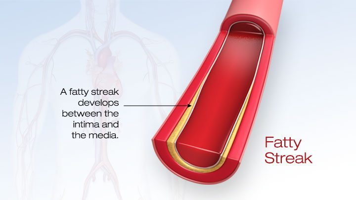
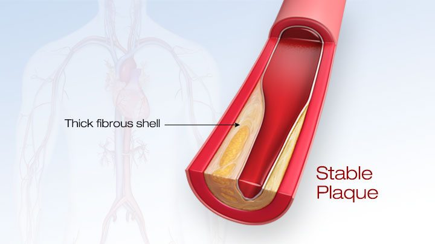
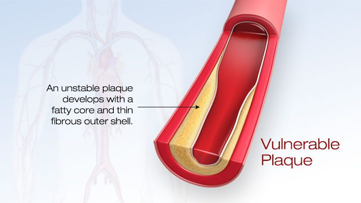
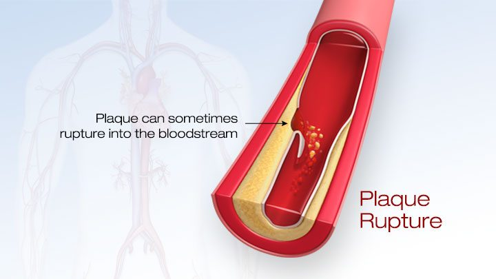
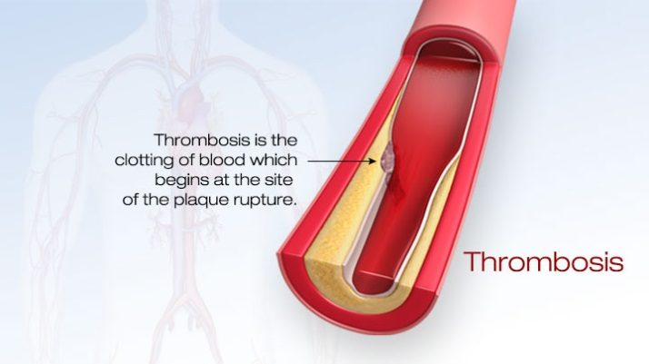
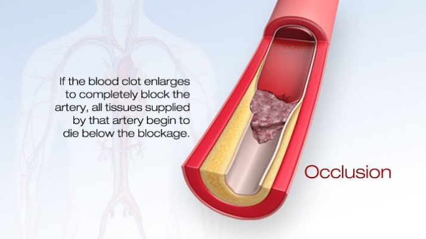
2.2 · Peripheral artery disease (and critical limb ischemia)
Peripheral arterial disease (also called peripheral arterial occlusive disease) is a lack of blood flow to muscle relative to its metabolism, producing pain in the affected muscle groups. The pathophysiology is similar to coronary artery disease, and 50% of patients with it also have coronary artery disease. The chain: less flow to the extremity → less tissue perfusion → less oxygen and nutrient to muscle → tissue damage and pain. Severity depends on the degree of narrowing, the number of arteries involved and the patient’s activity level. Lower-extremity disease sits at three segments: aortoiliac, femoral-popliteal and tibial.
Risk factors
- Age: older than 60 with no other risk factors, or 50 with risk factors (smoking, diabetes, hypertension, hyperlipidemia, sedentary lifestyle, obesity).
- Males > females; family history of peripheral arterial disease, cardiovascular disease or stroke.
- Cigarette smoking — three times the risk of nonsmokers; diabetes mellitus; dyslipidemia; hypertension; obesity.
- Elevated homocysteine — an amino acid associated with earlier-onset atherosclerosis.
Claudication: the site of the pain names the level of the block
Intermittent claudication (Latin claudicare, to limp) is pain in one or more lower-extremity muscle groups brought on by activity and relieved by rest, usually within about 10 minutes — an ache, cramp, numbness or fatigue, analogous to angina in the heart. Its severity depends on the degree of stenosis, the collateral circulation and the vigor of exercise. Many patients with risk factors report few or no symptoms, so ask about functional capacity and decline in activity over time.
| Where it hurts | Level of disease | Pulse clue |
|---|---|---|
| Buttock and hip (aching; hip or thigh weakness with walking) | Aortoiliac (about 30%) | Unilateral or bilateral diminished femoral pulse; severe disease causes erectile dysfunction |
| Thigh | Common femoral artery | Normal femoral pulses, decreased distal pulses |
| Upper two-thirds of the calf — the most common | Superficial femoral artery (about 60%) | — |
| Lower third of the calf | Popliteal artery | — |
| Foot | Tibial and peroneal arteries | — |
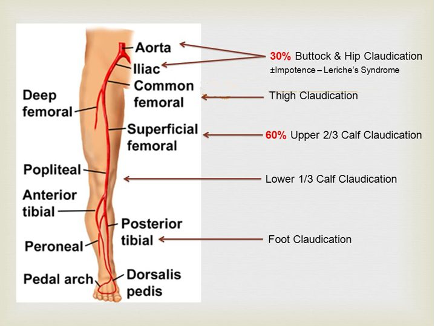
- Relieved by rest in about 10 minutes, said three times: “resting typically for about 10 minutes the pain goes away” 14:38; “Remember, claudication typically is about 10 minutes before the pain resolves.” 19:03 Slide 19
- The calf is the most common site (superficial femoral artery, about 60%); buttock and hip mean aortoiliac disease (about 30%): “The most common of all of them is the calf claudication.” 17:45 Slides 13, 15
- The aortoiliac triad (claudication, absent or diminished femoral pulses, erectile dysfunction; Leriche syndrome on the slide): “if you see those three together that’s a pretty decent indicator” 17:26 Slide 14
- Ask what the pain has taken away: walking distance, how it has changed, and daily activities: “make sure you’re asking about activities of daily life and if they’re interrupted” 20:32 Slides 17, 18
Claudication history. The history asks where the pain is, how far the patient can walk before it starts, whether that distance has changed, and how long rest takes to relieve it.
Critical limb ischemia: rest pain, ulcers, gangrene
Ischemic rest pain is constant — throbbing, burning or severe shooting — with cool feet, localized to the forefoot and toes, worse on elevation or reclining (gravity no longer helps arterial flow) and not controlled by analgesics, even narcotics. It wakes the patient at night; some sleep in a recliner. The paradox: it is relieved by hanging the leg over the edge of the bed or by walking around, because dependency uses gravity to perfuse the limb — the opposite of claudication, which walking causes.
- Ischemic ulcers: painful, often begin as minor trauma, fail to heal because the blood supply cannot meet the demands of healing tissue. Found at the ends of arterial branches (tips of the toes, between the digits) and at pressure points (metatarsal heads). Dry, punched out, painful, minimal bleeding, often ringed by black necrotic tissue. Can lead to osteomyelitis.
- Ischemic ulcers of critical limb ischemia. They usually appear at the toe tips and between digits, where arterial branches terminate, and at areas of increased focal pressure such as the metatarsal heads.
- Dry gangrene: hard and dry, usually the distal toes, with a clear demarcation between healthy and necrotic tissue — common in peripheral arterial disease.
- Ischemic rest pain. It responds poorly to analgesics, even narcotics, and is relieved instead by dependency, hanging the leg over the bed or walking around.
- Wet gangrene = surgical emergency: moist, edematous, blistering, with a risk of sepsis — usually a mixed bacterial infection of the dead tissue; when spore-forming Clostridium species are involved they release toxins and gas, and that form is called gas gangrene (the slide says the infection is often clostridial).
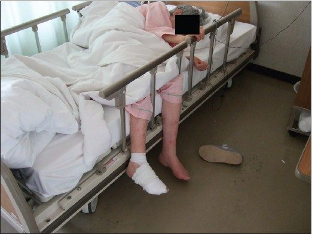
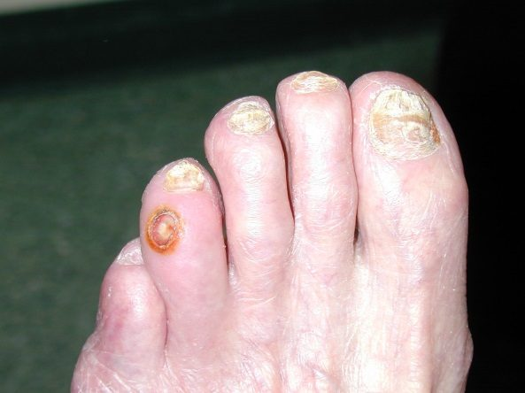
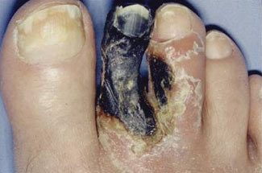
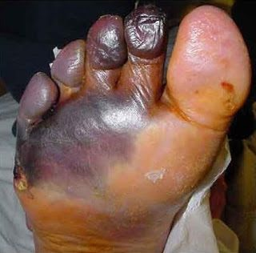
- Pain medicine does not touch it: “those analgesics don’t really make any difference at all” 24:45 Slide 21
- The paradox: legs over the bed help, and so does walking around: “that’s what they mean by a paradoxical presentation” 27:43 Slide 23
- Wet gangrene is the surgical emergency, said twice: “Wet gangrene is a surgical emergency.” 40:34 Of dry gangrene he said surgery is “Likely, but it’s not an emergent surgery.” 40:34 Slides 38, 39
Physical examination
- Best supine, after the patient has warmed up and rested 15 minutes; in advanced ischemia, time spent supine can bring on pain.
- Vital signs: blood pressure in both arms — the higher reading is used for the ankle-brachial index. Fever suggests an infected wound or ulcer; tachycardia and tachypnea suggest infection.
- Skin: xanthelasma; a midline sternotomy scar (prior coronary bypass).
- Inspection of the legs (depends on duration and severity): dry, thin, brittle, shiny skin when flow is severely reduced; poor wound healing; loss of hair and toenails; brittle nails; muscle atrophy.
- Temperature (back of the hand) is the marker for perfusion: the ischemic limb is cool, and the line where the temperature changes gives a rough indication of the level of occlusion.
- Pulses (brachial, radial, aorta, femoral, popliteal, dorsalis pedis, posterior tibial) are diminished or absent below the stenosis. If a pulse is hard to feel, use a handheld Doppler. Capillary refill longer than 2 seconds. Assess sensory and motor function.
- The six P’s of arterial assessment: pain, pallor, pulselessness, paresthesia, paralysis, poikilothermia (difficulty regulating temperature).
- Bruits over the abdominal aorta and the iliac, femoral and popliteal arteries.
- Reactive hyperemia is the transient rise in blood flow after a brief ischemic period: metabolites (carbon dioxide, lactic acid, adenosine) accumulate and cause vasodilation. Dependent rubor is the reddish color the skin takes when the leg hangs down.
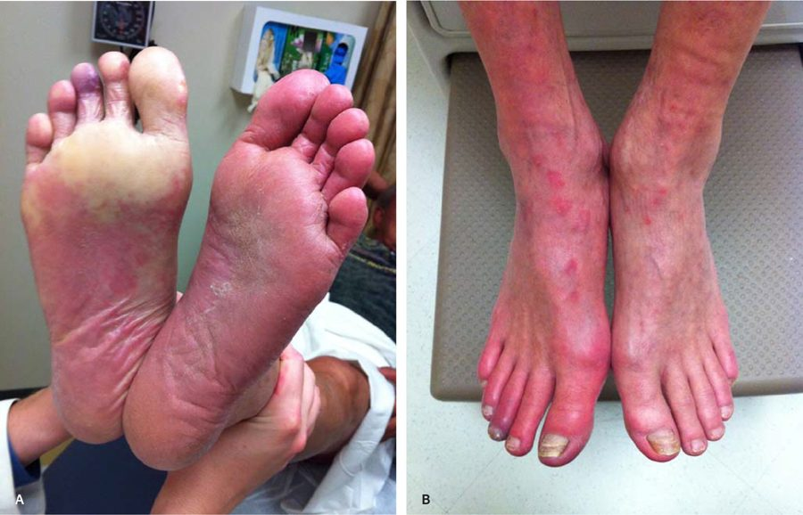
Differential diagnosis of leg pain
| Condition | What separates it |
|---|---|
| Thrombus at a plaque / embolism | Embolic debris from a proximal source gives acute pain |
| Venous insufficiency | Calf swelling and discomfort with standing; swelling worse with prolonged walking |
| Peripheral neuropathy | Elderly with diabetes or alcoholism; continuous burning in the foot, unaffected by exercise |
| Osteoarthritis (hip, knee) | Often present at rest and worse with exercise; better when weight is off the joint |
| Spinal stenosis | Claudication-like, with numbness and weakness; relieved by rest and by sitting down or leaning forward |
Diagnostic testing
ABI (ankle-brachial index) — a simple bedside test and the important initial test. Each leg’s index is its higher ankle pressure (posterior tibial or dorsalis pedis) divided by the higher arm pressure; the lower of the two legs is the patient’s overall index.
| Ankle-brachial index | Meaning |
|---|---|
| 0.9 – 1.3 | Normal |
| 0.4 – 0.9 | Claudication |
| 0 – 0.4 | Rest pain, tissue loss (ulcer, gangrene) |
| Above 1.3 | Abnormal — calcified, non-compressible arteries (for example, a diabetic patient) |
Ankle-brachial index. A value between 0.4 and 0.9 is the claudication band, matching exertional calf pain relieved by rest; the lower of the two legs is taken as the overall index.
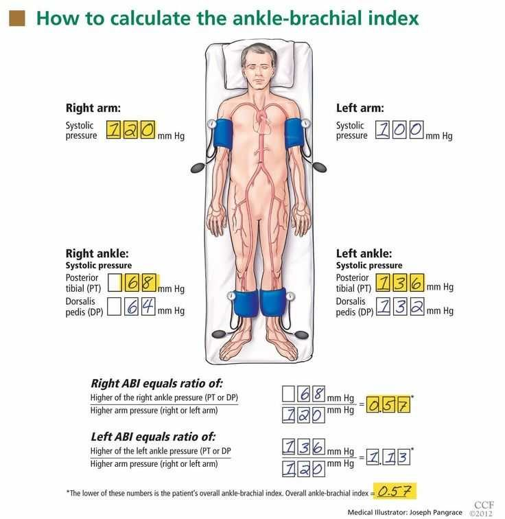
- Pulse volume recordings (plethysmography), done in a vascular laboratory: pneumatic cuffs sense segmental volume changes with each pulse and locate the site and severity of disease (slide 45, a picture-only slide).
- Duplex ultrasound: noninvasive, shows flow status, no contrast and no radiation — the mainstay and initial imaging when stenosis or obstruction is suspected.
- Computed tomography angiography delineates the anatomy with contrast, so contrast allergy or decreased renal function is a relative contraindication (a caution that may steer you to another study; the slide says contraindicated). Magnetic resonance angiography is the alternative with a contrast allergy; pacemakers and intracranial aneurysm clips are contraindications (slide 47). (Many newer devices are magnetic resonance conditional.)
- Conventional angiography is the gold standard — invasive (vascular puncture, catheter at the stenosis, contrast injected), the most accurate and informative test.
- Computed tomography angiography, magnetic resonance angiography and angiography are used mainly to guide a planned intervention (endovascular or open).
- Labs: electrocardiogram; complete blood count with differential; lipid profile; comprehensive metabolic panel with fasting glucose; renal function (these patients are at risk of renal insufficiency); hemoglobin A1c (average glucose over three months).
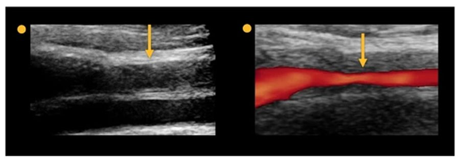
Management
Risk-factor reduction first:
- Smoking cessation.
- Smoking and peripheral artery disease. Cigarette smoking triples the risk of peripheral artery disease compared with nonsmokers, and smoking cessation heads the list of risk-factor reduction measures for every patient with the disease.
- Blood pressure goal below 130/80 mmHg in current guidance (older teaching, and the slide, used below 140/90 mmHg, or below 130/80 mmHg with diabetes or renal failure).
- Diabetes control; weight control.
- Exercise therapy: refer to an exercise rehabilitation program — supervised is more successful than home-based. Consistent moderate exercise improves walking distance; at least 30–45 minutes three times a week.
Drug therapy (names only; no doses):
- Antiplatelets: aspirin, clopidogrel, cilostazol. Aspirin or clopidogrel lower the risk of heart attack and stroke; cilostazol (also a vasodilator) is added to improve walking distance (the slide credits all three with both effects).
- Antiplatelet therapy in peripheral artery disease. Aspirin or clopidogrel lower the risk of myocardial infarction and stroke; cilostazol (also a vasodilator) is added to improve walking distance.
- Statins (older teaching names simvastatin, pravastatin, while current guidance prefers high-intensity statins such as atorvastatin or rosuvastatin); low-density lipoprotein target classically below 100 mg/dL, or below 70 mg/dL at high risk (diabetes, continued smoking); current guidance favors below 70 mg/dL.
- Pentoxifylline (a xanthine derivative) helps blood flow through narrowed arteries.
- Hyperhomocysteinemia: folic acid with vitamins B12 (cobalamin) and B6 (pyridoxine); it lowers homocysteine but has not been shown to reduce heart attacks or strokes, so it is not a proven treatment.
Revascularization is recommended for claudication with severe functional disability and an inadequate response to exercise or drug therapy:
- Endovascular (minimally invasive, like a heart catheterization): percutaneous transluminal angioplasty with or without a stent; atherectomy.
- Bypass graft (invasive, highly effective) with a saphenous vein or synthetic graft — principally for severe critical limb ischemia. Complications: heart attack and stroke, graft infection, peripheral embolization.
- Acute limb ischemia. Numbness over the dorsum of the foot is often the earliest neurologic sign, because light-touch sensory fibers are highly susceptible to ischemia.
- Critical limb ischemia needs revascularization. Night pain in the forefoot relieved by dangling the leg, a dry punched-out toe ulcer and an ankle-brachial index inside the 0 to 0.4 band of rest pain and tissue loss mark critical limb ischemia. The limb needs its blood supply restored by arterial revascularization; a bypass graft is used principally for severe critical leg ischemia.
- Endarterectomy removes plaque from inside the artery by open surgery.
- Amputation.
- The ankle-brachial index bands he read: 0.4–0.9, “that’s typically the patients we see claudication in.” 47:14; below 0.4, rest pain and tissue loss 47:17; “An ABI [ankle-brachial index] of greater than 1.3 is also abnormal.” 47:38 Our transcription garbled his normal range, so use the slide’s 0.9–1.3. Slide 42
- Smoking first (three times the risk): “stop smoking stop smoking stop smoking” 54:54 Slides 11, 50
- Cilostazol treats the symptom; aspirin and clopidogrel lower heart attack and stroke risk (his correction of slide 51, box above): “it doesn’t actually prevent progression of the disease it is a symptom therapy only” 56:26 Slide 51
- Exercise, 30–45 minutes at least three times a week 55:35; revascularize for severe disability only after exercise and drugs fail 58:15 Slides 50, 53
Rest pain on the ankle-brachial index. Rest pain and tissue loss (ulcer, gangrene) correspond to an ankle-brachial index of 0 to 0.4, the critical limb ischemia band, well below the claudication range.
2.3 · Arterial thrombosis and embolism: acute limb ischemia and atheroembolism
Acute limb ischemia is the sudden occlusion of a previously patent artery, with abrupt severe pain and absent pulses in the limb. It is a vascular emergency.
- Thrombosis can occur locally in a previously patent but stenotic artery.
- Embolus — thromboemboli are the most common: a dislodged intravascular thrombus travels distally and occludes a smaller artery. The heart is the source in 80–90% (atrial fibrillation; left ventricular thrombus after a heart attack). Atheroemboli are less likely to produce acute limb ischemia.
- History: sudden onset; there may or may not be prior claudication.
- Examination: the six P’s; a cold, cyanotic limb; absent pulses distal to the occlusion; test strength and sensation. Light-touch fibers are highly sensitive to ischemia, so sensory loss over the dorsum of the foot is often the earliest neurologic sign.
- Warning signs after an embolic occlusion. The six P's of arterial assessment (pain, pallor, pulselessness, paresthesia, paralysis and poikilothermia) mark acute limb ischemia, a vascular emergency that needs immediate care.
Rutherford categories
| Category | Prognosis | Sensory loss | Weakness | Doppler (arterial / venous) | What happens next |
|---|---|---|---|---|---|
| I · Viable | No immediate threat | None | None | Audible / audible | Time for imaging (for example computed tomography angiography) |
| IIA · Marginally threatened | Salvageable if treated promptly | None, or minimal (toes) | None | Often inaudible / audible (slide 62 says “often audible”; see the box above) | Time for imaging |
| IIB · Immediately threatened | Salvageable with immediate revascularization | More than the toes; rest pain | Mild to moderate | Usually inaudible / audible | Straight to the surgical suite |
| III · Irreversible | Major tissue loss or permanent nerve damage | Profound, anesthetic | Profound, paralysis (rigor) | Inaudible / inaudible | Major amputation whatever the therapy; imaging not immediately needed |
Acute limb ischemia and imaging. Viable and marginally threatened limbs have sufficient time for vascular imaging such as computed tomography angiography; immediately threatened limbs go to a surgical suite.
Immediately threatened limb. A limb that is immediately threatened is salvageable only with immediate revascularization, so it should preferentially undergo further evaluation and treatment in a surgical suite, without delay.
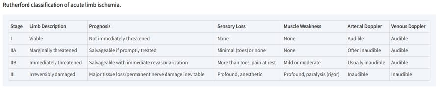
Diagnosis and treatment
- Testing depends on the category: magnetic resonance angiography, computed tomography angiography or catheter-based arteriography.
- Immediate vascular surgery consult.
- Anticoagulation with intravenous heparin.
- Intra-arterial catheter-directed thrombolysis when the ischemia is less than 14 days old (alteplase is the thrombolytic).
- Thromboembolectomy (catheter or surgical); arterial bypass; amputation.
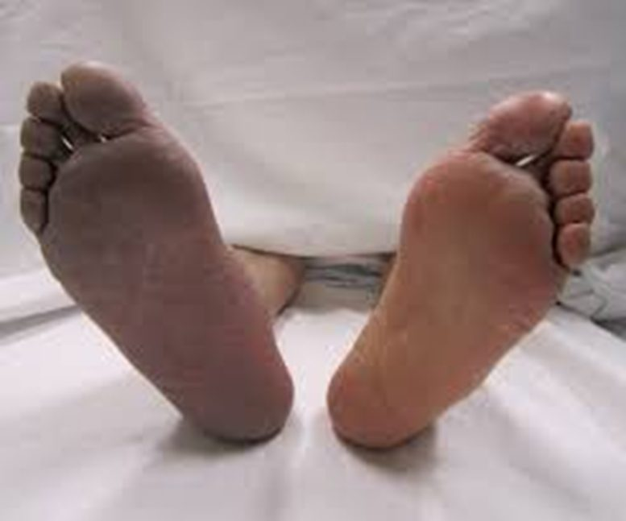
- “This is a vascular emergency.” 1:02:56 Slide 59
- A thromboembolus, usually from the heart: “Not the plaque emboli but the thromboemboli.” 1:03:32 The heart as the “source is the case in 80 to 90 percent of cases.” 1:04:02 Atrial fibrillation is the biggest. Slide 60
- Light touch on the top of the foot goes first: “Sensory deficits over the dorsum of the foot are often the earliest neurologic sign” 1:05:33 Slide 61
- Grade it by Rutherford: I and IIA have time for imaging; IIB goes straight to surgery (“We’re not going to wait on a CT [computed tomography].” 1:07:07); III needs major amputation whatever the therapy (“because what are you trying to save?” 1:07:53). Slides 62–65
- Thrombolysis has a time limit: “however it must be less than about 14 days.” 1:09:51 Slide 67
Atheroembolism — “blue toe” syndrome
Multiple small deposits of fibrin, platelets and cholesterol debris embolize from proximal atherosclerotic lesions (an abdominal aortic aneurysm can do it too). They lodge in the small vessels of muscle and skin and may not block large vessels, so the distal pulses usually stay palpable. The patient has acute pain and tenderness at the embolization site; digital occlusion gives ischemia and “blue toe” syndrome, and digital necrosis and gangrene may follow. Localized tenderness, pallor and livedo reticularis appear where the emboli land. The deck gives no diagnostic test, treatment or prognosis for atheroembolism.
2.4 · Carotid artery disease
Atherosclerotic plaque causes stenosis, embolization and thrombosis, and atherosclerosis has a predilection for the extracranial carotid artery (the bifurcation and bulb, where flow recirculates in a low-shear region).
- Atherosclerotic carotid artery disease is responsible for 80% of new noncardioembolic strokes (slide 71), the figure Carter read out on his recording: learn the slide’s number. Population studies give a lower share, roughly 10 to 20% of all ischemic strokes.
- As internal carotid stenosis increases, flow grows more turbulent and the risk of atheroembolization rises.
- Strokes come most often from plaque rupture, not from occlusion with thrombosis.
- Asymptomatic patients (narrowing, with no ischemic stroke or transient ischemic attack in the last six months) with significant stenosis outnumber symptomatic ones 4:1.
- Carotid stenosis. Asymptomatic patients with significant carotid stenosis outnumber symptomatic patients by 4:1, which is why carotid disease is often found before any stroke or attack.
- Symptomatic: focal neurologic symptoms, a transient ischemic attack (a brief focal loss of neurologic function that fully clears with no lasting damage; classically defined as lasting less than 24 hours, but current definitions rest on the absence of tissue injury rather than a time cutoff) or a stroke.
- Transient ischemic attack. A transient ischemic attack is a focal deficit, a focal loss of neurologic function lasting less than 24 hours; it and stroke classify a patient with carotid disease as symptomatic.
- The six-month window. A transient ischemic attack (a focal loss of neurologic function lasting less than 24 hours) or a stroke within the last six months makes carotid disease symptomatic.
- Examination: inspect the neck pulses; have the patient hold their breath and auscultate each carotid separately, diaphragm then bell, for a bruit; palpate one side at a time. Add ophthalmic, cardiac, peripheral vascular, neurologic and musculoskeletal examination.
Diagnostic testing
- Duplex ultrasonography — the most widely used initial screening tool, also used to follow patients serially for progression or after intervention.
- Computed tomography angiography or magnetic resonance angiography image the cervical and intracranial carotid and vertebral circulation and the brain.
- Digital subtraction angiography — invasive and the gold standard, but not used for screening; it guides therapeutic interventions.
Management
| Who | What |
|---|---|
| Symptomatic or asymptomatic, stenosis below 50% | Medical management |
| Symptomatic, stenosis above 70% | Surgery |
| Asymptomatic, stenosis above 80% and life expectancy over 5 years | Surgery |
- Medical: antiplatelets (aspirin, clopidogrel); treat hypertension, diabetes (glycemic control) and hyperlipidemia (statins); smoking cessation — smoking nearly doubles stroke risk; healthy diet, regular exercise, weight reduction with obesity.
- Carotid endarterectomy removes plaque through an incision — the gold standard for high-grade stenosis. Complications: stroke or nerve damage.
- Carotid angioplasty with stenting, usually through the femoral artery (transfemoral) — less invasive, for poor surgical candidates.
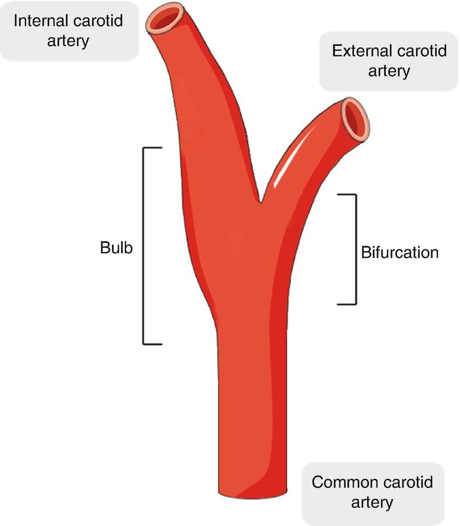
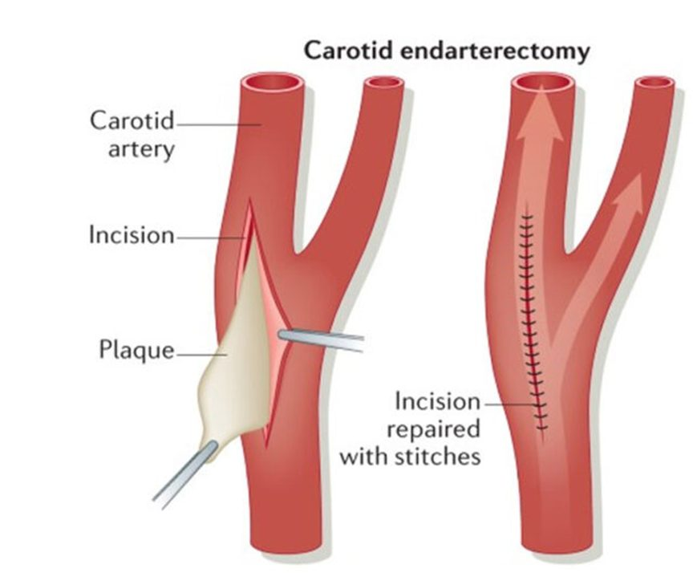
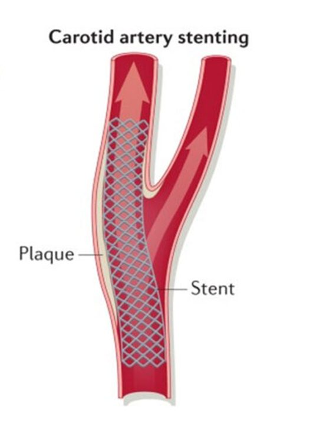
- The thresholds, said twice with an example: medical management below 50% (“Low grade is defined as less than 50%.” 1:17:36); surgery for symptomatic above 70%; asymptomatic above 80% only with a life expectancy over 5 years: “We will do it asymptomatic if it’s greater than 80% but not if they have a life expectancy of less than five years.” 1:18:40 Slide 75
- Strokes come from plaque rupture, said twice: “The strokes are most often caused by carotid plaque rupture rather than a carotid artery occlusion with thrombosis.” 1:13:15 Slide 71
- Endarterectomy is the gold standard for high-grade stenosis: “Better than anything else we know it works because we took the plaque out.” 1:20:40 Stenting is for poor surgical candidates. Slide 77
- Palpate one side at a time: “make sure you only palpate one carotid at a time, we don’t want to cut blood flow off to the brain” 1:15:41 Slide 73
- Smoking nearly doubles stroke risk, after another triple “stop smoking”: “The risk of smoking increases your risk by nearly double.” 1:19:03 Slide 76
2.5 · Aortic aneurysms: abdominal, thoracic and false
An aneurysm is a pathologic dilation of a vessel segment — a localized dilation greater than 50% of normal diameter. The infrarenal abdominal aorta averages 2 cm; above 3 cm is aneurysmal. Normal thoracic diameter varies with location, body habitus, sex and age.
- True aneurysms involve all three wall layers. Saccular: only part of the circumference, an outpouching. Fusiform: the whole circumference, a diffusely dilated segment.
- Thoracic aortic aneurysm: ascending, arch or descending. Abdominal aortic aneurysm: the most common site; 90% are infrarenal, usually involving the bifurcation and the common iliacs.
- The thoracic aorta begins at the aortic valve and leaves the thorax through the diaphragm at T12; the abdominal aorta runs from the diaphragmatic hiatus to its bifurcation into the common iliacs at the fourth lumbar vertebra.
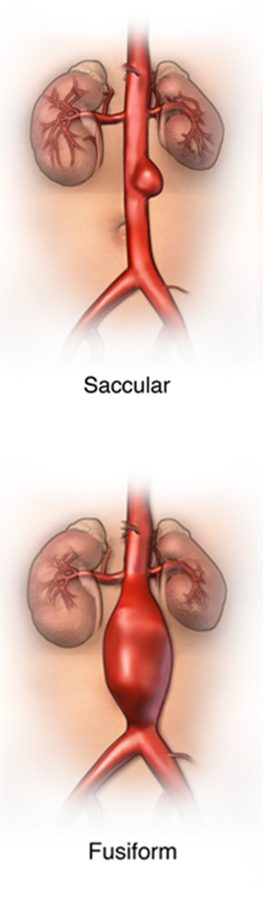
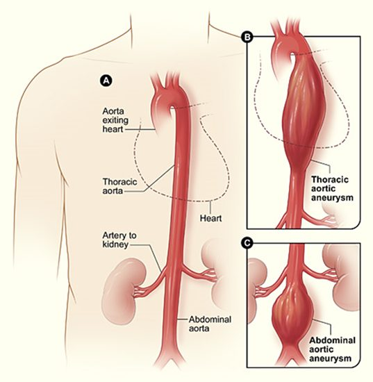
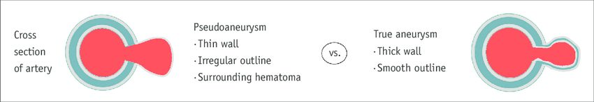
Epidemiology, cause and risk
- 15,000 deaths a year in the United States from abdominal aortic aneurysm — the only mortality figure in the deck.
- Men > women: 2:1 under 80, 1:1 over 80. Caucasian men have the highest incidence; uncommon in African American, Asian and Hispanic populations.
- Pathophysiology: failure of the major structural proteins (elastin and collagen) in the media; the cause is unclear. Genetic predisposition: Marfan syndrome (FBN1 gene) and Ehlers-Danlos syndrome (COL3A1 gene). Atherosclerosis may weaken the wall mechanically.
- Etiologies: Marfan syndrome (connective tissue disorder); syphilis (destroys the vasa vasorum, the small vessels that supply the walls of larger arteries); vasculitis (Takayasu arteritis, giant cell arteritis); trauma; congenital.
- Risk factors: smoking, current or past — the strongest; male sex; advancing age; Caucasian race; atherosclerosis; hypertension; family history of abdominal aortic aneurysm; other large-artery aneurysms (iliac, femoral, popliteal).
- Protective: female sex (but women’s aneurysms rupture more often); non-Caucasian race; diabetes (reason unknown — perhaps treatment regimens or arterial stiffness).
- More than 50% over normal, so above 3 cm in the abdomen: “50 percent of two is one so two plus one is three” 1:24:47 Slides 82, 83
- True means all three layers: “If it does not involve all three layers it is not a true aneurysm.” 1:25:29 A pseudoaneurysm is a rupture with the blood outside the wall, most often at the femoral artery after catheterization: “The most common site for this is the femoral artery and the reason why is because we accessed it for a cardiac catheterization.” 1:47:17 Slides 84, 112
- The typical patient is an older white man who smokes: “He has the strongest likelihood to develop aortic aneurysms.” 1:27:15 Smoking is the strongest single risk factor; female sex, non-Caucasian race and diabetes are protective. Slides 86–88
Abdominal aortic aneurysm: presentation and examination
| State | Presentation |
|---|---|
| Asymptomatic | Often an incidental finding on physical examination |
| Symptomatic, unruptured | Pain with expansion, constant or intermittent, mild to severe, in the abdomen (hypogastrium), back or flank, may radiate to the low back; isolated groin pain (pressure on the femoral nerve); early satiety; embolic “blue toe” |
| Ruptured | Blood escapes into the retroperitoneum. Classic triad in 50%: severe abdominal or back pain, a pulsatile abdominal mass (virtually diagnostic), hypotension. Often misdiagnosed as renal colic, diverticulitis, gastrointestinal hemorrhage or ischemic bowel |
Examination: palpate the aorta and estimate its size; an abdominal bruit is nonspecific; check the peripheral pulses; a pulsatile mass is more likely with rupture; Grey Turner sign (flank ecchymosis) with retroperitoneal hemorrhage. Differential: acute gastritis, appendicitis, urinary tract infection, diverticulitis, pancreatitis, gallstones, large- and small-bowel obstruction, heart attack, peptic ulcer disease.
Abdominal aortic aneurysm: testing, surveillance and rupture risk
- Abdominal X-ray: a calcified outline is visible in 75%; 25% are not calcified and not seen.
- Abdominal ultrasound — the study of choice for initial screening, and for serial documentation of size.
- Computed tomography is better than ultrasound for size, visceral-artery involvement and extent; magnetic resonance imaging is comparable without dye or radiation — useful in stable patients with a dye allergy.
- Computed tomography angiography — the best diagnostic and pre-intervention planning study; it delineates location, size and extent.
- Labs: electrocardiogram (cardiac status); complete blood count (hemoglobin, hematocrit, white cells); comprehensive metabolic panel (renal and liver function); type and crossmatch if transfusion is possible.
| Aneurysm size | Surveillance (American College of Cardiology / American Heart Association) |
|---|---|
| 3.0 – 3.9 cm | Ultrasound every three years |
| 4.0 – 5.4 cm | Ultrasound or computed tomography every 6–12 months |
| Elective repair | 5.0 cm or larger in women; above 5.5 cm in men; or rapid growth — 0.5 cm in six months |
Rupture is rare until the diameter exceeds 5 cm. Risk rises with a diameter above 5.5 cm, expansion above 0.5 cm in six months, continued smoking and hypertension.
Abdominal aortic aneurysm: management
- Medical: manage modifiable risk factors — smoking cessation, aggressive blood pressure control, moderate exercise (running, biking, swimming, hiking).
- Referral to a vascular specialist at 4.5 cm or larger for observation and assessment; urgent referral for aneurysmal pain at any size. Consider vascular surgery referral at 5.0 cm or larger.
- Repair — chosen by age and comorbidities: endovascular aneurysm repair (a modular graft placed through the iliac or femoral arteries lines the aorta and excludes the sac) or open surgery (the diseased segment is replaced with a tube or bifurcated prosthetic graft).
- Symptomatic, unruptured: assess hemodynamic stability, large-bore intravenous catheters, pain control, blood pressure control with beta blockers, and surgical repair (endovascular or open) unless contraindicated.
- Ruptured: hemodynamically unstable — large-bore intravenous catheters, type and crossmatch, surgical emergency.
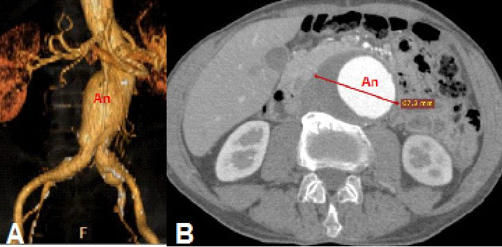
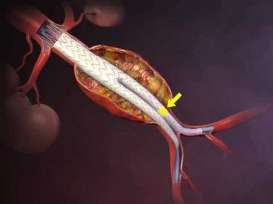
- Put it on the differential of abdominal, back, flank or groin pain: “but this is the deadly thing that you can’t miss.” 1:29:29 And again: “because it is the potentially deadly one.” 1:34:39 Slides 89, 93
- Rupture: the pulsatile abdominal mass (virtually diagnostic; the full triad appears in only 50%): “The big thing is the pulsatile abdominal mass.” 1:30:30 “We say that because it’s basically diagnostic.” 1:30:41 Slide 90
- Ruptured is a surgical emergency: “They may die in the elevator on the way up to the ER [emergency room] or to the OR [operating room].” 1:34:01 Slide 92
- Quit smoking, the triple again: “Quit smoking, quit smoking. I feel like we say this a lot, quit smoking.” 1:40:28 Slide 100
Thoracic aortic aneurysm
- A history of hypertension is common. Most are asymptomatic, found incidentally on a chest X-ray.
- Thoracic aortic aneurysms. Most are asymptomatic and found incidentally on chest radiograph; a history of hypertension is common, and symptoms depend on location.
- Symptoms depend on location: ascending → aortic regurgitation, heart failure; arch → hoarseness (recurrent laryngeal nerve); descending → dyspnea, stridor, wheezing, cough, dysphagia (compression of the trachea or esophagus).
- Chest X-ray: widened mediastinal shadow; displacement or compression of the trachea or left mainstem bronchus.
- Labs: complete blood count, comprehensive metabolic panel, type and crossmatch.
- Computed tomography angiography is the most widely used test — it shows the entire thoracic and abdominal aorta. Magnetic resonance angiography gives location, extent and size but is time-consuming. Transesophageal echocardiography evaluates the aortic valve and root.
- Surveillance (root, ascending or descending): below 4.5 cm, computed tomography or magnetic resonance imaging every 3–5 years; 4.5–5.4 cm, every 6–12 months.
- Management: smoking cessation, beta blockers, aggressive blood pressure control. Chest or back pain with a known or suspected thoracic aneurysm needs urgent imaging. Repair ALL symptomatic thoracic aneurysms. Asymptomatic repair depends on diameter, location and growth: ascending above 5.5 cm, descending above 6.0 cm, or growth above 0.5 cm per year. Ascending aneurysms often need open surgery with aortic root replacement; descending ones can be repaired open or endovascularly.
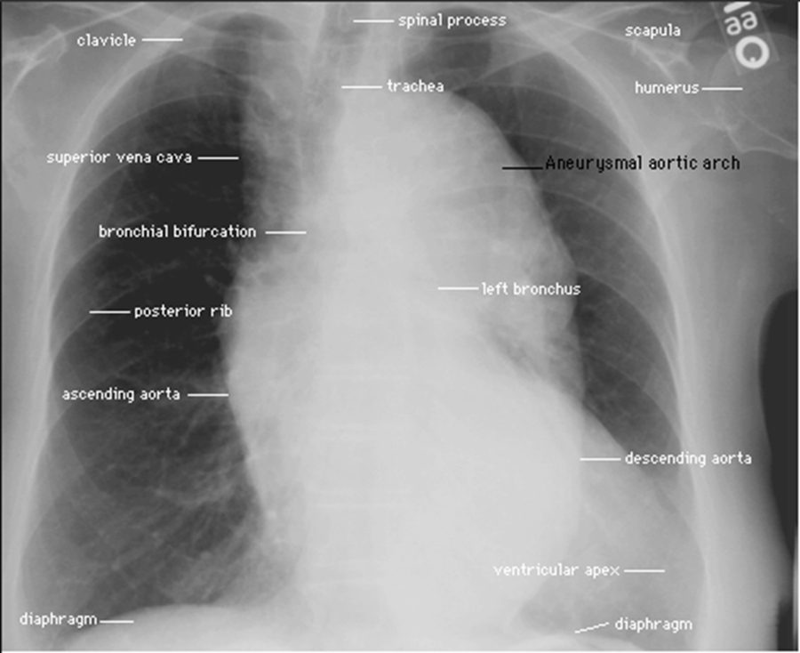
- Every symptomatic thoracic aneurysm is repaired: “We’re going to recommend that there is a repair for any symptomatic thoracic aortic aneurysm.” 1:44:59 Slide 108
- Chest or back pain with a known or suspected aneurysm gets urgent imaging: “we have to make sure that the aortic aneurysm is on our differential.” 1:44:53 Slide 108
- On the chest X-ray, a widened mediastinum, not the calcified outline of the abdominal film: “In the chest x-ray we’re not necessarily looking for that calcification.” 1:42:43 Slide 105
- Surveillance is computed tomography or magnetic resonance, not ultrasound: “You see there is no ultrasound there” 1:45:39 Slide 109
Pseudoaneurysm (false aneurysm)
- A communication between the arterial lumen and the overlying connective tissue after arterial rupture: a blood-filled cavity forms outside the vessel wall and seals the leak as it thromboses.
- Common site: the femoral artery after cardiac catheterization, from laceration by the access needle.
- On imaging (picture only): thin wall, irregular outline, surrounding hematoma — against the true aneurysm’s thick wall and smooth outline.
- Presents with pain from swelling pressure or nerve compression.
- Treatment: watch and wait if below 2 cm (it may thrombose and regress on its own); ultrasound-guided thrombin injection to seal the leak. The deck names no diagnostic test.
2.6 · Aortic dissection
- Forms from an intimal tear, typically contained by the media: the wall layers separate and create a false lumen within the media where blood can pool (and may clot).
- The most common predisposing factor is degeneration of medial collagen and elastin, and Marfan syndrome is the classic medial degeneration; a history of hypertension is present in most cases.
- Who: age 60s–70s (except Marfan syndrome); males > females; a history of hypertension in most cases.
- Presentation: sudden, severe, tearing or ripping chest pain; its location depends on the site and may change as the dissection propagates distally; syncope; hypertension or hypotension; aortic regurgitation from aortic-root dilatation.
- Diagnosis: the electrocardiogram may be normal; computed tomography of the chest and abdomen delineates the extent; magnetic resonance imaging is good but slower; transesophageal echocardiography.
- Management: stop progression by lowering the pressure — systolic 100–120 mmHg using a beta blocker (esmolol) first, with a vasodilator (nitroprusside) added if pressure is still high (the slide lists them as alternatives, but a vasodilator alone causes reflex tachycardia that worsens dissection); pain control; surgery to graft and replace the diseased aorta. Untreated acute dissection has a high mortality.
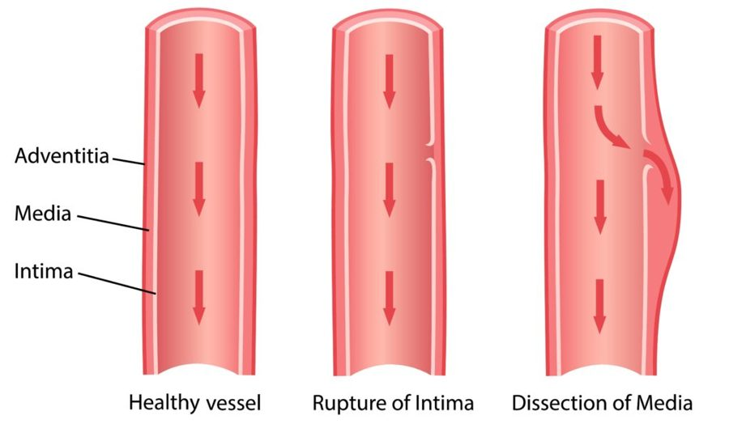
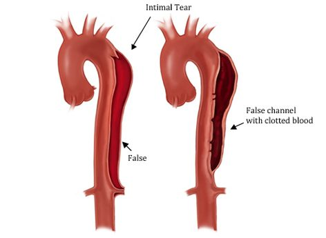
- Esmolol by name: “That’s our go-to aortic dissection Esmolol.” 1:52:39 “with aortic dissection the beta blocker of choice is Esmolol.” 1:52:53 Slide 118
- Systolic 100–120 mmHg: “We want to reduce it even lower than most of the other conditions” 1:52:33 Slide 118
- A split in the wall, not a rupture: “The dissection is the separation of the media from the intima.” 1:49:51 “This is not a rupture” 1:50:11 The false lumen lies within the media. Slide 114
- Untreated, it kills: “If there is an acute dissection and it remains untreated it has a very high mortality rate.” 1:53:21 Slide 118
2.7 · The conditions, point by point
Peripheral arterial disease (peripheral arterial occlusive disease)
Defining feature: exertional muscle pain relieved by rest within about 10 minutes; the site names the level; ankle-brachial index 0.4–0.9
- Definition
- Lack of blood flow to muscle relative to its metabolism, from atherosclerotic narrowing at the aortoiliac, femoral-popliteal or tibial segment; pathophysiology like coronary artery disease.
- Who gets it
- Older than 60 without other risk factors, 50 with them; males > females; half also have coronary artery disease.
- Risk factors
- Age, male sex, family history, cigarette smoking (three times the risk), diabetes, dyslipidemia, hypertension, obesity, elevated homocysteine, sedentary lifestyle.
- Classic signs & symptoms
- Intermittent claudication (calf most common); often asymptomatic, so ask about functional decline. Leriche triad with aortoiliac disease: claudication, absent or diminished femoral pulses, erectile dysfunction.
- Physical exam findings
- Dry, thin, shiny skin; hair and nail loss; brittle nails; muscle atrophy; poor healing; cool limb with a temperature demarcation; diminished or absent pulses below the stenosis; capillary refill over 2 seconds; bruits; positive Buerger test (pallor on elevation, dependent rubor).
- Diagnostics / tests
- Ankle-brachial index (important initial test); pulse volume recordings; duplex ultrasound (mainstay initial imaging); computed tomography or magnetic resonance angiography; conventional angiography (gold standard, to guide intervention); electrocardiogram, blood count, lipids, metabolic panel, renal function, hemoglobin A1c.
- First-line treatment
- Risk-factor reduction: smoking cessation, blood pressure below 130/80 in current guidance (older teaching: below 140/90, or 130/80 with diabetes or renal failure), diabetes and weight control, supervised exercise 30–45 minutes three times a week; antiplatelets (aspirin, clopidogrel, cilostazol), statins, pentoxifylline. Revascularization if disabling despite exercise and drugs.
- Complications
- Critical limb ischemia (rest pain, ulcers, gangrene, osteomyelitis), amputation, renal insufficiency; bypass complications: heart attack, stroke, graft infection, peripheral embolization.
Slides 8–20, 26–35, 40–58
Critical limb ischemia
Defining feature: constant forefoot rest pain, worse on elevation, relieved by dangling the leg or walking; ankle-brachial index 0–0.4
- Definition
- The rest-pain, ulceration and gangrene end of peripheral arterial disease (no formal definition on the slides).
- Who gets it
- Not covered separately.
- Risk factors
- Not covered separately (the peripheral arterial disease list applies).
- Classic signs & symptoms
- Constant throbbing, burning or shooting pain with cool feet, in the forefoot and toes, waking the patient at night, not controlled by narcotics; sleeping in a recliner.
- Physical exam findings
- Painful, dry, punched-out ulcers at toe tips, between digits and over metatarsal heads, with minimal bleeding and black necrotic edges; dry gangrene (clear demarcation) or wet gangrene (moist, edema, blisters).
- Diagnostics / tests
- Ankle-brachial index 0–0.4; the night-pain, recliner, analgesic and non-healing-wound history.
- First-line treatment
- Bypass graft is principally for severe critical limb ischemia; amputation. Wet gangrene is a surgical emergency.
- Complications
- Osteomyelitis; sepsis with wet gangrene (usually a mixed bacterial infection; clostridial gas gangrene is one form).
Slides 21–25, 37–39, 42, 57–58
Acute limb ischemia (acute peripheral arterial occlusion)
Defining feature: sudden onset of the six P’s in a previously patent artery — a vascular emergency
- Definition
- Sudden occlusion of a previously patent artery, with abrupt severe pain and absent pulses.
- Who gets it
- Patients with an embolic source: the heart in 80–90% (atrial fibrillation, left ventricular thrombus after a heart attack); or local thrombosis at a stenotic artery.
- Risk factors
- Atrial fibrillation; recent heart attack with left ventricular thrombus; existing stenosis (there may or may not be prior claudication).
- Classic signs & symptoms
- Pain, pallor, pulselessness, paresthesia, paralysis, poikilothermia.
- Physical exam findings
- Cold, cyanotic limb; absent pulses distal to the block; sensory loss over the dorsum of the foot is often the earliest neurologic sign; weakness grades the category.
- Diagnostics / tests
- Classify first (Rutherford I, IIA, IIB, III). I and IIA have time for imaging (computed tomography angiography); IIB goes to the surgical suite; III usually needs no imaging. Magnetic resonance angiography, computed tomography angiography or catheter arteriography.
- First-line treatment
- Immediate vascular surgery consult and intravenous heparin; catheter-directed thrombolysis (alteplase) if under 14 days; thromboembolectomy; bypass.
- Complications
- Limb loss: category III needs major amputation whatever the therapy.
Slides 59–67
Atheroembolism (“blue toe” syndrome)
Defining feature: painful blue toe with palpable distal pulses
- Definition
- Multiple small deposits of fibrin, platelets and cholesterol debris embolizing from proximal atherosclerotic lesions.
- Who gets it
- Not covered in the lecture.
- Risk factors
- Proximal atherosclerotic plaque; an abdominal aortic aneurysm can also shed emboli.
- Classic signs & symptoms
- Acute pain and tenderness at the embolization site; a blue toe.
- Physical exam findings
- Distal pulses usually palpable; localized tenderness, pallor and livedo reticularis where the emboli land.
- Diagnostics / tests
- Not covered in the lecture.
- First-line treatment
- Not covered in the lecture.
- Complications
- Digital necrosis and gangrene.
Slides 7, 60, 68, 89
Carotid artery disease
Defining feature: transient ischemic attack or stroke with a carotid bruit
- Definition
- Atherosclerotic plaque in the extracranial carotid causing stenosis, embolization and thrombosis.
- Who gets it
- Asymptomatic patients with significant stenosis outnumber symptomatic 4:1; responsible for 80% of new noncardioembolic strokes (slide 71; population studies give roughly 10 to 20% of all ischemic strokes).
- Risk factors
- Smoking (nearly doubles stroke risk); hypertension, diabetes and hyperlipidemia are managed as comorbidities (no dedicated list).
- Classic signs & symptoms
- Asymptomatic, or focal neurologic symptoms, transient ischemic attack (classically under 24 hours; no tissue injury), stroke.
- Physical exam findings
- Carotid bruit (each side separately, breath held, diaphragm then bell); palpate one side at a time.
- Diagnostics / tests
- Duplex ultrasonography (initial screening, serial follow-up); computed tomography or magnetic resonance angiography; digital subtraction angiography (gold standard, not for screening).
- First-line treatment
- Medical management below 50%: antiplatelets, blood pressure, glucose and lipid control, smoking cessation, diet, exercise. Endarterectomy (gold standard) for symptomatic above 70% or asymptomatic above 80% with over 5 years’ life expectancy; stenting for poor surgical candidates.
- Complications
- Stroke (usually from plaque rupture); endarterectomy can cause stroke or nerve damage.
Slides 69–78
Abdominal aortic aneurysm
Defining feature: infrarenal aorta above 3 cm; rupture = pain, pulsatile mass, hypotension
- Definition
- Localized dilation over 50% of normal diameter; the infrarenal aorta averages 2 cm, and above 3 cm is aneurysmal. 90% are infrarenal.
- Who gets it
- Men 2:1 under 80 (1:1 over 80); Caucasian men highest; 15,000 deaths a year in the United States.
- Risk factors
- Smoking ever (strongest), male sex, age, Caucasian race, atherosclerosis, hypertension, family history, other large-artery aneurysms. Protective: female sex, non-Caucasian race, diabetes.
- Classic signs & symptoms
- Usually incidental; expansion pain in the hypogastrium, back or flank, groin pain, early satiety, blue toe; rupture triad in 50%.
- Physical exam findings
- Palpable aorta; pulsatile abdominal mass (virtually diagnostic); nonspecific bruit; Grey Turner sign (flank ecchymosis) with retroperitoneal bleeding.
- Diagnostics / tests
- Abdominal ultrasound (initial screening and serial size); X-ray shows calcification in 75%; computed tomography angiography (best diagnostic and planning study); magnetic resonance imaging in stable dye-allergic patients; type and crossmatch.
- First-line treatment
- Smoking cessation, aggressive blood pressure control, moderate exercise, surveillance by size; specialist at 4.5 cm; repair (endovascular or open) at 5.0 cm in women, above 5.5 cm in men, or 0.5 cm growth in six months. Rupture is a surgical emergency.
- Complications
- Rupture (rare below 5 cm; risk up with size, fast growth, smoking, hypertension); distal embolization.
Slides 80–102
Thoracic aortic aneurysm
Defining feature: symptoms by location — aortic regurgitation (ascending), hoarseness (arch), dysphagia or stridor (descending)
- Definition
- Aneurysm of the ascending aorta, arch or descending aorta.
- Who gets it
- A history of hypertension is common.
- Risk factors
- Not covered separately (the general aneurysm list applies).
- Classic signs & symptoms
- Mostly asymptomatic; otherwise by location, from compression of neighboring structures.
- Physical exam findings
- Signs of aortic regurgitation and heart failure with an ascending aneurysm; hoarseness with an arch aneurysm.
- Diagnostics / tests
- Chest X-ray: widened mediastinum, tracheal or left mainstem bronchus displacement. Computed tomography angiography (most widely used); magnetic resonance angiography; transesophageal echocardiography (valve and root). Surveillance every 3–5 years below 4.5 cm, 6–12 months at 4.5–5.4 cm.
- First-line treatment
- Smoking cessation, beta blockers, aggressive blood pressure control; repair all symptomatic aneurysms; asymptomatic: ascending above 5.5 cm, descending above 6.0 cm, or growth over 0.5 cm a year.
- Complications
- Aortic regurgitation and heart failure (ascending); airway and esophageal compression (descending).
Slides 82–88, 104–110
Pseudoaneurysm (false aneurysm)
Defining feature: a painful femoral swelling after cardiac catheterization — blood outside the wall
- Definition
- A blood-filled cavity outside the vessel wall, communicating with the lumen after arterial rupture, that seals as it thromboses.
- Who gets it
- Patients after cardiac catheterization (femoral artery).
- Risk factors
- Laceration of the artery by an access needle.
- Classic signs & symptoms
- Pain from swelling pressure or nerve compression.
- Physical exam findings
- Not covered in the lecture (imaging picture: thin wall, irregular outline, surrounding hematoma).
- Diagnostics / tests
- Not covered in the lecture (ultrasound appears only as guidance for treatment).
- First-line treatment
- Watch and wait if below 2 cm (may thrombose and regress); ultrasound-guided thrombin injection.
- Complications
- Not covered in the lecture.
Slides 112–113
Aortic dissection
Defining feature: sudden tearing or ripping chest pain that moves as the dissection propagates
- Definition
- An intimal tear, usually contained by the media, separating the wall layers into a false lumen within the media.
- Who gets it
- Ages 60–70s (younger in Marfan syndrome); males > females.
- Risk factors
- Medial collagen and elastin degeneration (the most common predisposing factor; Marfan syndrome is the classic form); hypertension (a history in most cases).
- Classic signs & symptoms
- Sudden severe tearing chest pain whose location depends on, and changes with, the dissection; syncope.
- Physical exam findings
- Hypertension or hypotension; aortic regurgitation from root dilatation.
- Diagnostics / tests
- Electrocardiogram may be normal; computed tomography of the chest and abdomen for extent; magnetic resonance imaging (slower); transesophageal echocardiography.
- First-line treatment
- Lower systolic pressure to 100–120 mmHg using a beta blocker (esmolol) first, with nitroprusside added if pressure is still high; pain control; surgical grafting and replacement.
- Complications
- High mortality if untreated; aortic regurgitation.
Slides 114–118
2.8 · Populations
| Population | What the deck gives |
|---|---|
| Infant, child, adolescent | Nothing — the deck has no content for these groups. |
| Adult | Peripheral arterial disease from age 50 with risk factors. Aortic dissection in younger adults means Marfan syndrome (the usual age is the 60s–70s). |
| Elderly | Peripheral arterial disease from older than 60 without risk factors. Abdominal aneurysm risk rises with advancing age, and the male excess narrows from 2:1 to 1:1 after 80. Dissection peaks in the 60s–70s. |
He put the ages beside the sizes in his closing list (“make sure you know your sizes for your aneurysms and your age groups” 1:54:47). The ages he read:
- Peripheral artery disease: older than 60 needs no other risk factor (“if you are greater than 60 years old that is all the risk factor you need” 10:35); from 50 with risk factors. Slide 11
- Aortic aneurysm: men outnumber women 2:1 under 80 and 1:1 over 80 1:22:15. Slide 80
- Aortic dissection: the 60s and 70s, younger with Marfan syndrome (“with the exception of Marfan which happens in much younger ages” 1:50:52). Slide 115
- Carotid surgery for an asymptomatic stenosis needs a life expectancy over 5 years 1:18:40. Slide 75
3 · Cardiomyopathy
Lecture 28 · Grady G. Carter, MSHS, PA-C · Zoom, Thursday 1 October 2026
Instructional Objectives
CARDIOMYOPATHY — Grady G. Carter, MSHS, PA-C
- Compare and contrast the etiologies, epidemiology, risk factors, clinical manifestations, differential diagnosis, diagnostic testing (including ordering and interpretation), management (acute and chronic, including applicable rehabilitative and palliative care), appropriate referrals, patient education, and prognosis of the following cardiomyopathies:
- Restrictive cardiomyopathy
- Hypertrophic cardiomyopathy
- Dilated cardiomyopathy
- Stress cardiomyopathy
- Myocarditis
- Identify medical care strategies for cardiomyopathies for the following populations.
- adolescent
- adult
- elderly
Quoted as the syllabus prints it (page 16), including its own numbering: items 2–6 are the five cardiomyopathies of objective 1, item 7 is the second real objective, and items 8–10 are its population list.
What Carter said is and is not tested (Zoom recording of Thursday 1 October; the times are recording times, hours:minutes:seconds):
- How this section was made. From Zoom’s automatic captions, not our own transcription, so every quotation was checked word for word against the caption text and any phrase the captions garbled was left out. The ★ boxes and highlights only choose which slide facts to learn first. A word that is his rather than the slide’s (“definitive”, “telltale”, “best test”) appears only inside a quotation, never as a new fact. Context he gave that is not on any slide is in the labeled boxes and is not built into the quizzes.
- His clearest study instruction, at the very end: “there’s a lot of numbers, there’s a lot of genes, there’s a lot of most likely causes, there’s a lot of best diagnostics and gold standards” 2:07:05 and then “make sure that you’re studying the key points that are coming out of here that we can make questions out of” 2:07:05. Read it as four things to know cold: the numbers, the inheritance (genes), the most likely cause of each condition, and the best test or gold standard for each. The two starred tables just below give the tests and the numbers (including the inheritance figures); the causes he stressed are starred in their own sections.
- His take-home: “cardiomyopathies are the disease process of the muscle itself. It’s not the heart failure, it’s not the congestion, it’s not the signs and symptoms” 2:07:26. Sort every case into dilated, hypertrophic or restrictive, and decide whether it is genetic or secondary to something else.
- What he did not say. He did not list anything as “not tested” in this lecture and did not repeat the Exam 4 rules (no dosing, no mechanism-of-action questions, generic names only, no acronyms in questions); those stand. He did send the class to review a few things on their own or kept them light: the obstructive hypertrophic video (“These will be uploaded, so I will let you go back and watch that video on your own.” 1:32:03) and the myectomy video (“Please feel free to review if you would like.” 1:46:04); the murmur cards for mitral and tricuspid regurgitation, slides 31–32, which he kept light (“I don’t think that anyone needs to beat this” 54:46 — he added that they make a good flashcard if you want one); and the hypertrophic maneuver table, slide 69, where he preferred physiology to memorizing: “then it becomes intuitive. You don’t necessarily have to remember it.” 1:37:25
- The six embedded videos (slides 7, 19, 63, 80, 81, 92) are not reproduced here; watch them in the lecture recording.
- Differentials. He walked through the differential slides as examples of how to build one and named the one that must not be missed (obstructive hypertrophic cardiomyopathy, “is actually the dangerous thing you can’t miss” 1:38:11), but he did not say whether differentials are examined, so they stay as short lists to recognize.
Where the ninety-nine minutes went
| Part of the lecture | Slides | Minutes | Share |
|---|---|---|---|
| Opening: definitions, preload, afterload, ejection fraction, heart failure review, overview and when to refer | 1–15 | 16.1 | 16% |
| Dilated cardiomyopathy (includes 2.4 minutes on a student’s left ventricular assist device question after the break) | 16–45 | 29.2 | 30% |
| Acute myocarditis | 46–56 | 9.2 | 9% |
| Hypertrophic cardiomyopathy | 57–82 | 20.1 | 20% |
| Restrictive cardiomyopathy | 83–99 | 12.5 | 13% |
| Stress (Takotsubo) cardiomyopathy | 100–104 | 4.3 | 4% |
| Age-specific strategies, rehabilitative and palliative care | 105–107 | 2.8 | 3% |
| Closing take-home | — | 1.8 | 2% |
| Closing sign-off and student question (exercise in obstructive hypertrophic cardiomyopathy) | — | 2.7 | 3% |
Teaching time was 98.7 minutes (the eight-minute break is excluded), measured from the caption timestamps. His time follows the slides: every condition got between 0.7 and 1.0 minute per slide, so how long he spoke does not put one condition above another. His emphasis is inside each condition: the history, the definitive test, the gold standard and the numbers. The longest stretches on a single idea were the heart failure review (12.0 minutes, slides 3–14), the left ventricular assist device (about 5 minutes counting the question after the break, mostly stories from the field) and the closing exercise question (2.7 minutes, not on a slide).
On the slides, but not said (or only touched)
- Kerley B lines (slide 39), the lamin A/C gene (slide 21) and the sarcomere protein genes (slide 59): never named. He said only that the genes have been identified.
- The word “biventricular” (slide 43; he said only that a defibrillator and a pacemaker can come as one device) and destination therapy for the assist device (slide 44): not said; he described the device as a bridge (to transplant or to recovery) and never said “destination therapy”.
- Sodium below 2 grams a day (slide 45): he said sodium restriction is important and why, but gave no number.
- B-type natriuretic peptide below 100 pg/mL (slide 40): he sent the class back to the heart failure lecture for the cut-offs.
- Disopyramide (slide 76), presyncope on standing (slide 65), ejection fraction above 75% late (slide 72) and genetic testing does not change treatment (slide 75): not mentioned.
- Alcohol septal ablation figures (slide 81: 96% ethanol, months for the septum to thin): he described the procedure in general (alcohol into the septal branches of the left coronary artery) and gave no figures.
- Pericardial thickening on magnetic resonance imaging as the way to separate restrictive cardiomyopathy from constrictive pericarditis (slide 96): not said; he said only to step to magnetic resonance imaging when the echocardiogram is questionable.
- Caution with diuretics in restrictive cardiomyopathy (slide 98): not said; he listed diuretics for congestion.
- Myocarditis drugs and toxins beyond penicillin, lithium, arsenic and lead (slide 49: thiazide diuretics, tetracycline, methyldopa, copper) and the myocarditis drug list (slide 56): he said to remove the cause and treat the heart failure.
- Most Takotsubo triggers (slide 101): he named only bereavement (and a general emotional or physical stress).
Skipped is not the same as dropped: these stay in the guide because they are on the slides. They are simply facts he did not stress, so weight them below the starred ones.
His closing list included “best diagnostics and gold standards” (2:07:05). What he said for each condition:
| Condition | Best test, and what he said | Slides |
|---|---|---|
| Dilated | Echocardiogram is the definitive diagnosis: “diagnosis is going to be done through the echocardiogram, where we see dilated thin walls” 58:27; ejection fraction “typically less than 40%” 58:38. Biopsy comes late: “That’s pretty late in our diagnostics.” 1:00:48. | Slides 38, 41 |
| Myocarditis | Endomyocardial biopsy is the gold standard, only after every other cause is excluded. Magnetic resonance imaging with gadolinium shows the extent of inflammation: “it’s going to be your best test for being able to see the extent of the inflammation” 1:25:53. | Slides 55, 54 |
| Hypertrophic | Echocardiography is the diagnostic test of choice: “It’s the diagnostic test of choice.” 1:38:57 Systolic anterior motion of the mitral valve is the telltale sign of the obstructive form. Magnetic resonance imaging when the echocardiogram is questionable. | Slides 72, 62, 74 |
| Restrictive | Echocardiogram is needed but can look normal, so it is not definitive: “It can look pretty normal” 1:58:01; then “you step to the cardiac MRI [magnetic resonance imaging]” 1:58:21. Biopsy is definitive but avoided if possible. | Slides 96, 97 |
| Takotsubo | Echocardiogram shows mid and apical hypokinesis or akinesis: “hypokinesis or akinesis, specifically of mid-segments and apical segments” 2:02:41; the catheterization shows “there’s no CAD [coronary artery disease]” 2:00:36. | Slide 103 |
He said “there’s a lot of numbers” 2:07:05 at the close. These are the ones he read out, with the recording time he said each one. Numbers on the slides that he did not read are in the skipped list above.
| Number | Condition | Time | Slide |
|---|---|---|---|
| Opening review: normal ejection fraction is about 50 to 75 percent | Opening review | 30:18 | Slide 5 |
| Opening review: cardiac output 4 to 6 liters a minute at rest, 15 to 25 in heavy exercise | Opening review | 29:42 | Slide 4 |
| 10,000 deaths and 46,000 hospitalizations a year in the United States | Dilated | 44:05 | Slide 20 |
| Most present between ages 20 and 60 | Dilated | 44:29 | Slide 20 |
| Familial: up to 35% of cases, autosomal dominant most common | Dilated | 45:41 | Slide 21 |
| Peripartum: last trimester of pregnancy to 6 months after delivery | Dilated | 49:14 | Slide 24 |
| Ejection fraction typically below 40% | Dilated | 58:38 | Slide 38 |
| Defibrillator when the ejection fraction stays below 35% on optimized therapy | Dilated | 1:02:33 | Slide 43 |
| 50% mortality at 5 years once symptoms emerge | Dilated | 1:06:44 | Slide 45 |
| Viral myocarditis is about 20% of dilated cardiomyopathy | Myocarditis | 1:19:05 | Slide 48 |
| 1.5 million cases worldwide in 2020 | Myocarditis | 1:21:27 | Slide 50 |
| One third of patients later develop dilated cardiomyopathy | Myocarditis | 1:21:57 | Slide 50 |
| At least 1,500 different mutations | Hypertrophic | 1:29:10 | Slide 59 |
| 1 in 500 people | Hypertrophic | 1:29:21 | Slide 59 |
| Sudden death: over 80% of cases are ventricular fibrillation | Hypertrophic | 1:34:23 | Slide 66 |
| Wall thickness 1.5 centimeters or more anywhere in the left ventricle (he said “greater than”; the slide says 1.5 or more) | Hypertrophic | 1:39:00 | Slide 72 |
| 90% of cases are postmenopausal women | Takotsubo | 2:01:12 | Slide 101 |
His standing rules (Exam 4 recordings): no dosing, no mechanism-of-action questions, generic names only, no acronyms in questions. The opening mechanics slides (preload, afterload, stroke volume, cardiac output, ejection fraction; slides 3–13) are background from the heart failure lecture and are not among this lecture’s objectives. He still reviewed them for about twelve minutes and said “It’s important that we have all those definitions.” 37:46 so know the definitions; he gave no sign that the formulas are examined. The New York Heart Association table on slide 14 is the same one taught in Heart Failure (Exam 4), so it is not repeated here.
Where the slides disagree with themselves
- Dilated cardiomyopathy and wall thickness: slide 18 says “little or no cardiac wall hypertrophy”; slide 37 says its electrocardiogram “may show left ventricular hypertrophy”. Neither is used as a way to tell it apart from anything.
- Slide 76 heads amiodarone and disopyramide “Arrhythmogenics for sudden cardiac death prevention” — the wrong word. They are antiarrhythmics; slide 78 says amiodarone is “proven to reduce incidence and risk of cardiac sudden death”.
- Biopsy wording: “endocardial biopsy” (slide 41, dilated) vs “endomyocardial biopsy” (slides 55, 97). For dilated cardiomyopathy just learn that the biopsy is not routine and rarely useful.
- Slide 98 calls verapamil and diltiazem “cardioselective” calcium channel blockers; the arrhythmia decks (sections 4–5) call the same pair non-dihydropyridine calcium channel blockers. Learn them by name.
- Slide 103’s picture says the octopus-trap shape is seen “on an X-ray”; the deck’s actual tests are the echocardiogram (apical and mid-segment wall-motion abnormality) and catheterization.
- Slide 105 lists “medication management for symptomatic relief” and implantable defibrillator placement “in select cases” between the adolescent and adult lists without assigning them to either.
- Digoxin is listed as a second-line drug for dilated cardiomyopathy (slide 42) — the heart failure lecture is tested on the 2022 guideline, which treats digoxin differently, so it is not keyed for dilated cardiomyopathy. Its place as a positive inotrope to avoid in hypertrophic cardiomyopathy (slide 77) is clean.
- Slide 80’s video is titled “Surgical Myomectomy”; the operation is a septal myectomy (slide 79).
Where the recording and the slides differ, or the slide is looser than the evidence
- Normal electrocardiogram in dilated cardiomyopathy (open question). Slide 37 says a normal electrocardiogram “will almost rule out” dilated cardiomyopathy, and the deck’s wording is looser than the evidence. On the recording he said the opposite: “you can have dilated cardiomyopathy and have a completely normal EKG [electrocardiogram]” 57:56 and “It doesn’t rule out anything.” 57:56 The medically accurate position sits between them: most patients have an abnormal tracing, so a normal one makes the diagnosis unlikely, but it cannot exclude it. Learn: the electrocardiogram is usually abnormal and the echocardiogram is the definitive test; do not rely on a normal tracing to rule dilated cardiomyopathy out; this guide and its quiz teach the accurate middle position (unlikely, not excluded).
- Diuretics in hypertrophic cardiomyopathy. Slide 77: diuretics “may be necessary; use with caution to avoid dehydration”. He said “we’re going to stay away from nitrates and we’re going to stay away from diuretics” 1:43:56. Learn: nitrates and positive inotropes are avoided; diuretics are used only with care to avoid dehydration, because they lower preload.
- Atrial fibrillation in hypertrophic cardiomyopathy. Slide 78: anticoagulation to prevent embolic stroke. He framed it as “They may need to be on blood thinners if one has developed.” 1:44:26 Learn: the slide, which is also current practice: atrial fibrillation in hypertrophic cardiomyopathy is treated with anticoagulation whether or not a clot has been seen.
- Amiodarone and sudden death (slide 78 says “proven to reduce”). He repeated the idea more loosely: “reduce the risk of them going into a deadly rhythm” 1:44:48. Learn the slide: amiodarone and disopyramide as the antiarrhythmics, the defibrillator as the device. (Current guidelines credit only the implantable defibrillator with preventing sudden death.)
- Exercise (the pearl he gave last). Slide 82 says patients were “historically” held to mild or moderate, noncompetitive activity; slide 105 says activity restriction for high-risk individuals. He went further for the obstructive form: “you tell them, do not exercise, do not have a lot of activity until we figure out what’s going on, because they’re at high risk for VTAC [ventricular tachycardia] and death” 2:10:39 Current guidance is more permissive (mild to moderate recreational exercise is encouraged, and vigorous or competitive exercise is a shared decision). Learn: hold strenuous or competitive exertion for high-risk or unevaluated obstructive disease; mild to moderate, noncompetitive activity is the classic advice (slide 82). Do not key “no exercise at all”.
- Wall thickness cut-off. He said “greater than 1.5 centimeters” 1:39:00; slide 72 says 1.5 centimeters or more. Use the slide; a question should never sit at exactly 1.5.
- Takotsubo, coronary disease. He said “There’s no lesions that are greater than maybe 50-60%” 2:02:41 and that the trigger is a rush of “endorphins and chemical signalings to your heart” 2:01:07. Slide 101 says only that angiographic coronary disease and acute plaque rupture are absent, and the cause is unknown (the surge is of stress hormones, the catecholamines, not endorphins). Learn: the slide; no percentage is keyed.
- Left ventricular assist device pulse. He said these patients have no pulse because “their heart’s not beating” 1:04:19. The native heart usually keeps beating; the continuous-flow pump flattens the pulse. Context only; slide 44 does not teach it.
From the recording, not the slides (context he gave; none of it is on a slide, so none of it is built into the quizzes and none of it is a tested fact):
- Who can order the echocardiogram. “you can order the ECHO [echocardiogram]” 39:08 (his point: an echocardiogram result makes the referral purposeful).
- Waiting before a defibrillator (from the heart failure lecture). If the failure began suddenly, “between 6 weeks and 6 months, and then we’re going to recheck it” 1:02:33 before deciding on the device.
- Cool and wet (from the heart failure lecture). Slide 30 lists cool extremities and peripheral edema; he named the combination: “That person is cool and wet. They have a poor prognosis.” 54:26
- Left ventricular assist device in the field. “If that device stops working, then it’s the same as if your heart stops working.” 1:03:45 Many carry a hand pump: “Also, many of them will come with a hand pump.” 1:04:27 (that describes older pulsatile devices; current continuous-flow pumps do not have one, so treat it as his experience, not current practice). Slide 44 gives only the indications (bridge or destination) and the five-year survival.
- Restrictive cardiomyopathy and infection. “remember, exercise isn’t the only thing that can increase your demands” 1:52:49 — he gave urosepsis as the example of an illness that overwhelms a stiff heart (1:52:49 to 1:53:37).
- Terminology. Guideline-directed medical therapy is the term he uses for heart failure drugs; he said the names change next year and “You use the right terms.” 1:01:44
- Palliative care versus hospice. “Hospice is for people who have less than 6 months to live.” 2:05:55 Slide 107 lists hospice referral in end-stage cardiomyopathy and gives no time limit.
- Amyloid in the heart versus Alzheimer disease (a student’s question): “they are amyloid plaques, but they are not the same type” 1:54:16 Having one does not lead to the other.
Where each objective is answered
| Objective | Answered in |
|---|---|
| 1 · 2. Restrictive cardiomyopathy | 3.5 and 3.7 |
| 1 · 3. Hypertrophic cardiomyopathy | 3.4 and 3.7 |
| 1 · 4. Dilated cardiomyopathy | 3.2 and 3.7 |
| 1 · 5. Stress cardiomyopathy | 3.6 (Takotsubo) and 3.7 |
| 1 · 6. Myocarditis | 3.3 and 3.7 |
| 7. Populations (adolescent, adult, elderly) | 3.8 · slides 105–107 answer it directly |
3.1 · Overview: three shapes of a failing muscle
Cardiomyopathies are a group of diseases of the myocardium — the muscular middle layer of the heart wall, between the epicardium and the endocardium, whose impairment leaves the heart unable to fill and/or contract properly. The overview names three structural types; myocarditis and stress (Takotsubo) cardiomyopathy are taught after them.
| Dilated | Hypertrophic | Restrictive | |
|---|---|---|---|
| Picture | Enlarged, thin-walled ventricle | Enlarged, stiff septum | Stiff walls, normal-size ventricles, big atria |
| Failure | Systolic (cannot squeeze) | Diastolic ± outflow obstruction | Diastolic (cannot fill) |
| Ejection fraction | Reduced (below 40%) | Normal; above 75% late | Preserved until late |
| Heart sound | Third heart sound | Fourth heart sound | Fourth heart sound if no regurgitation |
| Frequency | Most common | 1 in 500 | Least common |
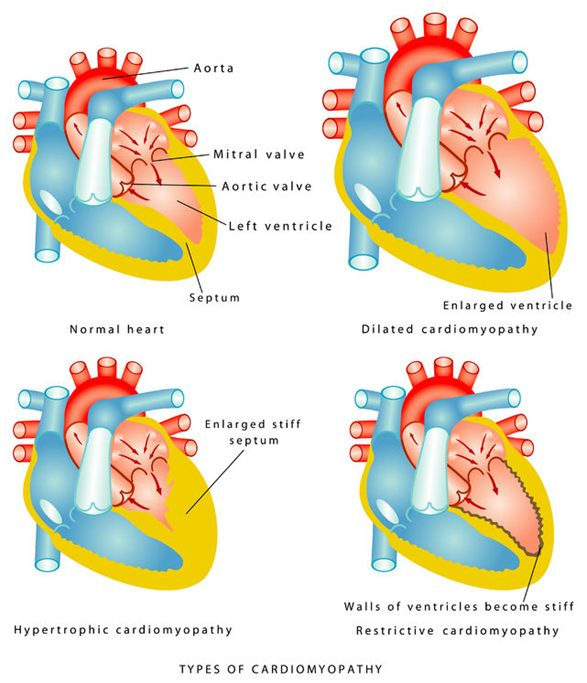
When to refer to cardiology (slide 15): to establish care, consider genetic testing, review any high-risk features, and discuss medications or the need for an intervention.
- Cardiomyopathy is disease of the heart muscle itself, in three types: dilated, hypertrophic and restrictive Slide 15. “We typically have three types that we focus on.” 38:21 The objectives add stress cardiomyopathy and myocarditis Slide 2.
- The question to ask of every case: “Trying to determine whether this is genetic and congenital, or whether it’s secondary to something else that’s going on.” 2:07:56 (inherited: familial dilated cardiomyopathy, hypertrophic cardiomyopathy, Slides 21, 59).
- Why it matters: “if we just talk about heart failure, all we’re ever doing is treating symptoms” 2:08:14. Knowing which cardiomyopathy it is is how you get past treating symptoms.
- Referral (the objective “appropriate referrals”): order the echocardiogram yourself and refer when the result warrants it — “if it comes back totally normal, then you sent them to the cardiologist for no reason” 39:28 Slides 15, 2
3.2 · Dilated cardiomyopathy
The most common type. The muscle cannot contract effectively in the absence of severe occlusive coronary artery disease or pressure/volume overload (hypertension, valvular disease). One or both ventricles dilate and contract poorly; total cardiac mass rises; adverse remodeling produces a globular (round) heart; the result is systolic dysfunction. As the valve apparatus is distorted, mitral regurgitation (earlier) and tricuspid regurgitation develop; rising end-systolic volume drives further dilation; arrhythmias and thromboembolism follow.
Who and why
- 10,000 deaths and 46,000 hospitalizations a year in the United States. Idiopathic dilated cardiomyopathy is the primary indication for cardiac transplantation.
- Most present at 20–60 (children and older adults can have it); males > females; high rate in African Americans.
- Causes (“the complete list is extensive”): idiopathic (common, probably genetic); familial (common, up to 35%, most often autosomal dominant; research on the lamin A/C gene); infectious myocarditis — viral (coxsackievirus, parvovirus B19, influenza, human immunodeficiency virus) or parasitic (Trypanosoma cruzi, Chagas disease); chemotherapy; long-term excess alcohol — function can recover if intake is reduced or stopped; thiamine (vitamin B1) deficiency; systemic lupus erythematosus and rheumatoid arthritis; peripartum cardiomyopathy (rare; the last trimester to 6 months after delivery).
- History to take: hypertension, angina, coronary disease, anemia, thyroid disease, breast cancer and chemotherapy, prior heart failure or myocardial injury, arrhythmias, thromboembolism; tobacco, alcohol, illicit drugs; family history of cardiomyopathy or sudden death.
- History is the diagnosis. “That’s why you know history is so very important.” 46:38 On family history: “family history is extremely important. Asking about those primary relatives are the number one thing.” 51:26 Learn: family history of cardiomyopathy or sudden death Slide 28; genetic counseling when there is one Slide 45.
- Alcohol is one of the few causes that can recover. “this is one of the few that actually can recover from their dilated cardiomyopathy” 47:50 Learn: function can recover if alcohol intake is reduced or stopped Slide 23. (He added “If you catch it early enough.” 47:44 — that condition is his; the slide gives no time limit.)
- Most common type, often familial. “It is the most common type of cardiomyopathy.” 40:30 Slide 17 Familial: “we see it in up to 35% of the cases. It’s autosomal dominant inheritance is the most common type.” 45:41 Slide 21
- The walking question. “how far can you walk now versus how far could you walk before?” 50:48 Slide 26
Presentation
- Heart failure symptoms: progressive dyspnea on exertion (ask how far they could walk 3 months and 6 weeks ago, and now), fatigue, atrial or ventricular arrhythmias (skipped or fast beats), orthopnea, paroxysmal nocturnal dyspnea, peripheral edema with rising weight and abdominal girth.
- Examination reflects the level of decompensation — left heart failure before right: tachypnea, tachycardia, high or low blood pressure, irregular pulse, narrow pulse pressure (a low systolic pressure reflects a low stroke volume); crackles, pleural effusions (diminished breath sounds), cyanosis; laterally displaced point of maximal impulse, mitral and tricuspid regurgitation murmurs, third heart sound (a large volume of blood striking a very compliant ventricle), jugular venous distension, cool extremities, edema; congestive hepatomegaly, hepatojugular reflux (neck veins distend with firm pressure over the liver), ascites.
- Gastrointestinal findings of dilated cardiomyopathy. Congestive enlargement of the liver (hepatomegaly), hepatojugular reflux and ascites, all from venous congestion as the failing heart backs up blood.
- Murmurs: mitral regurgitation is holosystolic, loudest at the apex, radiating to the left axilla, louder with handgrip or squatting; tricuspid regurgitation is holosystolic at the lower left sternal border, radiating to the right sternum and xiphoid but not the axilla, slightly louder with inspiration.
- Differential: acute coronary syndrome, valvular disease, acute pericarditis, cardiac tamponade, hyperthyroidism, myocarditis.
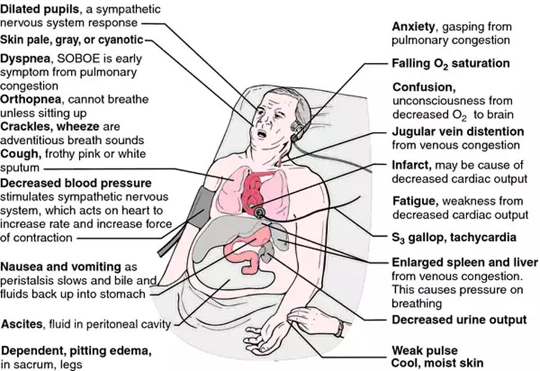
Diagnostic testing
- Labs: complete blood count (anemia), metabolic panel (electrolytes, renal function), liver function (raised in alcoholic disease, hemochromatosis), thyroid function.
- Electrocardiogram — usually abnormal; a normal electrocardiogram makes dilated cardiomyopathy unlikely, though it cannot exclude it (the slide says it almost rules it out). It may show atrial fibrillation, premature ventricular contractions and conduction delay (left bundle branch block).
- Echocardiogram: dilated, thin walls (the prominent feature); ejection fraction below 40%; all four chambers may be dilated; hypokinesis; segmental wall-motion abnormalities; tricuspid or mitral regurgitation; possible thrombus.
- Chest radiograph: cardiomegaly, pleural effusions, pulmonary edema — Kerley B lines (1–2 cm horizontal lines meeting the pleura at right angles).
- B-type natriuretic peptide is elevated (released at high ventricular filling pressures); below 100 pg/mL makes heart failure unlikely (the slide says excludes; a low level does not strictly rule it out).
- B-type natriuretic peptide. It is released when ventricular filling pressures are high; a level below 100 pg/mL makes heart failure an unlikely explanation for the current symptoms.
- Cardiac magnetic resonance imaging with gadolinium identifies inflammatory, ischemic or infiltrative processes (sarcoidosis, hemochromatosis).
- Biopsy — not routine and rarely useful: only for recent, rapidly deteriorating function, or systemic disease that can involve the heart (hemochromatosis, sarcoidosis, amyloidosis).
- “diagnosis is going to be done through the echocardiogram, where we see dilated thin walls. That’s the big thing that we know it’s ballooned out.” 58:27 Learn: dilated, thin walls (the prominent feature) Slide 38
- “the EF [ejection fraction] is going to be low, so typically less than 40%” 58:38 Learn: ejection fraction below 40% Slide 38
- Magnetic resonance imaging: “very helpful in identifying inflammatory, ischemic, or infiltrative processes” 1:00:32 (sarcoidosis, hemochromatosis) Slide 41. Biopsy: “And we don’t really do it normally.” 1:01:00 Slide 41
- The normal-electrocardiogram line on slide 37 conflicts with what he said at 57:56; see the “recording and the slides differ” box at the top of this lecture.
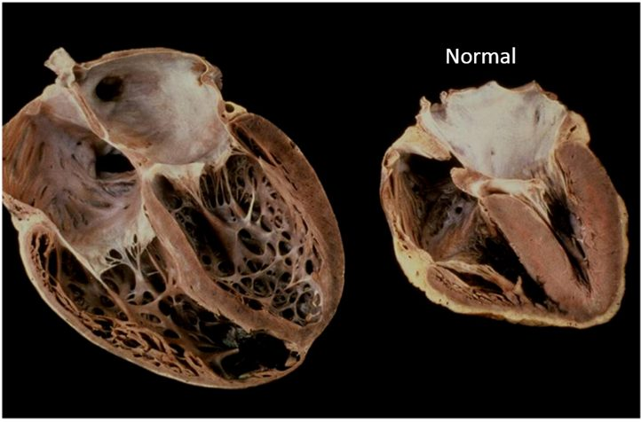
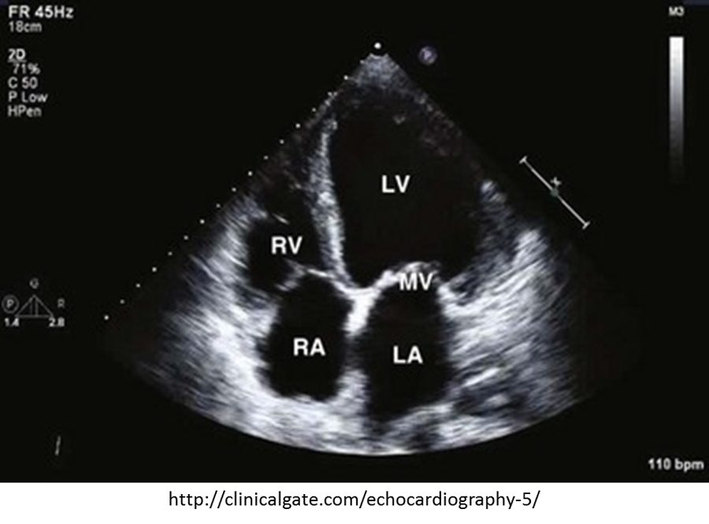
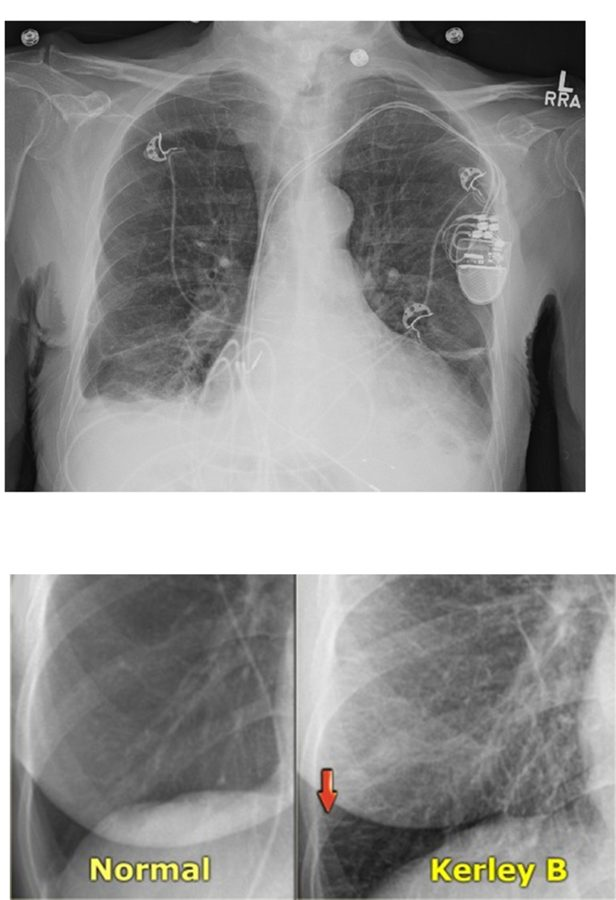
Management
- Drug classes and drugs used Slide 42: angiotensin-converting enzyme inhibitors; beta blockers; angiotensin receptor blockers; aldosterone receptor blockers (spironolactone); sacubitril/valsartan; nitrates; diuretics; digoxin (considered a second-line drug); antiarrhythmics; anticoagulants.
- Digoxin in dilated cardiomyopathy. Digoxin is on the list of drugs used to manage dilated cardiomyopathy, but it is considered a second-line drug, added after core therapy such as a beta blocker and an angiotensin-converting enzyme inhibitor.
- Devices: biventricular pacemaker for moderately severe left ventricular dysfunction; implantable cardioverter-defibrillator if the ejection fraction is below 35% after maximum medical therapy; a biventricular defibrillator combines them.
- Left ventricular assist device (pumps blood from the left ventricle into the aorta): a bridge to transplantation or to recovery of function, or destination therapy for those who cannot have a transplant; patients may live more than 5 years with one. Cardiac transplantation.
- Education: the medication regimen and follow-up; remove the offending source (alcohol, nutritional deficiency, cardiotoxic agents); sodium below 2 g a day; genetic counseling with a family history.
- Prognosis: depends on response to therapy; overall poor — 50% mortality at 5 years once symptoms emerge (progressive disease and sudden death from arrhythmia).
- Prognosis of symptomatic dilated cardiomyopathy. Once symptoms emerge, prognosis is poor overall, with 50% mortality at five years, largely from progressive disease and sudden cardiac death due to arrhythmia. The course depends on response to therapy.
- Defibrillator: “once the EF [ejection fraction] is below 35, and you’ve optimized all of your therapy” 1:02:33; and “if you have persistently below 35” 1:02:33 Learn: implantable cardioverter-defibrillator if the ejection fraction is below 35% after maximum medical therapy Slide 43
- Assist device: “This is some sort of bridge therapy. They’re waiting for cardiac transplantation” 1:04:42 or waiting to see whether “maybe it can heal, and they don’t need this anymore” 1:04:42 — the slide gives the same two bridge uses and adds destination therapy for those who cannot have a transplant, which he did not say Slide 44.
- Education: remove the offending agent, and “Sodium restriction is important.” 1:05:57 (the slide gives the number, under 2 grams a day) “Genetic counseling for patients with a known family history.” 1:06:18 Slide 45
- Prognosis: “you have symptoms from it, then you have a 50% mortality in 5 years” 1:06:44 Learn: 50% mortality at 5 years once symptoms emerge Slide 45
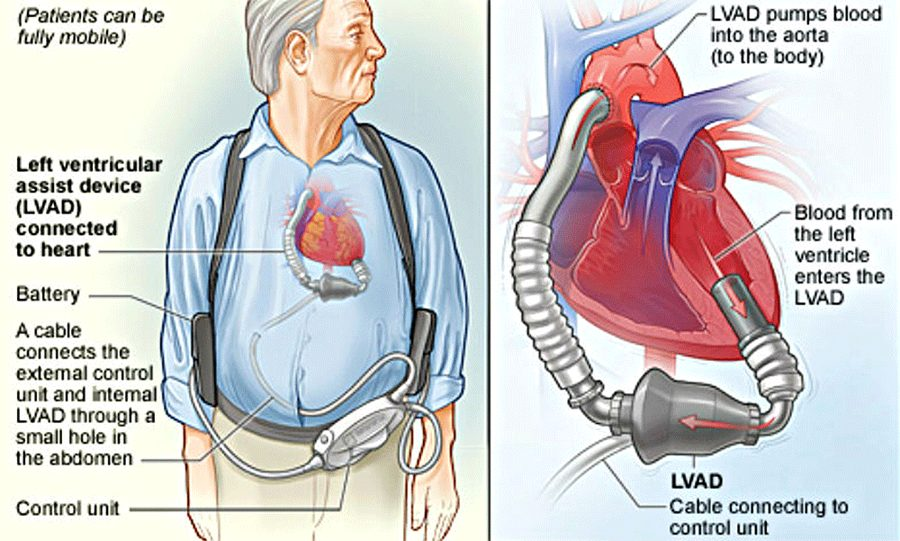
3.3 · Acute myocarditis
- Inflammatory disease of the myocardium, from subtle to devastating. It usually strikes an otherwise healthy person and can cause rapidly progressive (often fatal) heart failure and arrhythmia.
- Causes: in developed countries, viral infection is presumed most frequent — parvovirus B19, human herpesvirus 6, enteroviruses (Coxsackie B), adenoviruses, hepatitis C, cytomegalovirus, human immunodeficiency virus, COVID-19 (coronavirus disease 2019). Viral myocarditis accounts for 20% of dilated cardiomyopathy. Also rheumatic fever (beta-hemolytic streptococcus; the heart is affected in 50–90%), bacteria (diphtheria, brucellosis, clostridia, Legionnaires disease, meningococcus, Mycoplasma pneumonia), Trypanosoma cruzi (Chagas), rickettsia (Q fever, Rocky Mountain spotted fever), spirochetes (leptospirosis, Lyme disease), Candida; drugs (penicillin, thiazide diuretics, tetracycline, methyldopa); toxins (lithium, arsenic, lead, copper); autoimmune disease (lupus, rheumatoid arthritis, myasthenia gravis).
- Epidemiology: 1.5 million cases worldwide in 2020; no race predilection; similar in men and women but young males are particularly susceptible.
- History: acute decompensated heart failure in someone with no underlying cardiac dysfunction or low cardiac risk. Viral: a flulike illness 1–2 weeks before (fever, myalgia, fatigue, respiratory symptoms, gastroenteritis). Then exercise intolerance, dyspnea, fluid retention, chest pain; palpitations, syncope or sudden cardiac death from ventricular arrhythmia or atrioventricular block.
- Examination: cardiogenic shock or frank heart failure — tachycardia, hypotension, raised jugular venous pressure, third heart sound, crackles, peripheral edema.
- Differential: tamponade, cardiogenic shock, cocaine cardiomyopathy, ischemic heart disease, valvular disease, coronary atherosclerosis, and the dilated, hypertrophic, peripartum and restrictive cardiomyopathies.
- Testing: blood count (leukocytosis); sedimentation rate (may be raised); troponin (myonecrosis); electrocardiogram (sinus tachycardia, arrhythmias); echocardiogram; chest X-ray (nonspecific, maybe cardiomegaly); cardiac angiography to rule out coronary ischemia as the cause of new heart failure; gadolinium-enhanced magnetic resonance imaging (shows the extent of inflammation).
- Myocarditis work-up. Serum troponin is the indicator of cardiac myonecrosis. The rest of the work-up adds leukocytosis on the blood count, a possibly elevated sedimentation rate and electrocardiogram changes.
- Endomyocardial biopsy is the gold standard — once other causes of heart failure are excluded; recommended for acute deterioration of unknown origin that is not responding to treatment.
- Management: a high index of suspicion is needed because many cases are not obvious. Supportive care is the mainstay; aggressive hemodynamic stabilization may be needed; as needed, vasodilators, angiotensin-converting enzyme inhibitors, diuretics, antiarrhythmics, anticoagulation.
- Prognosis: most with mild symptoms recover completely; one third later develop dilated cardiomyopathy.
- The gold standard, even though it is rarely done. “it doesn’t matter if it’s rarely done, it doesn’t matter if you don’t need it. It is the gold standard for the diagnosis.” 1:26:09 Learn: endomyocardial biopsy is the gold standard, and “You only are going to do it after you have been able to exclude every other etiology behind your heart failure.” 1:26:27 Slide 55
- Best test for the extent. “it’s going to be your best test for being able to see the extent of the inflammation” 1:25:53 Learn: gadolinium-enhanced magnetic resonance imaging Slide 54
- Who and how. “it’s going to happen in otherwise healthy people with a very rapid progression, and is many times fatal” 1:18:45 Slide 47 The clue is a flulike illness that clears, then new heart failure symptoms: “It’s a big clue into what’s going on.” 1:23:00 Slide 51
- Numbers. “viral myocarditis is about 20% of dilated cardiomyopathy cases” 1:19:05 Slide 48 and “And one-third is a big number.” 1:22:05 — one third later develop dilated cardiomyopathy Slide 50
3.4 · Hypertrophic cardiomyopathy
Left ventricular hypertrophy in the absence of a hemodynamic cause (hypertension, aortic valve disease, infiltrative or storage disease) — often asymmetric, any region, most often the interventricular septum. It carries a high incidence of sudden death and is the leading cause of sudden death in preadolescent and adolescent children.
- Mostly inherited, autosomal dominant (one mutated copy from an affected parent is enough); at least 1,500 mutations, in genes for sarcomere proteins. 1 in 500 people; males > females.
- Without obstruction: diastolic dysfunction — the thick muscle resists filling (reduced compliance) and raises left ventricular end-diastolic pressure.
- With obstruction (hypertrophic obstructive cardiomyopathy): the septum narrows the subaortic outflow tract, and systolic anterior motion of the mitral valve — high-velocity flow pulls the anterior leaflet into the tract — causes mid-systolic obstruction.
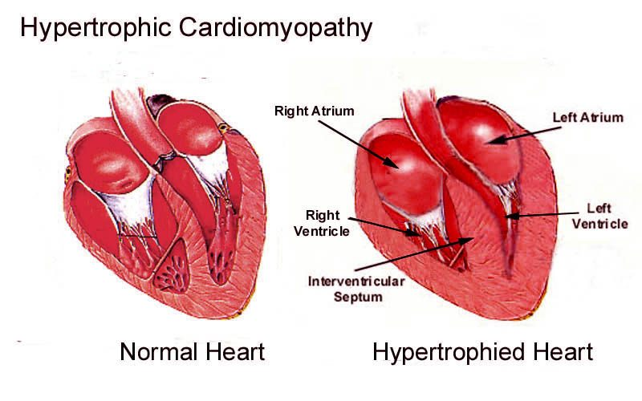
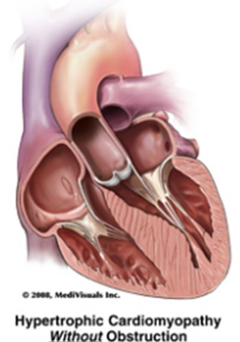
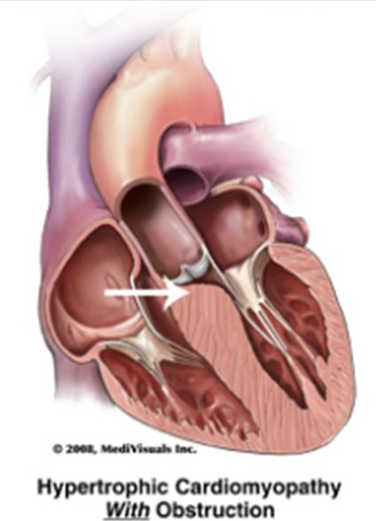
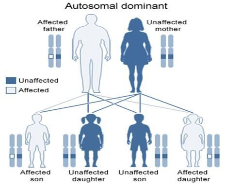
Hypertrophic cardiomyopathy in the family. Hypertrophic cardiomyopathy is mostly inherited in an autosomal dominant pattern, so one affected parent is enough to pass it on, and detection in a family member is a common reason evaluation of first-degree relatives begins.
Presentation
- May be asymptomatic, found through family screening, a murmur on routine examination or an abnormal electrocardiogram.
- Dyspnea — the common presenting symptom (high diastolic filling pressure backs into the lungs); palpitations (atrial premature beats, atrial fibrillation or flutter, supraventricular or ventricular tachycardia).
- Syncope (very common; low output on exertion or arrhythmia) and presyncope on standing, relieved by lying down — both identify patients at high risk of sudden death: the work-up is urgent.
- Angina without coronary disease (outflow obstruction plus the higher oxygen demand of thick muscle, especially on exertion). Sudden cardiac death: highest in preadolescents and adolescents, related to extreme exertion; over 80% ventricular fibrillation.
- Examination: blood pressure and heart rate usually normal; pulsus bisferiens (“strike twice” — a double systolic peak, matching outflow obstruction); a forceful, sustained apical impulse, maybe displaced; a fourth heart sound (noncompliant ventricle).
- Two murmurs: the outflow murmur — crescendo-decrescendo systolic, best at the left sternal border in the 3rd–4th intercostal space, radiating to the suprasternal notch but NOT to the carotids or neck; and mitral regurgitation from systolic anterior motion — holosystolic at the apex, radiating to the axilla.
- The telltale sign. “You have on echo, you will see what’s called systolic anterior motion or SAM of the mitral valve.” 1:31:24 He called it the telltale sign of the obstructive form. Learn: systolic anterior motion of the mitral valve Slide 62
- Syncope is a can’t-miss. The picture he painted: “a young patient, specifically a male, who has been exercising or working on a sports team” 1:33:19 who just passes out. “it’s very important that you do a workup” 1:33:35 and “you have to get a workup on that person” 1:33:35 Learn: syncope identifies high risk of sudden death: the work-up is urgent Slide 65
- Sudden death. “It carries a very high incident of sudden death, specifically among pre-adolescent and adolescent children.” 1:28:49 Slide 58 “over 80% of those cases are associated with V-fib [ventricular fibrillation]” 1:34:23 Slide 66
- Commonest symptom, and the pulse. “The most common presenting symptom is dyspnea.” 1:32:10 Slide 64 Pulsus bisferiens: “It means to strike twice.” 1:34:54 Slide 67
| Maneuver | Changes | Outflow murmur |
|---|---|---|
| Rapid squatting, passive leg raise | Preload ↑ | Softer |
| Handgrip | Afterload ↑ | Softer |
| Valsalva, standing | Preload ↓ | Louder |
| Amyl nitrite | Afterload ↓ | Louder |
| Inspiration and expiration | — | No effect |
Maneuvers that soften the obstructive murmur. Anything that increases blood flow in the heart reduces outflow obstruction and softens the murmur. Handgrip raises afterload, and squatting or passive leg raising raise preload, so all three decrease the murmur.
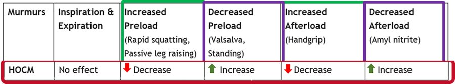
Diagnostic testing
- No specific blood test; routine labs look for aggravating factors (blood count — anemia worsens chest pain and dyspnea; fasting glucose; renal and liver function; B-type natriuretic peptide; thyroid). The chest X-ray may be normal.
- Echocardiography is the typical test of choice. The diagnosis is confirmed by unexplained wall thickness of 1.5 cm or more anywhere in the left ventricle; asymmetric septal hypertrophy is the classic pattern; small cavity; ejection fraction usually normal (above 75% late, as the small ventricle nearly empties); mitral regurgitation; systolic anterior motion; left atrial enlargement.
- Ejection fraction in hypertrophic cardiomyopathy. It is usually normal, and in late stages it rises above 75% because the small ventricle nearly empties to maintain output.
- Electrocardiogram: hypertrophy, atrial enlargement, conduction abnormalities, prominent Q waves in the inferior (II, III, aVF) and lateral (I, aVL, V4–V6) leads, left axis deviation.
- Why the Q waves appear. In hypertrophic cardiomyopathy the electrocardiogram can show prominent Q waves in the inferior leads (II, III, aVF) and lateral leads (I, aVL, V4 to V6) with left axis deviation, reflecting septal depolarization of hypertrophied myopathic tissue.
- Cardiac magnetic resonance imaging when the echocardiogram is questionable (mitral valve and papillary muscles); exercise echocardiography (functional capacity, ischemia, arrhythmia, obstruction).
- Ambulatory electrocardiogram for 24–48 hours to assess the risk of ventricular arrhythmia and sudden death.
- Catheterization is not needed for diagnosis — only before a pacemaker or surgery. Genetic testing is available but does not change treatment.
- Differential: aortic stenosis, mitral regurgitation, hypertensive left ventricular hypertrophy, athletic heart, restrictive cardiomyopathy.
- “echocardiogram, that’s where it’s at” 1:38:54 and “It’s the diagnostic test of choice.” 1:38:57 Learn: echocardiography is the typical test of choice Slide 72
- The threshold: “increased LV [left ventricular] wall thickness greater than 1.5 centimeters anywhere in the left ventricle” 1:39:00 Learn: 1.5 cm or more (see the differences box for “greater than”) Slide 72
- Genetic versus secondary: “is typically going to be in the setting of things like your hypertension or your aortic valve stenosis” 1:28:06 (his gloss, not on the slides: all-round, concentric thickening) versus “If it is non-symmetrical, that’s going to lead you much more into, is this some sort of genetic or congenital hypertrophic cardiomyopathy” 1:28:31 Slides 58, 72
- Next steps: “If your echo [echocardiogram] comes back with questionable results, the cardiac MRI [magnetic resonance imaging], you know, clears it up for you.” 1:41:41 Slide 74 Catheterization: “That is not required.” 1:42:06 Slide 75
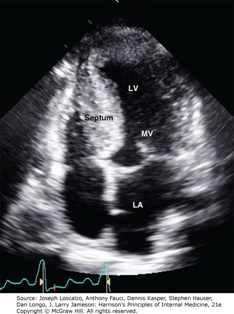
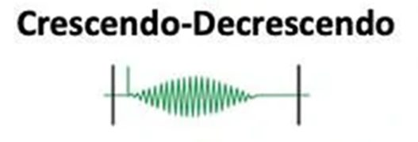
Management
- Outflow obstruction: a beta blocker (for example metoprolol) is the initial medication; non-dihydropyridine calcium channel blockers (verapamil, diltiazem) are the alternative.
- Avoid drugs that lower preload or afterload — they worsen the obstruction: nitrates; diuretics only with caution (avoid dehydration). Avoid positive inotropes — digoxin, epinephrine, norepinephrine — which raise contractility, ischemia risk and arrhythmias.
- Nitrates in hypertrophic cardiomyopathy. Drugs that reduce preload or afterload, such as nitrates, may increase symptoms by aggravating outflow tract obstruction, so nitroglycerin should be avoided if possible.
- Sudden death prevention: amiodarone (proven to reduce sudden cardiac death, with or without obstruction) and disopyramide; an implantable cardioverter-defibrillator.
- Atrial fibrillation: anticoagulation to prevent embolic stroke; amiodarone (converts atrial fibrillation and flutter and suppresses recurrence); radiofrequency ablation.
- Surgical myectomy excises part of the septum; mitral regurgitation may resolve with it. Alcohol septal ablation injects alcohol down the first septal branch of the left anterior descending artery, making a therapeutic infarct of the upper septum — it takes months for the septum to thin.
- Obstructive hypertrophic cardiomyopathy refractory to drugs. Surgical septal myectomy excises part of the septal myocardium causing outflow obstruction, and mitral regurgitation from systolic anterior motion may resolve with myectomy alone, without valve replacement.
- Education: activity advice is individualized: regular mild to moderate exercise is encouraged, and strenuous or competitive sports need a shared decision with a specialist center (classic teaching, and the slide, limited patients to mild to moderate, noncompetitive recreational activity); stay hydrated; avoid excess alcohol.
- Prognosis: variable; sudden cardiac death is the leading cause of death; heart failure symptoms progress gradually; transplantation if unresponsive to therapy.
- Avoid preload and afterload reducers and positive inotropes. “We’re going to try and avoid anything that reduces preload, or really afterload.” 1:43:49 “we’re going to stay away from nitrates” 1:43:56 and “we’re going to stay away from things that have positive ionotropic [inotropic] effects” 1:43:56 (he named epinephrine and norepinephrine; the caption garbles the first drug, and slide 77 names digoxin). Learn: avoid positive inotropes Slide 77
- What helps. “We use things like beta blockers.” 1:42:39 and “we want to try and stick with the non-dihydropyridine agents” 1:43:13 (verapamil and diltiazem) Slide 76
- Hydration and alcohol. “We want to make sure that they are very well hydrated” 1:46:52 and “Alcohol makes it much worse, it’s cardiotoxic.” 1:46:52 Learn: stay hydrated, avoid excess alcohol Slide 82
- Exercise, the last question of the lecture. “If they are active, you are increasing the demands on the body and on the heart” 2:10:23 and for the obstructive form “do not exercise, do not have a lot of activity until we figure out what’s going on, because they’re at high risk for VTAC [ventricular tachycardia] and death” 2:10:39 — but only that form: for heart failure from other causes “Those people need to get off the couch. They need to be active.” 2:11:00 See the differences box for how this sits with slides 82 and 105.
3.5 · Restrictive cardiomyopathy
- Rare — the least common cardiomyopathy. Impaired diastolic filling with a reasonably preserved chamber size; wall thickness normal or slightly increased (“stiff, but not necessarily thickened”).
- Stiff walls → poor filling → reduced output from reduced filling volume; ejection fraction preserved until late; systolic function usually normal. Both atria enlarge; atrial fibrillation is common; right heart failure is often more prominent. Fibrosis of the sinoatrial and atrioventricular nodes can cause heart block.
- Pacemaker in restrictive cardiomyopathy. Nodal fibrosis of the sinoatrial and atrioventricular nodes can cause heart block, so a permanent pacemaker is placed for conduction system disease.
- Causes: idiopathic; infiltrative — amyloidosis, the most common in the United States; storage — hemochromatosis (iron); genetic (less common than in other types); inflammatory — cardiac sarcoidosis (granulomas); treatment-related — mediastinal radiation and chemotherapy (inflammation, then fibrosis, then restriction).
- History: often presents late with pronounced symptoms; prior radiation, chemotherapy or systemic disease. Right-sided failure (abdominal pain from hepatomegaly, bilateral pedal edema, ascites), progressive exercise intolerance and dyspnea, orthopnea, paroxysmal nocturnal dyspnea, palpitations from atrial fibrillation (atrial thrombus risk), fatigue, syncope.
- Examination: more comfortable sitting; right failure may dominate although both sides have high filling pressures; elevated jugular venous pressure; first and second heart sounds normal but perhaps distant; secondary mitral or tricuspid regurgitation; a fourth heart sound if there is no regurgitation; peripheral edema; rales; congestive hepatomegaly, hepatojugular reflux, ascites. Kussmaul sign may be present — a paradoxical rise in jugular venous pressure with inspiration (resistance to right ventricular filling); it is also common in constrictive pericarditis.
- Differential: constrictive pericarditis — must be differentiated; acute pericarditis; tamponade; valvular disease; hypertrophic cardiomyopathy.
- Definition. “It is characterized by impaired diastolic filling.” 1:47:36 the least common cardiomyopathy Slide 84
- Most likely cause. “infiltrative disorders like amyloidosis. That’s the most common in the US [United States]” 1:50:28 Learn: amyloidosis, the most common in the United States Slide 86
- Late and right-sided. “By the time they present it to you, unfortunately, they’re pretty far into it.” 1:51:52 “look for your patients who have had radiation therapy and chemotherapy” 1:51:52 Slides 87, 88 “right-sided is more common” 1:52:14 Slides 85, 90
- Kussmaul sign. “paradoxical increase in jugular venous pressure with inspiration. If you’re not looking for it, you won’t find it” 1:55:08 Slide 92
- Constrictive pericarditis. “It must be differentiated.” 1:56:11 “the cause and the treatment and the resolution of constrictive pericarditis versus restrictive cardiomyopathy are very different” 1:56:28 Slide 94
- Tests. “you’re going to have very low QRS voltage” 1:57:41 in amyloidosis Slide 95. Echocardiogram “It can look pretty normal” 1:58:01, then “you step to the cardiac MRI [magnetic resonance imaging]” 1:58:21 Slide 96. Biopsy: “If you can avoid it, if you don’t need it, but it is definitive.” 1:58:57 Slide 97
- Prognosis. “it is the poorest prognosis of all cardiomyopathies” 1:59:32 Slide 99
Diagnostic testing
- Electrocardiogram: depends on stage and cause; low QRS voltage in amyloidosis; atrial fibrillation and bundle branch blocks common.
- Chest X-ray: cardiomegaly from atrial enlargement; congestion and effusions.
- Echocardiogram: preserved ejection fraction (may fall late), marked atrial enlargement, near-normal ventricular function and cavity, normal or thick walls, abnormal diastolic function. Not definitive on its own, because restrictive cardiomyopathy and constrictive pericarditis look alike.
- Cardiac magnetic resonance imaging helps separate them — a thickened pericardium points to constrictive pericarditis, though constriction can occur with a normal-thickness pericardium; it also helps when no cause has been found.
- Constrictive pericarditis on imaging. Cardiac magnetic resonance imaging helps separate restrictive cardiomyopathy from constrictive pericarditis, and a thickened pericardium points to constrictive pericarditis rather than restrictive cardiomyopathy, though constriction can occur with a normal-thickness pericardium.
- Catheterization for ventricular pressure tracings. Endomyocardial biopsy when imaging and genetic testing are negative, or when tissue would confirm or exclude a diagnosis that changes management.
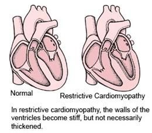
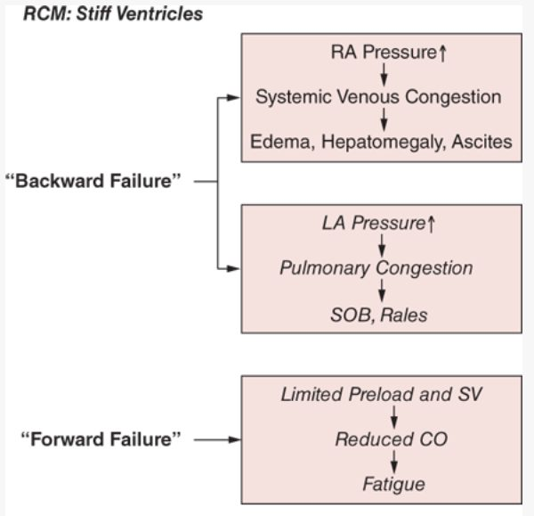
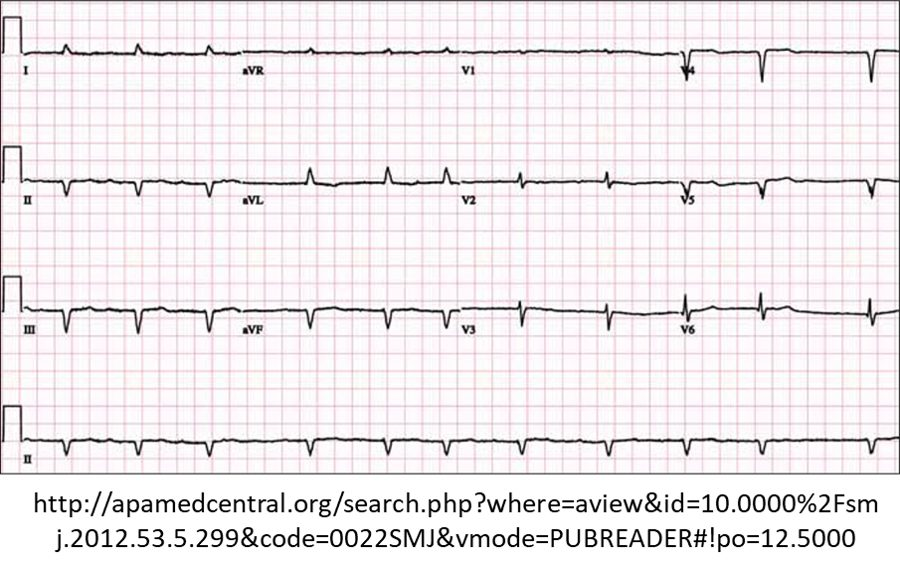
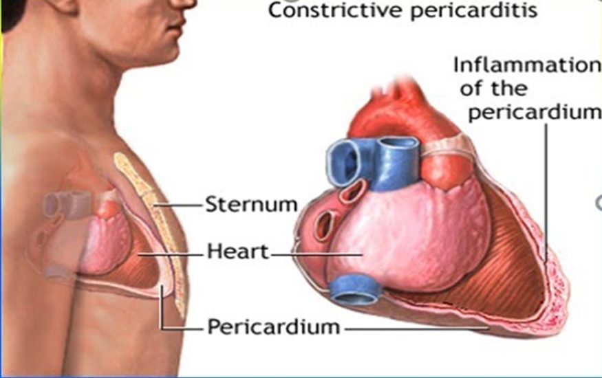
Management
- Treat the underlying disorder.
- Diuretics for pulmonary and systemic congestion — with caution: stiff ventricles depend on preload to keep up output.
- Diuretics in restrictive cardiomyopathy. They treat pulmonary and systemic congestion but are used with caution, because they lower preload and stiff ventricles need preload to maintain cardiac output.
- Beta blockers and the calcium channel blockers verapamil or diltiazem may be of benefit by increasing left ventricular filling time, improving ventricular relaxation and decreasing compensatory sympathetic stimulation.
- Anticoagulation to prevent embolism from atrial thrombi; permanent pacemaker for conduction disease; cardiac transplantation.
- Prognosis: the poorest of all the heart muscle diseases.
3.6 · Stress (Takotsubo) cardiomyopathy
- “Broken heart syndrome”; takotsubo is Japanese for an octopus trap, a round-bottomed, narrow-necked pot.
- Transient regional systolic dysfunction, mainly of the left ventricle, that mimics acute coronary syndrome without angiographic coronary disease or acute plaque rupture. Cause unknown.
- 90% are postmenopausal women. Trigger: a significant emotional or physical stressor — death of a loved one, bad financial news, natural disaster, a new diagnosis, surgery, withdrawal from illicit drugs, near drowning. Patients tend to have low or no cardiac risk factors.
- Presentation: chest pain and dyspnea most common; palpitations, nausea, vomiting, syncope. The examination is nonspecific and may look like acute coronary syndrome or acute heart failure — anxious, diaphoretic, fast or slow arrhythmias.
- Testing: troponin I and T usually elevated; B-type natriuretic peptide frequently elevated; electrocardiogram with ST elevation and T-wave inversion; transthoracic echocardiogram with hypokinesis or akinesis of the mid and apical segments of the left ventricle. Confirmed by cardiac catheterization — most often normal coronary arteries.
- Laboratory results in Takotsubo (stress) cardiomyopathy. Troponin I and T are usually elevated and B-type natriuretic peptide is frequently elevated, which adds to the resemblance to acute coronary syndrome.
- Management: it mimics acute coronary syndrome with no reliable early differences, so follow the acute coronary syndrome protocols; admit to cardiology; empiric, supportive care — beta blockers helpful, anticoagulation if there is a left ventricular thrombus, diuretics if there is heart failure.
- Takotsubo (stress) cardiomyopathy treatment. Supportive treatment depends on presentation: anticoagulation if a left ventricular thrombus is present, diuretics if heart failure is present, and beta blockers.
- Prognosis: most recover completely.
- Who. “90% of the cases are in postmenopausal women” 2:01:12 Learn: 90% are postmenopausal women Slide 101
- Trigger. “the reason they say broken heart syndrome is the death of a loved one” 2:01:12 Slide 101
- It mimics a heart attack. “Since it mimics a heart attack” 2:03:05 “Their troponin is elevated” 2:02:02 and “They, a lot of times, have ST segment elevation and T-wave inversions.” 2:02:27 The echocardiogram pattern: “hypokinesis or akinesis, specifically of mid-segments and apical segments” 2:02:41 Slide 103
- Management and outlook. “We’re going to always admit these people to cardiology.” 2:03:16 Learn: follow the acute coronary syndrome protocols and admit to cardiology; “Most people with Takotsubo completely recover.” 2:03:39 Slide 104
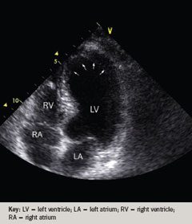
3.7 · The conditions, point by point
Dilated cardiomyopathy
Defining feature: a dilated, thin-walled, poorly contracting ventricle (ejection fraction below 40%) without severe coronary disease or pressure/volume overload
- Definition
- The most common cardiomyopathy: dilation and impaired contraction of one or both ventricles, producing systolic dysfunction and a globular heart.
- Who gets it
- Ages 20–60 mostly; males > females; high rate in African Americans; 10,000 deaths and 46,000 hospitalizations a year in the United States.
- Risk factors
- Idiopathic and familial (up to 35%, autosomal dominant); viral or Chagas myocarditis; chemotherapy; long-term excess alcohol; thiamine deficiency; lupus, rheumatoid arthritis; late pregnancy to 6 months after delivery (peripartum).
- Classic signs & symptoms
- Progressive dyspnea on exertion, fatigue, palpitations, orthopnea, paroxysmal nocturnal dyspnea, edema with rising weight and girth.
- Physical exam findings
- Laterally displaced point of maximal impulse, third heart sound, mitral and tricuspid regurgitation murmurs, jugular venous distension, narrow pulse pressure, crackles, cool extremities, hepatojugular reflux, ascites.
- Diagnostics / tests
- Electrocardiogram usually abnormal (a normal one makes it unlikely, though it cannot exclude it); echocardiogram (dilated thin walls, ejection fraction below 40%); chest radiograph (cardiomegaly, Kerley B lines); B-type natriuretic peptide (below 100 pg/mL makes heart failure unlikely, though it does not strictly exclude it); cardiac magnetic resonance imaging; biopsy rarely.
- First-line treatment
- The slide 42 list: angiotensin-converting enzyme inhibitors, beta blockers, angiotensin receptor blockers, spironolactone, sacubitril/valsartan, nitrates, diuretics, digoxin (second line), antiarrhythmics, anticoagulants. Defibrillator if ejection fraction stays below 35%; biventricular pacing; assist device; transplant. Remove the cause; sodium restriction; genetic counseling.
- Complications
- Mitral and tricuspid regurgitation, arrhythmias, thromboembolism, sudden death; 50% mortality at 5 years once symptomatic.
Mitral regurgitation in dilated cardiomyopathy. As the ventricle dilates, the valve apparatus is distorted, so functional mitral regurgitation, appearing earlier, and tricuspid regurgitation commonly develop; the mitral murmur is holosystolic at the apex, radiating to the axilla.
Slides 16–45
Acute myocarditis
Defining feature: new heart failure in a previously healthy young person 1–2 weeks after a flulike illness
- Definition
- Inflammatory disease of the myocardium, from subtle to devastating.
- Who gets it
- Otherwise healthy people; young males particularly susceptible; 1.5 million cases worldwide in 2020.
- Risk factors
- Viral infection (most frequent in developed countries); rheumatic fever; bacterial, parasitic, rickettsial, spirochetal and fungal infections; drugs; toxins; autoimmune disease.
- Classic signs & symptoms
- Viral prodrome (fever, myalgia, fatigue, respiratory or gastrointestinal symptoms), then dyspnea, exercise intolerance, fluid retention, chest pain, palpitations, syncope.
- Physical exam findings
- Cardiogenic shock or frank heart failure: tachycardia, hypotension, raised jugular venous pressure, third heart sound, crackles, edema.
- Diagnostics / tests
- Troponin, blood count (leukocytosis), sedimentation rate, electrocardiogram, echocardiogram, chest X-ray, angiography to exclude ischemia, gadolinium magnetic resonance imaging; endomyocardial biopsy is the gold standard.
- First-line treatment
- Supportive care (the mainstay), hemodynamic stabilization as needed; vasodilators, angiotensin-converting enzyme inhibitors, diuretics, antiarrhythmics, anticoagulation as needed.
- Complications
- Rapidly progressive heart failure, ventricular arrhythmia or atrioventricular block, sudden death; one third later develop dilated cardiomyopathy.
Slides 46–56
Hypertrophic cardiomyopathy (with or without obstruction)
Defining feature: unexplained asymmetric septal hypertrophy (1.5 cm or more) with a systolic murmur that gets louder with Valsalva or standing
- Definition
- Left ventricular hypertrophy without a hemodynamic cause, usually asymmetric and septal; obstructive when the septum and systolic anterior motion narrow the outflow tract.
- Who gets it
- 1 in 500; males > females; the leading cause of sudden death in preadolescents and adolescents.
- Risk factors
- Autosomal dominant inheritance (sarcomere genes) — a family history prompts evaluation; extreme exertion triggers sudden death.
- Classic signs & symptoms
- Dyspnea (commonest), palpitations, exertional syncope and presyncope on standing (urgent work-up), angina without coronary disease; may be asymptomatic.
- Physical exam findings
- Normal blood pressure and heart rate; pulsus bisferiens; forceful sustained apical impulse; fourth heart sound; crescendo-decrescendo murmur at the left sternal border not radiating to the carotids; apical holosystolic mitral regurgitation.
- Diagnostics / tests
- Echocardiography (test of choice); electrocardiogram (hypertrophy, inferior and lateral Q waves, left axis deviation); cardiac magnetic resonance imaging; exercise echocardiography; 24–48-hour ambulatory monitoring; catheterization only before invasive therapy; genetic testing does not change treatment.
- First-line treatment
- Beta blocker first for obstruction, then verapamil or diltiazem; avoid nitrates, dehydrating diuretics and positive inotropes; amiodarone, defibrillator; myectomy or alcohol septal ablation; individualized activity (mild to moderate exercise encouraged; strenuous or competitive sports by shared decision; classically noncompetitive only), hydration, little alcohol.
- Complications
- Sudden cardiac death (the leading cause of death; over 80% ventricular fibrillation); atrial fibrillation and embolic stroke; progressive heart failure.
Cardiac catheterization in hypertrophic cardiomyopathy. It is not required for the diagnosis; it is obtained only when invasive therapy such as a pacemaker or surgery is planned.
Sudden death risk in hypertrophic cardiomyopathy. Ambulatory electrocardiogram monitoring for 24 to 48 hours should be performed to assess the risk of ventricular arrhythmias and sudden cardiac death.
Slides 57–82
Restrictive cardiomyopathy
Defining feature: stiff, normal-size ventricles with big atria and dominant right-sided failure — and magnetic resonance imaging usually shows no pericardial thickening
- Definition
- Impaired diastolic filling with reasonably preserved chamber size and normal or slightly increased wall thickness.
- Who gets it
- Rare — the least common cardiomyopathy.
- Risk factors
- Amyloidosis (most common in the United States), hemochromatosis, sarcoidosis, mediastinal radiation, chemotherapy; idiopathic; genetic.
- Classic signs & symptoms
- Late presentation; right-sided failure (hepatomegaly pain, pedal edema, ascites), exercise intolerance, dyspnea, orthopnea, palpitations from atrial fibrillation, fatigue, syncope.
- Physical exam findings
- Prefers sitting; elevated jugular venous pressure; Kussmaul sign (pressure rises with inspiration); distant heart sounds; fourth heart sound if no regurgitation; rales, hepatojugular reflux, ascites.
- Diagnostics / tests
- Electrocardiogram (low voltage in amyloid, atrial fibrillation, bundle branch block); chest X-ray (atrial cardiomegaly); echocardiogram (preserved ejection fraction, big atria) — not definitive; cardiac magnetic resonance imaging separates it from constrictive pericarditis; catheterization; endomyocardial biopsy.
- First-line treatment
- Treat the cause; cautious diuretics; beta blockers, verapamil or diltiazem (may help by lengthening filling time and improving relaxation); anticoagulation for atrial thrombi; pacemaker for heart block; transplant.
- Complications
- Atrial fibrillation with atrial thrombus and embolism; heart block; the poorest prognosis of all heart muscle diseases.
Restrictive cardiomyopathy on echocardiogram. Marked enlargement of one or both atria (big atria) with near-normal ventricles: near-normal left ventricular systolic function and cavity size, preserved ejection fraction and abnormal diastolic function.
Restrictive cardiomyopathy testing. Cardiac catheterization is useful to evaluate ventricular pressure tracings, alongside cardiac magnetic resonance imaging and, when needed, endomyocardial biopsy.
Slides 83–99
Stress (Takotsubo) cardiomyopathy
Defining feature: a postmenopausal woman after a major stressor with an acute-coronary-syndrome picture — and normal coronaries at catheterization
- Definition
- Transient regional left ventricular systolic dysfunction that mimics acute coronary syndrome without coronary disease or plaque rupture.
- Who gets it
- 90% postmenopausal women, usually with low or no cardiac risk factors.
- Risk factors
- A significant emotional or physical stressor (bereavement, financial loss, disaster, new illness, surgery, drug withdrawal, near drowning). Cause unknown.
- Classic signs & symptoms
- Chest pain and dyspnea (most common); palpitations, nausea, vomiting, syncope.
- Physical exam findings
- Nonspecific; may look like acute coronary syndrome or acute heart failure; anxious, diaphoretic, fast or slow arrhythmias.
- Diagnostics / tests
- Troponin usually and B-type natriuretic peptide frequently elevated; ST elevation and T-wave inversion; echocardiogram with mid and apical hypokinesis or akinesis; confirmed by catheterization (normal coronaries).
- First-line treatment
- Follow acute coronary syndrome protocols; admit to cardiology; supportive care — beta blockers, anticoagulation for a left ventricular thrombus, diuretics for heart failure.
- Complications
- Left ventricular thrombus, heart failure; most recover completely.
Slides 100–104
3.8 · Populations, rehabilitative and palliative care
| Population | Strategy (slides 105–106) |
|---|---|
| Adolescent | Genetic screening for hypertrophic cardiomyopathy; activity restriction for high-risk individuals. (Hypertrophic cardiomyopathy is the leading cause of sudden death at this age.) |
| Adult | Guideline-directed medical therapy (angiotensin-converting enzyme inhibitors, beta blockers, angiotensin receptor blockers, diuretics); devices (implantable defibrillator, biventricular pacemaker); lifestyle (sodium restriction, alcohol cessation); consider an assist device or transplant in advanced disease. |
| Elderly | Therapy tailored to comorbidities and frailty; cautious use of diuretics and vasodilators; focus on symptom control and quality of life; palliative care discussions in advanced stages. |
Adolescents and hypertrophic cardiomyopathy. Age-specific strategies include genetic screening, and disease detected in a family member is a common reason evaluation begins. The condition is autosomal dominant, so one affected parent is enough to pass it on.
Activity restriction in hypertrophic cardiomyopathy. Activity restriction for high-risk individuals is an adolescent strategy, because sudden death is highest in preadolescents and adolescents and is related to extreme exertion.
Two lines on slide 105 — “medication management for symptomatic relief” and “ICD (implantable cardioverter-defibrillator) placement in select cases” — sit between the adolescent and adult lists without belonging clearly to either.
- Adolescents. “in adolescence, we’re looking for genetic screening” 2:04:07 and “No activities or high risk activities that could potentially increase your cardiac output or cardiac demands” 2:04:15 Learn: genetic screening for hypertrophic cardiomyopathy and activity restriction for high-risk individuals Slide 105
- Adults. “Adults, we’re using GDMT [guideline-directed medical therapy]” 2:04:44 and, in advanced disease, “we have to consider the LVAD [left ventricular assist device] as bridge therapy to their transplant” 2:04:59 Slide 105
- The very elderly. “we’re not going to give them more days. Hopefully, we’re just going to give them better days for the ones that they have.” 2:05:18 Learn: symptom control and quality of life and palliative care discussions Slide 106
- Palliative care. “Palliative doesn’t focus on curing them. Palliative focuses on making them comfortable and letting them enjoy life.” 2:06:07 Slide 107
- Rehabilitation. “People respond very well to rehabilitative care, specifically cardiac rehabilitation programs.” 2:06:23 Slide 107
| Rehabilitative care (slide 107) | Palliative care (slide 107) |
|---|---|
| Cardiac rehabilitation to improve exercise tolerance and quality of life; education on medication adherence, nutrition and symptom monitoring; psychological support for chronic illness; home-based rehab for elderly or mobility-limited patients. | Symptom management (dyspnea, fatigue, edema); advance care planning and goals-of-care discussions; support for caregivers and family; hospice referral in end-stage cardiomyopathy. |
Cardiac rehabilitation. Cardiac rehabilitation programs improve exercise tolerance and quality of life, with education on medication adherence, nutrition and symptom monitoring, and psychological support for chronic illness.
Palliative care in cardiomyopathy. It covers symptom management of dyspnea, fatigue and edema, advance care planning and goals-of-care discussions, support for caregivers, and hospice referral in end-stage disease.
Cardiac rehabilitation in cardiomyopathy. Programs aim for better exercise tolerance and quality of life, with education on medications, nutrition and symptom monitoring and psychological support.
4 · Arrhythmias I: Supraventricular
Lecture 29 · Ayelet Elwaya, MSHS, PA-C, CAQ-EM · Monday 12 October 2026
Instructional Objectives
ARRHYTHMIAS 1: ATRIAL OR SUPRAVENTRICULAR DYSRHYTHMIAS — Ayelet Elwaya, MSHS, PA-C, CAQ-EM
- Compare and contrast the etiologies, epidemiology, risk factors, clinical manifestations, differential
diagnosis, diagnostic testing (including ordering and interpretation), management (acute and chronic,
including applicable rehabilitative and palliative care), appropriate referrals, patient education, and
prognosis of the following atrial and supraventricular dysrhythmias:
- Sinus arrhythmia
- Sinus bradycardia
- Sinus tachycardia
- Sick sinus syndrome
- Atrial premature beats
- Atrial flutter
- Atrial fibrillation
- Atrial tachycardia
- Paroxysmal supraventricular tachycardia
- Identify medical care strategies for atrial and supraventricular dysrhythmias for the following populations.
- adult
- elderly
Quoted as the syllabus prints it (page 16), including its own numbering: items a–i are the nine dysrhythmias of objective 1, item 2 is the second real objective, and items 3–4 are its population list.
What Elwaya said is and is not tested (lecture recording of Monday 12 October, two parts, 1 hour 43 minutes; the times are recording times, minutes:seconds, then hours:minutes:seconds after the first hour):
- How this section was made. From our own transcription of the recording, checked line by line against Notability’s transcription of the same audio. Every quotation is word for word from our transcription. Where the two transcriptions disagree on a drug name, a number or a term (procainamide, the calcium channel blockers, the names of the two risk scores, the word antidromic), the phrase is left out and the slide’s word is used. The ★ boxes and highlights only choose which slide facts to learn first. Context she gave that is on no slide is in the labeled recording-only box below and is not built into the quizzes.
- How she writes questions. Few name-the-rhythm questions: “It was more like you see this EKG [electrocardiogram], what would you do?” 0:53 “Or what is a risk factor for this EKG [electrocardiogram]?” 0:56 and “But the goal for CMS [Clinical Medicine and Surgery] is like, what do we do about it?” 1:07 Recognizing the strip belongs to the electrocardiogram course; here, learn what each rhythm needs next and what predisposes to it.
- Medications yes, doses no. “You are responsible for medications.” 1:22 For first-line and second-line drugs, “you do need to know them.” 1:28 For doses, “you’re not responsible for the dose.” 1:32 Her example: “you don’t need to know the point one, you do need to know that atropine is the first one.” 2:23 The first-line table just below collects what she said for each rhythm.
- What she said not to memorize.
- The narrow-complex tachycardia algorithm (slide 27): “There is a whole algorithm for it.” 45:17 She kept it as a reference for the clinical year: “This is just here available to you,” 45:21 (the sentence between the two is garbled in our transcription; Notability’s version says she did not need the class to memorize it).
- The two risk-score tables (slide 51): “Please don’t memorize this.” 1:33:24 “I’m not gonna make you memorize this.” 1:33:27 But “I do want you to know this part about what that means.” 1:33:31 The CHA2DS2-VASc score is the stroke (clot) risk and the HAS-BLED score is the bleeding risk (slide 50).
- What sets off a reentry loop: “am I gonna bother you with those triggers?” 1:05:22 “I’m just gonna bother you with what the concern is.” 1:05:24 This is the electrical trigger of the circuit; the precipitants on slide 40 (caffeine, alcohol, beta-agonists, sympathomimetics) stay.
- Which part of the atrioventricular node gives which junctional P-wave position (slide 59): “I will not hold you accountable of where in the AV [atrioventricular] node will give you what morphology.” 1:40:13 “I just want you to know that it can come from three different locations, top, middle, bottom of the AV [atrioventricular] node, and so PJCs [premature junctional contractions] can look different on an EKG [electrocardiogram].” 1:40:19
- How many pauses, or how long, call for a pacemaker in sick sinus syndrome: “and I’m not gonna get you into those numbers,” 32:27
- Sent elsewhere. Premature ventricular contractions: “We’ll talk about ventricular, premature contractions that are originated in the ventricle in the next lecture,” 1:37:00 (Lecture 30). Choosing between a beta blocker and a calcium channel blocker for rate control in atrial fibrillation she left to a later course (1:30:34). The junctional rhythm of digoxin toxicity: “We will visit that during our EM [emergency medicine] session.” 1:43:10 Whether she holds the class to its antidote now is unclear in both transcriptions, so slide 64’s line (atropine and/or digoxin immune Fab) stays as written and no quiz keys the antidote.
Where the 104 minutes went
Distinct recording minutes in which each deck topic’s own words were spoken. A minute counts once per topic, and for every topic named in it, so the column adds up to more than 104.
| Deck topic | Slides | Minutes |
|---|---|---|
| Supraventricular tachycardia: vagal maneuver, adenosine, cardioversion, instability | 23–27 | 26 |
| Accessory pathway reentry and Wolff-Parkinson-White (with pre-excited atrial fibrillation) | 33–37, 52–53 | 26 |
| Atrial fibrillation and anticoagulation | 46–51 | 21 |
| Reading the strip and normal sinus rhythm (inflated: she said “normal sinus” as a reference point all lecture) | 3–8 | 15 |
| Sick sinus syndrome | 18–22 | 11 |
| Focal and multifocal atrial tachycardia | 28–32 | 11 |
| Sinus bradycardia and atropine | 11–13 | 10 |
| Sinus tachycardia | 14–17 | 7 |
| Atrioventricular nodal reentry | 38–41 | 7 |
| Atrial flutter | 42–45 | 6 |
| Premature atrial and junctional beats | 54–61 | 5 |
| Junctional rhythm | 62–64 | 5 |
| Sinus arrhythmia | 9–10 | 2 |
The longest single stretch was accessory pathway reentry and Wolff-Parkinson-White, about twenty minutes without a break (57:04 to 1:17:36). She closed it with “I know I stalled on these slides, I’m sorry.” 1:17:31 “It was a very important point.” 1:17:34 Supraventricular tachycardia management ranks high because she came back to the vagal maneuver and adenosine in nearly every reentry topic.
She said medications are tested and doses are not (1:22, 1:32). What she said for each rhythm, with the slide that carries it:
| Rhythm | First, then next, and what she said | Slide |
|---|---|---|
| Sinus bradycardia: acute, symptomatic and unstable | Atropine, then a temporary pacemaker, then a permanent pacemaker when the cause will not go away: “But first line is atropine, second line is a temporary pacer.” 15:14 “the next line is then to put a permanent pacemaker.” 15:21 | Slide 13 |
| Stable supraventricular tachycardia | Vagal maneuver, then adenosine (up to twice): “Listen, open your ears.” 38:44 “Vagal, vagal maneuver.” 38:47 “The second line is adenosine.” 38:52 “Adenosine can be tried twice.” 38:54 | Slide 26 |
| Unstable supraventricular tachycardia | Synchronized cardioversion: “If they’re unstable, you’re gonna do synchronized cardioversion.” 40:44 | Slide 26 |
| Known Wolff-Parkinson-White, or adenosine reveals atrial fibrillation with it | Intravenous procainamide, never adenosine (her drug name is garbled in both transcriptions; the slide names procainamide). Against the rest: “For everything else, for SVT [supraventricular tachycardia], you’ll use adenosine.” 1:14:35 Definitive: ablation, “go ahead and burn the pathway.” 1:14:47 | Slide 37 |
| Atrial fibrillation | Rate control first: “the number one goal is to rate control a person.” 1:30:24 In rapid ventricular response, intravenous: “And so AFib RVR [atrial fibrillation with rapid ventricular response] gets IV [intravenous] rate control,” 1:30:27 stable without it, by mouth: “I’m just going to give you PO [by mouth] rate control” 1:31:39. Unstable: synchronized cardioversion. | Slide 49 |
| Tachy-brady syndrome | Permanent pacemaker when the pauses are symptomatic, long or frequent; a defibrillator too if the fast rhythm is ventricular tachycardia: “if that Tachy is VTAC [ventricular tachycardia] and not AFib [atrial fibrillation], then you need a defibrillator too.” 33:23 | Slide 22 |
| Junctional rhythm with high-grade atrioventricular block | Permanent pacemaker: “then what we need to do is to put a permanent pacer in.” 1:42:47 | Slide 64 |
Where each objective is answered
| Objective | Answered in |
|---|---|
| 1 · a. Sinus arrhythmia | 4.1, 4.2 and 4.14 |
| 1 · b. Sinus bradycardia | 4.3 and 4.14 |
| 1 · c. Sinus tachycardia | 4.4 and 4.14 |
| 1 · d. Sick sinus syndrome | 4.5 and 4.14 |
| 1 · e. Atrial premature beats | 4.12 (premature atrial contractions) and 4.14 |
| 1 · f. Atrial flutter | 4.10 and 4.14 |
| 1 · g. Atrial fibrillation | 4.11 and 4.14 |
| 1 · h. Atrial tachycardia | 4.7 (focal and multifocal) and 4.14 |
| 1 · i. Paroxysmal supraventricular tachycardia | 4.6 (the umbrella and first moves), 4.8 (accessory pathway reentry and Wolff-Parkinson-White), 4.9 (atrioventricular nodal reentry) and 4.14 |
| 2. Populations (adult, elderly) | 4.15 · the deck has no population slide; 4.15 gathers its age-specific lines |
| Junctional beats and junctional rhythm | 4.12 and 4.13 · the syllabus lists junctional rhythm under Lecture 30’s objective (1.h), but it is taught on this deck, slides 59–64 |
Where the slides disagree with themselves
What each slide says, what is true, and what to learn. The quizzes key the truth.
- HAS-BLED (bleeding risk) score of 3 or more. Slide 50 says “HAS-BLED score 3 and up, no AC [anticoagulation]”. That is not true: a high HAS-BLED score flags a high bleeding risk to address (correct the modifiable risks) and review more often; on its own it is not a reason to withhold anticoagulation. Learn that the HAS-BLED score estimates the risk of major bleeding on anticoagulation. The quizzes key that; the course’s own exam may key the slide’s wording.
- “Anticoagulation for all” (slide 49) against slide 50: a CHA2DS2-VASc (stroke risk) score of 0 in a man or 1 in a woman is low risk and may not require anticoagulation. Slide 50 is right; learn it.
- “All are also REGULAR tachycardias, except for atrial fibrillation, and variable conduction subtype of atrial flutter” (slide 24). Multifocal atrial tachycardia is irregular too (slide 28). Learn three irregular ones: atrial fibrillation, flutter with variable conduction, and multifocal atrial tachycardia.
- Multifocal atrial tachycardia and the PR interval. Slide 28’s shared table gives focal and multifocal atrial tachycardia a “constant” PR of 0.12–0.20. With P waves changing shape from beat to beat, the multifocal PR interval varies; no quiz uses the constant-PR line.
- Where the accessory pathway loop runs. Slide 33 calls atrioventricular reentrant tachycardia “a reentry circuit within the AV [atrioventricular] node through an accessory pathway”. The loop actually uses the atrioventricular node and the accessory pathway; a circuit within the node itself is atrioventricular nodal reentrant tachycardia (slide 38).
- Slide 35 lists the Wolff-Parkinson-White pattern under orthodromic reentry. Below its heading “Orthodromic AVRT [atrioventricular reentrant tachycardia]: Regular, narrow complex tachycardia”, slide 35 lists a short PR interval, a “Wide QRS >0.1 sec” and a delta wave. That is wrong for orthodromic reentry: those three findings are pre-excitation, the Wolff-Parkinson-White pattern of a tracing in normal sinus rhythm (slide 33, and the sinus strip on slide 35 itself). Slide 34’s picture has it right: orthodromic reentry goes down the node, so the QRS is normal with no delta wave; antidromic reentry goes down the pathway and gives the wide QRS with a delta wave. Slide 33’s “Narrow, < 0.12 +/- delta wave” mixes the two moments the same way. The “0.1 sec” cut-off is loose, so no quiz keys a QRS number for it.
- “If WPW [Wolff-Parkinson-White] is known … IV [intravenous] procainamide should be used – NEVER adenosine” (slide 37). Broader than the guideline: adenosine is acceptable for a regular, narrow orthodromic tachycardia, and it is in pre-excited atrial fibrillation (atrial fibrillation conducting down the pathway) that adenosine and every other atrioventricular nodal blocker are contraindicated and intravenous procainamide is used. The quizzes key procainamide for pre-excited atrial fibrillation and for adenosine revealing it; an exam written from the slide may key procainamide for any tachycardia in known Wolff-Parkinson-White.
- The rate bands do not line up: supraventricular tachycardia “>160” (slide 23), nodal reentry “usually 140 to 180” (slide 38), accessory pathway reentry “usually 200–300” (slide 33), focal and multifocal atrial tachycardia “usually 150–250” (slide 28). Use the shape of the strip (P waves, regularity, QRS) rather than a rate to name the rhythm.
- Normal QRS duration. Slide 5 says “0.12s OR 3 small boxes”; slide 7 and every rhythm table say narrow, under 0.12 seconds. Learn under 0.12 seconds.
- Atrial flutter and the PR interval. Slide 42 gives flutter a “0.12–0.20, constant” PR, but flutter has sawtooth waves rather than P waves, so there is no true PR interval; no quiz uses it.
- Multifocal atrial tachycardia rate control. Slide 32 says a beta blocker or nondihydropyridine calcium channel blocker is “not suitable for long term, increases mortality in heart failure patients” without saying which drug. Beta blockers lower mortality in heart failure with reduced ejection fraction; the nondihydropyridine calcium channel blockers are the class to avoid there. No quiz keys the line.
Where the recording and the slides differ
- How sinus arrhythmia happens. She explained it as a conduction delay from chest pressure during a deep breath: “It has a slight, slight, slight delay in the conduction,” 4:46 giving “one beat that looks like it’s lagging.” 4:53 Slides 9–10, and the physiology, say the sinus rate itself changes with breathing: faster with inspiration, slower with expiration. Learn: the slide; the quizzes key it.
- A low CHA2DS2-VASc (stroke risk) score. She said: “A score of basically zero for men or one for women,” 1:33:52 “means if you have that, you should get anticoagulated.” 1:34:02 (both transcriptions agree). Slide 50 says the opposite, and it is right: 0 in a man or 1 in a woman is low risk and may not need anticoagulation; scores above that usually do. She may have meant scores above those. Learn: slide 50; the quizzes key it.
- A high HAS-BLED (bleeding risk) score. She said: “The score is greater than three.” 1:34:26 “I’m not going to anticoagulate you.” 1:34:29 Slide 50 puts the line at 3 and up. Both withhold anticoagulation; the guideline does not (a high score means correct the bleeding risks and review more often). Learn: as in the disagreement box above. Her own exam may key withholding anticoagulation at a high score.
- Adenosine in known Wolff-Parkinson-White. She taught slide 37’s version, without the guideline’s exception for a regular, narrow orthodromic tachycardia: once the pathway is known, “which is why it’s contraindicated” 1:14:11, and procainamide is used instead. Learn: on her exam, known Wolff-Parkinson-White with a fast rhythm: procainamide, never adenosine is the expected answer; the quizzes key procainamide for pre-excited atrial fibrillation and for adenosine revealing it (see the disagreement box above).
- The four signs of instability. Her list shifted as she spoke (altered mental status, hypotension, syncope and shortness of breath 10:06; then chest pain, shortness of breath, syncope and altered mental status 10:14; later chest pain, shortness of breath, hypotension and altered mental status 37:22), and this deck does not list them. Learn: the Lecture 30 deck’s list (slide 45): chest pain, altered mental status, shortness of breath, hypotension.
Recording only (not on the slides, not quizzed) — context she gave that is on no slide:
- Sinus arrhythmia is common. “Okay, the most common arrhythmia that we see” 4:22 (the slides call it a normal variant and give no frequency).
- A floor for asymptomatic bradycardia. She acts even without symptoms at very slow rates: “but usually asymptomatic under 30 beats per minute” 9:03, adding “Don’t hold me to that number” 9:14.
- Where atropine works. “It works well in the SA [sinoatrial] node,” 13:39 “it works a little bit in the AV [atrioventricular] node.” 13:40 So it does little for a slow rhythm from a block below the node, or from a junctional or ventricular rhythm (13:58 to 14:19).
- Tachy-brady is the usual form of sick sinus syndrome. “By far, this is the most common one.” 26:37 (the slides do not rank the three forms). The pauses are counted on a long recording: “these people actually get a Holter monitor for like 21 days” 32:29 (slide 21 shows a 24-hour one). A cause she added: “ablations that we messed up.” 31:47
- Reading a vignette for stability. Fainting an hour ago, but talking now, counts as stable, so a vagal maneuver still comes first: “They are technically back into the stable range.” 39:49 “You can go from unstable to stable.” 39:51
- Who presents with Wolff-Parkinson-White. “usually the initial presentation is gonna be a young man that collapsed during some sort of sport activity.” 1:11:09 A young person who collapses makes her think of hypertrophic cardiomyopathy (Lecture 28) and Wolff-Parkinson-White (1:09:29 to 1:09:37). She called the antidromic form the one with the worse prognosis (59:17; the term is garbled in both transcriptions).
- The cost of nodal ablation. Ablating too much of the node leaves the patient pacemaker-dependent: “So those people have to then get a pacer for the rest of their life,” 1:19:59
- Rapid ventricular response means atrial fibrillation above 100: “in the sense that we think about it greater than 100.” 1:30:13
- Ventricular bigeminy and trigeminy (Lecture 30): “The ventricular bigeminy and trigeminy are the dangerous ones.” 1:38:46
4.1 · Reading the strip: paper, intervals and normal sinus rhythm
The impulse starts in the sinoatrial (sinus) node, crosses the atria, passes the atrioventricular node, then the bundle of His, the bundle branches and the Purkinje fibers (slide 3). The P wave is atrial depolarization, the QRS complex is ventricular depolarization, and the T wave is ventricular repolarization Slides 3, 5, 6.
- The paper Slide 4: thin lines are 1 mm apart, and one small box is 0.04 seconds. Thick lines are 5 mm apart: one large box (five small boxes) is 0.20 seconds, and five large boxes (25 small boxes) make 1 second.
- Counting the rate Slides 12, 15: from an R wave on a thick line, the next thick lines count off 300, 150, 100, 75, 60, 50, 43, 37 beats per minute.
- P wave Slide 5: under 0.12 seconds (3 small boxes), under 2.5 mm tall, best assessed in V1.
- PR interval Slide 5: the impulse traveling from the atria through the atrioventricular node into the ventricles; normally 0.12 to 0.20 seconds (3 to 5 small boxes); it shortens with exercise as the rate rises.
- QRS complex Slides 5, 7: narrow, under 0.12 seconds; over 0.5 mV in at least one standard lead and over 1.0 mV in at least one precordial lead, upper limit 2.5–3.0 mV.
- T wave and ST segment Slide 6: the T wave points the same way as the QRS (negative T waves are normal in aVR and V1, where the QRS is negative too); a separate ST segment is usually absent, the ST-T being a smooth line rising from the J point to the T peak.
- RR interval Slide 6: the time between beats, used to calculate the heart rate; regular at rest and shorter with exercise.
Normal sinus rhythm Slide 7 is regular at 60 to 100 beats per minute, with a uniform P wave for every QRS, a constant PR interval of 0.12 to 0.20 seconds and a narrow QRS under 0.12 seconds. The three other sinus rhythms change only the rate or the regularity:
| Rhythm | Regularity | Rate (beats per minute) | P waves | PR (seconds) | QRS (seconds) |
|---|---|---|---|---|---|
| Normal sinus rhythm | Regular | 60–100 | Uniform, one for every QRS | Constant 0.12–0.20 | Narrow, under 0.12 |
| Sinus arrhythmia | Irregular with a pattern (faster with inspiration, slower with expiration) | 60–100 | Uniform, one for every QRS | 0.12–0.20 | Narrow, under 0.12 |
| Sinus bradycardia | Regular | Under 60 | Uniform, one for every QRS | 0.12–0.20 | Narrow, under 0.12 |
| Sinus tachycardia | Regular | Above 100, up to 160 | Uniform, one for every QRS | 0.12–0.20 | Narrow, under 0.12 |
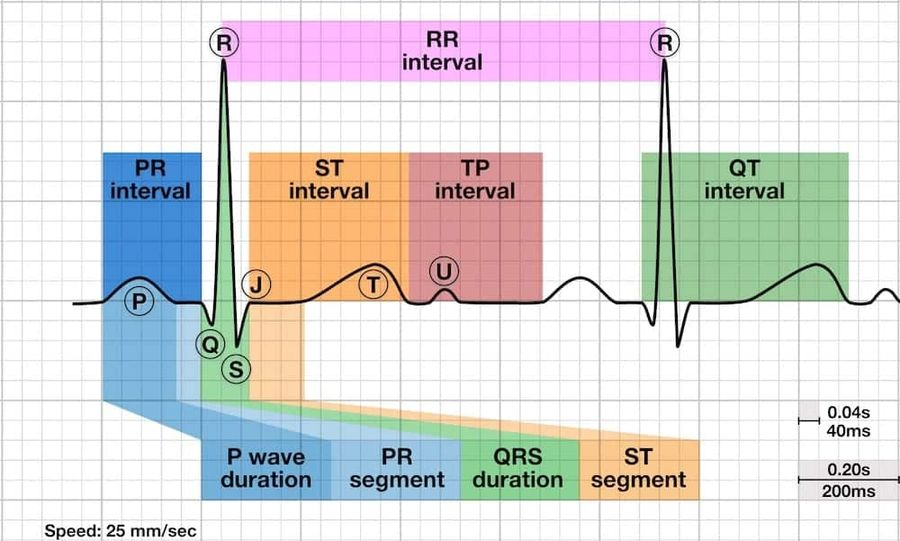
4.2 · Sinus arrhythmia
Sinus arrhythmia is a normal, physiologic variant. The rhythm is irregular with a pattern (a cyclic irregularity that follows breathing): the heart rate is faster with inspiration and slower with expiration. Everything else is normal sinus: a rate of 60 to 100, a uniform P wave for every QRS, a PR interval of 0.12 to 0.20 seconds and a narrow QRS under 0.12 seconds Slides 9, 10. Because it is normal, a person with sinus arrhythmia needs reassurance and no treatment.
4.3 · Sinus bradycardia
Sinus bradycardia is a regular sinus rhythm under 60 beats per minute, with a uniform P wave for every QRS, a PR interval of 0.12 to 0.20 seconds and a narrow QRS Slide 11. It can be pathological or a normal variant Slide 13.
- As a normal finding: sinus bradycardia is seen in healthy people as an adaptive response, particularly in well-conditioned, active people (athletes) or while sleeping, and in adults over age 65.
- Drug causes: beta blockers (for example metoprolol), nondihydropyridine calcium channel blockers (verapamil, diltiazem) and digoxin. When bradycardia follows a newly started rate-slowing drug, that drug is the likely cause.
- Other causes: hypothyroidism, sinoatrial node ischemia, increased intracranial pressure and late-stage infection. Because hypothyroidism is a listed cause, a slow sinus rhythm in a patient who may be hypothyroid calls for thyroid function tests.
- Most people with sinus bradycardia are asymptomatic.
Management
- Asymptomatic: no treatment.
- Acute, symptomatic and hemodynamically unstable: atropine is first line; if atropine does not work, a temporary pacemaker follows.
- Chronic and symptomatic: a permanent pacemaker.
- A patient who already has symptomatic bradycardia should not be started on another rate-slowing drug: beta blockers, verapamil or diltiazem (nondihydropyridine calcium channel blockers) and digoxin all slow the rate further.
This deck does not list the signs of hemodynamic instability; the Lecture 30 deck does (section 5). In a case, instability usually shows as hypotension with confusion, drowsiness or fainting.
- Asymptomatic: no treatment. “if you’re asymptomatic, we leave you alone.” 9:18 Older adults are a common, normal source: “especially in adults over the age of 65,” 7:33 Slide 13
- A new slow rate after a new drug. “the most common thing that will happen then is that they’ll probably get started with a beta blocker” 8:10 (she named the calcium channel blockers too; that word is garbled in our transcription) Slide 13
- Instability. “Those four are always defined as instability” 37:24, because they mean “that you’re having end organ damage.” 37:42 The list is on the Lecture 30 deck (slide 45): chest pain, altered mental status, shortness of breath, hypotension.
- Unstable: atropine first. “The first line is atropine.” 10:22 Then a temporary pacemaker (the first-line table at the top of this section).
4.4 · Sinus tachycardia
Sinus tachycardia is a regular sinus rhythm above 100, up to 160 beats per minute, with a uniform P wave for every QRS, a PR of 0.12 to 0.20 seconds and a narrow QRS Slide 14. Above 160 the P waves are lost and a regular narrow tachycardia is called supraventricular tachycardia (4.6). Sinus tachycardia can be pathological or a normal variant: it is the normal physiologic response to exercise and to conditions with enhanced catecholamine release, and it is usually the result of a physiologic or pathologic process Slide 16.
- Physiologic causes: pain, anxiety.
- Pathologic causes: hypovolemia, hypotension or shock, anemia, hypoxia, pulmonary embolism, myocardial infarction, hyperthyroidism.
- Drugs: stimulants and anticholinergics; and abrupt withdrawal of beta blockers or nondihydropyridine calcium channel blockers can cause sinus tachycardia.
- Appropriate sinus tachycardia is a response to physiologic stress, an underlying pathologic condition or medication effects. Inappropriate sinus tachycardia is an elevated heart rate that remains unexplained after secondary causes have been excluded: a diagnosis of exclusion.
- Physiologic sinus tachycardia usually has no associated symptoms such as dizziness or nausea.
Management
- Appropriate sinus tachycardia: treat the underlying cause Slide 17 (for example, treat the bleeding and replace the volume after blood loss, or treat the infection behind a fever) rather than the rate itself.
- Inappropriate sinus tachycardia: as a diagnosis of exclusion, first eliminate every influencing factor, including lifestyle (night shifts), illicit drugs and medications; behavioral therapy. Beta blockers are not well tolerated. It is generally left untreated, because patients tolerate the symptoms better than the treatment and the prognosis is usually benign Slide 17.
- “The actual definition of sinus tachycardia is up to 160.” 17:02 Above that, a regular narrow rhythm is supraventricular tachycardia Slides 14, 23
- Inappropriate sinus tachycardia: “It is a diagnosis of exclusion,” 20:20 Slide 16
- Why it is usually left alone: “young people on beta blockers do not do well, they get dizzy,” 23:07 and “It’s usually a benign prognosis, we just let them be,” 23:30 Slide 17
4.5 · Sick sinus syndrome
The sinus node can no longer keep a reliable rhythm. On the strip sick sinus syndrome is irregular, with a variable rate that ranges through bradycardia, normal sinus rate and tachycardia up to 160; P waves are variable if present, with a shape that depends on the underlying rhythm; the PR is variable; the QRS is narrow Slide 18. An ambulatory monitor (a 24-hour lead II recording on slide 21) catches the pauses.
| Form | What happens |
|---|---|
| Sinus node exit block | The impulse is generated, but it cannot get out of the sinoatrial node. |
| Sinus arrest | The impulse is not generated, leading to a junctional rhythm, whose P waves are inverted before or after the QRS, or not visible (4.13). |
| Tachy-brady syndrome | A tachyarrhythmia alternates with symptomatic bradycardia or with offset pauses. |
In tachy-brady syndrome, the tachyarrhythmia is most commonly atrial fibrillation: fast atrial rhythms alternate with slow rhythms or pauses Slide 18.
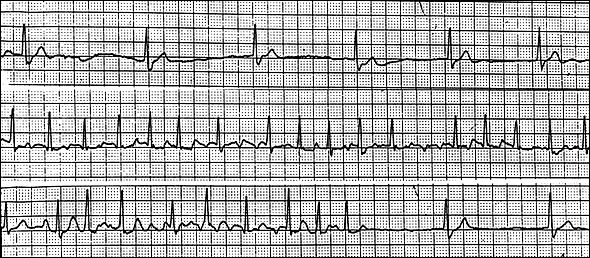
- Causes Slide 22: sinoatrial node ischemia, injury to the sinoatrial node from cardiac surgery, electrolyte abnormalities, hypothyroidism, and medications: beta blockers, nondihydropyridine calcium channel blockers and digoxin.
- Management Slide 22: treat the underlying cause first (for
example, stop the rate-slowing drugs). Then confirm whether symptoms correlate with the episodes of bradycardia:
- If symptoms do not correlate with the bradycardia, observation is appropriate.
- If the bradycardia is symptomatic, a permanent pacemaker is placed.
- Tachy-brady syndrome often needs a permanent pacemaker; if the tachyarrhythmia is ventricular tachycardia, it needs a permanent pacemaker with an implantable cardioverter defibrillator.
- She said it again and again, then asked it as a question: the rhythm that takes over “could be a junctional, it’s usually not, it’s usually AFib [atrial fibrillation].” 27:17 “Usually that rhythm is gonna be AFib [atrial fibrillation].” 31:09 “How many times did I say that?” 31:11 “what is the most likely tachyrhythm we will see?” 31:25 Slide 18
- Management: “For the most part we leave them alone unless they get symptomatic or long or too frequent, then we put a permanent pacemaker.” 33:03 If the fast rhythm is ventricular tachycardia, a defibrillator too (33:23) Slide 22
4.6 · Supraventricular tachycardia: the umbrella and the first moves
Supraventricular tachycardia is a blanket term for any tachydysrhythmia arising above the level of the bundle of His (the atrioventricular bundle): sinus tachycardia, atrial tachycardia (focal and multifocal), reentry tachycardias (atrioventricular nodal reentry and accessory pathway reentry), atrial flutter and atrial fibrillation Slide 24. Ventricular tachycardia arises below the bundle of His, so it falls outside the supraventricular umbrella (Lecture 30). By definition, supraventricular tachycardias are narrow QRS complex tachycardias (under 0.12 seconds). Most are regular; atrial fibrillation is irregularly irregular, and flutter with variable conduction and multifocal atrial tachycardia are irregular too.
The classic regular supraventricular tachycardia strip Slide 23: regular, above 160, P waves and PR hidden if present, narrow QRS under 0.12 seconds (the exception is antidromic accessory pathway reentry, 4.8).
- Symptoms Slide 25: none, or transient if paroxysmal; palpitations, lightheadedness, fatigue, dyspnea, chest pain or vague chest discomfort, nausea, vomiting. Symptoms may be more pronounced in the elderly and in those with underlying structural heart disease.
- Supraventricular tachycardia usually does not lead to syncope or hemodynamic collapse unless the heart rate goes above 200, as in atrioventricular reentrant tachycardia, atrioventricular nodal reentrant tachycardia, and atrial fibrillation associated with an accessory pathway (pre-excited atrial fibrillation, for example in Wolff-Parkinson-White) Slide 25.
Management
- Stable supraventricular tachycardia: a vagal maneuver is first line, before any drug.
- Then adenosine if the vagal maneuver fails; adenosine may be given twice as needed. It may convert the rhythm to normal sinus rhythm, or at least slow the rate so you can see whether P waves are there (hidden atrial activity) Slide 26.
- Hemodynamically unstable supraventricular tachycardia (less common): immediate synchronized cardioversion, which is a timed shock with decreased voltage Slide 26. Defibrillation, by contrast, is an unsynchronized shock for a patient without a pulse; it has no place in a stable supraventricular tachycardia, which gets a vagal maneuver and adenosine and no shock at all.
- Her summary: “So first line is going to be a vagal maneuver.” 40:38 “Second line is going to be adenosine.” 40:41 Slide 26
- Synchronized cardioversion is the timed, lower-voltage shock: “I’m going to give you a slightly lower voltage, but I’m going to synchronize with your heart.” 44:12 Slide 26
- Collapse needs a rate above 200: “usually the heart rate doesn’t really go over 200.” 37:56 Instability comes “when you pass a 200, that usually only happens with AVRT [atrioventricular reentrant tachycardia], AVNRT [atrioventricular nodal reentrant tachycardia],” 38:09 and atrial fibrillation with Wolff-Parkinson-White Slide 25
Slide 27’s narrow-complex tachycardia algorithm is a third-party chart and is not reproduced here.
4.7 · Focal and multifocal atrial tachycardia
Both are typically paroxysmal Slide 28. Focal atrial tachycardia arises from a single ectopic focus within the atria but outside the sinoatrial node, so every P wave has the same abnormal shape. Multifocal atrial tachycardia arises from multiple foci: at least three distinct P-wave morphologies in the same lead. Focal atrial tachycardia is regular; multifocal atrial tachycardia is irregular.
| Rhythm | Regularity | Rate (beats per minute) | P waves | PR (seconds) | QRS (seconds) |
|---|---|---|---|---|---|
| Focal atrial tachycardia | Regular | Above 100, usually 150–250 | Consistent abnormal shape; one P wave for every QRS | 0.12–0.20 | Narrow, under 0.12 |
| Multifocal atrial tachycardia | Irregular | Above 100, usually 150–250 | Abnormal, changing shape (at least 3 morphologies in one lead); one P wave for every QRS | Varies (see the disagreement box) | Narrow, under 0.12 |
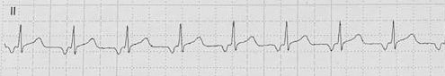
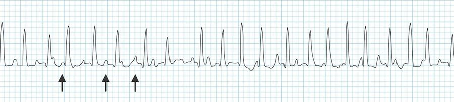
Focal atrial tachycardia
- Commonly seen in the absence of heart disease, in the setting of increased metabolic demand (similar to the causes of sinus tachycardia). Most people report abrupt-onset palpitations. Generally a benign arrhythmia Slide 30.
- Adenosine is an important diagnostic tool, because it is usually less effective at terminating focal atrial tachycardia than the reentry tachycardias that depend on the atrioventricular node. An abnormal-P-wave rhythm that carries on after adenosine points to focal atrial tachycardia Slide 31.
- Unstable: synchronized cardioversion. Chemical cardioversion may be tried with amiodarone.
- Hemodynamically stable and symptomatic: an intravenous beta blocker or nondihydropyridine calcium channel blocker, while the underlying cause and precipitating factors are identified and treated.
- Chronic: an oral beta blocker or nondihydropyridine calcium channel blocker as initial therapy; catheter ablation is usually curative (90%) Slide 31.
Multifocal atrial tachycardia
- Usually due to severe chronic obstructive pulmonary disease or heart failure, with or without respiratory failure; typically when these patients are acutely ill, with right heart stress or pulmonary hypertension Slide 32.
- Most people have no symptoms directly attributable to it. Multifocal atrial tachycardia is a poor prognostic sign.
- Management: treat the underlying condition (for example the lung disease exacerbation). In hospital a beta blocker or nondihydropyridine calcium channel blocker may be added, not for long-term use.
- How to tell them apart: “The question is, is the morphology of the P wave stays consistent or inconsistent?” 49:24 One shape is focal; at least three shapes is multifocal Slides 28, 29
- Focal: “It’s mostly these abrupt onset palpitations, and it’s usually a benign arrhythmia.” 53:10 Adenosine is diagnostic because it rarely ends it: “which is why adenosine doesn’t work well for these people,” 54:24 Slides 30, 31
- Multifocal is the sicker one: “definitely multifocal is the one that’s mostly associated with prolonged pathology, and will usually become more unstable first.” 56:33 Slide 32
4.8 · Accessory pathway reentry and Wolff-Parkinson-White
Atrioventricular reentrant tachycardia is seen in patients with an accessory pathway (as in Wolff-Parkinson-White); the reentry loop uses the atrioventricular node and the pathway. It is orthodromic or antidromic, and orthodromic is more common Slides 33, 37. Patients most commonly present with palpitations.
- Pre-excitation is a short PR interval and a delta wave on electrocardiograms taken during normal sinus rhythm; it is consistent with an accessory pathway, the bundle of Kent, and with the potential for reentrant tachycardia Slide 33. A delta wave with a short PR interval therefore means an extra pathway that can cause fast rhythms. Look for pre-excitation on a tracing in sinus rhythm: during orthodromic tachycardia the QRS is narrow with no delta wave.
- Pre-excitation and reentry. Pre-excitation (a short PR interval and a delta wave) on an earlier tracing in normal sinus rhythm points to an accessory pathway and the potential for atrioventricular reentrant tachycardia, which runs above 100, usually at 200 to 300, with hidden or retrograde P waves.
- Wolff-Parkinson-White on the resting tracing Slide 35: a short PR interval (under 0.12 seconds), a widened QRS, and the delta wave, a slurred upstroke of the QRS complex.
| Pre-excitation (sinus rhythm) | Orthodromic reentry (more common) | Antidromic reentry | |
|---|---|---|---|
| Route | Atria reach the ventricles early through the pathway | Down (antegrade) through the atrioventricular node, back up the pathway | Down the pathway, back (retrograde) through the atrioventricular node |
| QRS | Short PR, delta wave | Narrow (normal duration), no delta wave | Wide, with a delta wave |
| P wave | PR segment cannot be seen | Retrograde P wave after the QRS | Rarely seen; if visible, retrograde and just before the QRS |
Put plainly: orthodromic reentrant tachycardia produces a regular, narrow complex tachycardia without a delta wave, with a retrograde (inverted) P wave just after each QRS; antidromic reentrant tachycardia produces a wide QRS with a delta wave Slides 34, 35. The accessory pathway reentry strip Slide 33: regular, above 100 but usually 200–300, P waves hidden or retrograde, PR hidden or short, QRS narrow under 0.12 with or without a delta wave.
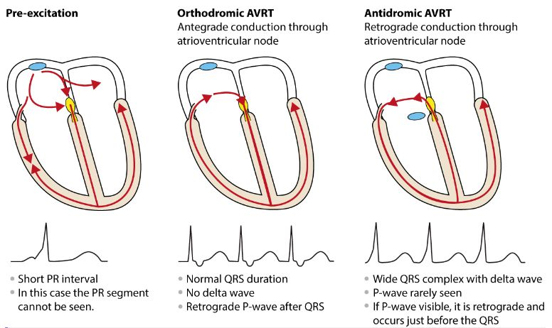
Management
- Adenosine is first line for orthodromic atrioventricular reentrant tachycardia (after a vagal maneuver, as for any stable supraventricular tachycardia) Slide 37.
- If adenosine slows the rate and reveals atrial fibrillation with Wolff-Parkinson-White, intravenous procainamide is used, never adenosine Slide 37. Atrial fibrillation with Wolff-Parkinson-White is treated with intravenous procainamide, and adenosine must never be used in atrial fibrillation with Wolff-Parkinson-White: blocking the normal atrioventricular node leaves the accessory pathway unopposed to conduct the fibrillation (see the disagreement box for how slide 37 words this).
- Chronic management of Wolff-Parkinson-White: catheter ablation of the accessory pathway is first-line treatment Slide 37.
The longest stretch of the lecture: “This is a very important point I want to talk about.” 1:08:52 She tied it to last year’s exam (1:13:15; the exact words are unclear in both transcriptions, so they are not quoted).
- The accessory pathway is the bundle of Kent. “What is the accessory pathway called?” 59:51 “Bundle of Kent.” 59:55 Slide 33
- The delta wave shows only in sinus rhythm. “The only time you can see a Delta Wave is during the normal heartbeat, normal heart rate, pre-excitation mode.” 1:10:18 During the tachycardia “you’re not gonna see a Delta Wave” 1:10:42 Slides 33, 34
- Pathway not known yet: treat it as supraventricular tachycardia. “Treat them as SVT [supraventricular tachycardia].” 1:12:48 “Try to vagal them, try to give them adenosine.” 1:12:49 If adenosine slows the rate and reveals atrial fibrillation with Wolff-Parkinson-White, switch to procainamide Slide 37
- Pathway known: no adenosine. “Adenosine is contraindicated” 1:13:06 because blocking the node leaves only the pathway: “You took down the natural pathway and the only thing that is left to work is the accessory pathological pathway.” 1:13:47 Use intravenous procainamide Slide 37
- Definitive: ablate the pathway. “go ahead and burn the pathway.” 1:14:47 Slide 37
Pre-excited atrial fibrillation
Atrial fibrillation conducting down the accessory pathway gives an irregular, wide-complex tachycardia Slide 52. Against ventricular tachycardia Slide 53: ventricular tachycardia is regular at 150 to 200 beats per minute; atrial fibrillation with Wolff-Parkinson-White is irregular, with some rates approaching 300. For a patient with Wolff-Parkinson-White, atrial fibrillation conducting down the pathway is the most dangerous rhythm: rates above 200 cause syncope or collapse Slide 25, and here they can approach 300.
She called atrial fibrillation with Wolff-Parkinson-White the most dangerous form of atrial fibrillation (1:35:20) and framed it as a question: “what is the worst combination?” 1:35:50 Blocking the node does not slow it, because “now all I have left is the accessory pathway,” 1:36:00 Slides 25, 52, 53
4.9 · Atrioventricular nodal reentry
Atrioventricular nodal reentrant tachycardia is a reentry circuit within the atrioventricular node itself. It is typically paroxysmal, and slow-fast (typical) is the most common type Slides 38, 39. The strip: regular, usually 140 to 180, P waves hidden, PR hidden, narrow QRS under 0.12 seconds.
- Women are affected far more than men (women >> men) Slide 40.
- Commonly seen in the absence of heart disease; it may occur spontaneously or with exertion, caffeine, alcohol, beta-agonists or sympathomimetics.
- Patients typically complain of sudden-onset palpitations and “neck pulsations”, seen on examination as the frog sign Slide 40.
Management
- It almost always terminates with vagal maneuvers or adenosine; synchronized cardioversion is rarely required; episodes are usually well tolerated Slide 41.
- At home, if a vagal maneuver terminates it in a patient who has been educated, urgent medical attention is usually not required.
- “Pill in the pocket” is an option: a beta blocker or nondihydropyridine calcium channel blocker taken when an episode starts.
- Catheter ablation, for a select subset of patients, offers a definitive cure (over 95%).
- Counseling: because caffeine, alcohol and sympathomimetics can set it off, a patient whose episodes follow them is advised to limit those triggers.
- The circuit “actually just propagates within the AV [atrioventricular] node, and causes a circuit within the AV [atrioventricular] node.” 1:17:49 Slide 38
- “This happens a lot more in women than in men.” 1:18:09 “You feel it especially in your neck.” 1:18:17 Slide 40
- “AVNRT [atrioventricular nodal reentrant tachycardia] always almost terminates with the vagal maneuver.” 1:18:40 then adenosine, which also works on the node Slide 41
- At home: “It’s actually easier to teach people to vagal themselves at home.” 1:19:34 Ablation: “it has a 95% success rate when you do it right.” 1:20:12 Slide 41
4.10 · Atrial flutter
The atrial rate is 250 or greater and can approach 300, seen as sawtooth (flutter) waves, more of them than QRS complexes; the rhythm is regular and the QRS narrow Slide 42. When the atrioventricular node blocks one of every two atrial impulses, the result is 2:1 block, the most common ratio.
- Commonly seen with atrial scarring or damage (for example after surgery), right-sided heart failure or pulmonary vascular disease, and in patients with atrial fibrillation who are taking an antiarrhythmic Slide 44.
- Rapid heart rate, palpitations, chest pain, dyspnea, dizziness, fatigue. Usually not directly life-threatening, and generally no hemodynamic collapse or syncope.
- 1:1 atrial flutter causes extreme hemodynamic instability and carries a big risk of progression to ventricular fibrillation.
Management
- Hemodynamically unstable: synchronized cardioversion.
- Hemodynamically stable: a beta blocker or calcium channel blocker (rate control) Slide 45.
- Rate control is harder to achieve in atrial flutter than in atrial fibrillation, and flutter has a substantial recurrence rate.
- Outpatient cardioversion after 21 days of anticoagulation; anticoagulation is part of flutter management.
- Ablation is the definitive management.
On slowing flutter with a beta blocker or calcium channel blocker: “They’re very resistant.” 1:24:51 and they usually go on to ablation Slide 45. Her lines on 1:1 flutter are garbled in both transcriptions; the slide’s point stands (1:1 flutter is the unstable one).
4.11 · Atrial fibrillation and anticoagulation
Atrial fibrillation is irregularly irregular, with absent P waves and no PR interval, usually at 110 to 160 (it can be under 80 or over 200), with a narrow QRS Slide 46.
| Type | Definition Slide 46 |
|---|---|
| Paroxysmal | Lasts less than 1 week; usually terminates without treatment |
| Persistent | Continuous for more than 7 days but less than 1 year; needs treatment |
| Long-standing persistent | Continuous for more than 1 year |
| Permanent | Patient and clinician make a joint decision to stop further attempts to restore or maintain sinus rhythm |
In words: paroxysmal atrial fibrillation lasts under a week and usually ends on its own; persistent atrial fibrillation is continuous for more than 7 days but less than one year; long-standing persistent atrial fibrillation is continuous for more than one year; atrial fibrillation is called permanent when patient and clinician jointly decide to stop attempts to restore sinus rhythm.
- Commonly seen with hypertension, diabetes, cardiac disease, family history of atrial fibrillation, obesity, sleep apnea, excessive alcohol, and in the elderly: older age raises the risk Slide 48.
- Rapid heart rate, palpitations, chest pain, dyspnea, dizziness, fatigue; usually not directly life-threatening.
- Medical emergencies due to atrial fibrillation: severe heart failure (pulmonary edema, hypotension), or atrial fibrillation in the setting of an acute myocardial infarction Slide 48.
Management
- Hemodynamically unstable: synchronized cardioversion Slide 49.
- Hemodynamically stable but in rapid ventricular response: intravenous rate control.
- Hemodynamically stable without rapid ventricular response: rate control (by mouth).
- In hemodynamically stable atrial fibrillation, rate control is the first goal; anticoagulation is guided by stroke risk, and rhythm is restored only electively later.
- Cardioversion follows anticoagulation. In stable atrial fibrillation without a rapid ventricular response, rate control comes first, with anticoagulation guided by stroke risk; elective outpatient cardioversion follows after 21 days of anticoagulation.
- Outpatient cardioversion after 21 days of anticoagulation. Mapping and ablation.
- “And so goal number one, write this.” 1:30:59 The goal is the rate, not the rhythm: “I’m not trying to convert your rhythm.” 1:30:46 Slide 49
- “AFib RVR [atrial fibrillation with rapid ventricular response] is dangerous.” 1:30:16 “And so AFib RVR has to be addressed immediately.” 1:30:19 (intravenous rate control) Slide 49
- The rhythm comes later, after anticoagulation: “So if you go home, get anticoagulated for 21 days,” 1:33:00 then cardioversion Slide 49
- Know what the stroke-risk score means, not its parts: the risk “of you having either a cardiac or a neurological event in the next year because of a blood clot.” 1:33:38 (CHA2DS2-VASc; the bleeding-risk score is HAS-BLED) Slide 50
Anticoagulation
- Anticoagulation in atrial fibrillation is there to prevent stroke from a clot. The CHA2DS2-VASc (stroke risk) score assesses stroke risk Slide 50.
- CHA2DS2-VASc (stroke risk) points. Age under 65 scores 0, age 65-74 scores 1 and age 75 or older scores 2; female sex 1 (male sex 0); heart failure 1; hypertension 1; diabetes 1; vascular disease (a prior myocardial infarction or peripheral artery disease) 1; and a prior stroke, transient ischemic attack or thromboembolism 2, because these count double.
- A CHA2DS2-VASc score of 0 in a man or 1 in a woman is low risk and may not require anticoagulation. Patients above that typically require anticoagulation unless their bleeding risk is high.
- The HAS-BLED (bleeding risk) score estimates the risk of major bleeding on anticoagulation; a high score flags bleeding risks to correct and closer review (see the disagreement box for slide 50’s cut-off line).
- HAS-BLED (bleeding risk) points. Age over 65 scores 1, renal disease (dialysis) 1, prior major bleeding 1 and a medication predisposing to bleeding (aspirin or clopidogrel) 1. Hypertension scores only when uncontrolled, above 160 systolic, and alcohol only at 8 or more drinks a week.
- Direct oral anticoagulants are preferred in nonvalvular atrial fibrillation: dabigatran, apixaban, edoxaban or rivaroxaban.
- If warfarin is used, the target international normalized ratio is 2 to 3.
The score components on slide 51 are calculator screenshots and are not reproduced here.
4.12 · Premature beats: atrial and junctional
Premature (early) beats come from somewhere in the heart that is not the sinoatrial node, and are named by origin Slide 54:
- Atrial (premature atrial contraction): begins in the atria; an early, abnormally shaped P wave.
- Junctional (premature junctional contraction): begins in the atrioventricular junction; an early, narrow QRS (usually 0.10 seconds or less) with either an inverted P wave, a P wave buried in the QRS (no P visible), or a P wave after the QRS.
- Ventricular (premature ventricular contraction): begins in the ventricles; an early, wide, “bizarre” QRS with no P wave (Lecture 30).
- When every other beat is ectopic, the pattern is bigeminy; every third beat, trigeminy.
Premature atrial contractions
The strip Slide 56: regular with an early beat, rate 60–100, the early P wave a different shape, one P wave for each QRS, PR 0.12–0.20, narrow QRS.
- Common in patients with chronic obstructive pulmonary disease. They may happen in normal hearts with excessive alcohol, stress or caffeine. In patients with heart disease they may precede paroxysmal supraventricular tachycardia, atrial fibrillation or atrial flutter Slide 58.
- Most people are asymptomatic. No treatment if asymptomatic.
- If they are frequent, look for underlying structural heart disease.
- Counsel the patient to avoid potential precipitants and reassure about the benign nature of the rhythm.
- Persistent and symptomatic: a beta blocker (metoprolol) if not contraindicated, or catheter ablation if the premature atrial contractions are frequent or are triggering atrial fibrillation.
Premature junctional contractions
Where in the atrioventricular node the beat starts decides where the P wave sits Slide 59: from the top, the atria beat first (short PR); from the middle, atria and ventricles beat together (P wave buried in the QRS); from the bottom, the ventricles beat first (retrograde P wave after the QRS). Junctional P waves are inverted in leads II, III and aVF, before, buried in or after the QRS; the PR of the early beat is short (under 0.12) or nonexistent; the QRS is narrow.
- Most people with premature junctional contractions are not symptomatic Slide 61.
- If frequent (more than 10 per minute, or multifocal), look for underlying structural heart disease, and treat them with a beta blocker.
- No treatment if asymptomatic and infrequent; reassurance of the benign nature of the rhythm is often adequate.
- Persistent symptoms: a beta blocker (metoprolol) if not contraindicated.
- Premature atrial contractions: “The treatment is usually don’t do anything.” 1:39:07 “Just tell them to try to avoid the trigger.” 1:39:28 Slide 58
- “Atrial bigeminy and trigeminy are usually asymptomatic, and we leave them alone.” 1:38:37 Slide 54
- Premature junctional contractions: “Same thing, most people are not symptomatic.” 1:40:45 Slide 61 Their P-wave position by origin is not examined beyond top, middle and bottom (see the scope list at the top).
4.13 · Junctional rhythm
The syllabus lists junctional rhythm under Lecture 30’s objective (1.h); it is taught on this deck.
A junctional rhythm is regular, usually at 40 to 60 beats per minute, with P waves inverted in II, III and aVF (before, buried in or after the QRS), a short (under 0.12) or nonexistent PR, and a narrow QRS Slide 62.
- Causes Slide 64: sinoatrial node dysfunction (for example sick sinus syndrome) or significant bradycardia, inferior myocardial infarction, the acute period after cardiac surgery, and digoxin toxicity.
- It can also be seen in healthy people with increased vagal tone, such as well-conditioned athletes.
- A junctional rhythm is generally well tolerated.
Management depends on the cause
- No treatment if asymptomatic in an otherwise healthy person.
- Due to complete or high-grade atrioventricular block, or to sick sinus syndrome: a permanent pacemaker.
- Due to digitalis (digoxin) toxicity: atropine and/or digoxin immune Fab Slide 64.
- Healthy people “that have too much vagal tone” 1:42:17: “The management is leave it alone if you’re asymptomatic” 1:42:25 Slide 64
- With high-grade atrioventricular block, a permanent pacemaker, “Because we cannot trust a junctional rhythm to be the perfusing rhythm” 1:42:51 Slide 64
- Digoxin toxicity: “It’s from Digitalis poisoning.” 1:43:05 She deferred its treatment to the emergency medicine session (see the scope list at the top).
4.14 · The conditions, point by point
Sinus arrhythmia
Defining feature: a sinus rate that rises with inspiration and falls with expiration, every beat otherwise normal
- Definition
- A normal, physiologic sinus rhythm that is irregular with a pattern, at 60–100.
- Who gets it
- Not on the slides.
- Risk factors
- Not on the slides.
- Classic signs & symptoms
- Not on the slides.
- Physical exam findings
- Not on the slides.
- Diagnostics / tests
- Electrocardiogram: rate 60–100, faster with inspiration and slower with expiration; uniform P wave for every QRS; PR 0.12–0.20; narrow QRS.
- First-line treatment
- None needed: it is a normal variant.
- Complications
- Not on the slides.
Slides 9–10
Sinus bradycardia
Defining feature: a regular sinus rhythm under 60 beats per minute
- Definition
- Regular sinus rhythm under 60, with a uniform P wave for every QRS, PR 0.12–0.20 and a narrow QRS; pathological or a normal variant.
- Who gets it
- Well-conditioned, active people (athletes), people asleep, and adults over 65.
- Risk factors
- Beta blockers, nondihydropyridine calcium channel blockers, digoxin; hypothyroidism; sinoatrial node ischemia; increased intracranial pressure; late-stage infection.
- Classic signs & symptoms
- Most people are asymptomatic.
- Physical exam findings
- Slow, regular pulse; otherwise not on the slides.
- Diagnostics / tests
- Electrocardiogram (rate under 60, normal P, PR and QRS); look for the cause (medication list, thyroid function).
- First-line treatment
- No treatment if asymptomatic. Acute, symptomatic and hemodynamically unstable: atropine first line, then a temporary pacemaker. Chronic and symptomatic: permanent pacemaker.
- Complications
- Not on the slides.
Slides 11–13
Sinus tachycardia
Defining feature: a regular sinus rhythm above 100, up to 160, with a P wave before every QRS
- Definition
- Regular sinus rhythm above 100 up to 160; appropriate (a response to stress, illness or drugs) or inappropriate (unexplained after secondary causes are excluded).
- Who gets it
- Anyone exercising or under catecholamine drive; inappropriate sinus tachycardia is a diagnosis of exclusion.
- Risk factors
- Pain, anxiety; hypovolemia, hypotension or shock, anemia, hypoxia, pulmonary embolism, myocardial infarction, hyperthyroidism; stimulants, anticholinergics; abrupt withdrawal of beta blockers or nondihydropyridine calcium channel blockers.
- Classic signs & symptoms
- Physiologic sinus tachycardia usually has no associated symptoms such as dizziness or nausea.
- Physical exam findings
- Fast, regular pulse; otherwise not on the slides.
- Diagnostics / tests
- Electrocardiogram (above 100 up to 160, normal P, PR and QRS); for inappropriate sinus tachycardia, exclude every secondary cause.
- First-line treatment
- Appropriate: treat the underlying cause. Inappropriate: remove influencing factors (night shifts, illicit drugs, medications), behavioral therapy; beta blockers poorly tolerated; generally left untreated.
- Complications
- Inappropriate sinus tachycardia usually has a benign prognosis.
Slides 14–17
Sick sinus syndrome
Defining feature: an irregular rhythm with a variable rate: exit block, sinus arrest, or fast rhythms alternating with slow ones
- Definition
- Sinus node dysfunction: exit block (impulse generated but does not exit), sinus arrest (impulse not generated, leading to a junctional rhythm), or tachy-brady syndrome (a tachyarrhythmia alternating with bradycardia or offset pauses).
- Who gets it
- Not on the slides beyond its causes.
- Risk factors
- Sinoatrial node ischemia, injury to the node from cardiac surgery, electrolyte abnormalities, hypothyroidism, beta blockers, nondihydropyridine calcium channel blockers, digoxin.
- Classic signs & symptoms
- Symptomatic bradycardia, alternating with a tachyarrhythmia in tachy-brady syndrome.
- Physical exam findings
- Not on the slides.
- Diagnostics / tests
- Electrocardiogram or ambulatory monitor: irregular, variable rate (bradycardia to tachycardia up to 160), variable P waves and PR, narrow QRS; in tachy-brady the fast rhythm is most commonly atrial fibrillation.
- First-line treatment
- Treat the underlying cause; observe if symptoms do not correlate with the bradycardia; permanent pacemaker for symptomatic bradycardia; tachy-brady often needs a pacemaker, with an implantable cardioverter defibrillator if the tachyarrhythmia is ventricular tachycardia.
- Complications
- Not on the slides.
Slides 18–22
Focal atrial tachycardia
Defining feature: a regular tachycardia with one consistent, abnormally shaped P wave before every QRS
- Definition
- A single ectopic focus within the atria but outside the sinoatrial node; typically paroxysmal.
- Who gets it
- Commonly people without heart disease.
- Risk factors
- Increased metabolic demand (similar to the causes of sinus tachycardia).
- Classic signs & symptoms
- Abrupt-onset palpitations.
- Physical exam findings
- Not on the slides.
- Diagnostics / tests
- Electrocardiogram: regular, above 100 (usually 150–250), identical abnormal P waves, narrow QRS. Adenosine is diagnostic: it usually does not terminate focal atrial tachycardia.
- First-line treatment
- Unstable: synchronized cardioversion; chemical cardioversion with amiodarone may be tried. Stable and symptomatic: intravenous beta blocker or nondihydropyridine calcium channel blocker. Chronic: oral beta blocker or calcium channel blocker; catheter ablation usually curative (90%).
- Complications
- Generally a benign arrhythmia.
Slides 28–31
Multifocal atrial tachycardia
Defining feature: an irregular tachycardia with at least three distinct P-wave shapes in one lead
- Definition
- Atrial tachycardia from multiple foci: at least three distinct P-wave morphologies in the same lead, one P wave for every QRS.
- Who gets it
- Acutely ill patients with severe chronic obstructive pulmonary disease or heart failure.
- Risk factors
- Severe chronic obstructive pulmonary disease, heart failure, respiratory failure, right heart stress or pulmonary hypertension.
- Classic signs & symptoms
- Most have no symptoms directly attributable to it.
- Physical exam findings
- Irregular, fast pulse; otherwise not on the slides.
- Diagnostics / tests
- Electrocardiogram: irregular, above 100 (usually 150–250), changing P-wave shapes, narrow QRS.
- First-line treatment
- Treat the underlying condition; in hospital a beta blocker or nondihydropyridine calcium channel blocker may be added, not long term.
- Complications
- A poor prognostic sign.
Slides 28–29, 32
Paroxysmal supraventricular tachycardia (the umbrella)
Defining feature: a regular narrow complex tachycardia above 160 with hidden P waves
- Definition
- Any tachydysrhythmia arising above the bundle of His; by definition narrow complex.
- Who gets it
- Symptoms more pronounced in the elderly and in structural heart disease.
- Risk factors
- See each rhythm (accessory pathway, nodal reentry, atrial foci).
- Classic signs & symptoms
- None or transient; palpitations, lightheadedness, fatigue, dyspnea, chest pain or discomfort, nausea, vomiting.
- Physical exam findings
- Fast, regular pulse; otherwise not on the slides.
- Diagnostics / tests
- Electrocardiogram: regular, above 160, P waves and PR hidden, narrow QRS (except antidromic reentry); adenosine may slow it enough to show P waves.
- First-line treatment
- Stable: vagal maneuver first, then adenosine (up to twice). Unstable: immediate synchronized cardioversion (timed shock, decreased voltage).
- Complications
- Syncope or hemodynamic collapse unusual unless the rate goes above 200 (reentry, pre-excited atrial fibrillation).
Slides 23–26
Atrioventricular reentrant tachycardia and Wolff-Parkinson-White
Defining feature: an accessory pathway (bundle of Kent): short PR and delta wave in sinus rhythm
- Definition
- Reentry through the atrioventricular node and an accessory pathway; orthodromic (more common: narrow QRS, no delta wave, retrograde P after the QRS) or antidromic (wide QRS with a delta wave).
- Who gets it
- Patients with an accessory pathway, as in Wolff-Parkinson-White.
- Risk factors
- Pre-excitation on a prior electrocardiogram in sinus rhythm.
- Classic signs & symptoms
- Most commonly palpitations; collapse when the rate exceeds 200.
- Physical exam findings
- Not on the slides.
- Diagnostics / tests
- Sinus rhythm tracing: short PR (under 0.12), widened QRS, delta wave (slurred upstroke). Tachycardia: regular, usually 200–300, P hidden or retrograde.
- First-line treatment
- Orthodromic: adenosine first line. Atrial fibrillation with Wolff-Parkinson-White (or revealed by adenosine): intravenous procainamide, never adenosine. Chronic: catheter ablation of the accessory pathway.
- Complications
- Pre-excited atrial fibrillation: irregular, wide, rates approaching 300, the most dangerous rhythm for these patients.
Slides 33–37, 52–53
Atrioventricular nodal reentrant tachycardia
Defining feature: a paroxysmal, regular narrow tachycardia with hidden P waves and neck pulsations (frog sign)
- Definition
- A reentry circuit within the atrioventricular node; slow-fast (typical) is the most common type.
- Who gets it
- Women far more than men; commonly no heart disease.
- Risk factors
- Spontaneous, or exertion, caffeine, alcohol, beta-agonists, sympathomimetics.
- Classic signs & symptoms
- Sudden-onset palpitations, “neck pulsations”.
- Physical exam findings
- Frog sign (visible neck pulsations).
- Diagnostics / tests
- Electrocardiogram: regular, usually 140–180, P waves and PR hidden, narrow QRS.
- First-line treatment
- Vagal maneuvers or adenosine almost always terminate it; synchronized cardioversion rarely needed; “pill in the pocket” beta blocker or nondihydropyridine calcium channel blocker; catheter ablation, definitive cure in over 95%.
- Complications
- Episodes usually well tolerated; no urgent care needed if an educated patient ends one with a vagal maneuver.
Slides 38–41
Atrial flutter
Defining feature: sawtooth flutter waves at an atrial rate of 250 or more, most often conducted 2:1
- Definition
- Regular atrial rhythm at 250 or greater (approaching 300) with more flutter waves than QRS complexes; 2:1 block most common.
- Who gets it
- Patients with atrial scarring or damage (for example after surgery), right-sided heart failure, pulmonary vascular disease, or atrial fibrillation treated with an antiarrhythmic.
- Risk factors
- As above.
- Classic signs & symptoms
- Rapid heart rate, palpitations, chest pain, dyspnea, dizziness, fatigue; usually no collapse or syncope.
- Physical exam findings
- Not on the slides.
- Diagnostics / tests
- Electrocardiogram: sawtooth waves, 2:1, 3:1 or 4:1 conduction, narrow QRS.
- First-line treatment
- Unstable: synchronized cardioversion. Stable: beta blocker or calcium channel blocker (rate control is harder than in atrial fibrillation). Anticoagulation; outpatient cardioversion after 21 days of it; ablation is definitive.
- Complications
- 1:1 flutter: extreme instability and a big risk of ventricular fibrillation. Substantial recurrence rate.
Slides 42–45
Atrial fibrillation
Defining feature: an irregularly irregular narrow complex rhythm with no P waves
- Definition
- Irregularly irregular, absent P waves and PR, usually 110–160; paroxysmal (under 1 week), persistent (over 7 days, under 1 year), long-standing persistent (over 1 year), permanent (joint decision to stop rhythm attempts).
- Who gets it
- The elderly, and people with the risk factors below.
- Risk factors
- Hypertension, diabetes, cardiac disease, family history of atrial fibrillation, obesity, sleep apnea, excessive alcohol, older age.
- Classic signs & symptoms
- Rapid heart rate, palpitations, chest pain, dyspnea, dizziness, fatigue.
- Physical exam findings
- Irregularly irregular pulse; otherwise not on the slides.
- Diagnostics / tests
- Electrocardiogram; CHA2DS2-VASc (stroke risk) score; HAS-BLED (bleeding risk) score.
- First-line treatment
- Unstable: synchronized cardioversion. Stable in rapid ventricular response: intravenous rate control; stable without it: oral rate control. Anticoagulation by stroke risk (direct oral anticoagulants preferred if nonvalvular; warfarin target international normalized ratio 2–3); outpatient cardioversion after 21 days of anticoagulation; mapping and ablation.
- Complications
- Stroke from a clot; emergencies with severe heart failure (pulmonary edema, hypotension) or an acute myocardial infarction.
Slides 46–50
Premature atrial contractions
Defining feature: an early beat with an abnormally shaped P wave and a narrow QRS
- Definition
- An early beat that begins in the atria; regular rhythm with an early beat, one P wave for each QRS.
- Who gets it
- Common in chronic obstructive pulmonary disease; normal hearts with excess alcohol, stress or caffeine.
- Risk factors
- Chronic obstructive pulmonary disease, excessive alcohol, stress, caffeine.
- Classic signs & symptoms
- Most people are asymptomatic.
- Physical exam findings
- Not on the slides.
- Diagnostics / tests
- Electrocardiogram: early, abnormal P wave, PR 0.12–0.20, narrow QRS; bigeminy if every other beat. If frequent, look for structural heart disease.
- First-line treatment
- None if asymptomatic; avoid precipitants and reassure. Persistent and symptomatic: beta blocker (metoprolol); catheter ablation if frequent or triggering atrial fibrillation.
- Complications
- In heart disease, may precede paroxysmal supraventricular tachycardia, atrial fibrillation or flutter.
Slides 54, 56–58
Premature junctional contractions and junctional rhythm
Defining feature: narrow beats with P waves inverted in II, III and aVF, or buried, or after the QRS
- Definition
- Beats from the atrioventricular junction: early single beats (premature junctional contractions) or a regular rhythm at 40–60 (junctional rhythm).
- Who gets it
- Healthy people with high vagal tone (athletes); patients with sinus node dysfunction, inferior myocardial infarction, recent cardiac surgery or digoxin toxicity.
- Risk factors
- Sick sinus syndrome or significant bradycardia, inferior myocardial infarction, the acute period after cardiac surgery, digoxin toxicity.
- Classic signs & symptoms
- Most people with premature junctional contractions are not symptomatic; junctional rhythm is generally well tolerated.
- Physical exam findings
- Not on the slides.
- Diagnostics / tests
- Electrocardiogram: narrow QRS, P inverted in II, III and aVF (before, buried or after), PR short or absent; more than 10 premature junctional contractions per minute prompts a search for structural heart disease.
- First-line treatment
- None if asymptomatic and infrequent (or a healthy person in junctional rhythm); reassurance; persistent symptoms: beta blocker (metoprolol). Junctional rhythm from high-grade block or sick sinus syndrome: permanent pacemaker; from digoxin toxicity: atropine and/or digoxin immune Fab.
- Complications
- Not on the slides.
Slides 54, 59–64
4.15 · Populations: adult and elderly
The deck has no population slide; these are the age-specific points it makes.
| Population | Strategy |
|---|---|
| Adult | A slow sinus rhythm or junctional rhythm in a well-conditioned athlete is an adaptive finding that needs no treatment Slides 13, 64. Nodal reentry is a disease of adults without heart disease, women far more than men: educate on vagal maneuvers, offer a “pill in the pocket”, and refer for catheter ablation for a cure (over 95%) Slides 40–41. Known Wolff-Parkinson-White: refer for ablation of the pathway Slide 37. Inappropriate sinus tachycardia is usually left untreated Slide 17. |
| Elderly | Sinus bradycardia is common in adults over 65 Slide 13. In an older adult with new symptomatic bradycardia, review the medication list first: beta blockers, nondihydropyridine calcium channel blockers and digoxin cause sinus bradycardia and sick sinus syndrome Slides 13, 22. Supraventricular tachycardia symptoms are more pronounced in the elderly and in structural heart disease Slide 25. Older age raises the risk of atrial fibrillation Slide 48, so weigh stroke risk (CHA2DS2-VASc) against bleeding risk (HAS-BLED) for anticoagulation Slide 50. Chronic symptomatic bradycardia and symptomatic sick sinus syndrome are treated with a permanent pacemaker Slides 13, 22. |
5 · Arrhythmias II: Blocks and Ventriculars
Lecture 30 · Ayelet Elwaya, MSHS, PA-C, CAQ-EM · Monday 12 October 2026
Instructional Objectives
ARRHYTHMIAS 2: VENTRICULAR DYSRHYTHMIAS — Ayelet Elwaya, MSHS, PA-C, CAQ-EM
- Compare and contrast the etiologies, epidemiology, risk factors, clinical manifestations, differential
diagnosis, diagnostic testing (including ordering and interpretation), management (acute and chronic,
including applicable rehabilitative and palliative care), appropriate referrals, patient education, and
prognosis of the following ventricular dysrhythmias:
- Atrioventricular block
- Bundle branch blocks
- Ventricular premature beats
- Ventricular tachycardia
- Ventricular fibrillation
- Torsades de Pointes
- Idioventricular rhythm
- Junctional rhythm
- QT prolongation
- Identify medical care strategies for ventricular dysrhythmias for the following populations.
- adult
- elderly
Quoted as the syllabus prints it (page 16), including its own numbering: items a–i are the rhythms of objective 1, item 2 is the second real objective, and items 3–4 are its population list.
What Elwaya said is and is not tested (recording of Monday 12 October, afternoon; times are minutes:seconds into the recording):
- How this section was made. From two transcripts of the lecture, read side by side: our own time-stamped transcript and Notability’s automatic one. The lecture was recorded in two parts (1:04 pm, 46 minutes; 2:04 pm, 51 minutes); our transcript joins them, so every time shown is minutes:seconds into the joined recording, and part 2 starts at 46:02. A script checked every quotation word for word: most match our transcript exactly, and 7 keep Notability’s wording where ours garbled that moment (timed at the same point in ours). Phrases both transcripts garbled (several drug names, some numbers, most of her spoken rhythm abbreviations) were left out. The recording begins partway into first-degree block, so the objectives and the start of that topic are not on it. The ★ boxes and highlights only choose which slide facts to learn first; context she gave that is on no slide is in the labeled box further down and is not built into the quizzes.
- Her standing rule on drugs: “if you see a dose, you don’t have to memorize it” 1:14:36 and “you do have to know the drugs” 1:14:38; in the arrest section, “I don’t need you to remember the dosing because it’s not for this class” 1:26:20. Know each drug and when it is used; no doses.
- Causes and risk factors. “I will not sit here and read to you the risk factors.” 1:37 “I want you to focus on what do we do.” 1:47 But “I do expect you to know some of these risk factors, especially when I have most common.” 1:52 So learn the most common cause of each condition (starred in its section) and the treatment steps; read the rest of each cause list for recognition.
- Not tested, in her words. Atropine and epinephrine for Mobitz type II and complete block (slides 14 and 18): “I’m not going to test you specifically on both medications for this specific one, as the guideline is changing.” 15:00 “Did I say that I will not test you on treatment? No, I’m just not gonna ask you about those two meds for this one.” 16:06 What she will ask is the emergent pacing and the permanent pacemaker. The QT-prolonging drug list (slide 42): “I will not ask you which of the following medications are going to kill you. That’s cheating.” 1:11:38 She showed it to make the point that “everything you touch is going to cause QT prolongation.” 1:11:56 The adult cardiac arrest algorithm picture (slide 51): “I’m not going to make you memorize it” 1:29:42 An aside on which heart attack is most dangerous with a bundle branch block: “You will not be responsible for this” 40:31 It is not reproduced here.
- Her top point. “If there’s anything that you want to highlight today is the main reason people have PVC [premature ventricular contractions] is hypoxia and hypoxemia, or some sort of electrolyte imbalance.” 52:25 The four things she said to know are in the box below.
Where the ninety-seven minutes went
| Part of the lecture | Slides | Starts at | Stretch (minutes) | Minutes its terms were spoken |
|---|---|---|---|---|
| First-degree block (the recording starts partway into it) | 4–6 | 0:00 | 4 | 1 |
| Mobitz type I (Wenckebach) | 7–9 | 3:34 | 5 | 7 |
| Mobitz type II, with the atropine and epinephrine debate | 10–14 | 8:25 | 10 | 10 |
| Third-degree (complete) block | 15–18 | 18:51 | 6 | 10 |
| Naming the QRS waves; bundle branches and fascicles | 20–22 | 24:31 | 4 | 8 |
| Left bundle branch block, with the guideline change | 23–27 | 28:07 | 9 | 11 |
| Right bundle branch block (includes a 4-minute aside she said is not tested) | 28–32 | 37:29 | 9 | 8 |
| Premature ventricular contractions | 33–36 | 46:02 | 10 | 16 |
| Sudden cardiac death and defibrillators | 37–38 | 56:00 | 7 | 10 |
| Ventricular tachycardia (includes a 2-minute aside on the word “tombstone”) | 39–46 | 1:02:37 | 17 | 30 |
| Torsades de pointes | 47 | 1:19:54 | 2 | 7 |
| Ventricular fibrillation and the arrest sequence | 48–51 | 1:21:51 | 8 | 19 |
| Asystole and pulseless electrical activity | 52–55 | 1:29:47 | 5 | 10 |
| Closing story: survival after an in-hospital arrest | — | 1:34:22 | 2 | — |
The stretch is how long she stayed on the topic in order; the last column counts the distinct minutes of our transcript in which the topic’s own words were spoken anywhere in the lecture, so a topic she kept coming back to scores higher than its stretch. By that count the leaders are ventricular tachycardia (30), ventricular fibrillation and the arrest sequence (19), premature ventricular contractions (16), left bundle branch block (11), then a four-way tie at 10: third-degree (complete) block; sudden cardiac death and defibrillators; Mobitz type II; asystole and pulseless electrical activity. The shock decisions (ventricular tachycardia, fibrillation and the arrest rhythms) recur because she taught them side by side; first-degree block scores low partly because the recording begins partway into it.
On the slides, but not said (or only touched)
- Named causes she did not read out: Chagas disease, bacterial endocarditis with an abscess, amyloidosis and sarcoidosis (complete block); reactive arthritis (Mobitz type II); digoxin and increased vagal tone (first-degree and Mobitz type I); Lenègre–Lev disease and aortic stenosis by name (left bundle branch block; she said only valvular disease). She had said she would not read the lists and expects the most common causes.
- Electrocardiogram details: the slurred S wave in leads I and aVL (right bundle branch block).
- Treatments: the biventricular pacemaker for symptomatic left bundle branch block with reduced ejection fraction (slide 27); newer implantable defibrillators that also pace (slide 38); coronary angiography by name (she said cath lab); one breath every 6 seconds once intubated (slide 50).
- Terms: the word congenital for long QT syndrome (slide 42) is not said; she contrasted long QT syndrome with drugs as the causes.
Skipped is not dropped: these stay because they are on the slides. Weight them below the starred facts.
| Point | What she said | Slides |
|---|---|---|
| Mobitz type II and complete block: pace now, then a permanent pacemaker | “You need to know, but emergently, if meds either were not used, or didn’t work, what you need to do is emergently pace them, and take them to a permanent pacer.” 16:15 | Slides 14, 18 |
| Premature ventricular contractions: hypoxemia and electrolytes | Her top point of the day; when they appear, “it’s time to check their oxygen, and it’s time to check their electrolytes.” 52:50 | Slide 36 |
| Polymorphic ventricular tachycardia is never stable: defibrillate | “let’s talk about that point that I’ve been like beating to death.” 1:19:11 “I don’t care if they have a pulse.” 1:19:33 | Slide 46 |
| Torsades de pointes: magnesium | “When you think you’ve had enough, give them more Mag [magnesium].” 1:19:59 | Slide 47 |
Where each objective is answered
| Objective | Answered in |
|---|---|
| 1 · a. Atrioventricular block | 5.1 (side by side), 5.2 first degree, 5.3 Mobitz type I, 5.4 Mobitz type II, 5.5 third degree (complete), and 5.15 |
| 1 · b. Bundle branch blocks | 5.6 (naming the QRS, the conduction system), 5.7 left, 5.8 right, and 5.15 |
| 1 · c. Ventricular premature beats | 5.9 and 5.15 |
| 1 · d. Ventricular tachycardia | 5.10 (sudden cardiac death and the defibrillator), 5.11 and 5.15 |
| 1 · e. Ventricular fibrillation | 5.13, 5.14 (asystole and pulseless electrical activity) and 5.15 |
| 1 · f. Torsades de Pointes | 5.12 and 5.15 |
| 1 · g. Idioventricular rhythm | Not on the slides. No slide, picture or table in this deck mentions idioventricular rhythm, so no quiz question asks about it. |
| 1 · h. Junctional rhythm | Taught on the Arrhythmias I deck: section 4.13. This deck only shows the premature junctional beat (5.9). |
| 1 · i. QT prolongation | 5.12 (torsades de pointes and the long QT) |
| 2. Populations (adult, elderly) | 5.16 · the deck has no population slide; the adult and elderly points are drawn from the condition slides |
Where the slides disagree with themselves
Where a slide and the medical facts disagree, the quizzes key what is true; each item says what the slide says, what is true, and what to learn.
- How wide is a bundle branch block? Slide 21’s table says the QRS is “Wide (> 0.20)”; slides 24 and 29 say > 0.12. The true threshold for a complete bundle branch block is a QRS of 0.12 seconds or more. Learn 0.12; 0.20 is never the answer.
- Lateral leads (slide 23): the left bundle vector is “seen best in I, II, V5 and V6”. Lead II is an inferior lead; the lateral leads are I, aVL, V5 and V6. Slide 24’s criteria (absent Q waves in I, V5, V6) are the ones to learn.
- “New LBBB … (STEMI equivalent)” (slide 27). Current guidance no longer treats a new left bundle branch block, by itself, as equal to an ST-elevation myocardial infarction. What holds is the first half of the line: a new left bundle branch block is a sign of pathology and needs evaluation for underlying heart disease. The quizzes key only that.
- Atropine and epinephrine for Mobitz type II and complete block (slides 14 and 18) are listed as emergent options “no longer contraindicated but highly controversial”. The quizzes key transcutaneous pacing as the emergent measure and the permanent pacemaker as definitive treatment, and never ask about the two drugs.
- First-degree block and the pacemaker (slide 6): “consider permanent pacemaker for symptomatic patients or patients with PR interval greater than 0.3 sec”. A long PR interval alone, without symptoms, is not a reason to pace; pacing is for symptoms caused by the block. Learn symptomatic patients.
- Mobitz type I and exertion (slide 9): “Symptoms usually appear in individual with exertion inducing heart block”. Exertion normally speeds conduction through the atrioventricular node, so a typical Mobitz type I block improves with exercise; a block that appears or worsens with exertion suggests disease below the node. The quizzes do not key exertion as the trigger. Learn that Mobitz type I is usually asymptomatic, the symptoms it can cause, and that symptoms make the patient a pacemaker candidate.
- P waves in ventricular tachycardia (slide 39 table: “None”). P waves are often still there but have no relationship to the QRS complexes (the atria and ventricles are dissociated), and they are usually hard to see. Learn that ventricular tachycardia has no P wave tied to each QRS; duration and QRS shape, not P waves, are what classify it.
- Beta blockers in torsades de pointes (slide 47: do not use, because they slow the rate and lengthen the QT). That holds for acquired, drug-induced torsades, which is most torsades; in congenital long QT syndrome beta blockers are a mainstay of long-term prevention. The quizzes ask about the acquired, drug-induced form.
- Calcium gluconate and sodium bicarbonate (slide 50, “consider”) are not routine in cardiac arrest; they are given only for specific causes. They are not keyed.
- Order of shocks and drugs: the slide 50 text and the algorithm picture on slide 51 count the shocks before epinephrine and amiodarone differently. Learn the order (shock, cardiopulmonary resuscitation, epinephrine, more shocks, then amiodarone, then lidocaine), not a shock count.
Where the recording and the slides differ
- A new left bundle branch block. Slide 27 calls it a sign of pathology “(STEMI [ST-elevation myocardial infarction] equivalent)”. On the recording she said the guideline changed: “Guidelines that were changed a month and a half ago.” 33:52 Before, “In the ER [emergency room] world, a new left bundle branch block would be considered a STEMI [ST-elevation myocardial infarction] until proven otherwise.” 33:55 Now, “What we are doing now is we treat it as unstable angina” 36:24: troponins and blood work, and the cardiologist is called if the troponins rise; if everything else is normal, “you’re likely just gonna go follow up with a cardiologist to try to figure out what’s going on because it’s still an indicator that you have underlying cardiac disease.” 37:14 Learn: a new left bundle branch block is a sign of pathology that needs a work-up; it is no longer, by itself, treated as an ST-elevation infarction. The quizzes key only “sign of pathology”.
- Non-sustained ventricular tachycardia after a beta blocker. Slide 43 makes catheter ablation the primary alternative before antiarrhythmic drugs; on the recording she went from the beta blocker straight to an antiarrhythmic: “If they’re not effective, you can try an alternative antiarrhythmic drug” 1:12:34 Learn: a beta blocker first (both agree); the quizzes never set ablation against an antiarrhythmic drug.
- Atropine and epinephrine (slides 14 and 18). The slides list both as “no longer contraindicated but highly controversial”; she talked through that debate, then said she will not ask about them (scope box above). Learn: transcutaneous pacing, then a permanent pacemaker.
- Mobitz type I and exertion (slide 9). On the recording she said only “Still, these people tend to be asymptomatic.” 5:34; she did not take up exertion, so the slide-versus-truth note above stands.
From the recording, not the slides (context she gave; none of it is on a slide, so none of it is built into the quizzes and none of it is a tested fact):
- Demand pacing. A permanent pacemaker can pace all the time or only on demand, stepping in when no beat arrives in time; she said many people with first-degree block need it only during exertion, when the block keeps the rate from rising. 2:56
- Mobitz type I and how often beats drop. The more often beats drop, the more symptoms: “if you lose every sixth beat, you’re going to likely be less symptomatic than someone who’s losing every third beat” 5:17
- Spotting complete block. “March” the P waves with calipers: the P waves are evenly spaced, and so are the QRS complexes, each at its own rate. 21:06
- Bigeminy and the pulse. “the EKG [electrocardiogram] machine counts PVCs [premature ventricular contractions] as beats, but they’re not going to perfuse.” 49:19 So a monitor can show a normal rate while the pulse you feel is much lower: “Touch your patient.” 51:01
- A low burden of premature beats. Beyond reassurance, a repeat ambulatory monitor every couple of years to make sure the burden is not rising. 55:49
- The implantable defibrillator’s shock. Patients feel it: “like a horse kicked me in the chest” 1:01:18
- The wearable defibrillator vest. “It looks like a bulletproof vest, and it has an EKG [electrocardiogram] machine on it, they wear it 24-7.” 1:01:40 She called it a bridge to a permanent (implanted) defibrillator. 1:02:32
- Repeated magnesium. Send magnesium levels to the lab so that repeated doses do not cause hypermagnesemia. 1:21:19
5.1 · The four atrioventricular blocks side by side
An atrioventricular block is a delay or failure of conduction from the atria to the ventricles. The four degrees differ in what the PR interval does and whether QRS complexes drop.
| First degree | Mobitz type I (Wenckebach) | Mobitz type II | Third degree (complete) | |
|---|---|---|---|---|
| Rhythm | Regular | No regular underlying rhythm; a “pattern” with regularly missing QRS complexes | Appears regular, apart from random missing QRS complexes | Two separate regular rhythms (atrial rate not the same as ventricular rate) |
| Rate (per minute) | 60–100 | 60–100 | 60–100 | Ventricular rate usually below 40 |
| P waves | One P wave for every QRS complex | Uniform; more P waves than QRS complexes (dropped QRS) | Uniform; more P waves than QRS complexes (dropped QRS) | Uniform, with no association with the QRS complexes; may be buried in the QRS complex, ST segment or T wave |
| PR interval (seconds) | Greater than 0.20, constant | Progressively increasing from normal to long | Constant, 0.12–0.20 | Random |
| QRS (seconds) | Narrow, below 0.12 | Narrow, below 0.12 | Narrow, below 0.12 | Narrow or wide |
| Slides | 4 | 7 | 10 | 15 |
The feature that separates Mobitz type I from Mobitz type II block is whether the PR interval lengthens before the dropped beat: in Mobitz type I the PR lengthens beat by beat until a QRS drops; in Mobitz type II the PR stays constant and a QRS drops at random. In first-degree block no beat ever drops; in complete block no P wave is conducted at all.
Lyme disease (Lyme carditis) is a named cause of first-, second- and third-degree atrioventricular block: it is on the cause lists for first-degree block, Mobitz type I, Mobitz type II and complete block Slides 6, 9, 13, 18. Atrioventricular node ischemia or ischemic heart disease (especially myocardial infarction) and cardiac ablation also recur on more than one list.
5.2 · First-degree atrioventricular block
First-degree atrioventricular block is a prolonged PR interval: greater than 0.20 seconds and constant, with one P wave for every QRS complex, a regular rhythm at 60–100 and a narrow QRS (below 0.12 seconds). It can occur along with an underlying rhythm Slide 4. Every P wave is conducted; no beat is dropped.
- Symptoms: the vast majority are asymptomatic. Symptoms usually appear when the PR interval is greater than 0.3 seconds: fatigue, shortness of breath, palpitations and chest pain Slide 6.
- Causes Slide 6:
- Age-related degenerative changes of the conduction system are the most common cause (the pathway wears with age).
- Increased vagal tone from an overreactive vagus nerve.
- Medications: beta blockers, non-dihydropyridine calcium channel blockers and digoxin.
- Hypokalemia; atrioventricular node ischemia (usually after a myocardial infarction); chronic hypertension; Lyme disease.
- Treatment: no treatment is needed unless there are debilitating symptoms or heart failure symptoms, so an asymptomatic first-degree block needs no treatment. Consider a permanent pacemaker for symptomatic patients Slide 6 (see the callout on the PR > 0.3 wording).
- Most common cause: age-related degeneration of the conduction system, “meaning the pathway is starting to wear out” 2:06 Slide 6
- Usually no symptoms and usually no treatment: “But again, the majority are asymptomatic.” 1:21 and “There’s usually nothing to do for it.” 2:31 A permanent pacemaker is for the symptomatic patient. Slide 6
5.3 · Second-degree block, Mobitz type I (Wenckebach)
Some, but not all, P waves are conducted to the ventricles. In Mobitz type I the PR interval lengthens progressively, beat by beat, until a P wave is not followed by a QRS complex (the QRS drops); then the cycle repeats. The QRS is narrow, the P waves are uniform and outnumber the QRS complexes, and the rate is 60–100 Slide 7.
- Symptoms: Mobitz type I block is usually asymptomatic. When symptoms occur they are dizziness, fatigue, exertional intolerance and syncope Slide 9 (see the callout on exertion).
- Causes Slide 9: increased vagal tone from an overreactive vagus nerve; medications (beta blockers, non-dihydropyridine calcium channel blockers, digoxin — rate-slowing, atrioventricular nodal blocking drugs); Lyme disease (Lyme carditis); atrioventricular node ischemia (usually after a myocardial infarction); cardiac ablation.
- Atrioventricular node ischemia. Atrioventricular node ischemia, usually after a myocardial infarction, is a named cause of Mobitz type I block; a block that appears during an infarction fits it.
- Treatment: no treatment is needed unless there are debilitating symptoms or heart failure symptoms, so asymptomatic Mobitz type I needs no treatment. Consider a permanent pacemaker for symptomatic patients: symptoms such as fainting, not the dropped beats themselves, make a patient with Mobitz type I a pacemaker candidate Slide 9.
- Mobitz type I: “So this is your longer, longer, longer drop.” 3:35 The PR lengthens until a QRS drops. Asked what separates type I from type II, the answer given in class was “The PR interval is changing.” 16:46 Slides 7, 10
- Usually no symptoms: “Still, these people tend to be asymptomatic.” 5:34 Slide 9
5.4 · Second-degree block, Mobitz type II
Mobitz type II block is a constant PR interval with random dropped QRS complexes: the rhythm appears regular apart from the random missing QRS complexes, the PR is constant at 0.12–0.20 seconds, the P waves outnumber the QRS complexes, and the QRS is narrow Slide 10. There is no PR lengthening before a dropped beat. On the strips, the P waves keep coming on schedule where a QRS is missing Slides 11–12.
- Causes Slide 13:
- Acquired disease of the His-Purkinje system is the most common cause, especially degenerative changes from old age, chronic hypertension and diabetes (wear of the conduction system).
- Lyme carditis.
- Inflammatory disease: myocarditis and reactive arthritis.
- Ischemic heart disease, especially myocardial infarction; ablation.
- Symptoms come from bradycardia and reduced cardiac output: exertional intolerance, fatigue, dizziness, presyncope and syncope Slide 13.
- A Stokes-Adams attack is a sudden fainting spell or seizure from a rapid, temporary drop in blood flow to the brain; Mobitz type II can lead to one Slide 13.
- Why it is dangerous Slide 14: Mobitz type II carries a higher risk of progression to complete (third-degree) heart block and of sudden cardiac death. It usually originates at the bundle of His, so its escape rhythm is weak and unreliable. The American College of Cardiology and American Heart Association guidelines treat Mobitz type II as dangerous even without symptoms, because of its unpredictable progression and poor prognosis.
- Treatment Slide 14: emergent treatment is transcutaneous pacing (the measure used when medications are not used or do not work); definitive treatment is a permanent pacemaker. Because the block is dangerous even without symptoms, an asymptomatic Mobitz type II block is still referred for a permanent pacemaker; observation without pacing is the approach to avoid.
- Emergent: transcutaneous pacing. “What I do want you to know, that if these meds don’t work” 15:42 … “what you can do in the moment is do transcutaneous pacing, where you put pads on your patient, and start pacing the patient, to help them perfuse better” 15:52 Slide 14
- Definitive: a permanent pacemaker. “the definitive treatment, again, is a permanent pacemaker.” 16:02 The line to remember: “You need to know, but emergently, if meds either were not used, or didn’t work, what you need to do is emergently pace them, and take them to a permanent pacer.” 16:15 Slide 14
- Not asked: atropine and epinephrine. “Did I say that I will not test you on treatment? No, I’m just not gonna ask you about those two meds for this one.” 16:06
5.5 · Third-degree (complete) atrioventricular block
In third-degree (complete) block no P waves are conducted to the ventricles, so the P waves and QRS complexes are unrelated: the atria are completely dissociated from the ventricles and there are two different rates Slide 15. The ventricular rate is usually below 40 per minute. The P waves are uniform and may be buried in the QRS complex, ST segment or T wave; the PR interval is random; the QRS may be narrow or wide.
- Symptoms range from none to severe and depend on the ventricular escape rate, the site of the escape rhythm and the presence of underlying heart disease Slide 17: presyncope, syncope, dizziness, exertional intolerance, heart failure symptoms, altered mental status, sudden cardiac arrest.
- Syncope is a particularly important symptom, because it is associated with an increased risk of sudden death Slide 17.
- Causes Slide 18:
- Acquired disease of the cardiac conduction system is the most common cause, especially degenerative changes from old age, chronic hypertension and diabetes.
- Lyme carditis.
- Chagas disease (a parasitic infection).
- Bacterial endocarditis with an associated abscess (an abscess beside the valve, a perivalvular abscess, reaching the conduction tissue).
- Inflammatory and infiltrative disease: myocarditis, amyloidosis and sarcoidosis (granulomatous infiltration of the heart).
- Ischemic heart disease, especially myocardial infarction; ablation.
- Chagas disease and complete block. Chagas disease, a parasitic infection, is a named cause of complete heart block, listed among the causes of complete block with Lyme carditis, bacterial endocarditis with an abscess and inflammatory or infiltrative disease.
- Treatment Slide 18: emergent transcutaneous pacing is the immediate measure; after transcutaneous pacing stabilizes the patient, the definitive treatment is a permanent pacemaker.
- Definition: “It’s by definition a complete dissociation between the atria and the ventricle.” 18:55 Slide 15
- Syncope: “Syncope is particularly important with this patient.” 23:20 Once they faint, “that is a really bad prognosis.” 23:28 Slide 17
- Most common cause: “the most common reason is going to be some sort of acquired disease” 23:39 Slide 18
- Treatment: “And then the definitive treatment is to take these patients emergently to get a permanent pacer.” 24:18 (transcutaneous pacing first if unstable). Slide 18
5.6 · Naming the QRS waves and the bundle branches
Naming the QRS waves Slide 20: if the first wave is negative it is a Q wave; every positive wave is an R wave (the first is R, the second is R-prime, R'); any negative wave after a positive wave is an S wave.
Intraventricular delays are a complete or partial interruption of conduction Slide 21: a bundle branch block is in the left or right bundle branch; a fascicular block is in the anterior or posterior fascicle of the left bundle branch. The left bundle branch divides into an anterior and a posterior fascicle. The rhythm is regular at 60–100 with one P wave for each QRS and a constant PR of 0.12–0.20; the QRS is wide. A complete bundle branch block widens the QRS to 0.12 seconds or more (slides 24 and 29 write > 0.12; see the callout on slide 21’s 0.20).
5.7 · Left bundle branch block
Conduction through the left bundle is delayed, so in left bundle branch block the left ventricle is activated by electricity crossing the septum from the right side of the heart Slide 23.
| Left bundle branch block criteria Slide 24 |
|---|
| QRS > 0.12 seconds |
| Dominant S wave in V1 (rS pattern) |
| Prolonged R wave peak, > 0.06 |
| Monophasic R in the lateral leads |
| Absent Q waves in I, V5 and V6 |
In left bundle branch block the finding expected in lead V1 is a dominant S wave, and the finding expected in leads I, V5 and V6 is absent Q waves (with a broad, monophasic R).
- Causes Slide 26: chronic hypertension; chronic ischemic heart disease and severe coronary artery disease; dilated non-ischemic cardiomyopathy; valvular heart disease, with aortic stenosis singled out; Lenègre–Lev disease, a degenerative, fibrotic disease of the conduction system.
- Symptoms: patients are usually asymptomatic. A patient who develops symptoms from left bundle branch block usually has severe underlying heart disease and does not tolerate the block well. The symptoms resemble a heart failure (congestive heart failure) exacerbation: dizziness, shortness of breath, dyspnea on exertion Slide 26.
- Prognosis depends on the type and severity of the underlying heart disease, and on whether there are other conduction disturbances Slide 27.
- Treatment: left bundle branch block is usually left untreated, except that symptomatic left bundle branch block with heart failure with reduced ejection fraction is treated with a biventricular pacemaker Slide 27.
- A new left bundle branch block should always be considered a sign of pathology, so the patient is evaluated for underlying heart disease Slide 27 (see the callout).
- Symptoms mean severe disease: “if you develop symptoms from a left bundle, it actually indicates that you have severe underlying cardiac disease” 32:56; “When they do have symptoms from a left bundle, they’re gonna be very similar to CHF [congestive heart failure].” 33:11 Slide 26
- Where to look: “V1 is usually where is the best place to look” 30:36 (the dominant S wave in V1). Slides 24, 25
- Old versus new: a known, unchanged block is not alarming: “when you come in a year and I see a left bundle branch, I’m not scared.” 34:39 A new one is the problem (see the recording-versus-slides box). Slide 27
5.8 · Right bundle branch block
The left ventricle is activated normally through the left bundle branch, so in right bundle branch block the septum is unaffected and depolarizes normally, via the left bundle. The right ventricle is activated across the septum, which takes longer and widens the QRS Slide 28.
| Right bundle branch block criteria Slides 28–29 |
|---|
| QRS > 0.12 seconds |
| rsR' pattern (“bunny ears”) in V1, V2 and V3, the right-sided precordial leads, where the delay is seen best |
| Slurred S wave in leads I and aVL |
- Causes Slide 31: age-related degenerative changes of the conduction system; chronic ischemic heart disease; pulmonary hypertension; a sudden increase in right ventricular pressure, such as a pulmonary embolism; cardiac ischemia; dilated or hypertrophic cardiomyopathies; inflammatory or infiltrative heart disease (myocarditis, amyloidosis).
- Symptoms: usually asymptomatic. When right bundle branch block causes symptoms, it usually points to severe underlying heart disease; symptoms resemble a heart failure exacerbation (dizziness, shortness of breath, dyspnea on exertion) or worsening cardiomyopathy Slide 32.
- Prognosis depends on the presence and type of underlying heart disease. Treatment depends on the underlying condition: treat any underlying condition Slide 32.
- Care of the underlying condition. Right bundle branch block is usually asymptomatic, and its treatment depends on the underlying condition; prognosis depends on the presence and type of heart disease.
- A new right bundle branch block is not always pathological: it can occur in a patient with no apparent heart disease Slide 32.
- Causes she named: “a PE [pulmonary embolism] acutely can cause a right bundle branch. Pulmonary hypertension chronically can cause dilation, and weakening” 44:29 Slide 31
- Not always disease: “it’s not always pathological. It can occur with another reason.” 45:25 By contrast, “if you look at left bundle branch, it’s almost always a cardiac etiology” 45:30 Slides 27, 32
5.9 · Premature ventricular contractions
Premature (early) beats are extra beats from a site that is not the sinoatrial node, named by where they start Slide 33:
| Early beat | Origin | Look |
|---|---|---|
| Premature atrial contraction | Atria | Early, abnormally shaped P wave |
| Premature junctional contraction | Atrioventricular junction | Early, narrow QRS (usually 0.10 seconds or less); P wave inverted, buried in the QRS or after it |
| Premature ventricular contraction | Ventricles | Early, wide and “bizarre” QRS complex with no P wave |
Ventricular bigeminy: every other beat is ectopic. Trigeminy: every third beat Slide 33. On the rhythm table, the rhythm is regular apart from the early beat, which has no P wave and a wide QRS (> 0.12 seconds) Slide 35.
- Causes Slide 36: the main causes to look for are hypoxemia and electrolyte imbalances — hypokalemia (low potassium), hypomagnesemia (low magnesium) and hypercalcemia; so with frequent premature ventricular contractions, check oxygenation (a blood gas) and the electrolytes (potassium and magnesium) first, and correct hypoxemia. They occur with or without structural heart disease. Alcohol, caffeine and stimulants are triggers.
- Symptoms: most patients are asymptomatic; palpitations are often felt in the neck Slide 36.
| Risk group Slide 36 | Management |
|---|---|
| High risk: burden over 15% of beats (or 15,000 a day), premature ventricular contraction-induced cardiomyopathy, pre-existing structural or electrical conduction disease, or a history of syncope | Isolated premature ventricular contraction-induced cardiomyopathy with heart failure symptoms: catheter ablation. Otherwise the first step is a beta blocker and optimizing treatment of the underlying heart disease. |
| Low risk with symptoms | A beta blocker is first-line. Catheter ablation if the symptoms are refractory or the patient cannot tolerate drug therapy (when the beta blocker fails). |
| Low risk, low burden: under 1% of beats (or 1,000 a day), no structural heart disease, no symptoms | Reassurance and eliminate triggers (cut alcohol, caffeine and stimulants). |
- The top point of the lecture: “If there’s anything that you want to highlight today is the main reason people have PVC [premature ventricular contractions] is hypoxia and hypoxemia, or some sort of electrolyte imbalance.” 52:25 When they appear, “it’s time to check their oxygen, and it’s time to check their electrolytes.” 52:50 Slide 36
- High burden: “greater than 15% of your beats” 53:20; with cardiomyopathy on top, “that is a really bad sign. And we have to intervene” 54:48 Slide 36
- Low risk with symptoms: “then it’s time to start the patient on a beta blocker” 55:12 Slide 36
5.10 · Sudden cardiac death and the implantable defibrillator
- Sudden cardiac death is unexpected natural death from cardiac causes within one hour of the patient’s collapse Slide 37.
- The four rhythms of cardiac arrest are ventricular fibrillation, pulseless ventricular tachycardia, pulseless electrical activity and ventricular standstill (asystole) Slide 37.
- The most common predisposing condition for sudden cardiac death is coronary artery disease, even without a history of myocardial infarction Slide 37.
- Risk without an infarction. Coronary artery disease is the most common predisposing condition for sudden cardiac death, even in adults without a history of myocardial infarction, so the risk exists before any heart attack.
- An implantable cardioverter defibrillator prevents sudden cardiac death from arrhythmias: its sensing electrodes detect fatal arrhythmias and deliver a shock. Newer devices can also act as pacemakers. There is also a wearable, external cardioverter defibrillator worn as a vest (LifeVest) that detects and shocks a fatal ventricular rhythm Slide 38.
- Once stabilized after unstable or pulseless ventricular tachycardia, most patients need an implantable defibrillator for secondary prevention of sudden cardiac death Slide 45.
- “If you have CAD [coronary artery disease], you have a higher risk of having sudden cardiac death.” 58:34 Slide 37
- “There are four rhythms that put you at tremendous risk for sudden cardiac death.” 57:19 Of those, “only two out of those four are shockable.” 59:00 (ventricular fibrillation and pulseless ventricular tachycardia). Slides 37, 38
5.11 · Ventricular tachycardia
| Ventricular tachycardia Slide 39 | |
|---|---|
| Rhythm | Regular |
| Rate | 100–250 per minute |
| P waves | None tied to the QRS (see the callout) |
| PR interval | None |
| QRS | > 0.12 seconds (wide) |
- Ventricular tachycardia is three or more consecutive premature ventricular contractions Slide 40.
- Nonsustained ventricular tachycardia. Three or more consecutive premature ventricular beats is ventricular tachycardia, and runs lasting under 30 seconds are nonsustained; identical QRS shapes make it monomorphic, which is common with heart disease such as prior infarction.
- Non-sustained: lasts under 30 seconds. Sustained: lasts 30 seconds or more, or causes hemodynamic collapse in under 30 seconds — a run that collapses the patient is sustained however short it is Slide 40.
- Monomorphic: the QRS complexes have the same shape; polymorphic: the QRS shape varies. What distinguishes the two is whether the QRS shapes vary Slide 40.
- Torsades de pointes is a type of polymorphic ventricular tachycardia (5.12).
Causes and symptoms
- Monomorphic ventricular tachycardia most often occurs with existing heart disease: heart failure, cardiomyopathy, a history of myocardial infarction Slide 42.
- Recognizing monomorphic ventricular tachycardia. A regular wide QRS rhythm of 100 to 250 per minute with identical complexes lasting over 30 seconds is sustained monomorphic ventricular tachycardia, often seen after myocardial infarction.
- Polymorphic ventricular tachycardia without a prolonged QT is most commonly due to acute myocardial ischemia; it is also common with cardiomyopathy Slide 42.
- Polymorphic with a prolonged QT is torsades de pointes (5.12).
- Symptoms, from comorbid disease and/or the arrhythmia: palpitations, chest pain, dyspnea, syncope or presyncope Slide 42.
Non-sustained ventricular tachycardia
- Symptomatic: a beta blocker (metoprolol, carvedilol) is the first-line drug therapy. If the beta blocker is not effective or not tolerated, catheter ablation is a primary alternative to antiarrhythmic drugs. If a beta blocker and catheter ablation are not options, try an antiarrhythmic: amiodarone, lidocaine or procainamide Slide 43.
- Asymptomatic: optimize treatment of the underlying cardiac comorbidities (treat the underlying disease, such as heart failure) Slide 43.
- Non-sustained ventricular tachycardia is not, by itself, an indication for an implantable defibrillator; some patients are candidates for one for primary prevention Slide 43.
Sustained ventricular tachycardia
- Initial management for everyone: cardiac monitor, intravenous access, 12-lead electrocardiogram, supplemental oxygen, appropriate labs Slide 44.
- Hemodynamically stable and monomorphic: an intravenous antiarrhythmic (pharmacologic cardioversion) with intravenous lidocaine, amiodarone or procainamide Slide 44. Procainamide is avoided when there is a prolonged QT or heart failure (congestive heart failure) Slide 44 picture.
- Hemodynamic instability is any one of: chest pain, altered mental status, shortness of breath, hypotension Slide 45. A patient who is alert with a normal blood pressure but has new chest pain is unstable.
- Unstable monomorphic with a pulse: synchronized cardioversion. Without a pulse: defibrillation (unsynchronized cardioversion), as for ventricular fibrillation Slide 45.
- Once stabilized, most patients need an implantable defibrillator for secondary prevention of sudden cardiac death Slide 45.
Polymorphic ventricular tachycardia
- Polymorphic ventricular tachycardia is never truly stable, even if the patient looks well and has a pulse, so it is treated with defibrillation (an unsynchronized shock) Slide 46.
- After defibrillation, urgent coronary angiography with possible revascularization (cardiac catheterization laboratory) Slide 46.
- An antiarrhythmic or beta blocker may be added, usually intravenous metoprolol or intravenous amiodarone Slide 46.
- Sustained: “So don’t trip over that 30 seconds rule.” 1:05:19 “It’s 30 seconds if you stay stable.” 1:05:21 An unstable run is sustained however short. Slide 40
- Drugs or a shock: stable monomorphic gets intravenous drugs; for the unstable patient, “If they are unstable, but still with a pulse, you are going to synchronize cardiovert them.” 1:18:23 and “If they lose a pulse, you’re going to defibrillate.” 1:18:31 Slides 44, 45
- Polymorphic: defibrillate. “There is no such thing as polymorphic VTEC [ventricular tachycardia] that is stable.” 1:15:21 “let’s talk about that point that I’ve been like beating to death.” 1:19:11 “I don’t care if they have a pulse.” 1:19:33 Afterward, “they usually need an urgent cath lab.” 1:19:46 Slide 46
- Non-sustained: “we always try beta blockers first.” 1:13:28 Slide 43
- Polymorphic with a normal QT: “Polymorphic without a prolonged QT is going to be most commonly due to ischemic changes.” 1:09:57 Slide 42
5.12 · Torsades de pointes and QT prolongation
Torsades de pointes is a polymorphic ventricular tachycardia in which the QRS complexes twist around the baseline (axis). A long QT interval is the key risk factor Slide 40; torsades is polymorphic ventricular tachycardia in the setting of QT prolongation Slide 47.
- The long QT syndrome behind torsades is either congenital or acquired. Most torsades de pointes is due to acquired long QT syndrome Slide 42.
- Causes of acquired QT prolongation: drugs (slide 42 lists many classes, including several antiarrhythmics, antidepressants, antipsychotics and antimicrobials) and the electrolyte disturbances hypokalemia and hypocalcemia (low potassium, low calcium) Slide 42.
Treatment Slide 47
- Conscious patient: intravenous magnesium is the first treatment, given as an intravenous push to break the torsades, then more magnesium as an infusion (when runs keep recurring after the first dose, continue magnesium as an infusion).
- Do not use amiodarone or procainamide, because they prolong the QT interval.
- Do not use beta blockers (such as metoprolol): they prolong the QT indirectly, because the bradycardia they cause lengthens the R-to-R interval and the QT (see the callout: this applies to acquired, drug-induced torsades).
- Intravenous lidocaine is the antiarrhythmic that can be used (there is not much evidence for it).
- Hemodynamically unstable torsades: defibrillation (unsynchronized cardioversion).
- Magnesium: “When you think you’ve had enough, give them more Mag [magnesium].” 1:19:59 The main treatment is “Mag [magnesium], Mag, and more Mag.” 1:19:56 Slide 47
- Cause: “polymorphic with a prolonged QT is going to be usually some sort of long QT syndrome or medication that we gave you. This is really important because someday you’re going to be an independent clinician.” 1:10:10 Slides 40, 42
- Why not the usual antiarrhythmics: “Well, guess what all those antiarrhythmics do?” 1:20:17 “Prolonged QT.” 1:20:19 “There’s only one, and look, I highlighted it. There is only one antiarrhythmic that is not QT prolonging. It’s IV [intravenous] lidocaine.” 1:20:29 Of the intravenous antiarrhythmics on the slides (amiodarone, procainamide, lidocaine), lidocaine is the one that does not prolong the QT. Slide 47
5.13 · Ventricular fibrillation and the arrest sequence
Ventricular fibrillation is uncoordinated electrical activity only, with no pulse and no perfusion: rate 0, no rhythm, no P waves, no PR interval, no QRS complexes Slide 48. It may be coarse or fine.
The two shockable arrest rhythms are ventricular fibrillation and pulseless ventricular tachycardia; pulseless electrical activity and asystole are unshockable Slides 50, 55.
Ventricular fibrillation and pulseless ventricular tachycardia, in order Slide 50:
- Treat as cardiac arrest: start cardiopulmonary resuscitation, give oxygen, attach the monitor/defibrillator.
- Defibrillate (unsynchronized) as soon as possible — immediate defibrillation is the first treatment.
- Cardiopulmonary resuscitation for 2 minutes after each shock.
- Epinephrine is given repeatedly, every 3 to 5 minutes, alongside the shocks and cardiopulmonary resuscitation.
- Still in ventricular fibrillation or pulseless tachycardia: a second shock.
- Consider intubating. Once an advanced airway is in place, give continuous chest compressions with one breath every 6 seconds.
- Still in ventricular fibrillation after shocks: amiodarone (it can be repeated).
- Refractory to shocks after the antiarrhythmic: consider lidocaine.
- “By definition, if your patient is in V-fib [ventricular fibrillation], they are dead.” 1:21:51 “There is no V-fib [ventricular fibrillation] with a pulse.” 1:21:59 Slide 48
- First: “You are going to defibrillate as soon as possible.” 1:26:37 Slide 50
- Prognosis: fibrillation turning into asystole: “that is a horrible prognosticator.” 1:29:03 Fibrillation and ventricular tachycardia are the better arrests: “Because your heart still is trying to beat.” 1:29:21 Slide 55
5.14 · Asystole and pulseless electrical activity
Asystole: no rate (0), no rhythm, no P waves, no PR interval and no QRS complexes Slide 52. Pulseless electrical activity is not the same as asystole: the monitor shows an organized rhythm you would expect to have a pulse with (for example, normal sinus rhythm), but there is no pulse and no perfusing beats Slide 52.
- The two leading causes of pulseless electrical activity in adults are hypovolemia and hypoxia Slide 55; in a bleeding patient the hypovolemia must be addressed urgently.
- Pulseless electrical activity and asystole are both unshockable: start chest compressions immediately Slide 55.
- Consider intubating early Slide 55.
- Cardiopulmonary resuscitation with high-quality chest compressions, and epinephrine every 3 to 5 minutes, are the mainstays of treatment Slide 55.
- Prognosis is poor: these are usually end-of-life rhythms. The arrest rhythms with the best prognosis are ventricular tachycardia and ventricular fibrillation Slide 55. So a ventricular fibrillation that degrades to asystole has moved to a much worse prognosis.
- Asystole: “So asystole um is essentially a true flat line.” 1:29:54 Slide 52
- Pulseless electrical activity: “it’s defined as organized electrical activity that in any other situation should have a heartbeat” 1:31:08 It is not shocked; the task is to find the cause: “I need to figure out why that organized electrical activity is not producing a pulse.” 1:31:47 Slides 52, 55
- Causes: hypovolemia, usually from trauma (“meaning you’re actually hemorrhagic, you’re bleeding out.” 1:33:26), and hypoxia: “if it doesn’t have gas, if it doesn’t have blood, if it doesn’t have oxygen, it’s just not going to come back to work.” 1:33:45 Slide 55
- Prognosis: “This is a very poor prognosticator.” 1:34:19 Slide 55
5.15 · The conditions, point by point
First-degree atrioventricular block
Defining feature: a constant PR interval over 0.20 seconds, with every P wave conducted
- Definition
- Prolonged, constant PR interval (> 0.20 seconds) with one P wave for every narrow QRS; regular rhythm at 60–100.
- Who gets it
- Not on the slides.
- Risk factors
- Age-related degenerative changes of the conduction system (most common); increased vagal tone; beta blockers, non-dihydropyridine calcium channel blockers, digoxin; hypokalemia; atrioventricular node ischemia after myocardial infarction; chronic hypertension; Lyme disease.
- Classic signs & symptoms
- Vast majority asymptomatic; symptoms usually once the PR exceeds 0.3 seconds: fatigue, shortness of breath, palpitations, chest pain.
- Physical exam findings
- Not on the slides.
- Diagnostics / tests
- Electrocardiogram: constant PR > 0.20 seconds, narrow QRS below 0.12.
- First-line treatment
- No treatment unless debilitating or heart failure symptoms; consider a permanent pacemaker for symptomatic patients.
- Complications
- Not on the slides.
Slides 4–6
Second-degree block, Mobitz type I (Wenckebach)
Defining feature: the PR lengthens beat by beat until a QRS drops, then the cycle repeats
- Definition
- Some but not all P waves conducted; progressively increasing PR interval, then a dropped QRS; narrow QRS; rate 60–100.
- Who gets it
- Not on the slides.
- Risk factors
- Increased vagal tone; beta blockers, non-dihydropyridine calcium channel blockers, digoxin; Lyme carditis; atrioventricular node ischemia after myocardial infarction; cardiac ablation.
- Classic signs & symptoms
- Usually asymptomatic; symptoms, when present: dizziness, fatigue, exertional intolerance, syncope.
- Physical exam findings
- Not on the slides.
- Diagnostics / tests
- Electrocardiogram: lengthening PR with a repeating dropped QRS; more P waves than QRS complexes.
- First-line treatment
- No treatment unless debilitating or heart failure symptoms; consider a permanent pacemaker for symptomatic patients.
- Complications
- Not on the slides.
Slides 7–9
Second-degree block, Mobitz type II
Defining feature: a constant PR interval with random dropped QRS complexes
- Definition
- Appears regular apart from random missing QRS complexes; constant PR 0.12–0.20 seconds; narrow QRS; usually originates at the bundle of His.
- Who gets it
- Older patients: degenerative His-Purkinje disease of old age is the most common cause.
- Risk factors
- Acquired His-Purkinje disease (most common), especially degeneration from old age, chronic hypertension and diabetes; Lyme carditis; myocarditis, reactive arthritis; ischemic heart disease, especially myocardial infarction; ablation.
- Classic signs & symptoms
- Bradycardia and low cardiac output: exertional intolerance, fatigue, dizziness, presyncope, syncope; Stokes-Adams attack.
- Physical exam findings
- Not on the slides.
- Diagnostics / tests
- Electrocardiogram: constant PR, random dropped QRS, more P waves than QRS complexes.
- First-line treatment
- Emergent transcutaneous pacing; definitive permanent pacemaker, even without symptoms.
- Complications
- Higher risk of progression to complete heart block and sudden cardiac death; weak, unreliable escape rhythm; poor prognosis.
Slides 10–14
Third-degree (complete) atrioventricular block
Defining feature: P waves and QRS complexes at two separate rates with no relationship
- Definition
- No P waves conducted; complete atrioventricular dissociation; ventricular rate usually below 40; random PR; QRS narrow or wide.
- Who gets it
- Older patients: degenerative conduction system disease of old age is the most common cause.
- Risk factors
- Acquired conduction system disease (most common: old age, chronic hypertension, diabetes); Lyme carditis; Chagas disease; bacterial endocarditis with an associated abscess; myocarditis, amyloidosis, sarcoidosis; ischemic heart disease, especially myocardial infarction; ablation.
- Classic signs & symptoms
- None to severe, set by the escape rate, the escape site and underlying heart disease: presyncope, syncope, dizziness, exertional intolerance, heart failure symptoms, altered mental status, sudden cardiac arrest.
- Physical exam findings
- Slow ventricular rate (usually below 40).
- Diagnostics / tests
- Electrocardiogram: P waves unrelated to the QRS, sometimes buried in the QRS, ST segment or T wave.
- First-line treatment
- Emergent transcutaneous pacing; definitive permanent pacemaker.
- Complications
- Sudden cardiac arrest; syncope signals an increased risk of sudden death.
Slides 15–18
Left bundle branch block
Defining feature: wide QRS with a dominant S in V1 and no Q waves in I, V5, V6
- Definition
- Delayed conduction through the left bundle; the left ventricle is activated across the septum from the right; QRS > 0.12 seconds.
- Who gets it
- Not on the slides.
- Risk factors
- Chronic hypertension; chronic ischemic heart disease and severe coronary artery disease; dilated non-ischemic cardiomyopathy; valvular disease, especially aortic stenosis; Lenègre–Lev disease.
- Classic signs & symptoms
- Usually asymptomatic; symptoms mean severe underlying heart disease and resemble a heart failure exacerbation: dizziness, shortness of breath, dyspnea on exertion.
- Physical exam findings
- Not on the slides.
- Diagnostics / tests
- Electrocardiogram: QRS > 0.12; dominant S in V1 (rS); R peak > 0.06; monophasic R laterally; absent Q in I, V5, V6.
- First-line treatment
- Usually untreated; symptomatic block with heart failure with reduced ejection fraction: biventricular pacemaker. A new block is a sign of pathology: evaluate for heart disease.
- Complications
- Prognosis depends on the type and severity of the underlying heart disease and other conduction disturbances.
Slides 23–27
Right bundle branch block
Defining feature: rsR' (“bunny ears”) in V1–V3 with a slurred S in I and aVL
- Definition
- Normal septal and left ventricular activation via the left bundle; the right ventricle is activated late across the septum; QRS > 0.12 seconds.
- Who gets it
- Can occur in patients with no apparent heart disease.
- Risk factors
- Age-related degeneration of the conduction system; chronic ischemic heart disease; pulmonary hypertension; sudden right ventricular pressure rise (pulmonary embolism); cardiac ischemia; dilated or hypertrophic cardiomyopathy; myocarditis, amyloidosis.
- Classic signs & symptoms
- Usually asymptomatic; symptoms point to severe underlying heart disease (heart failure-like or worsening cardiomyopathy).
- Physical exam findings
- Not on the slides.
- Diagnostics / tests
- Electrocardiogram: QRS > 0.12; rsR' in V1, V2, V3; slurred S in I and aVL.
- First-line treatment
- Treat the underlying condition; a new block is not always pathological.
- Complications
- Prognosis depends on the presence and type of underlying heart disease.
Slides 28–32
Premature ventricular contractions
Defining feature: an early, wide, bizarre QRS with no P wave
- Definition
- Early beats from the ventricles; every other beat ectopic = bigeminy, every third = trigeminy.
- Who gets it
- Patients with or without structural heart disease.
- Risk factors
- Hypoxemia; electrolyte imbalance (hypokalemia, hypomagnesemia, hypercalcemia); alcohol, caffeine, stimulants.
- Classic signs & symptoms
- Mostly asymptomatic; palpitations, often felt in the neck.
- Physical exam findings
- Not on the slides.
- Diagnostics / tests
- Electrocardiogram or monitor; burden as a percentage of beats (high > 15%, low < 1%); oxygenation and electrolytes.
- First-line treatment
- Low risk with symptoms: beta blocker, ablation if refractory or not tolerated. High risk: beta blocker and optimize heart disease; ablation for isolated beat-induced cardiomyopathy with heart failure. Low burden, no symptoms: reassure and remove triggers.
- Complications
- Premature ventricular contraction-induced cardiomyopathy.
Slides 33–36
Ventricular tachycardia
Defining feature: three or more consecutive wide-complex beats at 100–250 per minute
- Definition
- Regular wide-QRS (> 0.12) rhythm; non-sustained under 30 seconds, sustained 30 seconds or more or with collapse; monomorphic or polymorphic.
- Who gets it
- Monomorphic: patients with heart disease (heart failure, cardiomyopathy, prior myocardial infarction).
- Risk factors
- Existing heart disease; acute myocardial ischemia (polymorphic, normal QT); cardiomyopathy; long QT (torsades).
- Classic signs & symptoms
- Palpitations, chest pain, dyspnea, syncope or presyncope; instability = chest pain, altered mental status, shortness of breath, hypotension.
- Physical exam findings
- Pulse present or absent; hypotension if unstable.
- Diagnostics / tests
- Cardiac monitor, 12-lead electrocardiogram, labs.
- First-line treatment
- Symptomatic non-sustained: beta blocker. Stable sustained monomorphic: intravenous lidocaine, amiodarone or procainamide. Unstable with pulse: synchronized cardioversion. Pulseless or polymorphic: defibrillation, then urgent coronary angiography for polymorphic.
- Complications
- Hemodynamic collapse, sudden cardiac death; most need an implantable defibrillator once stabilized after unstable ventricular tachycardia.
Slides 39–46
Torsades de pointes (QT prolongation)
Defining feature: polymorphic ventricular tachycardia twisting around the baseline, with a long QT
- Definition
- Polymorphic ventricular tachycardia in the setting of QT prolongation; QRS complexes twist around the baseline.
- Who gets it
- Patients with congenital or (most often) acquired long QT syndrome.
- Risk factors
- Long QT interval: QT-prolonging drugs; hypokalemia, hypocalcemia.
- Classic signs & symptoms
- Palpitations, chest pain, dyspnea, syncope or presyncope.
- Physical exam findings
- Not on the slides.
- Diagnostics / tests
- Electrocardiogram: twisting polymorphic ventricular tachycardia; prolonged QT.
- First-line treatment
- Conscious: intravenous magnesium push, then a magnesium infusion; intravenous lidocaine can be used; no amiodarone, procainamide or beta blockers. Unstable: defibrillation.
- Complications
- Hemodynamic instability.
Slides 40–42, 47
Ventricular fibrillation (and pulseless ventricular tachycardia)
Defining feature: uncoordinated electrical activity with no pulse and no perfusion
- Definition
- Rate 0; no rhythm, P waves, PR or QRS; uncoordinated activity only; coarse or fine.
- Who gets it
- Sudden cardiac death; most commonly predisposed by coronary artery disease, even without a prior infarction.
- Risk factors
- Coronary artery disease.
- Classic signs & symptoms
- Cardiac arrest: pulseless, no perfusion.
- Physical exam findings
- No pulse.
- Diagnostics / tests
- Monitor/defibrillator rhythm.
- First-line treatment
- Immediate defibrillation; cardiopulmonary resuscitation; epinephrine every 3–5 minutes; more shocks; amiodarone if it persists, then lidocaine if refractory; one breath every 6 seconds once intubated.
- Complications
- Death; best prognosis of the arrest rhythms, but degrading to asystole worsens it.
Slides 37, 48–50
Asystole and pulseless electrical activity
Defining feature: a flat line (asystole) or an organized rhythm with no pulse (pulseless electrical activity)
- Definition
- Asystole: no rate, rhythm, P, PR or QRS. Pulseless electrical activity: a rhythm expected to give a pulse (for example normal sinus rhythm) with no perfusing beats.
- Who gets it
- Usually end-of-life rhythms.
- Risk factors
- Pulseless electrical activity in adults: hypovolemia and hypoxia (the two leading causes).
- Classic signs & symptoms
- Cardiac arrest: no pulse.
- Physical exam findings
- No pulse.
- Diagnostics / tests
- Monitor: flat line, or an organized rhythm without a pulse.
- First-line treatment
- Unshockable: start compressions immediately; high-quality cardiopulmonary resuscitation and epinephrine are the mainstays; intubate early; treat hypovolemia and hypoxia.
- Complications
- Poor prognosis.
Slides 52–55
5.16 · Populations: adult and elderly
The deck has no population slide; these points are drawn from the condition slides.
| Population | Strategy |
|---|---|
| Elderly | Atrioventricular block is more common in elderly patients because of degenerative conduction system disease: age-related degeneration is the most common cause of first-degree block Slide 6, and degenerative His-Purkinje (conduction system) disease of old age tops the cause list for both Mobitz type II and complete block Slides 13, 18. Age-related degeneration of the conduction system is also a named cause of right bundle branch block Slide 31. An elderly patient with an incidental, asymptomatic Mobitz type II block still needs a permanent pacemaker, because the block is dangerous even without symptoms Slide 14. |
| Adult | In adults, coronary artery disease predisposes to sudden cardiac death even without a prior infarction Slide 37. An adult with rare premature ventricular contractions (under 1% of beats), a normal heart and no symptoms needs reassurance and avoidance of triggers Slide 36. The two leading causes of pulseless electrical activity in adults are hypovolemia and hypoxia Slide 55. Implantable and wearable defibrillators prevent sudden cardiac death Slide 38. |
6 · Pericardial Disease
Lecture 31 · Lauren Reynolds, MSPA, PA-C · Wednesday 14 October 2026
Instructional Objectives
PERICARDIAL DISEASE — Lauren Reynolds, MSPA, PA-C
- Compare and contrast the etiologies, epidemiology, risk factors, clinical manifestations, differential diagnosis, diagnostic testing (including ordering and interpretation), management (acute and chronic, including applicable rehabilitative and palliative care), appropriate referrals, patient education, and prognosis of the following pericardial disease:
- Pericarditis
- Acute
- Recurrent
- Constrictive pericarditis
- Pericardial effusion
- Cardiac tamponade
- Identify medical care strategies for pericardial disease in the lecture topic list for the following populations.
- adult
- elderly
Quoted as the syllabus prints it (page 17), including its own numbering: items 2–7 are the conditions of objective 1 (items 3 and 4 are the two forms of item 2, pericarditis), item 8 is the second real objective, and items 9–10 are its population list.
Where each objective is answered
| Objective | Answered in |
|---|---|
| 1 · 2. Pericarditis | 6.1 (definitions), 6.2 (causes), 6.3–6.5 and 6.9 |
| 1 · 3. Acute | 6.3 (presentation and diagnosis), 6.4 (treatment, prognosis, counseling) and 6.9 |
| 1 · 4. Recurrent | 6.5 and 6.9 |
| 1 · 5. Constrictive pericarditis | 6.6 and 6.9 |
| 1 · 6. Pericardial effusion | 6.7 and 6.9 |
| 1 · 7. Cardiac tamponade | 6.8 and 6.9 |
| 8. Populations (adult, elderly) | 6.10 · slide 36 answers the elderly directly; the rest of the deck is adult content |
What Reynolds said is and is not tested (recording of Wednesday 14 October, 108.5 minutes in three parts, run together on one timeline):
- How this section was made. From our own transcription of the recording, checked line by line against Notability’s transcription of the same audio. The three recorded parts run on one timeline (part 2 starts at 44:06 and part 3 at 1:44:06), and each time shown is the stamp of the line in our transcription where the passage starts. Quotations are word for word from our transcription; where ours garbles a word that Notability’s has right (lymphocytes, pleural, effusion, malignancy, hypotensive, among others), the quotation is word for word from Notability’s instead. Where the two disagree on a word that changes the meaning, the text says so. Drug names and eponyms come from the slides, never from either transcription. The ★ boxes and highlights only choose which slide facts to learn first. Context she gave that is on no slide is in the labeled box further down and is not built into the quizzes.
- Doses are not tested; drug names are, and who gets each. “please don’t memorize doses” 57:55 “Just know the meds, what meds we use, the names of the meds that we use, and for who” 57:59, and again: “you don’t have to memorize the dose, just know the names” 59:07
- Cross off “fourth line” on the drug table (slide 29): “I want you to cross off fourth line therapy” 58:09 “because that is not entirely accurate anymore” 58:14. Learn slide 35 instead: anti-interleukin-1 therapy comes earlier for recurrent disease with an inflammatory phenotype (6.5).
- Tamponade: no pressor names and no fluid rates, but know to stabilize. “I’m not gonna ask you to name a pressor. I’m not gonna ask you to tell me the fluid bolus rate” 1:46:07. What she does expect: support the unstable patient until the drainage, because “you have to take care of them up until that point too.” 1:46:21
- Adults and older adults are taught together. “we’re talking about adult and elderly together” 4:24; only slide 36 separates out the elderly (6.10).
- What she did not say. She named nothing else as untested and gave no “this is on the exam” list, so the slides stand. Her emphasis is in the ★ boxes in each subsection.
Time on each topic
| Topic | Slides | Minutes spoken in |
|---|---|---|
| Pericardial effusion | 52–58, 63–70 | 41 |
| Cardiac tamponade | 54–71 | 40 |
| Causes (idiopathic and viral, Dressler syndrome, radiation, tuberculosis, malignancy, uremia) | 8–12, 55 | 36 |
| Acute pericarditis diagnosis: criteria, workup, electrocardiogram | 14–26 | 32 |
| Acute pericarditis treatment, failure, prognosis, counseling | 27–34 | 31 |
| Constrictive pericarditis | 39–50 | 24 |
| Recurrent pericarditis and anti-interleukin-1 therapy | 29, 35 | 16 |
| Friction rub and examination | 13, 17 | 14 |
| Definitions and time frames | 4–6 | 12 |
| Older adults and consults | 36 | 9 |
| How common (epidemiology) | 7 | 3 |
“Minutes spoken in” counts the distinct minutes of the recording (by our transcription’s timestamps) in which one of the topic’s slide terms was said, so a minute can count for two topics (an effusion that becomes tamponade). Effusion and tamponade together filled the last twenty-four minutes (from 1:24:56), and she kept coming back to tamponade from earlier topics. The friction rub got fewer minutes but opened the lecture and came back at the electrocardiogram (6.3).
On the slides, but not said (or only touched)
- Numbers she did not read: the incidence of 27.7 per 100,000 and tamponade in 0.05% of admissions (slide 7; she did say about 5% of nonischemic chest pain admissions, 15 to 30% recurrence and the six and a half percent of adults with an effusion); the 15% with the poorest prognosis (slide 32); the C-reactive protein cut-off of 10 mg/L (slide 35; she said only “a really high” 58:24 one); fever above 38 degrees Celsius, 7 days, and the tapering rules (slides 27–28); under 200 mL (slide 53; she described the speed, not the volume).
- Names she did not read: the named viruses (slide 8; she said only that there are common ones in children and in adults), the bacterial, fungal and parasitic organisms (slide 11), procainamide and hydralazine, the effusion drugs (doxorubicin, minoxidil, phenytoin; slide 55), and the anti-interleukin-1 drugs, which she pointed at on the table without reading: “these are the two that have been really well studied” 58:53.
- Findings she did not cover: the Spodick sign (slide 23); the risk factors for multiple recurrences (slide 35); hoarseness, hiccups and difficulty swallowing with a large effusion (slide 53); equal pressures in all chambers and the x and y descents (slide 71); the thyroid, albumin and urine protein, and breast and lung cancer workup (slide 66); loculated posterior effusions (slide 68); the 2 to 4 month median survival and palliative care for a malignant effusion (slide 69); hyponatremia among the poor-prognosis comorbidities (slide 50).
Skipped is not the same as dropped: these stay in the guide and the quizzes because they are on the slides. Weight them below the starred facts.
Where the slides disagree with themselves
Where a slide and the medical facts disagree, the quizzes key what is true; each item says what the slide says, what is true, and what to learn.
- “HIB” among the viral causes (slide 11). Haemophilus influenzae type b is a bacterium; the same slide also lists Haemophilus under bacterial causes. Learn it as bacterial.
- Viruses by age (slide 8): coxsackieviruses and echoviruses are grouped under children, cytomegalovirus and human immunodeficiency virus under adults. Coxsackievirus is also a leading viral cause in adults, so the quizzes do not key the age split.
- The pericardial knock is called a “mid-frequency” sound (slide 39). It is a high-pitched early diastolic sound. Learn its timing: slightly earlier than a third heart sound.
- Pulsus paradoxus under constriction (slide 44). Pulsus paradoxus is the hallmark of tamponade and appears in only a minority of constriction; the finding that marks constriction is the Kussmaul sign.
- The Kussmaul sign under tamponade on the scanned textbook page (slide 72). The Kussmaul sign belongs to constrictive pericarditis and is usually absent in tamponade.
- “Fourth-line” anakinra and rilonacept (slide 29 table). The newer guidance on slide 35 moves anti-interleukin-1 therapy earlier in the course for an inflammatory phenotype and calls it preferred for recurrent or colchicine-resistant disease, or steroid-dependent disease. Learn slide 35.
- How long electrocardiogram stage 1 lasts: slide 22 says “the first two weeks”, the picture on slide 23 says “< 1 week”. Learn the order of the four stages, not their durations.
- Echocardiography as the “gold standard” for tamponade (slide 71 infographic). Slide 57 is the accurate statement: tamponade is a clinical diagnosis; the echocardiogram identifies the effusion and its hemodynamic significance, but the diagnosis is confirmed only by the response to drainage.
- Constriction after viral pericarditis is given as “<0.05%” (slide 7); published figures are higher but still well under 1%. Learn only that it is uncommon after viral pericarditis.
- Pleural rubs “only during inspiratory phase” (slide 17) overstates it. The dependable difference is that a pleural rub is tied to breathing and stops when the breath is held, while the pericardial rub persists.
- “Dressler syndrome” is used for pericarditis after a myocardial infarction and after cardiac surgery (slide 8). The rule “no nonsteroidal anti-inflammatory drugs, use aspirin” (slide 28) is written for pericarditis after a myocardial infarction.
Where the recording and the slides (or the facts) differ
- “The triad” while teaching constriction. Listing the constriction findings, she named electrical alternans, pulsus paradoxus and the Kussmaul sign together: “that’s the triad” 1:16:02 (both transcriptions misspell the three names, so they are not quoted, and only Notability’s hears “Beck” after it). Those three are not the triad to learn. Learn: the Beck triad is hypotension, distended jugular veins and muffled heart sounds Slide 54, which is how she taught it at the tamponade slides 1:27:43.
- Electrical alternans and pulsus paradoxus are two findings, not one. She described alternans (the heart swinging in the fluid, so the QRS height changes beat to beat) as something seen “as part of that” 1:29:03 pulsus paradoxus. Learn: alternans is an electrocardiogram finding Slide 60; pulsus paradoxus is a blood pressure finding, a 10 mmHg drop in blood pressure with inspiration Slide 71. Both point to tamponade.
- Kussmaul sign and pulsus paradoxus under constriction. She read them off slide 44 as constriction findings (1:15:50). Learn: the Kussmaul sign marks constriction; pulsus paradoxus is the hallmark of tamponade (the warning box above).
- Pleural versus pericardial rub. “If you only hear it during inspiratory phase” 39:38, think pleural, matching slide 17’s wording. Learn: the dependable test is the one she opened the lecture with: a pleural rub stops when the breath is held; a pericardial rub persists.
- How long “acute” lasts. In her opening case she asked “How long has this been going on? Less than four weeks” 8:00. Slide 5 says less than 4 to 6 weeks; learn the slide.
- Radiation long ago. Answering a question about acute radiation pericarditis she said “it’s not gonna be like, they had remote radiation 10 years ago” 23:40. That is fair for acute pericarditis during a course of radiation, but radiation-induced pericardial disease, especially constriction, can appear years to decades after chest radiation. Learn: prior radiation is a cause of constrictive pericarditis Slide 40 with the worst survival Slide 50, however long ago it was given.
Recording only (not on the slides, not quizzed): context she gave; none of it is a tested fact.
- Why no ibuprofen-type drugs after a myocardial infarction. “It’s going to delay or like prolonged dampen the healing from that MI [myocardial infarction] from that ischemia.” 54:12 Slides 28–29 give the rule (aspirin plus colchicine), not the reason.
- Sleeping position. “They can elevate the head of the bed to whatever is comfortable” 1:03:18 and “let them sleep however is most comfortable.” 1:03:26 (a recliner is fine). Slide 33 says only: keep the head of the bed elevated.
- The white cell differential. “Is it primarily lymphocytes? Which would be suggestive of viral, is it more neutrophils?” 51:21 (neutrophils raise concern for a bacterial cause).
- Older adults with a bleeding risk. “we may then also switch to something like a corticosteroid for them instead of an NSAID [nonsteroidal anti-inflammatory drug]” 1:07:01, adding that corticosteroids “also still have a pretty significant GI [gastrointestinal] bleeding risk” 1:07:12. And her rule of thumb (“not a hard and fast rule” 1:08:30): “for every one day of hospitalization, for older adults, every one day somebody’s hospitalized, they take about three days to get back to their baseline.” 1:08:30
- Pressors. “you’re gonna support them with IV [intravenous] fluid and pressors, if needed” 1:45:15. Slide 71 names only aggressive intravenous fluids, and she will not ask you to name a pressor.
- Blood in the pericardium after trauma (a stab wound, or the chest striking a steering wheel), which she flagged as outside this lecture: “we don’t really talk about it in this lecture” 52:26. On the slides it appears only as hemorrhagic tamponade from trauma, treated with emergent surgery Slide 71.
- Her own case. Pericarditis with an effusion in a man with a skin lesion: “it was from a cutaneous lymphoma.” 15:55 The reason she pushes malignancy up the list when there is no preceding illness.
- Any procedure near the heart. “Any time you’re cutting near the heart or putting a needle into the heart high-risk very high-risk, right?” 1:01:42
6.1 · Overview: definitions, time frames and how common each is
Pericardial disease presents in one of three ways (slide 4): acute or recurrent pericarditis; a pericardial effusion without major hemodynamic compromise; or a pericardial compressive syndrome — cardiac tamponade, constrictive pericarditis or effusive-constrictive pericarditis. Acute pericarditis is the most common disorder involving the pericardium.
| Term | Definition (slides 5–6) |
|---|---|
| Acute pericarditis | Inflammation of the pericardial sac lasting less than 4 to 6 weeks. |
| Incessant pericarditis | Symptoms persist for more than 4 to 6 weeks, up to 3 months, without a sustained remission. |
| Recurrent pericarditis | Symptoms of acute pericarditis return after a symptom-free interval of 4 to 6 weeks or longer. |
| Chronic pericarditis | Symptoms persist for more than 3 months. |
| Pericardial effusion | Accumulation of extra fluid in the pericardial space around the heart. |
| Cardiac tamponade | Accumulation of pericardial fluid under pressure, resulting in compression of the heart. |
| Constrictive pericarditis | Fibrous scarring of the pericardium and loss of elasticity of the pericardial sac, producing pericardial noncompliance. |
| Effusive-constrictive pericarditis | A combination of the other two: underlying constriction with a coexisting effusion, usually with tamponade; the constriction persists after the effusion is drained. |
How common (slide 7)
- Acute pericarditis: incidence about 27.7 per 100,000 a year; recorded in about 5% of patients admitted through the emergency department for nonischemic chest pain.
- Recurrent pericarditis: affects about 15 to 30% of patients with acute pericarditis.
- Pericardial effusion: Framingham cohort data suggest an effusion may be present in up to 6.5% of the general adult population.
- Cardiac tamponade: about 0.05% of hospital admissions (216 million admissions, 2008–2014).
- Constrictive pericarditis: true population prevalence unknown; uncommon after viral pericarditis.
- The chain to keep in mind. “pericardium, fibrous, inflammation, think fluid, think squeeze, and then the thing that’s getting squeezed is the heart” 7:01. Learn: cardiac tamponade is pericardial fluid under pressure compressing the heart Slide 6.
- Recurrence is common. “If you have had pericarditis once, 15 to 30% of the time, patients will have it again.” 12:36 She rounded it to “almost a third of patients with one episode of acute pericarditis will have another subsequent episode” 12:48. Learn: recurrence follows 15 to 30% of acute episodes Slide 7.
- Recurrent is its own label. “If it goes away and comes back” 8:23, “it’s recurrent, and this is important because we have to think about how we treat this a little bit different” 8:26. Learn: recurrent pericarditis is the return of acute pericarditis symptoms after a symptom-free interval of 4 to 6 weeks or longer Slide 5; how its treatment differs is in 6.5.
- You will meet it. “It is about 5% of patients who are admitted through the ER [emergency room] when they come in with chest pain, and it’s not an acute coronary syndrome” 11:47 Slide 7.
6.2 · Etiology: what causes pericardial disease
Pericardial disease is most often idiopathic, and most idiopathic cases are likely viral (slide 8): coxsackieviruses and echoviruses in children; cytomegalovirus and human immunodeficiency virus in adults. Other causes on slide 8:
- Neoplastic disease (malignancy) — another important underlying etiology, especially for pericardial effusion and cardiac tamponade.
- Myocardial infarction or post-cardiotomy (after cardiac surgery): Dressler syndrome (the slide 34 infographic places it 2–3 weeks after a myocardial infarction).
- Radiation therapy to the chest; certain autoimmune or inflammatory disorders; uremia; tuberculosis (especially in developing countries); medications.
Acute pericarditis by cause (slide 11)
| Group | Causes |
|---|---|
| Viral | Preceded by an upper respiratory infection; coxsackievirus, Epstein-Barr virus, influenza, hepatitis A and B (the slide also lists “HIB” here, a bacterium — see the box above) |
| Bacterial | Staphylococcus, Pneumococcus, Streptococcus (rheumatic pancarditis), Haemophilus, Mycoplasma, Mycobacterium tuberculosis |
| Fungal | Histoplasma, Aspergillus, Blastomyces, Coccidioides, Candida |
| Parasitic | Echinococcus, amebic, Toxoplasma |
| Post-myocardial infarction | Peri-infarction pericarditis and Dressler syndrome |
| Autoimmune | Systemic lupus erythematosus, rheumatoid arthritis |
| Neoplasm | Metastatic, primary, paraneoplastic |
| Uremic | Blood urea nitrogen above 60 mg/dL |
| Iatrogenic | Trauma, radiation therapy, drug-induced lupus from procainamide and hydralazine |
Treat the underlying disorder (slide 34): uremic pericarditis is treated with dialysis; autoimmune pericarditis with steroids; tamponade with pericardiocentesis; and the usual inflammation with nonsteroidal anti-inflammatory drugs plus colchicine.
Where you are changes the cause (slide 12 table): in a Western European series, idiopathic disease was 55% and tuberculosis under 1%; in an African series, idiopathic disease was only 13.7% and tuberculosis caused about 69.5% of acute pericarditis. Think of tuberculosis wherever it is prevalent.
Moderate to large effusions (slide 9 table): across five case series, malignancy was a leading identified cause (13–38%), with idiopathic, iatrogenic, infectious, uremic, collagen vascular, post-infarction and hypothyroid causes.
Causes of pericardial effusion (slide 55)
- Idiopathic; malignancy; infection (human immunodeficiency virus, Lyme disease, coxsackievirus, tuberculosis); cardiac (after myocardial infarction, Dressler syndrome, after cardiac surgery); trauma.
- Metabolic: uremia and hypothyroidism. Rheumatologic and endocrine: systemic lupus erythematosus, thyroid disease with myxedema.
- Medications: doxorubicin, minoxidil, phenytoin, and hydralazine and procainamide through drug-induced lupus.
- Medications that cause pericardial effusion. Medication causes of pericardial effusion include doxorubicin, minoxidil, phenytoin, and hydralazine and procainamide through drug-induced lupus.
- Idiopathic is usually a virus not found. “So idiopathic is more often the reason for the pericarditis to have been occurring. However, it’s oftentimes that it’s likely viral and we just haven’t been able to isolate the pathogen” 14:56 Slide 8
- Dressler syndrome. “So post MI [myocardial infarction] or post cardiac surgery, development of pericarditis as a result, we call Dressler syndrome” 20:26 Slide 8
- Radiation. “Radiation is another big one” 21:04. Whatever the beam passes through becomes inflamed, the heart included Slide 8.
- Tuberculosis depends on where the patient has lived. “tuberculosis, much less common here in the United States but in countries where tuberculosis is more prevalent, absolutely needs to be on your differential” 23:53 and “What I really want you to be more thinking about is where do I know tuberculosis is prevalent” 30:09 Slides 8, 12
- Large effusions point to cancer. Reading the case-series table: “you’ll notice malignancy, malignancy, right?” 26:50 Learn: malignancy is especially important behind pericardial effusion and cardiac tamponade Slides 8, 9.
- Uremia shows in the labs. “Somebody’s BUN [blood urea nitrogen] is gonna be really high” 24:27. Learn: blood urea nitrogen above 60 mg/dL Slide 11, treated with dialysis Slide 34.
6.3 · Acute pericarditis: presentation and diagnosis
Presentation (slide 13): pleuritic (sharp) substernal chest pain that is worse when supine and during inspiration and relieved by leaning forward — “pericardial pain is pleuritic (sharp, worse with inspiration, unlike a myocardial infarction) and positional (better leaning forward)”. Patients may also develop fever.
The diagnostic criteria (slide 14)
The diagnosis of idiopathic or viral pericarditis is usually clinical. Two of the four criteria must be present:
- Sharp substernal chest pain
- Pericardial friction rub
- Suggestive electrocardiogram changes (widespread ST elevation)
- New or worsening pericardial effusion
Troponin is not one of the four criteria. A patient with typical pain and widespread ST elevation has two criteria even when no rub is heard.
Differential diagnosis (slide 15)
| Common | Less common | Rare |
|---|---|---|
| Angina pectoris; myocardial ischemia or infarction; pleuritis, pneumonia; acute esophagitis or gastritis, gastroesophageal reflux disease, peptic ulcer disease | Esophageal spasm; pulmonary embolism; tension pneumothorax | Esophageal rupture; aortic dissection |
Initial workup (slide 16)
History and physical examination; electrocardiogram; chest radiograph; labs: complete blood count, troponins, erythrocyte sedimentation rate and C-reactive protein; transthoracic echocardiogram; additional testing case by case.
Inflammatory markers in acute pericarditis. The initial workup includes complete blood count, troponins, erythrocyte sedimentation rate and C-reactive protein; the C-reactive protein is checked at presentation and weekly to guide tapering.
The pericardial friction rub (slide 17)
- A pericardial friction rub is highly specific for acute pericarditis.
- Classically triphasic, with a superficial scratchy or squeaking quality; its intensity waxes and wanes.
- Loudest over the left sternal border; best heard with the diaphragm of the stethoscope.
- Intensity increases with the patient leaning forward, holding a breath, and with firm pressure of the diaphragm.
- Pleural rub versus pericardial rub: a pleural rub is tied to respiration, heard in the inspiratory phase, so it stops when the breath is held; a pericardial rub persists, and even intensifies, while the breath is held.
- She opened the lecture with the rub. “So this pericardial friction rub is gonna be our big uh-oh to make us think about this” 2:38. Why the patient holds a breath: “so that when they’re holding their breath, we know the lungs aren’t moving. So the only thing moving in that area that would be producing the sound is the heart.” 2:16 “And that’s how we’re able to distinguish a pericardial friction rub from a pleural rub.” 2:29
- And came back to it. “So I think I beat this into you, all right? Like if the lungs aren’t moving, we know it’s the pericardium” 39:31. Learn: the rub is highly specific, loudest at the left sternal border, louder leaning forward and holding a breath; a pleural rub stops when the breath is held Slide 17.
- The pain. “Pleuritic pain, so sharp. It’s not heavy, not necessarily burning, not tight, it is sharp. It is gonna be substernal, so it’s gonna be right in the center. It’s worse laying down, improved leaning forward” 32:29 Slide 13
The electrocardiogram (slides 19–23)
- Widespread concave ST elevation and PR depression throughout most limb leads (I, II, III, aVL, aVF) and the precordial leads V2–V6.
- Reciprocal ST depression and PR elevation in lead aVR (and sometimes V1).
- Sinus tachycardia is also common in acute pericarditis, because of pain and/or a pericardial effusion.
- The picture on slide 23 adds the Spodick sign: a downsloping segment between the T wave and the next P wave, best seen in II and V4–V6, which can also be seen in acute myocardial infarction.
| Stage | Classic electrocardiogram evolution (slide 22) |
|---|---|
| 1 | Widespread ST elevation and PR depression, with reciprocal changes in aVR |
| 2 | Normalization of the ST changes; generalized T-wave flattening |
| 3 | The flattened T waves become inverted |
| 4 | The electrocardiogram returns to normal |
So a patient seen weeks into the illness may show widespread T-wave inversion without ST elevation — a later stage of pericarditis — the expected evolution of the illness, not a new infarction, when troponin is normal.
Imaging and labs (slides 24, 26)
- Echocardiogram: often normal unless there is an associated pericardial effusion. In typical, low-risk acute pericarditis the expected result is a normal study or only a small effusion: a moderate to large effusion is itself a high-risk feature (6.4).
- Chest radiograph: typically normal.
- Most patients with acute pericarditis do not need an invasive workup (pericardiocentesis or pericardial biopsy); it is primarily a clinical diagnosis (slide 14).
- Troponin may be elevated if the myocardium is also affected (myopericarditis). Laboratory signs of inflammation are common, with leukocytosis.
| Indications for an invasive workup (slide 25) | |
|---|---|
| Pericardiocentesis | Cardiac tamponade; moderate to large effusions refractory to medical therapy with severe symptoms; suspected bacterial or neoplastic pericarditis |
| Pericardial biopsy and pericardioscopy | Relapsing cardiac tamponade; suspected bacterial or neoplastic pericarditis; worsening pericarditis despite medical therapy without a specific diagnosis |
- Diagnostic criteria. “If two of these are present, then we can say yes.” 34:27 “there’s your two out of four, which is why, commonly, if you have the good story, it’s a clinical diagnosis” 34:37 Slide 14
- The electrocardiogram. “ST elevation everywhere in all the leads” 40:57 “you might see depression in AVR, maybe V1, just because it’s more right-sided, but everywhere else, elevation” 41:17 “ST elevation in lots of places pushes you a little bit closer to pericarditis as an etiology.” 41:31 Slides 19–21
- Weeks in, the tracing changes. “You cannot necessarily rely on the, let me look for ST changes everywhere” 43:30 “So if the story still fits, think about the timeline.” 43:42 Learn the order of the four stages Slide 22.
- Never drop the heart attack from the differential. “If angina or MI [myocardial infarction] is not on your differential, like, I’m gonna come kick you in the butt” 36:16 Slide 15
- C-reactive protein steers treatment. “especially the CRP [C-reactive protein] is going to potentially help you guide your therapy, because if that CRP [C-reactive protein] is really high, you may go down a little bit of a different pathway” 37:54 Slides 16, 35
6.4 · Acute pericarditis: risk, treatment, prognosis and counseling
Who is higher risk and may need hospitalization (slide 27)
- Fever above 38 degrees Celsius (above 100.4 degrees Fahrenheit)
- A subacute course over days to weeks (without an acute onset of chest pain)
- Evidence suggesting cardiac tamponade
- A moderate to large pericardial effusion
- Immunosuppressed patients
- Patients on oral anticoagulants
- Oral anticoagulants in acute pericarditis. Patients on oral anticoagulants are among the higher-risk groups for acute pericarditis (with fever, subacute course, tamponade signs, large effusion, immunosuppression, trauma and raised troponin) and potentially need hospitalization.
- Acute trauma
- No clinical improvement after 7 days of appropriately dosed nonsteroidal anti-inflammatory drug and colchicine therapy
- Elevated cardiac troponin (suggests myopericarditis)
Each of these features is associated with higher risk or a potential need for hospitalization. A patient in an office or urgent care with signs of tamponade belongs in the emergency department now.
Counting the higher-risk features. Fever above 38 °C, immunosuppression and an elevated troponin suggesting myopericarditis are each listed higher-risk features of acute pericarditis. A small effusion is not (the feature is a moderate to large one), nor is an acute onset; any of these features points to possible hospitalization.
Drug treatment (slides 28–29; doses are not examined)
- A nonsteroidal anti-inflammatory drug (aspirin, ibuprofen or indomethacin) plus colchicine is the initial recommended therapy for most patients with acute idiopathic or viral pericarditis.
- Prednisone replaces the anti-inflammatory if the patient cannot take nonsteroidal anti-inflammatory drugs; prednisone plus colchicine is the second line, for refractory cases or a contraindication to nonsteroidal anti-inflammatory drugs. The third line is second-line therapy plus a nonsteroidal anti-inflammatory drug.
- Colchicine runs for about 3 months after a first (acute) episode and 6 months or more after a recurrence (slides 29, 35). For a first episode, the anti-inflammatory is given until chest pain resolves and C-reactive protein is normal, with colchicine for 3 months.
- After a myocardial infarction, nonsteroidal anti-inflammatory drugs are not given: ibuprofen and indomethacin are avoided, and glucocorticoids are also avoided in peri-infarction pericarditis. Aspirin is used instead, with colchicine added — aspirin plus colchicine is the regimen for post-infarction (Dressler) pericarditis.
- Provide gastrointestinal protection (for example a proton pump inhibitor) with the anti-inflammatory course.
Activity and tapering (slide 28)
- Avoid strenuous physical activity until symptoms resolve and biomarkers (C-reactive protein) normalize: at least 1 month after diagnosis, with a maximal heart rate under 100 beats per minute.
- Symptom-based approach: tapering starts once the patient has been symptom-free for at least 24 hours.
- C-reactive protein approach: C-reactive protein is checked at presentation and then weekly; tapering starts when the patient is symptom-free and the C-reactive protein has normalized. Colchicine continues for its full course.
Treatment failure (slide 30)
Failure to respond to a nonsteroidal anti-inflammatory drug plus colchicine within 1 week suggests a cause other than idiopathic or viral pericarditis. Treatment failure is defined as persistence of fever, pleuritic chest pain, a new pericardial effusion, or worsening of general illness. A patient failing therapy is admitted and evaluated for another cause.
Surgical management (slide 31)
Pericardiocentesis or pericardiectomy may be considered for: a moderate to large effusion, particularly if hemodynamically significant and causing tamponade, or symptomatic and refractory to medical therapy; suspicion of a neoplastic or bacterial cause with a moderate to large effusion; frequent, highly symptomatic recurrences with effusion; and evidence of constrictive pericarditis (a late occurrence). Cardiac magnetic resonance imaging with edema or late gadolinium enhancement helps identify inflammatory, potentially reversible constriction before committing to pericardiectomy, and cardiac magnetic resonance is now recommended for risk stratification of complicated or recurrent pericarditis.
Prognosis (slide 32)
The poorest prognosis falls in about 15% of patients, those with at least one of: fever above 38 degrees Celsius; subacute onset; a large effusion (with or without tamponade); lack of response to anti-inflammatory medicines after 1 week; myopericarditis; traumatic pericarditis; oral anticoagulation.
Follow-up and patient counseling (slide 33)
- Keep the head of the bed elevated (the pain is worse lying flat).
- Communicate the response to conservative therapy.
- Refer to cardiology for: no response to conservative management; recurrences (recurrent pericarditis); development of constrictive pericarditis.
- Adherence to the full treatment course to prevent recurrence — do not stop when the pain eases.
- Activity restriction, with its rationale and duration.
- Red-flag symptoms for recurrence or tamponade: shortness of breath, lightheadedness or falling exercise tolerance from low cardiac output need the emergency department, not a routine appointment.
- Medication side-effect counseling.
- Who goes where. A stable patient with a rub and the typical tracing: “You can manage that as an outpatient.” 49:45 Signs of tamponade in an office: “If they’re in your urgent care, if they’re in your primary, you know, your family practice office, your internal medicine, outpatient office, this is an immediate go to the ER [emergency room] situation.” 49:14 Slide 27
- After a myocardial infarction. “So we actually use aspirin” 54:24 “You’re for sure going to continue it. You’re gonna add colchicine” 54:34. Learn: aspirin plus colchicine; other nonsteroidal anti-inflammatory drugs are avoided Slides 28–29.
- Activity. “So you’re going to have your patient keep their heart rate to below 100” 55:26 “So they really like very minimal activity” 55:36 Slide 28
- Protect the stomach. “So oftentimes we need to put people on GI [gastrointestinal] protection” 56:19 Slide 29
- Treatment failure. “Have they developed an effusion despite us putting them on what we think is appropriate treatment” 59:38 Slide 30
- Counseling. “Give them a clear expectation” 1:03:34: “you’re not going to get better tomorrow. These meds are not magic” 1:03:34; “It’s really important that you continue it all the way” 1:03:47; and for breathlessness or lightheadedness, “don’t call the office to make a follow-up, you go to the ER [emergency room] for that.” 1:04:47 Slide 33
6.5 · Recurrent pericarditis
Recurrence is the return of pericarditis symptoms after a symptom-free interval of 4 to 6 weeks or longer, and it follows about 15 to 30% of acute episodes (slides 5, 7).
- First recurrence: a nonsteroidal anti-inflammatory drug until chest pain resolves and inflammatory markers are normal, plus colchicine for 6 months or more (slide 35).
- The inflammatory phenotype (slide 35): a high C-reactive protein (above 10 mg/L), fever, and evidence of pericardial inflammation on imaging. The 2025 guidelines support anti-interleukin-1 therapy earlier in these patients.
- Anti-interleukin-1 agents: anakinra and rilonacept. For recurrent or colchicine-resistant disease, or steroid-dependent disease, with an inflammatory phenotype, anti-interleukin-1 therapy is preferred.
- Second recurrence (slide 35 algorithm): add an interleukin-1 blocker for idiopathic pericarditis or post-cardiac injury syndrome that is colchicine-resistant with a history of C-reactive protein elevation; low-to-moderate prednisone is for patients with an underlying systemic autoimmune disease.
- Risk factors for multiple recurrences: the magnitude of C-reactive protein elevation, the severity of pericardial late gadolinium enhancement, and an autoimmune etiology.
- Imaging: cardiac magnetic resonance stratifies the risk of recurrent pericarditis (slide 31). Recurrence is a reason to refer to cardiology (slide 33). Azathioprine and intravenous immunoglobulin are later-line options on the older table (slide 29).
- Do not wait for several failures. “We’re not going to wait until somebody has failed like multiple therapies to be like, let’s try an immunologic” 58:33. Learn: the 2025 guidelines support anti-interleukin-1 therapy (anakinra, rilonacept) earlier in the course for an inflammatory phenotype, and it is preferred for recurrent or colchicine-resistant disease, or steroid-dependent disease Slide 35.
- Image the recurrence. “For sure, somebody has recurrence right?” 45:11 “You’re probably gonna order a cardiac MRI [magnetic resonance imaging] to evaluate like what’s the degree of inflammation” 45:15 Slide 31
- Before surgery. “So let’s give it a little bit of a different try before we commit this person to a very invasive very risky procedure” 1:01:35 Slide 31
6.6 · Constrictive pericarditis
A scarred, inelastic pericardium limits filling of the heart. Symptoms come from fluid overload (peripheral edema, anasarca — generalized swelling) and/or diminished cardiac output (fatigue, dyspnea on exertion) (slide 39), so it looks like heart failure.
Causes (slide 40)
More than 50% are idiopathic or viral; others follow cardiac surgery, prior radiation therapy, infection, connective tissue disease or uremia, or a prior history of pericarditis, trauma, surgery or systemic disease that affects the pericardium.
Examination (slides 39, 44)
- Most patients have an elevated jugular venous pressure.
- Kussmaul sign: the jugular venous pressure increases during inspiration rather than decreasing.
- Pericardial knock: an early diastolic sound occurring slightly earlier than a third heart sound; pathognomonic when present, but rare.
- Pericardial calcification: highly specific, but uncommon.
- With more severe constriction: peripheral edema, ascites, pleural effusion, pulsatile hepatomegaly and cachexia (wasting) are common.
Differential diagnosis (slide 42)
Cardiac tamponade (subacute), restrictive cardiomyopathy (the key cardiac mimic) and cirrhosis (the noncardiac mimic, because both cause ascites and fluid overload).
Tests (slides 41–48)
- The diagnosis is usually made clinically with typical echocardiogram features: increased pericardial thickness; abnormal septal motion or bounce toward the left ventricle; pronounced respiratory variation in ventricular filling; moderate biatrial enlargement. Echocardiography confirms the diagnosis in many patients.
- Workup: history and examination, electrocardiogram, chest radiograph, complete blood count, sedimentation rate, C-reactive protein, B-type natriuretic peptide, transthoracic echocardiogram.
- Electrocardiogram: nonspecific ST and T-wave changes and tachycardia are common; low voltage may be present; atrial fibrillation is common in advanced cases.
- Chest radiograph: pericardial calcification, with the right clinical picture, is highly consistent with constriction, but the majority of patients do not have calcification on chest radiograph, so a film without calcium does not exclude the diagnosis.
- Cardiac magnetic resonance or computed tomography helps evaluate pericardial thickness, especially when the diagnosis is suspected but unconfirmed; cardiac magnetic resonance or positron emission tomography can show acute inflammation.
- Coronary angiography with right heart catheterization is occasionally needed to confirm constrictive pericarditis.
- Labs: sedimentation rate and C-reactive protein are often elevated. No B-type natriuretic peptide threshold confirms or excludes the diagnosis, but the level is likely lower in constrictive pericarditis than in restrictive cardiomyopathy.
Treatment (slide 49)
- Constrictive pericarditis is often a surgical disease. Pericardiectomy (surgical removal of part or most of the pericardium) is the definitive treatment, performed by cardiothoracic surgery with cardiology.
- Early, hemodynamically stable constriction may be given a trial of the same medicines used for acute pericarditis for longer — diuretics for fluid overload, nonsteroidal anti-inflammatory drugs and colchicine, for 2 to 3 months.
- Early, stable constriction. Early, hemodynamically stable constriction may get the acute pericarditis medicines (nonsteroidal anti-inflammatory drugs and colchicine) for longer, 2 to 3 months, with diuretics for fluid overload; edema or late gadolinium enhancement on cardiac magnetic resonance suggests reversible inflammation.
- If tuberculosis is the underlying etiology, treating the tuberculosis may significantly reduce progression to constriction.
- If surgery is planned, diuretics should be used sparingly in the preoperative period.
Prognosis (slide 50)
- Without treatment, survival is low; in those who need surgery, earlier intervention is associated with improved outcomes.
- Pericardiectomy: 5-year survival nearly 80%, 10-year survival nearly 60%.
- Etiology is an important determinant: prior ionizing radiation is associated with the worst survival.
- Older age, worse functional class and comorbidities (renal dysfunction, pulmonary hypertension, right or left ventricular dysfunction, coronary artery disease, chronic obstructive pulmonary disease, hyponatremia) predict a poor long-term outcome.
- The picture. “we will see patients who present with symptoms that look like heart failure in a way” 1:11:05 Slide 39
- Calcification. “just because it’s not there doesn’t rule it out” 1:20:10 and “when it’s there, you’re like slam dunk.” 1:20:14 Slide 45
- Natriuretic peptide. “BNP [B-type natriuretic peptide] is not super helpful” 1:21:00. No level confirms or excludes it Slide 48.
- Atrial fibrillation. In a patient with constriction: “It’s part of the progression of their disease” 1:18:30 Slide 43
- Treatment and survival. “unfortunately, this is often a surgical disease” 1:21:31. After pericardiectomy, “80% of patients survived past five years and 60% survived past ten” 1:23:20. And the worst cause: “If this is due to radiation, reversing that undoing that damage is very challenging.” 1:23:55 Slides 49–50
6.7 · Pericardial effusion
Presentation (slides 52–53)
- A small effusion may be asymptomatic or cause vague symptoms: a dull ache in the chest, fatigue, decreased exercise tolerance, dyspnea.
- Large effusions are associated with dysphagia, nausea, hiccups, cough and hoarseness from recurrent laryngeal nerve impingement.
- Acute effusions can cause hemodynamic compromise (tamponade) with small amounts of fluid, under 200 mL, because the pericardium has no time to stretch.
- Chronic effusions can accumulate a large amount of fluid without tamponade, because the pericardium stretches over time.
Diagnosis and workup (slides 57–58, 66–67)
- Clinical evaluation, electrocardiogram and chest radiograph may suggest an effusion, but an echocardiogram is required to confirm a pericardial effusion. The echocardiogram is specific and sensitive for detecting the fluid and evaluates its hemodynamic significance; with moderate to large effusions the heart may be seen “swinging” in the fluid.
- Initial labs: complete blood count, basic metabolic panel (chemistry and renal function), thyroid-stimulating hormone, troponins; possibly an antinuclear antibody, for example in a young woman with an effusion (lupus).
- Look for the cause from the history, examination and medication list: thyroid function tests (myxedema); a rheumatologic workup; human immunodeficiency virus and Lyme serology; tuberculin skin test; albumin and urine protein (nephrotic syndrome); and consider an evaluation for malignancy, for example breast cancer or lung cancer.
Pericardiocentesis and the fluid (slide 67)
Diagnostic pericardiocentesis (percutaneous needle or surgical drainage) should be considered in patients undergoing therapeutic drainage for tamponade, with a high suspicion of neoplastic, purulent or tuberculous pericarditis, or with a moderate-to-large effusion of unknown etiology.
| Pericardial fluid study | What it is for |
|---|---|
| Cell count and differential | Rarely helpful in establishing the diagnosis |
| Gram stain; culture (bacterial and fungal) | Bacterial (purulent) or fungal infection, and the organism’s sensitivities |
| Acid-fast bacilli stain and mycobacterial culture | Tuberculosis |
| Cytology | Malignant cells when cancer is suspected |
Management, prognosis and follow-up (slides 68–70)
- Pericardiectomy or a pericardial window is performed for recurrent effusions and for loculated effusions, especially those located posteriorly that cannot be approached percutaneously.
- Further management of the effusion is whatever medical therapy the underlying etiology requires (for example cancer, tuberculosis or infection).
- For pericardial effusion, prognosis depends on the underlying cause. A symptomatic malignant pericardial effusion carries a limited life expectancy (median 2 to 4 months) and often recurs within that time; a palliative care consult is recommended to improve clinical outcomes and quality of life.
- Close clinical follow-up with the specialty that matches the cause: cardiology, infectious disease (for example tuberculosis), nephrology (uremia), oncology, rheumatology.
- All large pericardial effusions should be followed with serial transthoracic echocardiograms.
- Speed decides. “if the effusion collects rapidly, it does not take as much fluid to cause tamponade or to cause hemodynamic compromise as it does if it develops more slowly” 1:26:54 Slide 52
- Confirm it with an echocardiogram. “you can’t tell just by those things, you have to get an echo.” 1:31:07 Slide 57
- Send everything. “If attaining the specimen is more labor-intensive than a venipuncture, send it for everything” 31:23 “They’ve never left Jacksonville. They’re getting TB [tuberculosis] tested.” 1:41:29 “So send everything while you can.” 1:41:50 Slide 67
- What each fluid study is for. “we order cytology when we’re worried about malignancy.” 1:43:53 The cell count: “Is that as helpful as everything else? Not always.” 1:43:12 Slide 67
- A young woman with an unexplained effusion. “This is where you’re ruling out lupus, you’re doing an ANA [antinuclear antibody]” 1:36:23 Slide 66
- Follow-up. “If you find out they have TB [tuberculosis], you’re calling ID [infectious disease].” 1:47:42 and “you’re going to follow up, both in the short-term and the long-term, with repeated echoes to see is there reaccumulation of fluid” 1:47:56 Slide 70
6.8 · Cardiac tamponade
Pericardial fluid under pressure compresses the heart and mechanically impairs diastolic filling, so cardiac output falls (slides 6, 71). Causes (slide 71): acute pericarditis, iatrogenic injury, penetrating trauma, free-wall rupture after a myocardial infarction, malignancy and aortic dissection.
Beck triad (slide 54)
- Distant (muffled) heart sounds
- Distended jugular veins
- Decreased arterial blood pressure (hypotension)
Examination (slide 59)
- In both acute and subacute tamponade: elevated jugular venous pressure; pulsus paradoxus; chest pain or discomfort, syncope or presyncope, dyspnea or tachypnea, hypotension, tachycardia, peripheral edema.
- Pulsus paradoxus: a 10 mmHg drop in blood pressure with inspiration (slide 71; the picture on slide 59 shows a marked fall in left ventricular stroke volume with inspiration).
- Sinus tachycardia may indicate significant hemodynamic compromise and is an indication for immediate pericardiocentesis.
- Venous waveform (slide 71): a prominent x descent and an absent y descent.
Tests (slides 57–65)
- Electrocardiogram: low-voltage QRS; tachycardia; electrical alternans — the QRS amplitude alternates from beat to beat as the heart swings in the fluid; fairly specific for cardiac tamponade, but it can rarely be seen with very large effusions.
- Echocardiogram: identifies the effusion and its hemodynamic significance; right ventricular diastolic collapse is evident with cardiac tamponade, versus none in a pericardial effusion alone.
- Chest radiograph: cardiomegaly (an enlarged cardiac silhouette) with a “water bottle” shaped, globular heart; clear lung fields may be present (the lungs clear on both sides, unlike heart failure). At least 200 mL of fluid must accumulate before the silhouette enlarges, so a rapid small effusion can cause tamponade with a normal-size heart on the film.
- Cardiac catheterization: equalization of pressures in all chambers of the heart (slide 71).
- Tamponade is a clinical diagnosis. It is confirmed only by the hemodynamic and clinical response to pericardial fluid drainage (pericardiocentesis). A patient whose blood pressure and breathing recover after drainage has had the diagnosis confirmed.
Differential diagnosis (slide 56)
| Acute tamponade is mimicked by | Subacute tamponade is mimicked by |
|---|---|
| Myocardial infarction (especially with right ventricular involvement); aortic dissection; massive pulmonary embolism (hemodynamic compromise from right ventricular overload) | Constrictive pericarditis; congestive heart failure; cirrhosis |
What mimics acute tamponade. The differential of acute tamponade includes myocardial infarction (especially with right ventricular involvement), aortic dissection and massive pulmonary embolism, which can all mimic it.
Management (slides 68, 71)
- Expedient pericardiocentesis is the definitive treatment for cardiac tamponade; it is therapeutic and the fluid is sent for the diagnostic studies in 6.7.
- Intravenous fluid resuscitation is given to increase preload and prevent collapse of the right ventricle; it is a temporizing (stabilizing) measure until drainage. Because the compressed heart depends on preload, diuretics (which lower preload) are avoided before drainage.
- Nonhemorrhagic tamponade: pericardiocentesis. Hemorrhagic tamponade secondary to trauma: emergent surgery to repair the injury.
- Evidence suggesting tamponade is a high-risk feature that requires hospitalization (slide 27): a patient with these signs outside the hospital is sent to the emergency department.
Prognosis (slide 69)
For cardiac tamponade, the short-term outcome is often good with prompt recognition and treatment; the long-term prognosis depends on the underlying cause (a malignant effusion carries a far worse outlook than a viral one).
- An emergency. “Because tamponade people die, so it’s emergent.” 1:46:03 From an office or urgent care, the patient goes to the emergency room (6.4).
- Beck triad. “There’s gonna be muffled heart sounds.” 1:27:43 then distended neck veins, “and then they’re gonna be hypotensive.” 1:28:19 When all three are there: “This is classic” 1:28:33 Slide 54
- Clinical diagnosis, confirmed by drainage. “this is a clinical diagnosis out of necessity, but also because you have to be able to recognize it” 1:31:44 “because your treatment confirms your diagnosis, right?” 1:34:11 “The patient’s better. That is your confirmation of your clinical suspicion.” 1:34:48 Slide 57
- On the echocardiogram. “You actually are seeing the right ventricle get like smushed” 1:39:48. Learn: right ventricular diastolic collapse Slide 64.
- Treatment. Pericardiocentesis, done urgently: a patient with tamponade is sent “urgently” 1:42:05 for it, and “that is the treatment for tamponade” 1:44:08 (the word just before is “urgently” in Notability’s transcription and “unfortunately” in ours). Support the patient until then (intravenous fluid) Slide 71.
- Prognosis. “Cardiac tamponade, if we recognize it quickly, and we get them treated quickly, that acute event, patients can do well” 1:47:02 “but what caused the tamponade to occur then drives the long-term prognosis” 1:47:14 Slide 69
6.9 · The conditions, point by point
Acute pericarditis
Defining feature: sharp, pleuritic, positional chest pain eased by leaning forward, a scratchy friction rub and widespread concave ST elevation with PR depression
- Definition
- Inflammation of the pericardial sac lasting less than 4 to 6 weeks; the most common disorder of the pericardium.
- Who gets it
- About 27.7 per 100,000 a year; about 5% of emergency department admissions for nonischemic chest pain.
- Risk factors
- Most often idiopathic (most likely viral: coxsackievirus and echovirus, also cytomegalovirus and human immunodeficiency virus in adults); malignancy; myocardial infarction or cardiac surgery (Dressler syndrome); chest radiation; autoimmune disease; uremia (blood urea nitrogen above 60 mg/dL); tuberculosis in developing countries; drug-induced lupus (procainamide, hydralazine).
- Classic signs & symptoms
- Pleuritic (sharp) substernal chest pain, worse supine and on inspiration, relieved by leaning forward; may have fever.
- Physical exam findings
- Pericardial friction rub: highly specific, triphasic, scratchy or squeaking, loudest at the left sternal border with the diaphragm, louder leaning forward and holding a breath.
- Diagnostics / tests
- Clinical diagnosis with two of four criteria (sharp substernal chest pain, rub, widespread ST elevation, new or worsening effusion); electrocardiogram with widespread concave ST elevation and PR depression, reciprocal changes in aVR, sinus tachycardia; complete blood count, troponins, sedimentation rate, C-reactive protein; echocardiogram often normal; chest radiograph typically normal.
- First-line treatment
- Nonsteroidal anti-inflammatory drug (aspirin, ibuprofen or indomethacin) plus colchicine for about 3 months, with gastrointestinal protection; prednisone if anti-inflammatories cannot be taken; aspirin, not other nonsteroidal anti-inflammatory drugs, after a myocardial infarction; no strenuous activity for at least 1 month, heart rate under 100; head of bed elevated; finish the full course.
- Complications
- Recurrence (15 to 30%); effusion and tamponade; myopericarditis; constrictive pericarditis (a late occurrence); poorest prognosis in about 15% with high-risk features.
Slides 4–34
Recurrent pericarditis
Defining feature: pericarditis symptoms returning after a symptom-free interval of 4 to 6 weeks or longer
- Definition
- Return of acute pericarditis symptoms after a symptom-free interval of 4 to 6 weeks or longer.
- Who gets it
- About 15 to 30% of patients with acute pericarditis.
- Risk factors
- For multiple recurrences: the magnitude of C-reactive protein elevation, the severity of late gadolinium enhancement, an autoimmune etiology.
- Classic signs & symptoms
- The same sharp, positional pericardial pain returning after a symptom-free gap.
- Physical exam findings
- Not on the slides beyond those of acute pericarditis (rub, fever in the inflammatory phenotype).
- Diagnostics / tests
- C-reactive protein (above 10 mg/L marks the inflammatory phenotype); cardiac magnetic resonance for risk stratification and to show pericardial inflammation.
- First-line treatment
- First recurrence: nonsteroidal anti-inflammatory drug plus colchicine for 6 months or more. Recurrent, colchicine-resistant or steroid-dependent disease with an inflammatory phenotype: anti-interleukin-1 therapy (anakinra or rilonacept), preferred and now used earlier; low-to-moderate prednisone for systemic autoimmune disease. Refer to cardiology.
- Complications
- Further recurrences; steroid dependence; frequent, highly symptomatic recurrences with effusion may lead to pericardiectomy.
Slides 5, 7, 29, 31, 33, 35
Constrictive pericarditis
Defining feature: heart-failure-like fluid overload with an elevated jugular venous pressure that rises on inspiration (Kussmaul sign) and sometimes a pericardial knock
- Definition
- Fibrous scarring of the pericardium with loss of elasticity, producing a noncompliant sac that limits filling.
- Who gets it
- True prevalence unknown; uncommon after viral pericarditis.
- Risk factors
- Idiopathic or viral (more than 50%); cardiac surgery; prior radiation; infection; connective tissue disease; uremia; prior pericarditis, trauma or surgery; tuberculosis.
- Classic signs & symptoms
- Fluid overload (peripheral edema, anasarca) and low output (fatigue, dyspnea on exertion).
- Physical exam findings
- Elevated jugular venous pressure with the Kussmaul sign; pericardial knock slightly earlier than a third heart sound (pathognomonic, rare); severe disease: ascites, pleural effusion, pulsatile hepatomegaly, cachexia.
- Diagnostics / tests
- Echocardiogram (thick pericardium, septal bounce toward the left ventricle, respiratory variation, biatrial enlargement); electrocardiogram (nonspecific changes, low voltage, atrial fibrillation when advanced); chest radiograph calcification (specific, but usually absent); cardiac magnetic resonance or computed tomography for thickness; sedimentation rate and C-reactive protein often raised; natriuretic peptide likely lower than in restrictive cardiomyopathy; right heart catheterization with coronary angiography occasionally needed to confirm.
- First-line treatment
- Often surgical: pericardiectomy (diuretics used sparingly before surgery). Early, stable disease: 2-to-3-month trial of anti-inflammatories and colchicine with diuretics. Treat tuberculosis when it is the cause.
- Complications
- Low survival untreated; atrial fibrillation; after pericardiectomy 5-year survival nearly 80%, 10-year nearly 60%; worst after prior radiation; older age and comorbidities predict a poor outcome.
Slides 39–50
Pericardial effusion
Defining feature: extra fluid in the pericardial space, confirmed by echocardiogram, with or without hemodynamic compromise
- Definition
- Accumulation of extra fluid in the pericardial space around the heart.
- Who gets it
- Up to 6.5% of the general adult population (Framingham).
- Risk factors
- Idiopathic; malignancy; infection (human immunodeficiency virus, Lyme disease, coxsackievirus, tuberculosis); after myocardial infarction or cardiac surgery; uremia, hypothyroidism (myxedema); systemic lupus erythematosus; trauma; doxorubicin, minoxidil, phenytoin, hydralazine and procainamide.
- Classic signs & symptoms
- Small: none or vague (dull chest ache, fatigue, decreased exercise tolerance, dyspnea). Large: dysphagia, nausea, hiccups, cough, hoarseness (recurrent laryngeal nerve).
- Physical exam findings
- Not on the slides for an uncomplicated effusion; tamponade findings (6.8) once it compresses the heart.
- Diagnostics / tests
- Echocardiogram required to confirm; chest radiograph may show a globular heart; labs for the cause (blood counts, chemistry, thyroid tests, antinuclear antibody in a young woman, Lyme and human immunodeficiency virus serology, tuberculin skin test, albumin and urine protein, malignancy evaluation); diagnostic pericardiocentesis for an unexplained moderate-to-large effusion (fluid: cell count, Gram stain, cultures, acid-fast studies, cytology).
- First-line treatment
- Treat the underlying cause; pericardial window or pericardiectomy for recurrent or loculated (especially posterior) effusions; serial transthoracic echocardiograms for large effusions.
- Complications
- Tamponade (with under 200 mL if it accumulates rapidly); recurrence; symptomatic malignant effusion: median survival 2 to 4 months, palliative care recommended.
Slides 7, 9, 52–58, 63–70
Cardiac tamponade
Defining feature: hypotension, distended neck veins and muffled heart sounds (Beck triad) with pulsus paradoxus, relieved by pericardiocentesis
- Definition
- Pericardial fluid under pressure compressing the heart, impairing diastolic filling and cardiac output.
- Who gets it
- About 0.05% of hospital admissions.
- Risk factors
- Acute pericarditis, iatrogenic injury, penetrating trauma, free-wall rupture after myocardial infarction, malignancy, aortic dissection; rapid accumulation of fluid.
- Classic signs & symptoms
- Chest pain or discomfort, dyspnea or tachypnea, syncope or presyncope, fatigue, edema.
- Physical exam findings
- Beck triad; elevated jugular venous pressure; pulsus paradoxus (a 10 mmHg drop in blood pressure with inspiration); hypotension; sinus tachycardia (significant compromise); prominent x and absent y descent.
- Diagnostics / tests
- Clinical diagnosis, confirmed by the response to drainage; echocardiogram (effusion with right ventricular diastolic collapse); electrocardiogram (low voltage, tachycardia, electrical alternans); chest radiograph (water-bottle heart, clear lungs); catheterization (equal pressures in all chambers).
- First-line treatment
- Expedient pericardiocentesis (definitive); intravenous fluids to support preload until then; emergent surgery for hemorrhagic tamponade after trauma.
- Complications
- Hemodynamic collapse and death if missed; short-term outcome often good with prompt treatment; long-term prognosis depends on the cause.
Slides 6, 7, 54–71
Effusive-constrictive pericarditis
Defining feature: constriction that persists after the effusion has been drained
- Definition
- Underlying constrictive pericarditis with a coexisting pericardial effusion, usually with cardiac tamponade.
- Who gets it
- Not on the slides.
- Risk factors
- Not on the slides beyond the causes of constriction and effusion.
- Classic signs & symptoms
- Tamponade, then persistent constrictive physiology after drainage.
- Physical exam findings
- Persistently elevated jugular venous pressure (with the Kussmaul sign of constriction) after the effusion is drained.
- Diagnostics / tests
- Recognized when constriction persists after effusion drainage.
- First-line treatment
- Not on the slides beyond drainage and the management of constriction.
- Complications
- Persistent constriction.
Slides 4, 6, 52
6.10 · Populations: adult and elderly
The deck’s content is adult content throughout (for example, the adult causes of viral pericarditis are cytomegalovirus and human immunodeficiency virus, and up to 6.5% of adults carry an incidental effusion). Slide 36 gives the elderly strategies:
| Elderly patients (slide 36) | What it means |
|---|---|
| Beers list | Nonsteroidal anti-inflammatory drugs are on the Beers list of potentially inappropriate medications: use them with caution in older adults (bleeding, kidney injury). |
| Colchicine | Caution in older adults: consider a dose reduction. |
| Corticosteroids | Increase osteoporosis risk, a particular concern on prolonged courses. |
| Malignancy | A higher index of suspicion for malignancy, especially with an effusion or tamponade. |
| Surgery | Higher morbidity and mortality with surgical interventions (pericardiocentesis, windows, pericardiectomy). |
| Rehabilitation | Older adults recovering from a prolonged illness or procedures often need rehabilitation. |
| Consults | Cardiology and cardiothoracic surgery (pericardiectomy and windows are cardiothoracic operations). |
Prednisone and bone in older adults. In elderly patients with pericarditis, corticosteroids such as prednisone increase osteoporosis risk. Older adults also need caution with nonsteroidal anti-inflammatory drugs and colchicine, with dose reduction considered, but the bone risk belongs to the corticosteroid.
Older adults with an effusion. In older adults there is a higher index of suspicion for malignancy, especially with an effusion or tamponade.
Constrictive pericarditis: older age and comorbidities such as renal dysfunction, pulmonary hypertension and hyponatremia predict a worse long-term outcome (slide 50). Palliative care is recommended for a symptomatic malignant effusion (slide 69).
- Anti-inflammatory drugs. Of the Beers list: “NSAIDs [nonsteroidal anti-inflammatory drugs] are especially part of that.” 1:06:43 Long corticosteroid courses: “That can start to affect bone health” 1:07:23
- Think cancer first. “you have an older adult, you need to have a much higher index of suspicion from the get-go of it being malignancy.” 1:07:42 and “that increases your index of suspicion increases even further if that acute pericarditis is with effusion” 1:07:46
- Procedures and recovery. “They have a higher morbidity and mortality from any surgical intervention period” 1:08:00 “these patients, after prolonged illness, are much more likely to need rehabilitation.” 1:08:07
- Who to call. “you need to know who in your hospital does what” 1:09:43. “But a pericardial window or pericardiotomy, that was gonna be CT [cardiothoracic] surgery, cardiothoracic surgery.” 1:09:52 “If it’s bacterial absolutely infectious disease” 1:10:34 Slide 36
7 · Infective Endocarditis
Lecture 32 · Professor L. Reynolds, MSPA, PA-C · Wednesday 14 October 2026
Instructional Objectives
INFECTIVE ENDOCARDITIS — Professor L. Reynolds, MSPA, PA-C
- Compare and contrast the etiologies, epidemiology, risk factors, clinical manifestations, differential diagnosis, diagnostic testing (including ordering and interpretation), management (acute and chronic, including applicable rehabilitative and palliative care), appropriate referrals, patient education, and prognosis of the following:
- Acute endocarditis
- Subacute endocarditis
- Discuss prophylaxis for bacterial endocarditis.
- Discuss indications and antibiotic regimens for subacute bacterial endocarditis prophylaxis.
- Demonstrate understanding of modified Duke diagnostic criteria.
- Identify medical care strategies for infective endocarditis for the following populations.
- infant
- child
- adolescent
- adult
- elderly
Quoted as the syllabus prints it (page 17), including its own numbering: items 2–3 are the two forms named by objective 1; items 4, 5 and 6 are objectives of their own; item 7 is the populations objective and items 8–12 are its list.
What Reynolds said is and is not tested (recording of Wednesday 14 October: three recorded parts, 1:43:02 in all, joined in order; times run from the start of the first part, so part 2 begins at 5:16 and part 3 at 45:09):
- How this section was made. From both transcriptions of the recording: our own (timestamped) and Notability’s, read side by side. Every quotation is word for word from one of them — ours wherever it is clean, Notability’s where ours garbles a word (amoxicillin, staph, tricuspid and a few plain phrases) — and any phrase both garbled (most drug and organism names) was left out. Every time shown is our transcription’s timestamp for the line where the quotation starts. The ★ boxes and highlights only choose which slide facts to learn first; they add no tested fact.
- Her clearest study instruction: prophylaxis. “I’m going to expect you to know this” 1:31 … “you do need to know this is the prophylaxis stuff” 1:37. Section 7.13 is the part to know cold.
- Doses are not tested. “Do I need you to know doses? No. Don’t memorize doses, not yet at least.” 1:23:25 And for children: “You do not need to know the doses still. I’m not gonna make you tell me the doses.” 1:41:55 On the bigger endocarditis dose of ceftriaxone, too: “you do not need to memorize this” 1:25:51. This guide gives agents and routes only.
- The Duke criteria as they stand now, not their history. “I’m not going to make you go into the history” 48:13 … “I don’t care. What is it right now?” 48:13 Learn the modified Duke criteria as slides 22 and 23 give them (section 7.9).
- Adults first; children introduced. “when I’m talking about things in this lecture, I’m talking about adults” 0:50. She said pediatrics gets its own dedicated content later in the program, so section 7.16 is an introduction (the objectives still list infant, child and adolescent).
- The cases were not given. “We ran out of time for cases.” 1:42:49
- What she did not say. She named nothing else as untested. The standing rules (no dosing, generic names only, no acronyms in questions) still apply.
Where the 103 minutes went
| Deck topic (guide section) | Distinct minutes |
|---|---|
| 7.7 Causative organisms | 37 |
| 7.11 Management and antibiotics | 36 |
| 7.1 Definitions, sites, classification | 34 |
| 7.10 Diagnostic testing | 32 |
| 7.13 Prophylaxis | 21 |
| 7.2 Who gets it (risk factors) | 20 |
| 7.12 Referrals, surgery, anticoagulation | 19 |
| 7.5 Manifestations and peripheral signs | 14 |
| 7.9 Modified Duke criteria | 13 |
| 7.3 How a vegetation forms | 11 |
| 7.6 Cardiac complications | 10 |
| 7.16 Populations (pediatric) | 10 |
| 7.4 Acute versus subacute | 8 |
| 7.14 Prognosis | 6 |
| 7.8 Differential diagnosis | 4 |
A minute counts once for a topic when any of that topic’s words is spoken in it (minutes come from our transcription’s timestamps; words such as “bacteremia” and “cultures” recur across topics, so the column adds up to more than 103). Her time went first to the organisms and the antibiotics, then to the definitions (where “bacteremia” recurs throughout) and the work-up, then to prophylaxis; the differential diagnosis got the least.
Where the recording and the slides differ
- Empiric antibiotics. She said “you are going to likely put patients on empirically vancomycin, rifampin, and gentamicin” 1:22:10. Slide 27’s empiric regimens are vancomycin plus ceftriaxone (native valve, subacute presentation, prosthetic valve in place more than 1 year) and vancomycin plus gentamicin plus cefepime (prosthetic valve 1 year or less). Vancomycin, rifampin and gentamicin is the regimen for Staphylococcus aureus on a prosthetic valve (slides 27–28). Learn: the slide; the quizzes key slide 27.
- No oral route for prophylaxis. She described asking the dentist: “Um are you able to give an IM [intramuscular] injection of amoxicillin prior to the procedure?” 1:33:11 Slide 35 gives ampicillin intramuscular or intravenous (or cefazolin or ceftriaxone), the guideline drug. Learn: ampicillin by injection; the quizzes key ampicillin.
- Bronchoscopy. Slide 34: no prophylaxis unless the mucosa is incised, such as for a biopsy. She said “I kind of disagree with this” 1:31:57, because “They might get in there and be like, oh, I need to take a biopsy.” 1:31:39 and she would cover every bronchoscopy. Learn: the slide, which is the guideline position; the quizzes key it.
- Osler nodes and Janeway lesions. She said “They both are related to septic emboli” 29:18, one more vascular and one more inflammatory. The Duke table (slide 22) files Osler nodes as immunologic and Janeway lesions as vascular; the quizzes key those categories.
- Surgery. She called heart failure from valve dysfunction “one of the more common reasons” 1:27:11; slide 33 calls it the most common indication. Learn the slide.
- Who gets prophylaxis. She opened with “people who have had endocarditis before” 1:29:37; slides 36 and 42 list more high-risk conditions (prosthetic valves and repair material, certain congenital heart disease, cardiac transplant with valve regurgitation). Learn the whole list in 7.13.
Recording only (not on the slides, not quizzed) — context she gave; none of it is on a slide, so none of it is built into the quizzes and none of it is a tested fact:
- When the transesophageal study is not possible. “Sometimes you have to settle for a transthoracic.” 1:01:19 “If the vegetation is big enough, you will still see it.” 1:01:22 The slides name only the transesophageal study.
- After discharge. Infectious disease follows patients as outpatients: “They will be monitoring the trough levels of the antibiotics and adjusting them” 1:09:10.
- Resistant enterococci. “But VRE [vancomycin-resistant enterococci] is hard to treat.” 1:36:46 The slide says only that enterococci are hard to treat because of antibiotic resistance.
- Children and injections. In small children “you’re gonna give it IV [intravenous] because they just don’t have the muscle mass to tolerate that large dose of an IM [intramuscular] antibiotic” 1:42:29; slide 42 says only intravenous, not intramuscular.
- Which anticoagulation. “And I mean therapeutic anticoagulation,” 1:28:03 not the small preventive dose against a leg clot in hospital: “We’re talking about fully anticoagulating someone.” 1:28:12 Slide 33 says only that anticoagulation is not beneficial in native valve infection.
- Fever in a young infant. “you pan culture kids when they have a fever under a month old” 1:40:57 — pediatrics will teach that work-up.
Where each objective is answered
| Objective | Answered in |
|---|---|
| 1 · 2. Acute endocarditis | 7.1–7.12, 7.14 and 7.15 (acute versus subacute is 7.4) |
| 1 · 3. Subacute endocarditis | 7.1–7.12, 7.14 and 7.15 (acute versus subacute is 7.4) |
| 4. Prophylaxis for bacterial endocarditis | 7.13 (who and which procedures) and 7.16 (children) |
| 5. Indications and antibiotic regimens for prophylaxis | 7.13 (the regimen table by allergy and by ability to take oral medication) |
| 6. Modified Duke diagnostic criteria | 7.9 |
| 7. Populations (infant, child, adolescent, adult, elderly) | 7.16 · slides 39–42 answer infant, child and adolescent; slide 6 answers adult and elderly |
Where the slides disagree with themselves
- Osler nodes and Janeway lesions (slide 13). The text boxes sit so that “palms, soles” falls under Osler nodes and “raised or macular” under Janeway lesions. True picture, which the quizzes key: Osler nodes are painful nodules on the pads of the fingers and toes (an immunologic phenomenon); Janeway lesions are painless, flat (macular) hemorrhagic lesions on the palms and soles (a vascular, embolic phenomenon), and they are the ones associated with acute infective endocarditis. Slide 13 itself labels Osler nodes “PAINFUL” and Janeway lesions “NONTENDER”, and slide 22’s Duke table files Janeway lesions under vascular phenomena and Osler nodes under immunologic phenomena.
- Fever in the Duke criteria. Slide 22’s table says 38.0 °C or more; slide 23’s mnemonic says above 38 °C. Learn “38.0 °C (100.4 °F) or more”; the quizzes never sit on the boundary.
- Who causes most endocarditis? Slide 38 (a textbook summary page) gives streptococci 50–70%; slides 18–20 show Staphylococcus aureus now leading in most settings. Slide 38 also lists “high risk” valve lesions such as mitral or aortic regurgitation — that is the risk of getting endocarditis, not the list of conditions that need prophylaxis (that list is in 7.13). Slide 38 is not used.
- Enterococci appear under both acute and subacute causes on slide 16, so they do not tell the two apart.
- Slide 37’s mortality figures (Staphylococcus aureus about 30% in people who do not inject drugs, 50% with a prosthetic valve, 5% in people who inject drugs) are learned as a ranking, not as exact numbers.
- Splinter hemorrhages “can be painful” (slide 12) is not used to tell them from other signs.
7.1 · Definitions, sites and classification
- Endocardium: the inner membrane lining the heart chambers and covering the heart valve cusps. Endocarditis is inflammation of the endocardium. Slide 3
- Bacteremia: the presence of bacteria in the bloodstream, identified by detection of any true-positive blood culture. Blood should be sterile. Slide 3
Where infective endocarditis takes hold Slide 4:
- Heart valves — the most common site.
- The low-pressure side of a ventricular septal defect (the right side is the low-pressure side).
- Endocardium damaged by aberrant jets of blood or by foreign bodies.
- Intracardiac devices.
| Term | Meaning (slide 5) |
|---|---|
| Native valve endocarditis | Vegetation on the patient’s own (native) cardiac valves |
| Prosthetic valve endocarditis | Vegetation on artificial cardiac valves |
| Cardiovascular implantable electronic device infective endocarditis | Vegetation on pacemakers and implantable cardioverter defibrillators |
| Health care-associated endocarditis | Less common; suspect it in hospitalized patients who develop fevers and have positive blood cultures without an apparent source |
Health care-associated endocarditis. Health care-associated endocarditis should be suspected in hospitalized patients who develop fevers and positive blood cultures without an apparent source; Staphylococcus aureus causes about half of these cases.
Classification uses four axes Slide 8: the temporal evolution (acute versus subacute); the site (native valve, prosthetic valve or implantable device); the cause of infection, such as the organism (methicillin-resistant or methicillin-susceptible Staphylococcus aureus); and predisposing risk factors (for example, people who inject drugs).
7.2 · Who gets it: epidemiology and risk factors
- Injection drug use: “IV [intravenous] drug use huge risk factor” 13:19.
- Teeth: “patients with poor dentition or who have had dental infections, they’re at greater risk for endocarditis” 13:39.
- Devices and degenerative valves now lead: “intracardiac devices, and then degenerative valve disease, so like just valve disease, are the more significant predisposing factors, even beyond IV [intravenous] drug use” 17:43. Learn: degenerative valve disease and intracardiac devices are the leading predisposing conditions in high-income countries Slide 6.
- Anything foreign: “it is much more likely to become infected than native tissue. Period.” 8:56 (her reason devices and prosthetic valves are sites; Slides 4–6).
- Older age: risk is increased among the elderly — patients over 60 make up more than 50% of cases — but endocarditis can occur at any age. Slide 6
- Men are affected more often than women. Slide 6
- Other listed risks: injection drug use, immunocompromised status, poor dentition or dental infections, and human immunodeficiency virus infection. Slide 6
- Native valve endocarditis: about 25–35% is health care-associated. Slide 6
- Prosthetic valve infections are 16–35% of cases. The greatest risk is within the first year after valve replacement; the risk then gradually declines until it is similar to the risk for a native valve. Slide 6
- Pacemaker or implantable defibrillator endocarditis can occur within weeks of implantation or of a generator change. Slide 6
- Degenerative valve disease and intracardiac devices are now the leading predisposing conditions in high-income countries. Slide 6
- Risk factors listed: congenital heart disease; rheumatic heart disease; injection drug use (people who inject drugs); degenerative valve disease; intracardiac devices; prosthetic valves. Slide 6
- People who inject drugs: Staphylococcus aureus causes more than 60% of all endocarditis in this group and 80–90% of cases where the tricuspid valve is infected. Slide 18
7.3 · How a vegetation forms
Infective endocarditis is caused by invasion and colonization of the endocardial structures by microorganisms, with resulting inflammation. An infective vegetation results. Slide 7
An infective vegetation consists of a mass of platelets, fibrin, micro-colonies of micro-organisms and inflammatory cells. Slide 7 The slide’s diagram runs in four steps: normal endothelium resists pathogens; bacteria adhere where there is a risk factor (prosthetic valve, implantable electronic device, congenital heart disease, intravenous drug use); an inflammatory response draws in platelets, monocytes and cytokines; and thrombosis builds the vegetation.
7.4 · Acute versus subacute
- Acute: “It is gonna be like 0 to 60.” 21:32 “They’re very sick and it happens in a couple of days” 21:38 Untreated, “without intervention either by antibiotics or otherwise it will progress likely to death” 21:56.
- Subacute: “it’s sort of just creeping slowly” 22:08.
- Learn: acute = high fevers and toxicity over 3–10 days, death within weeks untreated; subacute = low fevers, malaise and weight loss over weeks to months Slide 10.
| Acute infective endocarditis | Subacute infective endocarditis | |
|---|---|---|
| Illness | Hectically febrile illness from a virulent, invasive organism | Indolent course |
| Tempo | Typically 3–10 days: rapid onset of symptoms, high fevers, systemic toxicity | Lower fevers, generalized malaise and weight loss occurring over weeks or months |
| The heart | Rapidly damages cardiac structures | Slow to cause structural cardiac damage, if at all |
| Spread | Seeds extracardiac sites | Rarely metastasizes |
| Course | If untreated, progresses to death within weeks | Gradually progressive unless complicated by a major embolic event or a ruptured mycotic (infected) aneurysm |
| Classic organisms (slide 16) | Beta-hemolytic streptococci, Staphylococcus aureus (methicillin-susceptible or methicillin-resistant), sometimes Staphylococcus lugdunensis (a coagulase-negative staphylococcus), enterococci | Viridans streptococci, enterococci, coagulase-negative staphylococci, the HACEK (Haemophilus, Aggregatibacter, Cardiobacterium, Eikenella, Kingella) group |
Organisms of acute endocarditis. An abrupt, toxic, high-fever course is acute endocarditis, caused by virulent organisms such as Staphylococcus aureus and beta-hemolytic streptococci.
Slides 10, 16
7.5 · Clinical manifestations and the peripheral signs
- Injection drug use goes to the lungs: “Right side of the heart” 26:16 “So you will see pulmonary stuff very commonly in your patients who inject drugs” 26:23 “Tricuspid valve, good.” 26:51 Her memory aid, which she called a terrible one: “IV [intravenous] drug use you try before you buy” 27:21 (tricuspid before bicuspid). Learn: cough is the symptom linked to people who inject drugs, the lung is on the embolic map, and the tricuspid valve is the valve named for them Slides 11, 18.
- Odd symptoms: “whenever you have somebody who presents with like weird symptoms” 25:31 “That’s where you start to think about things outside of the box, like weird systemic manifestations of things like infective endocarditis.” 25:42 (new confusion from septic emboli to the brain, slide 11).
- Osler versus Janeway: “One of them is painful one is not” 29:14 Her memory aid: “Osler’s painful pustules” 29:53 (Osler nodes are nodules, not pustules; the point is the pain). Learn: Osler nodes are painful (immunologic); Janeway lesions are painless (vascular, embolic) Slides 13, 22.
Symptoms Slide 11: fever is the most common symptom; then chills, sweats, myalgias, neurologic deficits, headache, anorexia and weight loss, malaise, and cough (marked for people who inject drugs).
People who inject drugs: slide 11 links cough to them, and its organ map lists the lung among the embolic complications; slide 22 counts septic pulmonary infarcts as a vascular phenomenon. The valve named for this group is the tricuspid valve: Staphylococcus aureus causes 80–90% of the cases where it is infected. Slides 11, 18, 22
Where else it goes (the slide’s organ map) Slide 11:
- Brain: ischemic stroke, abscess, intracranial hemorrhage, meningitis, infective intracranial aneurysms — septic emboli to the brain produce neurologic deficits such as new confusion.
- Eye: Roth spots. Skin: Janeway lesions, Osler nodes.
- Heart: congestive heart failure, valvular dysfunction, arrhythmias, myocardial abscesses, myocardial infarction.
- Kidney: acute kidney injury, glomerulonephritis, infarction.
- Embolic: spleen, lung, kidney, liver, splinter hemorrhages. Musculoskeletal: myalgias, arthralgias, osteomyelitis. Other: fever, hepatosplenomegaly, metastatic infection.
| Sign | What it looks like | Where | Mechanism (Duke category) |
|---|---|---|---|
| Roth spots | White-centered hemorrhages in the retina | Retina | Vasculitis affecting the small arteries of the retina; counted as an immunologic phenomenon |
| Splinter hemorrhages | Thin dark lines under the nail | Under the fingernails and toenails, in the proximal portion of the nail plate | Embolic phenomenon (a vascular phenomenon) |
| Petechiae | Minute (pinpoint) hemorrhages, can be transient | Buccal mucosa (palate), conjunctiva, skin of the extremities | Conjunctival hemorrhages are a vascular phenomenon |
| Osler nodes | Painful red nodules; may be microscopic abscesses; appear in crops and fade in 2–3 days | Pads of the fingers and toes (distal phalanges) | Immunologic phenomenon |
| Janeway lesions | Painless (nontender), flat hemorrhagic macules | Palms of the hands and soles of the feet | Vascular (embolic) phenomenon, from septic emboli; associated with acute infective endocarditis |
Petechiae. The petechiae of infective endocarditis are minute hemorrhages, and they can be transient, fading rather than persisting.
Osler nodes are painful; Janeway lesions are painless. That single difference separates them, and it follows the mechanism: Osler nodes are immunologic, Janeway lesions are vascular (embolic). Slide 13
7.6 · Cardiac complications
- A NEW cardiac murmur is due to valvular damage or rupture of the chordae tendineae, which produces regurgitation. Slide 15
- Congestive heart failure is due to valvular dysfunction. Slide 15
- Perivalvular abscess: infection extends beyond the valve leaflets into the myocardial
tissue. Slide 15
- If the abscess extends into the epicardium → pericarditis.
- If the abscess extends into the upper ventricular septum → interruption of the conduction system (a new conduction block).
7.7 · Causative organisms
- “Oh, no MRSA [methicillin-resistant Staphylococcus aureus]” 39:00; “Hence why your brain needs to think staph.” 40:46 For empiric therapy: “we’re pretending it’s MRSA [methicillin-resistant Staphylococcus aureus] until somebody tells us it’s not MRSA” 1:15:54.
- The big three: “Those are kind of our big three” 44:48 — staphylococci, enterococci and viridans streptococci, the groups empiric therapy covers (slide 27).
- Learn: Staphylococcus aureus causes most endocarditis in people who inject drugs and the largest share of health care-associated native valve endocarditis; methicillin resistance is common among these strains Slides 18–19.
Most infective endocarditis is bacterial; fungal endocarditis is caused by Candida (and Aspergillus); it is rarely aseptic. Slides 16, 20
| Source of the bacteremia | Organism (slide 17) |
|---|---|
| Oral cavity (dental procedures, poor dentition) | Viridans streptococci |
| Skin (injection drug use, surgery, device pockets) | Staphylococci |
| Upper respiratory tract | The HACEK (Haemophilus, Aggregatibacter, Cardiobacterium, Eikenella, Kingella) group: Haemophilus aphrophilus, Aggregatibacter actinomycetemcomitans, Cardiobacterium hominis, Eikenella corrodens, Kingella species |
| Gastrointestinal tract | Streptococcus gallolyticus |
| Genitourinary tract | Enterococci |
| Prosthetic valve, EARLY | Coagulase-negative staphylococci (Staphylococcus epidermidis) and Staphylococcus aureus — skin staphylococci |
| Prosthetic valve, LATE | Viridans streptococci |
The HACEK (Haemophilus, Aggregatibacter, Cardiobacterium, Eikenella, Kingella) organisms are gram-negative bacteria — fastidious gram-negative coccobacilli — while staphylococci, streptococci and enterococci are gram-positive. Slides 19, 20
Native valve endocarditis: Staphylococcus aureus, viridans streptococci, enterococci, HACEK (Haemophilus, Aggregatibacter, Cardiobacterium, Eikenella, Kingella) organisms. People who inject drugs: Staphylococcus aureus causes the majority — more than 60% of all their endocarditis and 80–90% when the tricuspid valve is infected. Slide 18
| Setting (slide 19, share of cases) | Leading organism | Others |
|---|---|---|
| Community-acquired native valve | Streptococci about 40% | Staphylococcus aureus about 28%; enterococci about 9%; coagulase-negative staphylococci about 5%; HACEK (Haemophilus, Aggregatibacter, Cardiobacterium, Eikenella, Kingella) organisms about 3%; culture-negative about 9% |
| Health care-associated native valve | Staphylococcus aureus about 52% (the largest share) | Enterococci about 16%; streptococci about 13%; coagulase-negative staphylococci about 11% |
| Prosthetic valve, under 2 months after surgery | Coagulase-negative staphylococci about 33% | Staphylococcus aureus about 22% |
| Prosthetic valve, 2–12 months after surgery | Coagulase-negative staphylococci about 35% | |
| Prosthetic valve, over 12 months after surgery | Streptococci about 31% | Staphylococcus aureus about 18% |
| Implantable electronic device | Coagulase-negative staphylococci about 41% (the largest share) | Staphylococcus aureus about 36%; enterococci about 4%; streptococci about 2% |
Staphylococcus aureus causes about 52% of health care-associated native valve endocarditis, against about 28% of community-acquired cases. The table’s footnote adds that methicillin resistance is common among these Staphylococcus aureus strains, and vancomycin is in every empiric regimen (7.11). Slide 19
Across all forms of endocarditis, staphylococci are 30–70% of cases and culture-negative endocarditis ranges from under 5% to 17%. Slide 20
7.8 · Differential diagnosis
| Mimic (slide 21) | How it imitates endocarditis |
|---|---|
| Systemic lupus erythematosus | May present with non-infective (Libman-Sacks) endocarditis |
| Antiphospholipid syndrome | Thromboemboli and cardiac valve disease |
| Vasculitis | Petechiae-like lesions from inflamed vessels |
| Polymyalgia rheumatica | Myalgia with elevated inflammatory markers (erythrocyte sedimentation rate and C-reactive protein) |
| Reactive arthritis | Joint symptoms |
| Lyme disease | Fever and, rarely, myocarditis |
| Meningitis | Fever and rash |
| Tuberculosis | Fever, night sweats and weight loss |
| Atrial myxoma (the neoplastic mimic) | Fever and a new murmur: a tumor plop or a mid-diastolic rumble — a cardiac tumor, so cultures stay negative |
7.9 · The modified Duke criteria
- “What is it right now?” 48:13 — the modified criteria on slide 22, not their history.
- “Those two major criteria are sufficient.” 55:17 Learn: two major criteria alone make endocarditis definite.
- “But the minor criteria, that’s a little bit harder and that’s probably what you’ll encounter way more often when you’re trying to diagnose.” 56:07
- Definite versus possible: “This is very helpful, very important for how you can diagnose your patients.” 57:18 Learn: definite = 2 major, 1 major + 3 minor, or 5 minor; possible = 1 major + 1 minor, or 3 minor Slides 22–23.
Transesophageal echocardiography and the Duke criteria. Transesophageal echocardiography is required for optimal assessment of possible prosthetic valve endocarditis or complicated endocarditis; it is highly sensitive and specific.
| MAJOR criteria (slide 22) | |
|---|---|
| 1. Positive blood culture | A typical organism from two separate blood cultures: viridans streptococci, Streptococcus gallolyticus, HACEK (Haemophilus, Aggregatibacter, Cardiobacterium, Eikenella, Kingella) organisms, Staphylococcus aureus, or community-acquired enterococci without a primary focus; or a persistently positive blood culture: cultures drawn more than 12 hours apart, or all of 3 (or a majority of 4 or more) separate cultures with the first and last drawn at least 1 hour apart; or a single positive blood culture for Coxiella burnetii, or a phase I immunoglobulin G antibody titer above 1:800 |
| 2. Evidence of endocardial involvement | A positive echocardiogram: an oscillating intracardiac mass on a valve, supporting structure or implanted material; an abscess; or new partial dehiscence of a prosthetic valve; or new valvular regurgitation — an increase or change in a preexisting murmur is not sufficient |
| MINOR criteria (slides 22–23) | |
|---|---|
| Predisposition | A predisposing heart condition or injection drug use. Predisposing conditions: valve disease with stenosis or regurgitation, a prosthetic valve, congenital heart disease (except an isolated atrial septal defect, a repaired ventricular septal defect or a closed patent ductus), prior endocarditis, hypertrophic cardiomyopathy |
| Fever | 38.0 °C (100.4 °F) or more |
| Vascular phenomena | Major arterial emboli, septic pulmonary infarcts, mycotic aneurysm, intracranial hemorrhage, conjunctival hemorrhages, Janeway lesions |
| Immunologic phenomena | Glomerulonephritis, Osler nodes, Roth spots, rheumatoid factor |
| Microbiologic evidence | A positive blood culture that does not meet the major criterion (or serologic evidence of active infection with a typical organism). Single positive cultures for coagulase-negative staphylococci and diphtheroids are excluded because they are common culture contaminants, as are single cultures of organisms that rarely cause endocarditis, such as gram-negative bacilli |
| Classification (slides 22–23) | Needs |
|---|---|
| Definite | Two major criteria, or one major and three minor, or five minor. Two major criteria alone are enough: no minor criteria are needed. |
| Possible | One major and one minor, or three minor |
Using it. Two major criteria together — a typical organism in separate cultures plus a vegetation or an oscillating mass on echocardiogram — make the case definite. A predisposing condition, fever and painful finger-pad nodules are three minor criteria, so the case is possible; drawing blood cultures (three sets from separate sites) before any antibiotic is the next step, and a positive culture with a typical organism would add a major criterion and make it definite. Slide 24
There are only two major criteria (blood culture and endocardial involvement): typical organisms in separate cultures plus new partial dehiscence of a prosthetic valve on echocardiogram meets both.
7.10 · Diagnostic testing
- “I cannot say it clearly enough. You need blood cultures on these patients, preferably before antibiotics” 1:00:17 Learn: three sets from separate sites, before any antibiotic Slide 25.
- “TEE [transesophageal echocardiogram] is preferred. It is the better one” 1:01:54
- Blood cultures × 3 sets — multiple sets from separate sites. The sets should be obtained within 24 hours; if the presentation suggests acute endocarditis, draw two cultures within the first 1–2 hours, then start empiric antibiotics. Cultures always come before antibiotics. Slide 25
- Transesophageal echocardiogram: highly sensitive and specific, defines the extent of the disease, and detects vegetations on the valve leaflets. A normal transesophageal echocardiogram does not necessarily rule out endocarditis. Slide 25
- Complete blood count with differential: leukocytosis and anemia of chronic disease with a normal mean corpuscular volume (normocytic anemia). Slide 25
- Urinalysis: hematuria, proteinuria and pyuria (blood, protein and white cells), reflecting renal involvement such as glomerulonephritis or emboli. Slide 25
7.11 · Management and antibiotics
- “kill it dead” 1:03:42 — bactericidal, not bacteriostatic (slide 26).
- “They’re on it for weeks.” 1:04:14 “And the clock starts when you get your first negative culture.” 1:04:17 With persistent positives, “your clock keeps resetting each time they come back positive” 1:04:29. Learn: typically 4–6 weeks from the first negative blood culture Slide 26.
- A hospital problem: “This is a hospital problem.” 1:07:50 “If you’re suspecting endocarditis and your patient comes to your office, please send them to the ER [emergency room].” 1:07:52 (slide 26: intravenous antibiotics and hospital admission).
- Susceptible versus resistant: for Staphylococcus aureus, the only difference between susceptible and resistant strains “is whether we use a penicillin or whether we use vanco [vancomycin]” 1:25:15. The slides: nafcillin or oxacillin (or cefazolin) for susceptible strains, vancomycin or daptomycin for resistant ones Slides 27, 30.
Principles Slide 26:
- All bacteria in the vegetation must be killed.
- Therapy must be bactericidal and prolonged — typically 4–6 weeks counted from the first NEGATIVE blood culture (not from admission, the first dose, the first positive culture or the end of fever).
- Antibiotics should be given parenterally (intravenously).
- Intravenous antibiotics, hospital admission, close monitoring of labs and renal function and of cardiovascular status, by a multidisciplinary team.
- Empiric therapy is started ONLY after blood cultures have been drawn.
- Consider the indications for surgery (valve replacement, vegetectomy, valve repair).
| Empiric therapy (slide 27) — covers staphylococci, streptococci and enterococci | Regimen |
|---|---|
| Native valve endocarditis; a subacute presentation; a prosthetic valve in place more than 1 year | Vancomycin plus ceftriaxone |
| A prosthetic valve in place 1 year or less | Vancomycin plus gentamicin plus cefepime |
Empiric therapy covers staphylococci, streptococci and enterococci, and antibiotics are planned with an infectious disease consult. Slide 27
| Directed therapy (slides 27–31) | Agents (no doses) |
|---|---|
| Methicillin-susceptible Staphylococcus aureus, native valve | Nafcillin or oxacillin; or cefazolin. The slide 30 table also lists vancomycin, the alternative when these beta-lactams cannot be used |
| Methicillin-resistant Staphylococcus aureus, native valve | Vancomycin or daptomycin |
| Staphylococcus aureus, prosthetic valve | Vancomycin plus rifampin plus gentamicin; if cultures show methicillin-susceptible Staphylococcus aureus, nafcillin or oxacillin can replace the vancomycin. In other words, rifampin and gentamicin are added to the antistaphylococcal drug (nafcillin or oxacillin; vancomycin or daptomycin for methicillin-resistant strains) |
| Viridans streptococci | Penicillin G or ceftriaxone, with or without gentamicin; or vancomycin |
| Viridans streptococci, short course | A 2-week regimen (penicillin G or ceftriaxone plus gentamicin) only for uncomplicated endocarditis with a rapid response to therapy and no chronic kidney disease. Gentamicin is nephrotoxic, so chronic kidney disease rules it out; an abscess makes the case complicated |
| Enterococci | Ampicillin (or penicillin G) plus gentamicin; ampicillin plus ceftriaxone; or vancomycin plus gentamicin |
| HACEK (Haemophilus, Aggregatibacter, Cardiobacterium, Eikenella, Kingella) organisms | Ceftriaxone, or ampicillin-sulbactam |
The one difference to remember: methicillin-susceptible versus methicillin-resistant Staphylococcus aureus is nafcillin or oxacillin versus vancomycin. Vancomycin is the standard drug for methicillin-resistant strains and only an alternative for susceptible strains. Slides 27, 30
7.12 · Referrals, surgery and anticoagulation
- “Infectious disease, for sure.” 1:08:22 “So infectious disease is going to be your consult, like period” 1:12:38; with injection drug use, “you’re probably also going to consult either addiction medicine” 1:12:57.
- Surgery: “It’s heart failure as a result of the valve dysfunction.” 1:27:17 Learn: heart failure from valvular dysfunction is the most common indication for surgery Slide 33.
- Anticoagulation: “Do we anticoagulate them? No.” 1:27:52 “There’s no benefit to anticoagulating them.” 1:28:00 “And it’s kind of controversial in patients who have prosthetic valves.” 1:28:17 Learn: not beneficial for native valve infection; controversial with prosthetic valves Slide 33.
| Consult (slide 32) | Role |
|---|---|
| Infectious disease | Antibiotic therapy and outpatient monitoring pending disposition |
| Cardiothoracic surgery | Evaluation for surgery and anticoagulation needs |
| Addiction medicine | Harm reduction for people who inject drugs |
| Multidisciplinary team | Disposition needs — rehabilitation (for example, a deconditioned older patient finishing intravenous antibiotics)? Palliative care? |
Indications for surgery Slide 33:
- Heart failure due to valvular dysfunction — the most common indication.
- Infection not resolving with appropriate antibiotic therapy (persistently positive cultures on a regimen that matches the organism).
- Abscess.
- Fungal infection — difficult to cure with medication alone.
Indications for surgery. Heart failure from valve dysfunction, infection not resolving on appropriate antibiotic therapy, abscess and fungal infection are indications for surgery. Fungal infection is difficult to cure with medications alone, so the referral is to cardiothoracic surgery.
Anticoagulation Slide 33: not beneficial in patients with native valve infection (it does not prevent septic emboli and does not dissolve vegetations; it should not be started for that reason), and controversial in patients with prosthetic valves.
7.13 · Prophylaxis: who, which procedures, which drug
- “you do need to know this is the prophylaxis stuff” 1:37
- Who: “So who do we prophylax? Well, people who have had endocarditis before” 1:29:33 — learn the whole high-risk list below. After treating endocarditis: “You need to know what to do moving forward, right?” 1:30:09
- Dental work: “You’re gonna give them prophylaxis anytime you’re gonna have a dental procedure that manipulates either a good portion of the gum tissue or the roots of the teeth.” 1:30:16 Braces adjustments: “every time they go to get them adjusted, probably not” 1:31:23. Colonoscopy, cystoscopy and upper endoscopy: “Those patients don’t need prophylaxis.” 1:31:53 (slide 34).
- Why before, and why amoxicillin: “so that it’s circulating at the time the bacteria potentially enter the bloodstream” 1:32:41; amoxicillin “because we know what the pathogen potentially would be” 1:34:55 (viridans streptococci).
- Clindamycin: “clindamycin is associated with too high a risk of C. diff [Clostridioides difficile]” 1:33:58, and “you’re gonna want to tell your patient why they can’t have their clindamycin anymore” 1:34:03. No cephalosporin “if the patient has had a significant penicillin allergy” 1:33:33 (slide 35: anaphylaxis, angioedema or urticaria).
- Learn: one dose, 30–60 minutes before: oral amoxicillin as standard; ampicillin by injection without an oral route; azithromycin or clarithromycin, doxycycline or cephalexin if allergic; never clindamycin Slides 34–36.
Who. Prophylaxis is reserved for high-risk cardiac conditions Slides 36, 42:
- Prosthetic cardiac valves, including transcatheter-implanted prostheses and homografts.
- Prosthetic material used for valve repair (annuloplasty rings, chords, clips).
- Previous infective endocarditis.
- Unrepaired cyanotic congenital heart disease (including palliative shunts and conduits), or repaired congenital heart disease with residual shunts or valvular regurgitation at or next to a prosthetic patch or device.
- The first 6 months after congenital heart disease repair with prosthetic material or a device.
- Coronary stents. Prophylaxis is reserved for high-risk conditions (prosthetic valves or valve-repair material, previous endocarditis, certain congenital heart disease, cardiac transplant with valve regurgitation); coronary stents are not among them.
- Cardiac transplant with valve regurgitation from a structurally abnormal valve (valvulopathy).
Conditions not on the list, such as coronary artery stents, prior coronary bypass grafting, controlled hypertension, an innocent murmur, a history of rheumatic fever without a high-risk condition, or a pacemaker without valve disease, do not call for endocarditis prophylaxis.
| Procedures in a high-risk patient (slide 34) | Prophylaxis? |
|---|---|
| Dental procedures that manipulate the gingival tissue or the periapical region of the teeth, or perforate the oral mucosa — dental cleaning, root canals, extractions, a gum biopsy | YES |
| Invasive respiratory tract procedures that incise or biopsy the respiratory mucosa — tonsillectomy, adenoidectomy | YES |
| Bronchoscopy | NO — unless it involves incision of the mucosa, such as a biopsy |
| Routine anesthetic injections through noninfected tissue | NO |
| Taking dental radiographs | NO |
| Placing removable prosthodontic or orthodontic appliances; adjusting orthodontic appliances (braces); placing orthodontic brackets | NO |
| Bleeding from trauma to the lips or oral mucosa | NO |
| Gastrointestinal and genitourinary procedures — cystoscopy, upper endoscopy, colonoscopy; also transesophageal echocardiography | NO (absent active infection) |
Gastrointestinal and genitourinary procedures (cystoscopy, upper endoscopy, colonoscopy) do not require endocarditis prophylaxis. Antibiotic prophylaxis is not recommended for nondental procedures such as transesophageal echocardiography, upper endoscopy, colonoscopy or cystoscopy in the absence of active infection. Slides 34, 36
| Regimen: a SINGLE dose, 30–60 minutes BEFORE the procedure (slides 35–36) | Agent and route |
|---|---|
| No penicillin allergy, can take oral medication (the standard) | Oral amoxicillin, single dose |
| No penicillin allergy, cannot take oral medication | Ampicillin intramuscular or intravenous (or cefazolin or ceftriaxone) |
| Penicillin allergy, can take oral medication | Azithromycin or clarithromycin; doxycycline; or cephalexin (not after anaphylaxis, angioedema or urticaria) |
| Penicillin allergy, cannot take oral medication | Cefazolin or ceftriaxone intramuscular or intravenous (not after anaphylaxis, angioedema or urticaria) |
- Timing: the dose is given 30–60 minutes before the procedure, so the drug is circulating when the transient bacteremia occurs. It is one dose — never a course of days, never a dose afterward.
- Why amoxicillin: it covers the likely organism after dental work, viridans streptococci.
- Clindamycin is no longer recommended for prophylaxis because of the risk of Clostridioides difficile infection. A patient carrying an old card that lists clindamycin needs an alternative such as azithromycin.
- Cephalosporins (cephalexin, cefazolin, ceftriaxone) should not be used in patients with a history of anaphylaxis, angioedema or urticaria (hives) to penicillin or ampicillin. A mild delayed rash without hives, swelling or anaphylaxis does not exclude them. Azithromycin, clarithromycin and doxycycline remain appropriate even after anaphylaxis to penicillin.
- Amoxicillin and ampicillin are penicillins and are avoided in penicillin allergy. Vancomycin is not part of the adult prophylaxis table.
7.14 · Prognosis
- Staphylococcus aureus (especially the methicillin-resistant strains): “People die from that.” 1:35:37
- Viridans streptococci: “The strep viridans is a typically good prognosis, especially if you get antibiotics started before there’s significant valve destruction” 1:35:47
- Enterococci: “Oftentimes those patients do end up needing valve replacement.” 1:36:51
- Learn: Staphylococcus aureus is the most lethal; viridans streptococci do relatively well if treated before complications; enterococci resist antibiotics and need valve replacement in about 30–40% Slide 37.
| Organism (slide 37) | Prognosis |
|---|---|
| Staphylococcus aureus | The most lethal organism. Mortality is highest in prosthetic valve endocarditis (about 50%), about 30% in people who do not inject drugs, and lowest in people who inject drugs (about 5%) |
| Viridans streptococci | Relatively good prognosis if antibiotic treatment is started before complications occur |
| Enterococci | Difficult to treat because of antibiotic resistance; major complications and need for valve replacement in about 30–40% |
| Fungi | The most likely complication is embolism and occlusion of larger peripheral arteries from embolization |
Fungal endocarditis. In fungal endocarditis the most likely complication is embolism and occlusion of larger peripheral arteries from embolization.
Untreated acute endocarditis can be fatal within weeks. Slide 10
7.15 · The conditions, point by point
Acute infective endocarditis
Defining feature: a hectically febrile, toxic illness over 3–10 days from a virulent organism that rapidly destroys the valve and seeds distant sites
- Definition
- Invasion and colonization of the endocardium (most often a heart valve) by a virulent, invasive organism, with inflammation and a vegetation of platelets, fibrin, micro-colonies of organisms and inflammatory cells; untreated, it progresses to death within weeks.
- Who gets it
- Patients over 60 (more than 50% of all cases); men more than women; people who inject drugs (Staphylococcus aureus in more than 60%, 80–90% of tricuspid infections); hospitalized patients (health care-associated).
- Risk factors
- Injection drug use, immunocompromise, human immunodeficiency virus, poor dentition; congenital, rheumatic and degenerative valve disease; intracardiac devices; prosthetic valves (risk highest in the first year).
- Classic signs & symptoms
- Rapid onset, high fevers, rigors, systemic toxicity; cough in people who inject drugs (the lung is a listed embolic site); new confusion from septic emboli to the brain.
- Physical exam findings
- A new regurgitant murmur; Janeway lesions (painless macules on palms and soles, associated with acute disease); splinter hemorrhages, conjunctival petechiae, Osler nodes, Roth spots.
- Diagnostics / tests
- Two blood cultures within the first 1–2 hours (three sets from separate sites in all), before antibiotics; transesophageal echocardiogram; modified Duke criteria; leukocytosis, normocytic anemia; hematuria, proteinuria, pyuria.
- First-line treatment
- Empiric vancomycin plus ceftriaxone (vancomycin, gentamicin and cefepime for a prosthetic valve 1 year old or less) after cultures, then directed bactericidal, parenteral therapy for 4–6 weeks from the first negative culture; infectious disease, cardiothoracic surgery, addiction medicine.
- Complications
- Heart failure from valvular dysfunction (the most common reason for surgery); perivalvular abscess (pericarditis, conduction block); septic emboli to brain, lungs, kidneys, spleen; death within weeks untreated. Staphylococcus aureus is the most lethal organism.
Slides 6–37
Subacute infective endocarditis
Defining feature: an indolent illness of low fevers, malaise and weight loss over weeks to months, classically viridans streptococci after a dental source
- Definition
- Infective endocarditis with an indolent course: slow (if any) structural damage, rare metastasis, gradually progressive unless a major embolus or a ruptured mycotic (infected) aneurysm intervenes.
- Who gets it
- Older adults with valve disease; patients with poor dentition or recent dental work; children over 1 year with congenital heart disease.
- Risk factors
- Dental procedures and poor dentition (viridans streptococci), genitourinary infection (enterococci), upper respiratory sources (HACEK (Haemophilus, Aggregatibacter, Cardiobacterium, Eikenella, Kingella) organisms); predisposing heart conditions and prosthetic valves (late infection).
- Classic signs & symptoms
- Lower fevers, generalized malaise, fatigue and weight loss over weeks or months.
- Physical exam findings
- A new murmur; splinter hemorrhages (lines under the nails); Osler nodes (painful finger-pad nodules); Roth spots (white-centered retinal hemorrhages); petechiae.
- Diagnostics / tests
- Three sets of blood cultures from separate sites before antibiotics; transesophageal echocardiogram (a normal one does not rule it out); modified Duke criteria; normocytic anemia of chronic disease.
- First-line treatment
- Empiric vancomycin plus ceftriaxone; viridans streptococci: penicillin G or ceftriaxone (2-week gentamicin regimen only if uncomplicated with rapid response and no chronic kidney disease); enterococci: ampicillin plus gentamicin; HACEK (Haemophilus, Aggregatibacter, Cardiobacterium, Eikenella, Kingella) organisms: ceftriaxone.
- Complications
- Major embolic events, ruptured mycotic aneurysm, valve destruction; enterococcal disease needs valve replacement in about 30–40%. Viridans streptococci carry a relatively good prognosis if treated before complications.
Slides 10–37
Prosthetic valve and device endocarditis
Defining feature: vegetation on an artificial valve or on a pacemaker or defibrillator lead, with timing deciding the organism
- Definition
- Prosthetic valve endocarditis is vegetation on artificial cardiac valves; implantable electronic device endocarditis is vegetation on pacemakers and implantable cardioverter defibrillators.
- Who gets it
- Prosthetic valve infections are 16–35% of cases, with the greatest risk in the first year after replacement; device infection within weeks of implantation or a generator change.
- Risk factors
- The prosthesis or device itself, especially early after implantation; hospital lines and procedures.
- Classic signs & symptoms
- Fever, with a new regurgitant murmur or a lead vegetation on imaging.
- Physical exam findings
- A new regurgitant murmur; peripheral signs as for other endocarditis.
- Diagnostics / tests
- Blood cultures before antibiotics; transesophageal echocardiogram (new partial dehiscence of a prosthetic valve is a major Duke criterion). Early prosthetic: coagulase-negative staphylococci and Staphylococcus aureus; late: viridans streptococci; device: coagulase-negative staphylococci about 41%.
- First-line treatment
- Empiric vancomycin, gentamicin and cefepime if the valve is 1 year old or less (vancomycin plus ceftriaxone if older); Staphylococcus aureus on a prosthetic valve: the antistaphylococcal drug plus rifampin and gentamicin.
- Complications
- Staphylococcus aureus prosthetic valve endocarditis has the highest mortality (about 50%); anticoagulation is controversial with prosthetic valves.
Slides 5–37
7.16 · Populations: infant, child, adolescent, adult, elderly
- “our dominant risk factor for kids is congenital heart defects” 1:38:03; “So low incidence, high mortality.” 1:38:21
- Infants: “they’re gonna be sick, but they’re not gonna come in and give you specific complaints” 1:39:37 (the sepsis-like presentation, slide 41).
- Adolescents: “you can still see injection drug use in older kids” 1:38:48; “the older the kid gets, the more closer things mimic adult” 1:39:06 disease, with “some of those pretty classic peripheral findings, but not in the same amount as you do with adults.” 1:40:21 (slide 41: considerably less common in children).
- Doses: “You do not need to know the doses still.” 1:41:55 “But just recognize that your antibiotics are the same, basically.” 1:42:01 (slide 42: treatment essentially the same as in adults).
Pediatric infective endocarditis is driven overwhelmingly by congenital heart disease and indwelling central venous catheters, rather than degenerative valve disease. Congenital heart disease is the dominant substrate in developed countries (present in about 53–68% of pediatric cases), having replaced rheumatic heart disease, though up to about 46% of affected children have no underlying cardiac lesion. Low incidence, high mortality: about 0.05–0.12 per 1000 admissions, with mortality of 5–16%. Slide 39
| Population | Organisms (slide 40) | Presentation and strategy (slides 39–42) |
|---|---|---|
| Infant (neonate, under 1 year) | Staphylococcus aureus, coagulase-negative staphylococci, Candida; less often group B streptococci, enteric gram-negative rods, Streptococcus pneumoniae. Fungal disease is tied to central venous catheters, hyperalimentation and neonatal intensive care or prematurity; often catheter-related and right-sided, about two thirds in structurally normal hearts | Nonspecific, sepsis-like illness, often indistinguishable from sepsis or heart failure: feeding difficulty, respiratory distress, tachycardia, hypotension, a new or changing murmur. Septic emboli are common, producing osteomyelitis, meningitis or pneumonia, and neurologic signs (seizures, hemiparesis, apnea) are frequent |
| Child (over 1 year, with congenital heart disease) | Viridans group streptococci most common (Streptococcus sanguis, mitis, mutans); Staphylococcus aureus next; enterococci less common than in adults | Usually an indolent course: prolonged low-grade fever with fatigue, arthralgias and myalgias, weight loss, rigors, diaphoresis. A fulminant presentation with high spiking fevers suggests Streptococcus pneumoniae or Staphylococcus aureus |
| Adolescent | Viridans group streptococci and Staphylococcus aureus; Staphylococcus aureus with injection drug use | Increasingly resembles adults, including injection drug use-associated Staphylococcus aureus disease |
| Any age with prosthetic material or surgery within 60 days | Staphylococcus aureus, coagulase-negative staphylococci | Device, graft or valve-associated |
| Adult | See 7.7 | The adult picture throughout this section; degenerative valve disease and devices lead in high-income countries |
| Elderly | See 7.7 | Risk is increased: patients over 60 account for more than 50% of cases; disposition planning includes rehabilitation for the deconditioned, and palliative care where appropriate |
Children. Pediatric infective endocarditis is driven overwhelmingly by congenital heart disease and indwelling central venous catheters rather than degenerative valve disease.
- Classic peripheral stigmata (Osler nodes, Janeway lesions, Roth spots, splinter hemorrhages, splenomegaly) are considerably less common in children than in adults. Slide 41
- In children with cyanotic congenital heart disease and systemic-to-pulmonary shunts, the murmur may not change; instead, falling oxygen saturation can signal graft (shunt) infection. Slide 41
- Compared with adults, pediatric and adolescent endocarditis is more often right-sided, carries a higher septic embolism rate (up to about 40%) and causes less heart failure. Slide 41
- Treatment is essentially the same as in adults: antibiotics that are prolonged, bactericidal, parenteral (intravenous, not intramuscular), pathogen-directed and weight-based; infectious disease and cardiology or cardiothoracic surgery input; the same empiric therapy as adults. Slide 42
- Pediatric prophylaxis is reserved for high-risk conditions undergoing dental procedures with gingival or periapical manipulation or oral mucosal perforation, invasive respiratory procedures with mucosal incision (tonsillectomy and adenoidectomy), or procedures on infected skin or musculoskeletal tissue. High-risk pediatric conditions: prosthetic valve or material (transcatheter prostheses, homografts); prior endocarditis; unrepaired cyanotic congenital heart disease (palliative shunts and conduits); the first 6 months after congenital heart disease repair with prosthetic material or a device (for example, a ventricular septal defect closed with a prosthetic patch 4 months earlier); repaired congenital heart disease with residual defects next to prosthetic material; cardiac transplant with valvulopathy. A repair with no residual defect is high risk only in that first 6 months. Slide 42
★ Quick reference
Which test answers which question
| Question | Initial / screening | Next, best or gold standard |
|---|---|---|
| Deep vein thrombosis? | Wells score (outpatient and emergency department), then D-dimer if the score is zero or less or 1–2 (sensitive, not specific) | Venous duplex ultrasound (straight away if the score is 3 or more); contrast venography is the gold standard, replaced by ultrasound |
| Superficial thrombophlebitis? | History and examination | Venous duplex ultrasound (gold standard): wall thickening, with a clot = thrombophlebitis |
| Chronic venous insufficiency? | Venous duplex ultrasound; ankle-brachial index before compression | Catheter-based venography (gold standard, rarely needed) |
| Varicose veins? | Clinical examination with the leg dependent | Venous duplex ultrasound (confirms and maps reflux) |
| Peripheral arterial disease? | Ankle-brachial index; duplex ultrasound (mainstay imaging) | Conventional angiography (to guide intervention) |
| Carotid stenosis? | Duplex ultrasonography | Digital subtraction angiography (never for screening) |
| Abdominal aortic aneurysm? | Abdominal ultrasound (and for serial size) | Computed tomography angiography (diagnosis and planning) |
| Thoracic aortic aneurysm? | Chest X-ray (widened mediastinum) | Computed tomography angiography (most widely used) |
| Aortic dissection? | Electrocardiogram may be normal | Computed tomography of chest and abdomen for extent |
| Dilated cardiomyopathy? | Electrocardiogram (a normal one makes it unlikely) | Echocardiogram (dilated, thin walls) |
| Myocarditis? | Troponin, electrocardiogram, echocardiogram | Endomyocardial biopsy |
| Hypertrophic cardiomyopathy? | Echocardiography (test of choice; wall 1.5 cm or more) | Cardiac magnetic resonance imaging when the echocardiogram is questionable |
| Restrictive vs constrictive? | Echocardiogram (not definitive) | Cardiac magnetic resonance imaging (a thickened pericardium points to constrictive pericarditis) |
| Takotsubo? | Troponin, ST elevation, echo apical hypokinesis | Catheterization — normal coronaries |
| Narrow complex tachycardia with hidden P waves? | Vagal maneuver, then adenosine (may convert it, or slow it so P waves show) | Adenosine that fails to end it points to focal atrial tachycardia; adenosine that reveals atrial fibrillation with a delta wave means switch to intravenous procainamide |
| Accessory pathway (Wolff-Parkinson-White)? | Electrocardiogram in sinus rhythm: short PR, delta wave (slurred QRS upstroke) | Not seen during orthodromic tachycardia (narrow QRS, no delta wave): compare with a tracing in sinus rhythm |
| Sick sinus syndrome? | Electrocardiogram: irregular, variable rate, pauses | Ambulatory monitor to see whether symptoms correlate with the bradycardia |
| Cause of sinus bradycardia? | Medication list (beta blockers, nondihydropyridine calcium channel blockers, digoxin) | Thyroid function (hypothyroidism) |
| Stroke risk in atrial fibrillation? | CHA2DS2-VASc (stroke risk) score | HAS-BLED (bleeding risk) score for major bleeding on anticoagulation |
| First-degree block? | Electrocardiogram: constant PR over 0.20 seconds, every P conducted | No test changes the plan; a permanent pacemaker only if symptomatic |
| Mobitz type I or type II? | Electrocardiogram: does the PR lengthen before the dropped QRS? | Lengthens = type I (usually no treatment); constant = type II (permanent pacemaker) |
| Complete heart block? | Electrocardiogram: P waves and QRS complexes at two unrelated rates, ventricular rate usually below 40 | Transcutaneous pacing emergently, then a permanent pacemaker |
| Left or right bundle branch block? | QRS 0.12 seconds or more; look at V1 | Dominant S in V1 = left; rsR' in V1–V3 with a slurred S in I and aVL = right |
| Frequent premature ventricular contractions? | Oxygenation and electrolytes (potassium, magnesium) | Burden as a share of beats: over 15% high risk, under 1% reassure |
| Wide regular tachycardia? | Monitor, intravenous access, 12-lead electrocardiogram, oxygen, labs; check for a pulse and the four instability signs | Polymorphic with a normal QT: defibrillate, then urgent coronary angiography |
| Acute pericarditis? | Clinical: two of four criteria (sharp substernal chest pain, friction rub, widespread ST elevation, new or worsening effusion); electrocardiogram, chest radiograph, complete blood count, troponins, sedimentation rate, C-reactive protein | Transthoracic echocardiogram (often normal unless there is an effusion); cardiac magnetic resonance for complicated or recurrent disease |
| Pericardial effusion? | Electrocardiogram and chest radiograph may suggest it | Echocardiogram is required to confirm it; diagnostic pericardiocentesis for a moderate-to-large effusion of unknown cause |
| Cardiac tamponade? | Clinical diagnosis: Beck triad, pulsus paradoxus, electrical alternans; echocardiogram shows right ventricular diastolic collapse | Confirmed only by the response to drainage (pericardiocentesis) |
| Constrictive pericarditis? | Echocardiogram (thick pericardium, septal bounce, respiratory variation); chest radiograph calcification is usually absent | Cardiac magnetic resonance or computed tomography for thickness; right heart catheterization with coronary angiography occasionally needed to confirm |
| What caused the effusion? | Complete blood count, chemistry, thyroid-stimulating hormone, troponins; antinuclear antibody in a young woman | Pericardial fluid: acid-fast stain and mycobacterial culture (tuberculosis), cytology (malignancy); cell count is rarely helpful |
| Infective endocarditis: the organism? | Blood cultures × 3 sets from separate sites within 24 hours (two within the first 1–2 hours if acute), always before antibiotics | Typical organism in two separate cultures, or persistently positive cultures = a major Duke criterion |
| Infective endocarditis: the vegetation? | Echocardiography | Transesophageal echocardiogram (highly sensitive and specific, defines the extent); a normal one does not rule endocarditis out |
| Infective endocarditis: supporting blood and urine tests? | Complete blood count with differential: leukocytosis, anemia of chronic disease with a normal mean corpuscular volume | Urinalysis: hematuria, proteinuria, pyuria |
| Infective endocarditis: definite or possible? | Modified Duke criteria (2 major criteria, 5 minor criteria) | Definite = 2 major / 1 major + 3 minor / 5 minor; possible = 1 major + 1 minor / 3 minor |
Numbers that decide management
| Number | Decision |
|---|---|
| Wells score: zero or less / 1–2 / 3 or more | D-dimer first / D-dimer / ultrasound directly, no D-dimer (outpatient and emergency department only) |
| Venous thromboembolism: minimum 3 months for everyone; then 3 months / 3–6 months / indefinite | Major transient trigger / minor transient trigger / unprovoked first clot |
| Creatinine clearance below 30 mL/min | Hospitalize to start anticoagulation for deep vein thrombosis |
| Leg elevation above heart level; recheck within 7–10 days | Chronic venous insufficiency treatment; superficial thrombophlebitis follow-up |
| Ankle-brachial index 0.4–0.9 / 0–0.4 / above 1.3 | Claudication / rest pain and tissue loss / non-compressible (calcified) arteries |
| Under 14 days | Catheter-directed thrombolysis for acute limb ischemia |
| Carotid below 50% / symptomatic above 70% / asymptomatic above 80% with over 5 years to live | Medical / surgery / surgery |
| Abdominal aorta above 3 cm | Aneurysm; 3.0–3.9 cm ultrasound every 3 years; 4.0–5.4 cm every 6–12 months |
| 4.5 cm / 5.0 cm women / above 5.5 cm men / 0.5 cm in 6 months | Specialist referral / repair / repair / repair |
| Thoracic: ascending above 5.5 cm, descending above 6.0 cm, growth above 0.5 cm a year | Repair (and every symptomatic one) |
| Pseudoaneurysm below 2 cm | Watch and wait |
| Dissection systolic 100–120 mmHg | Target with esmolol first, nitroprusside added if still high |
| Ejection fraction below 35% after maximal therapy | Implantable defibrillator (dilated cardiomyopathy) |
| Wall thickness 1.5 cm or more | Confirms hypertrophic cardiomyopathy on echocardiography |
| Small box 0.04 seconds; large box 0.20 seconds; PR 0.12–0.20; QRS under 0.12 | Reading any strip; a PR under 0.12 means pre-excitation or a junctional beat |
| Under 60 / above 100 to 160 / above 160 with hidden P waves | Sinus bradycardia / sinus tachycardia / supraventricular tachycardia |
| Rate above 200 | Supraventricular tachycardia can now cause syncope or collapse (reentry, pre-excited atrial fibrillation) |
| At least 3 P-wave shapes in one lead | Multifocal atrial tachycardia |
| Atrial rate 250 or more; 2:1 block most common; 1:1 | Atrial flutter; 1:1 = extreme instability, risk of ventricular fibrillation |
| Atrial fibrillation under 1 week / over 7 days to 1 year / over 1 year | Paroxysmal / persistent / long-standing persistent |
| 21 days of anticoagulation; CHA2DS2-VASc 0 (men) or 1 (women); international normalized ratio 2–3 | Before outpatient cardioversion (flutter or fibrillation); low risk, may not need anticoagulation; warfarin target |
| Ablation cure: focal atrial tachycardia 90%; nodal reentry over 95%; premature junctional contractions over 10 per minute | Refer for ablation; look for structural heart disease |
| PR over 0.20 seconds / symptoms above 0.3 seconds | First-degree block / symptoms usually begin (pacemaker only if symptomatic) |
| Ventricular rate usually below 40 | Complete heart block |
| QRS 0.12 seconds or more | Complete bundle branch block (never 0.20) |
| Premature ventricular contractions over 15% of beats (15,000 a day) / under 1% (1,000 a day) | High risk / reassurance and remove triggers if no heart disease and no symptoms |
| 3 or more consecutive premature ventricular contractions | Ventricular tachycardia |
| Under 30 seconds / 30 seconds or more, or collapse sooner | Non-sustained / sustained ventricular tachycardia |
| Within 1 hour of collapse | Sudden cardiac death |
| One breath every 6 seconds; epinephrine every 3–5 minutes | Continuous compressions once an advanced airway is in place; arrest rhythms |
| Less than 4–6 weeks / more than 4–6 weeks up to 3 months / more than 3 months | Acute / incessant / chronic pericarditis; a recurrence follows a symptom-free gap of 4–6 weeks or more |
| Two of four criteria | Makes the clinical diagnosis of acute pericarditis |
| Fever above 38 °C; no improvement after 7 days; raised troponin | High-risk acute pericarditis: admit |
| Colchicine 3 months / 6 months or more | First episode / recurrence |
| At least 1 month and heart rate under 100 | No strenuous activity until symptoms and C-reactive protein settle |
| C-reactive protein above 10 mg/L | Inflammatory phenotype: anti-interleukin-1 therapy (anakinra or rilonacept) moved earlier; preferred for recurrent or colchicine-resistant disease |
| Blood pressure drops 10 mmHg with inspiration | Pulsus paradoxus: think tamponade |
| Under 200 mL, fast | Enough fluid for tamponade when it collects acutely; a chronic effusion can grow large without it |
| Blood cultures more than 12 hours apart | Persistently positive = major Duke criterion |
| Fever 38.0 °C (100.4 °F) or more | Minor Duke criterion |
| 4–6 weeks from the first NEGATIVE culture | Length of bactericidal, parenteral endocarditis therapy |
| Prosthetic valve in place 1 year or less / more than 1 year | Empiric vancomycin + gentamicin + cefepime / vancomycin + ceftriaxone |
| 2-week regimen with gentamicin | Viridans streptococci only if uncomplicated, rapid response, no chronic kidney disease |
| Single dose 30–60 minutes before the procedure | Endocarditis prophylaxis (oral amoxicillin as standard) |
| First 6 months after congenital heart repair with prosthetic material or a device | High risk: prophylaxis before qualifying procedures |
The things that are NOT what they look like
| It looks like… | …but |
|---|---|
| A long flight adds a Wells point | It does not: the item is bedridden after surgery or immobilized in a cast or plaster (travel is a risk factor, not a criterion) |
| A positive D-dimer means deep vein thrombosis | It is sensitive but not specific: it means fibrinolysis somewhere; its use is to rule out |
| A high Wells score still needs a D-dimer first | At 3 or more, skip it and order the ultrasound |
| Propping the legs on a stool is elevation | Elevation must be above heart level |
| Compression stockings suit every swollen leg | Rule out peripheral artery disease with an ankle-brachial index first; stockings are graduated, tightest at the ankle |
| Superficial thrombophlebitis needs heparin | NSAIDs first; anticoagulate only for extensive clot burden |
| A dialysis fistula should be silent | A healthy one has a thrill and a soft bruit; no bruit means refer |
| Rest pain should ease with rest | Critical limb ischemia pain eases by dangling the leg or walking — the paradox |
| An ankle-brachial index above 1.3 is reassuring | It is abnormal — calcified, non-compressible arteries (diabetes) |
| A painful blue toe means absent pulses | Atheroembolism leaves the distal pulses palpable |
| Every limb needs imaging before treatment | Category III (irreversible) needs amputation, not imaging; IIB goes straight to the surgical suite |
| Screening catches carotid disease early | Screening asymptomatic adults is recommended against |
| Diabetes raises every vascular risk | Diabetes is protective against abdominal aortic aneurysm; women’s aneurysms rupture more often |
| An abdominal bruit points to an aneurysm | It is nonspecific; the pulsatile mass is virtually diagnostic |
| A normal electrocardiogram excludes dissection | It may be normal |
| Diuretics and nitrates help any failing heart | They worsen hypertrophic outflow obstruction; use diuretics cautiously in restrictive disease too |
| A louder murmur on standing means a worse valve | Standing and Valsalva make the hypertrophic murmur louder; squatting and handgrip soften it |
| Chest pain, ST elevation and troponin = a heart attack | In a stressed postmenopausal woman with normal coronaries it is Takotsubo — still managed by the acute coronary syndrome protocol at first |
| An irregular sinus rhythm needs treatment | Sinus arrhythmia is normal: faster on inspiration, slower on expiration, a P wave before every QRS; no treatment |
| Every supraventricular tachycardia is regular | Atrial fibrillation, flutter with variable conduction and multifocal atrial tachycardia are irregular |
| No delta wave on the tachycardia tracing rules out an accessory pathway | Orthodromic reentry is narrow with no delta wave; look for pre-excitation on a tracing in sinus rhythm |
| An irregular, wide, very fast rhythm is ventricular tachycardia | Ventricular tachycardia is regular at 150–200; atrial fibrillation with Wolff-Parkinson-White is irregular, some rates approaching 300: procainamide, never adenosine |
| Adenosine that does not end the rhythm has failed | It is diagnostic: adenosine usually does not terminate focal atrial tachycardia |
| A HAS-BLED (bleeding risk) score of 3 means no anticoagulation | It flags bleeding risk to address and review, not by itself a reason to withhold (slide 50 says otherwise; the course may key its wording) |
| Synchronized cardioversion is defibrillation | It is a timed shock at decreased voltage for an unstable patient with a pulse; a stable patient gets no shock |
| Flutter is easier to rate-control than fibrillation | It is harder, and it recurs often: ablation is definitive |
| A Mobitz type II block with no symptoms can be watched | It is dangerous even without symptoms (unpredictable progression to complete block): permanent pacemaker |
| A new left bundle branch block equals an ST-elevation infarction | It is a sign of pathology to evaluate, not by itself an infarction equivalent |
| A new right bundle branch block always means heart disease | It is not always pathological: it can occur with no apparent heart disease |
| Polymorphic ventricular tachycardia with a pulse is stable | It is never truly stable: defibrillate, even with a pulse |
| Any antiarrhythmic will settle torsades | Amiodarone and procainamide prolong the QT; beta blockers lengthen it through bradycardia. Magnesium first; lidocaine is the one that can be used |
| An organized rhythm on the monitor means a shockable arrest | Pulseless electrical activity is unshockable: compressions, epinephrine, look for hypovolemia and hypoxia |
| Non-sustained ventricular tachycardia earns a defibrillator | It is not an indication by itself; symptomatic runs get a beta blocker first |
| Chest pain with ST elevation is a heart attack | Pericarditis pain is sharp, worse lying flat and on inspiration, better leaning forward; the ST elevation is widespread and concave with PR depression, reciprocal only in aVR |
| A rub is a rub | A pleural rub stops when the breath is held; a pericardial rub persists |
| Every post-infarction patient can take ibuprofen for pericarditis | After a myocardial infarction use aspirin plus colchicine; avoid other nonsteroidal anti-inflammatory drugs and glucocorticoids |
| Pulsus paradoxus means constriction | It is the hallmark of tamponade; the jugular venous pressure rising on inspiration (Kussmaul sign) marks constriction |
| No calcium on the film rules out constriction | Most patients with constrictive pericarditis have no calcification |
| Constriction is restrictive cardiomyopathy | A thickened pericardium and a lower natriuretic peptide point to constriction, which is often a surgical disease (pericardiectomy) |
| Fluid overload in tamponade calls for a diuretic | Diuretics lower preload; give intravenous fluid to hold up preload and drain the fluid: pericardiocentesis is definitive |
| A small effusion is harmless | Collected fast, under 200 mL can tamponade; a large chronic one may not |
| Osler nodes and Janeway lesions are the same spots | Osler nodes are painful finger and toe pad nodules (immunologic); Janeway lesions are painless palm and sole macules (vascular, embolic) |
| A louder old murmur counts as endocardial involvement | An increase or change in a preexisting murmur is not sufficient; new valvular regurgitation is |
| A normal transesophageal echocardiogram excludes endocarditis | It does not necessarily rule it out |
| Two major Duke criteria still need minor ones | Two major criteria alone make endocarditis definite |
| One positive culture of coagulase-negative staphylococci is evidence | A single culture of coagulase-negative staphylococci or diphtheroids is excluded as a likely contaminant |
| Fever and a new murmur with negative cultures is endocarditis | Consider atrial myxoma (tumor plop, mid-diastolic rumble) |
| Anticoagulation prevents emboli from a native valve vegetation | It is not beneficial in native valve infection (controversial with prosthetic valves) |
| Any scope in a high-risk patient needs prophylaxis | Bronchoscopy only with a mucosal incision (biopsy); colonoscopy, upper endoscopy and cystoscopy never without active infection |